粗糙的鐵甲，細膩的胭脂
全片的視覺命題，是兩種材質長在同一個人身上。鐵甲越冷，胭脂越私人；戰場越大，銅鏡越小。
Production dossier · 60 sec · 2026
從〈木蘭辭〉到 60 秒短片
一份可以重跑的製作手冊。從命題、視覺聖經、45 鏡分鏡、Qwen Image 2.1 生成，到 9:16 普通話與 16:9 粵語雙版本。不是作品集，是把每一步留下來，讓下一次可以少走一點冤枉路。
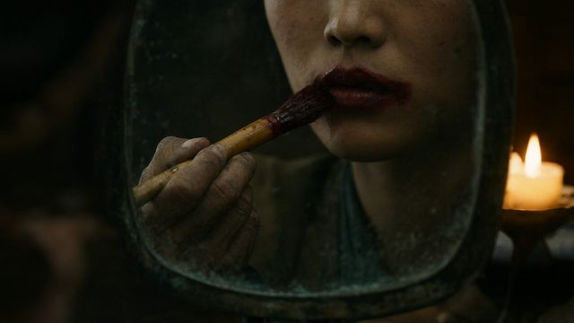
00 / Project
《木蘭辭》很容易被拍成史詩。我們刻意反過來：不做大場面，不做英雄主題，不做真實民族敵人，不做美顏。60 秒只留一個問題——一個人如何把「應該」脫下來。
全片的視覺命題，是兩種材質長在同一個人身上。鐵甲越冷，胭脂越私人；戰場越大，銅鏡越小。
紅色只出現六處；血一律暗褐乾涸；敵軍用虛構黑鐵面具；全片只三次逆光。限制讓 60 秒有記憶點。
9:16 普通話版與 16:9 粵語版各自獨立生成、獨立構圖、獨立混音。不是把同一支片裁成兩種比例。
01 / Story
她是誰、她經歷了什麼、她最後為什麼笑。其餘全部剪掉。分鏡先寫聲音，再寫畫面；因為觀眾閉上眼時，故事仍然要成立。
鐵甲、胭脂、四市。建立「她本來可以不這樣」。
渡河、宿營。第一次離開家，鏡頭開始變寬。
十年征戰壓縮成一個冬天。血是褐的，不是紅的。
辭官。全片唯一一次正面頂光，也是唯一一次她說「不」。
換裝。胭脂重新出現，但這次不是為了遮掩。
老雷認不出她。逆光把兩個人切成一明一暗。
收在笑聲，不收在口號。雌雄不是答案，是問題。
全片只三次逆光：斷髮、開門、雙兔。每一次都代表一個身份被光切開。
Lighting rule / 00-視覺聖經02 / Visual language
如果紅色到處都是，觀眾就不會記得任何一個紅。我們把紅色當成標點符號：只在句子需要停頓的地方出現。
花鈿在角色設定裡曾用金箔，在視覺聖經裡被列為紅色。這是目前文件之間唯一未定案的矛盾；正式製作前要在 00 與 01 之間選一個，不要讓生成模型自己決定。
02B / Visual assets
從設計文件提煉的設定，搭配實際生成的參考圖、設定圖與場景圖。每張圖附上用於生成的提示詞、參考圖與相關檔案，方便重跑與校對。
主角
閨中木蘭，素麻襦裙，長髮鬆挽
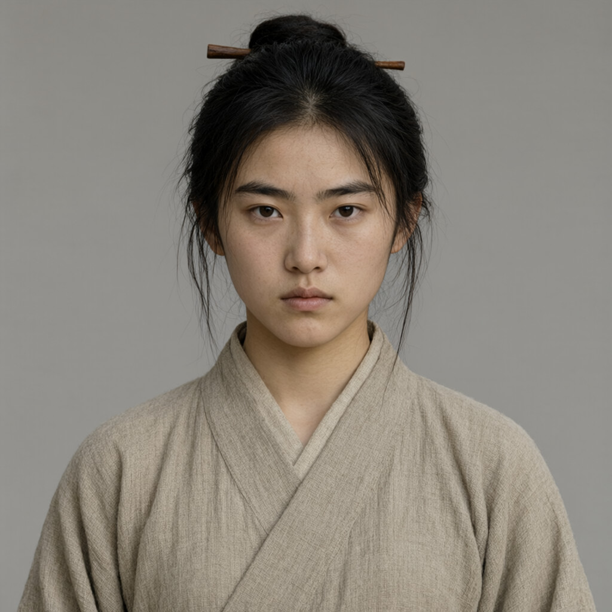
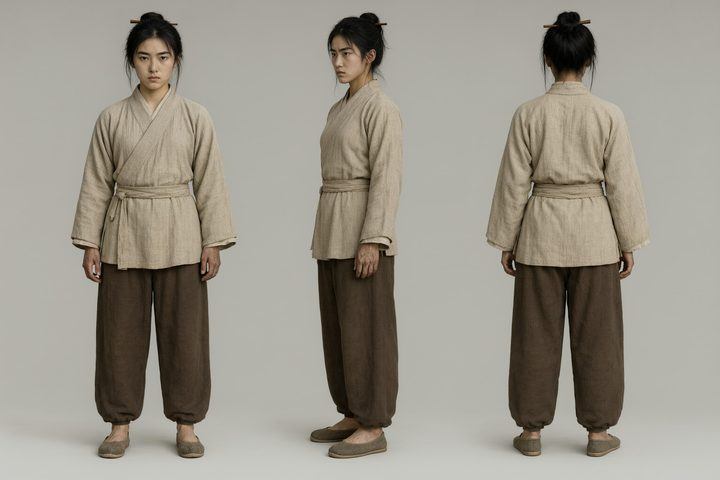
檔案
assets/generated/characters/mulan_A_ref.jpgassets/generated/characters/char_A_sheet.jpg參考圖
assets/generated/characters/mulan_A_ref.jpgassets/generated/characters/mulan_A_ref.jpg（參考圖）生成提示詞（節錄）
A 17-year-old Chinese woman, strong athletic build, 168cm, plain undyed hemp cross-collar tunic, dark brown trousers, cloth shoes worn at the toe, long black hair loosely tied with a wooden pin, loose strands at the temples, no makeup, thick untrimmed eyebrows, faint freckles, pale lips, calloused hands, calm stubborn gaze, slightly squared shoulders, front / three-quarter / side / back, character reference sheet, neutral grey seamless background, even soft studio light, full body, photorealistic, no text負面提示詞
modern clothing, zipper, buttons, printed pattern, plastic, neon, glossy skin, airbrushed, beauty filter, makeup, eyeliner, false eyelashes, fantasy armor, glowing runes, particle effects, lens flare, HDR, oversaturated, text, watermark, logo, extra fingers, deformed hands, anime, illustration, 3D r ...說明（節錄自 design/01-視覺設定-人物場景道具.md）
閨中木蘭，素麻襦裙，長髮鬆挽
主角
沙場木蘭，玄黑札甲，短髮束帶，左眉疤
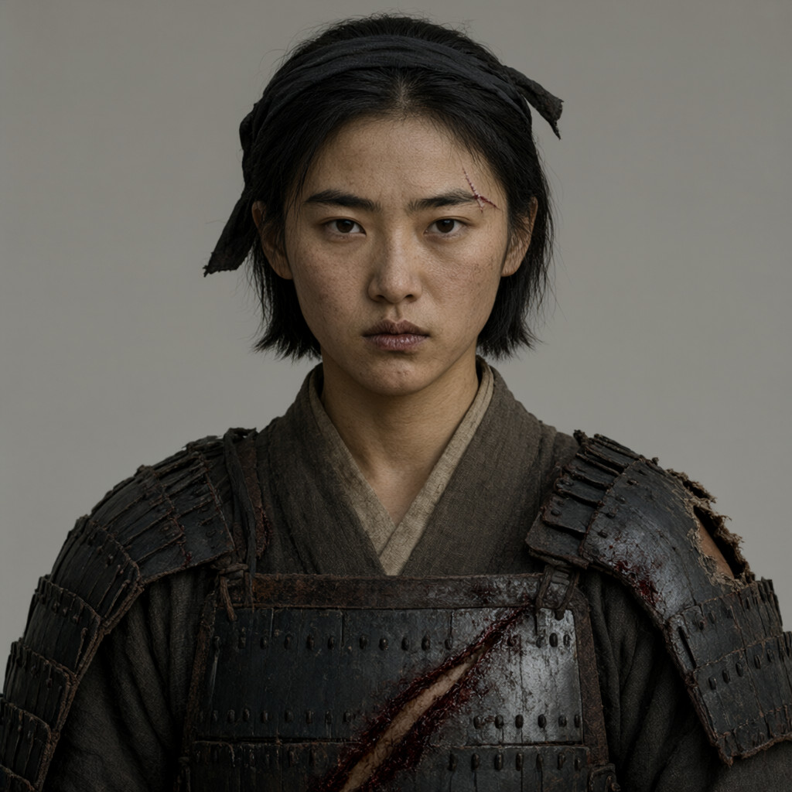
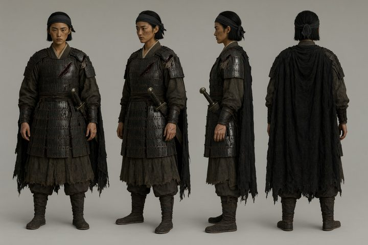
檔案
assets/generated/characters/mulan_B_ref.jpgassets/generated/characters/char_B_sheet.jpg參考圖
assets/ref/mulan_B_ref.jpgassets/generated/characters/mulan_B_ref.jpg（參考圖）生成提示詞（節錄）
The same Chinese woman, mid-20s appearance, weathered tan skin, short black hair cropped below the ear tied with a dark cloth strip, a 1cm pale scar at the tail of her left eyebrow, battered black lamellar armor, three deep sword gashes on the chest, torn left shoulder plate, dried dark brown blood stains, matte oxidized iron, dark grey-brown under-robe, tattered black cloak, leather wrist guards, ring-pommel short sword at the waist, calloused hands with a diagonal scar on the back of the left hand, front / three-quarter / side / back, no beauty retouch, character reference sheet, neutral grey seamless background, even soft studio light, full body, photorealistic, no text負面提示詞
modern clothing, zipper, buttons, printed pattern, plastic, neon, glossy skin, airbrushed, beauty filter, makeup, eyeliner, false eyelashes, fantasy armor, glowing runes, particle effects, lens flare, HDR, oversaturated, text, watermark, logo, extra fingers, deformed hands, anime, illustration, 3D r ...說明（節錄自 design/01-視覺設定-人物場景道具.md）
沙場木蘭，玄黑札甲，短髮束帶，左眉疤
主角
還鄉木蘭，鵝黃襦裙，高髻插銀簪

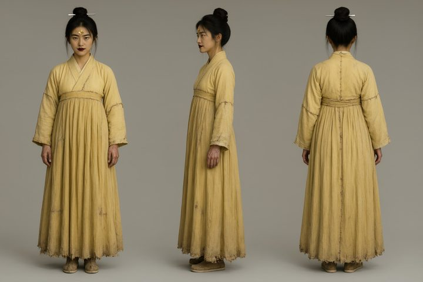
檔案
assets/generated/characters/mulan_C_ref.jpgassets/generated/characters/char_C_sheet.jpg參考圖
assets/generated/characters/mulan_C_ref.jpgassets/generated/characters/mulan_C_ref.jpg（參考圖）生成提示詞（節錄）
The same Chinese woman, pale yellow old ruqun dress with a chest-high skirt, faded fabric, visible mended stitches, worn hem, high bun with a plain silver hairpin, gold leaf flower ornament on the forehead, dark red matte lips, no other makeup, calloused hands with visible scars, short clean nails, calm expression with a faint smile, direct gaze, front / three-quarter / side / back, character reference sheet, neutral grey seamless background, even soft studio light, full body, photorealistic, no text負面提示詞
modern clothing, zipper, buttons, printed pattern, plastic, neon, glossy skin, airbrushed, beauty filter, makeup, eyeliner, false eyelashes, fantasy armor, glowing runes, particle effects, lens flare, HDR, oversaturated, text, watermark, logo, extra fingers, deformed hands, anime, illustration, 3D r ...說明（節錄自 design/01-視覺設定-人物場景道具.md）
還鄉木蘭，鵝黃襦裙，高髻插銀簪
家人
約60歲，佝僂持拐，補丁粗布，白鬚短亂

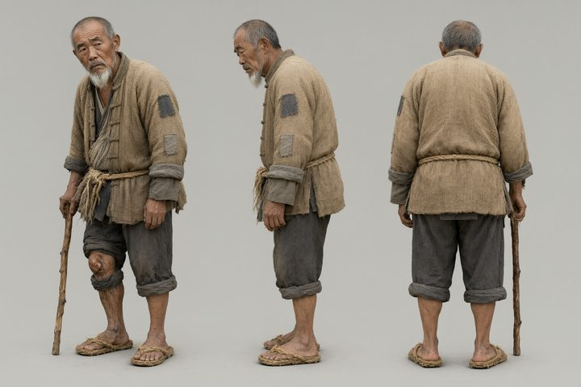
檔案
assets/generated/characters/father_ref.jpgassets/generated/characters/char_father_sheet.jpg參考圖
assets/generated/characters/father_ref.jpgassets/generated/characters/father_ref.jpg（參考圖）生成提示詞（節錄）
A 60-year-old Chinese farmer, hunched back, strong arms, right leg old injury, patched coarse hemp short jacket, hemp rope belt, straw sandals, short messy white beard, eyebrows still black, cloudy eyes, sun-cracked face, wooden cane, ashamed expression, avoiding eye contact, front / side / back, character reference sheet, neutral grey seamless background, even soft studio light, full body, photorealistic, no text負面提示詞
modern clothing, zipper, buttons, printed pattern, plastic, neon, glossy skin, airbrushed, beauty filter, makeup, eyeliner, false eyelashes, fantasy armor, glowing runes, particle effects, lens flare, HDR, oversaturated, text, watermark, logo, extra fingers, deformed hands, anime, illustration, 3D r ...說明（節錄自 design/01-視覺設定-人物場景道具.md）
約60歲，佝僂持拐，補丁粗布，白鬚短亂
家人
約55歲，瘦小背駝，深藍襖圍裙，灰白髮髻
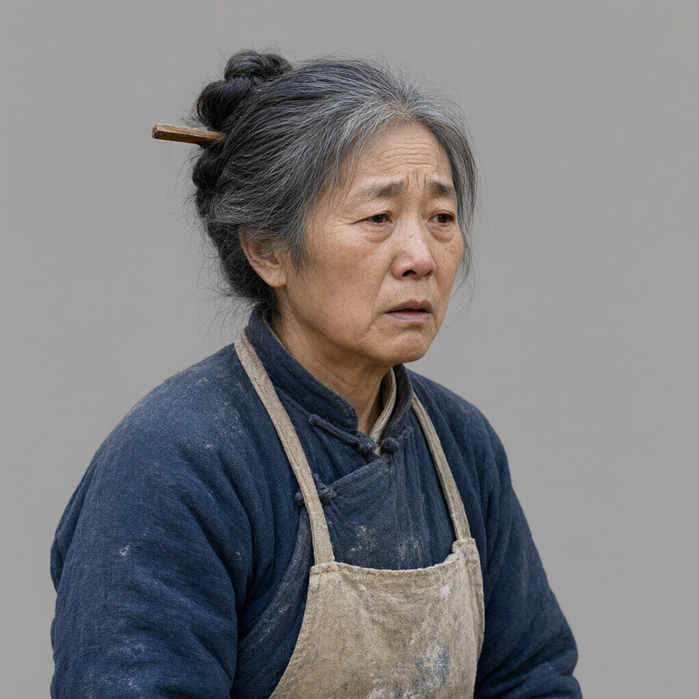
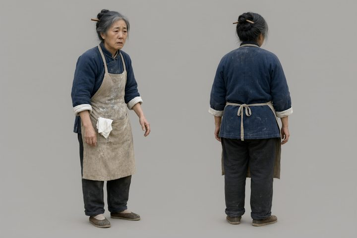
檔案
assets/generated/characters/mother_ref.jpgassets/generated/characters/char_mother_sheet.jpg參考圖
assets/generated/characters/mother_ref.jpgassets/generated/characters/mother_ref.jpg（參考圖）生成提示詞（節錄）
A 55-year-old Chinese mother, small and thin, slightly stooped, dark blue coarse cotton jacket, flour-stained apron, sleeves rolled up, grey hair in a loose bun with a broken wooden hairpin, worn white handkerchief in her apron pocket, tearful but restrained expression, reaching hand, front / side / back, character reference sheet, neutral grey seamless background, even soft studio light, full body, photorealistic, no text負面提示詞
modern clothing, zipper, buttons, printed pattern, plastic, neon, glossy skin, airbrushed, beauty filter, makeup, eyeliner, false eyelashes, fantasy armor, glowing runes, particle effects, lens flare, HDR, oversaturated, text, watermark, logo, extra fingers, deformed hands, anime, illustration, 3D r ...說明（節錄自 design/01-視覺設定-人物場景道具.md）
約55歲，瘦小背駝，深藍襖圍裙，灰白髮髻
家人
約22歲，桃紅舊衫，雙鬟插絹花，對鏡撲粉
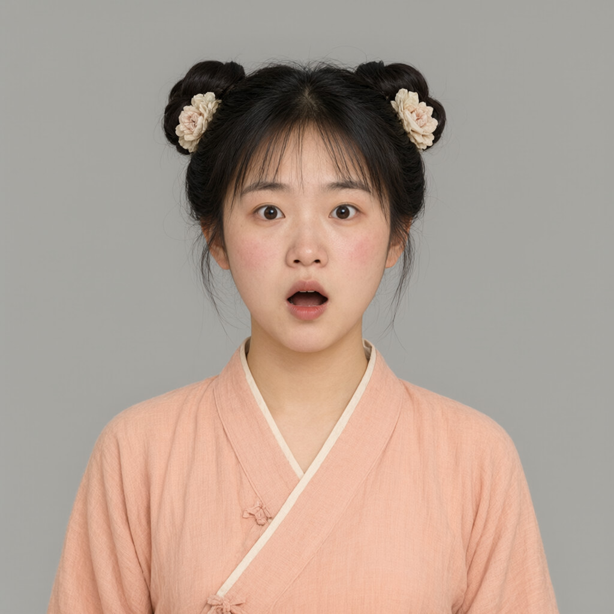
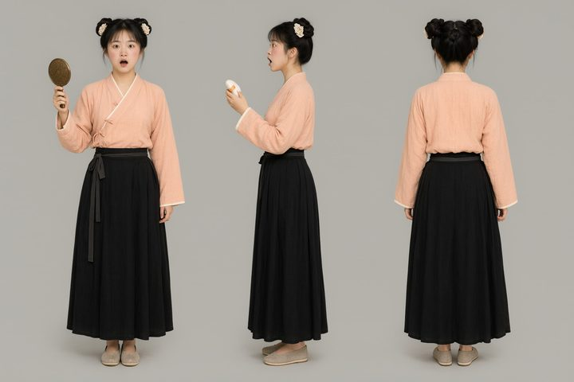
檔案
assets/generated/characters/sister_ref.jpgassets/generated/characters/char_sister_sheet.jpg參考圖
assets/generated/characters/sister_ref.jpgassets/generated/characters/sister_ref.jpg（參考圖）生成提示詞（節錄）
A 22-year-old Chinese woman, peach-pink old blouse, dark skirt, double buns with fabric flowers, slightly flushed cheeks, holding a powder puff, hurried comic energy, bronze mirror in hand, front / side / back, character reference sheet, neutral grey seamless background, even soft studio light, full body, photorealistic, no text負面提示詞
modern clothing, zipper, buttons, printed pattern, plastic, neon, glossy skin, airbrushed, beauty filter, makeup, eyeliner, false eyelashes, fantasy armor, glowing runes, particle effects, lens flare, HDR, oversaturated, text, watermark, logo, extra fingers, deformed hands, anime, illustration, 3D r ...說明（節錄自 design/01-視覺設定-人物場景道具.md）
約22歲，桃紅舊衫，雙鬟插絹花，對鏡撲粉
家人
約10歲，過大短褂，赤腳，磨刀集中
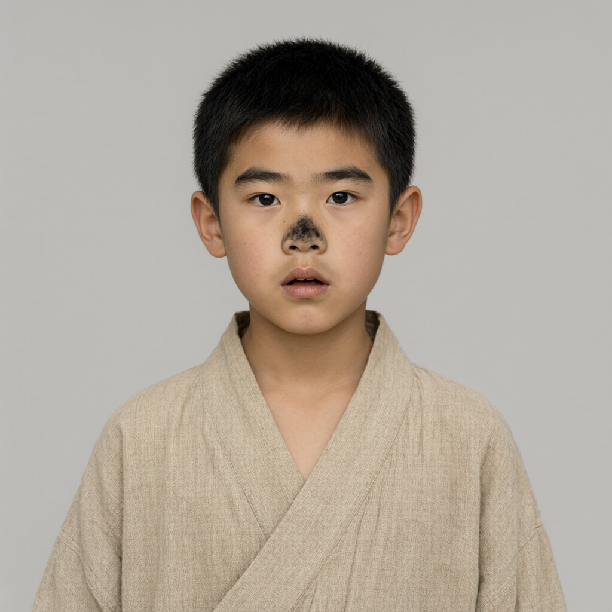
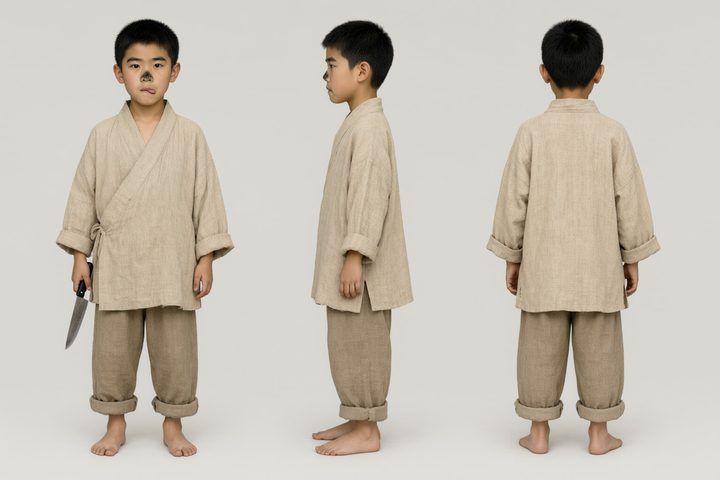
檔案
assets/generated/characters/boy_ref.jpgassets/generated/characters/char_boy_sheet.jpg參考圖
assets/generated/characters/boy_ref.jpgassets/generated/characters/boy_ref.jpg（參考圖）生成提示詞（節錄）
A 10-year-old Chinese boy, oversized hemp shirt, barefoot, rolled trousers, soot on the nose, thick eyebrows, missing one front tooth, holding a small kitchen knife, tongue at the corner of his mouth, focused, front / side / back, character reference sheet, neutral grey seamless background, even soft studio light, full body, photorealistic, no text負面提示詞
modern clothing, zipper, buttons, printed pattern, plastic, neon, glossy skin, airbrushed, beauty filter, makeup, eyeliner, false eyelashes, fantasy armor, glowing runes, particle effects, lens flare, HDR, oversaturated, text, watermark, logo, extra fingers, deformed hands, anime, illustration, 3D r ...說明（節錄自 design/01-視覺設定-人物場景道具.md）
約10歲，過大短褂，赤腳，磨刀集中
其他
老雷、瘦子、小石，雜牌甲，刀劍
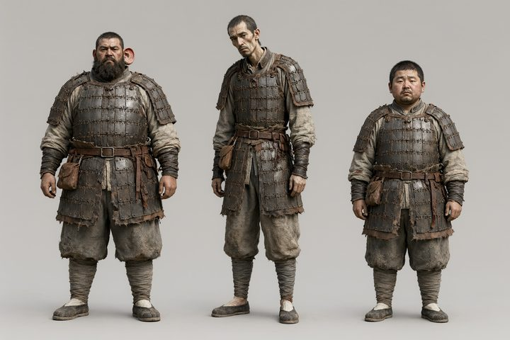
檔案
assets/generated/characters/char_comrades_sheet.jpg參考圖
生成提示詞（節錄）
Three ragged Chinese soldiers standing together, mismatched armor, one burly with a notched left ear and a thick beard, one tall and gaunt with a forward-leaning neck, one round-faced young recruit with a childish expression, dust, stubble, worn leather and iron, no uniform insignia, front view, character reference sheet, neutral grey seamless background, even soft studio light, full body, photorealistic, no text負面提示詞
modern clothing, zipper, buttons, printed pattern, plastic, neon, glossy skin, airbrushed, beauty filter, makeup, eyeliner, false eyelashes, fantasy armor, glowing runes, particle effects, lens flare, HDR, oversaturated, text, watermark, logo, extra fingers, deformed hands, anime, illustration, 3D r ...說明（節錄自 design/01-視覺設定-人物場景道具.md）
老雷、瘦子、小石，雜牌甲，刀劍
其他
不露正臉：龍袍下擺、執玉圭、冠冕陰影
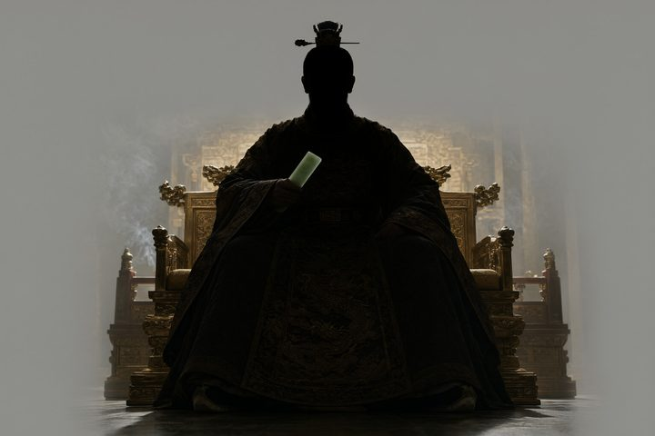
檔案
assets/generated/characters/char_emperor_sheet.jpg參考圖
生成提示詞（節錄）
An ancient Chinese emperor seen from a low angle, face completely in shadow, only the dragon robe hem, a jade tablet in his hand, and the silhouette of the crown, cold golden throne hall, backlit, incense haze, no facial features visible, front / three-quarter / side / back, character reference sheet, neutral grey seamless background, even soft studio light, full body, photorealistic, no text負面提示詞
modern clothing, zipper, buttons, printed pattern, plastic, neon, glossy skin, airbrushed, beauty filter, makeup, eyeliner, false eyelashes, fantasy armor, glowing runes, particle effects, lens flare, HDR, oversaturated, text, watermark, logo, extra fingers, deformed hands, anime, illustration, 3D r ...說明（節錄自 design/01-視覺設定-人物場景道具.md）
不露正臉：龍袍下擺、執玉圭、冠冕陰影
其他
虛構黑鐵面具兵，無民族特徵，統一黑甲
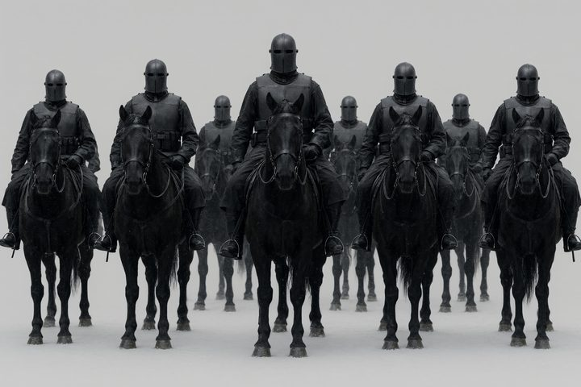
檔案
assets/generated/characters/char_enemy_sheet.jpg參考圖
生成提示詞（節錄）
Anonymous soldiers in plain black iron masks with only eye slits, no cultural markings, no patterns, dark leather armor, black horses, faceless, silhouettes in a snowstorm, matte black metal, no insignia, front view, character reference sheet, neutral grey seamless background, even soft studio light, full body, photorealistic, no text負面提示詞
modern clothing, zipper, buttons, printed pattern, plastic, neon, glossy skin, airbrushed, beauty filter, makeup, eyeliner, false eyelashes, fantasy armor, glowing runes, particle effects, lens flare, HDR, oversaturated, text, watermark, logo, extra fingers, deformed hands, anime, illustration, 3D r ...說明（節錄自 design/01-視覺設定-人物場景道具.md）
虛構黑鐵面具兵，無民族特徵，統一黑甲
10 個場景各有 9:16 與 16:9 兩種構圖，兩者獨立生成。
場景 S01
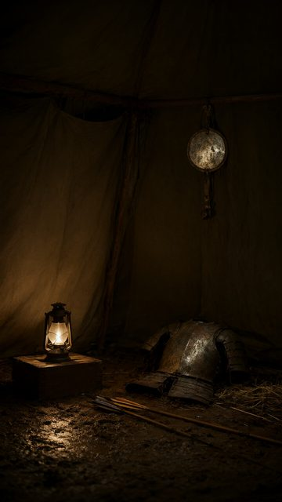
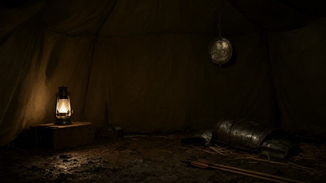
檔案
assets/generated/scenes/scene_S01.jpgassets/generated/scenes_16x9/scene_S01_16x9.jpg參考圖
9:16 生成提示詞（節錄）
Interior of a low military tent at night, single oil lamp on a wooden crate, wet mud floor, straw, broken arrows, a tarnished bronze mirror hanging on canvas, oxidized iron armor on the ground, warm 2200K light, canvas walls breathing in the wind, cinematic film still, 5th century northern China, Northern Wei era, muted desaturated palette, low contrast, 35mm film grain, natural and practical lighting only, deep shadows, weathered textures, visible skin pores and fabric wear, no beauty retouch, no CGI glow, no text, no watermark, vertical 9:16 composition, shallow depth of field負面提示詞
modern clothing, zipper, buttons, printed pattern, plastic, neon, glossy skin, airbrushed, beauty filter, makeup, eyeliner, false eyelashes, fantasy armor, glowing runes, particle effects, lens flare, HDR, oversaturated, text, watermark, logo, extra fingers, deformed hands, anime, illustration, 3D r ...16:9 生成提示詞（節錄）
Interior of a low military tent at night, single oil lamp on a wooden crate, wet mud floor, straw, broken arrows, a tarnished bronze mirror hanging on canvas, oxidized iron armor on the ground, warm 2200K light, canvas walls breathing in the wind, cinematic film still, 5th century northern China, Northern Wei era, muted desaturated palette, low contrast, 35mm film grain, natural and practical lighting only, deep shadows, weathered textures, visible skin pores and fabric wear, no beauty retouch, no CGI glow, no text, no watermark, horizontal 16:9 composition, shallow depth of field負面提示詞
modern clothing, zipper, buttons, printed pattern, plastic, neon, glossy skin, airbrushed, beauty filter, makeup, eyeliner, false eyelashes, fantasy armor, glowing runes, particle effects, lens flare, HDR, oversaturated, text, watermark, logo, extra fingers, deformed hands, anime, illustration, 3D r ...場景 S02
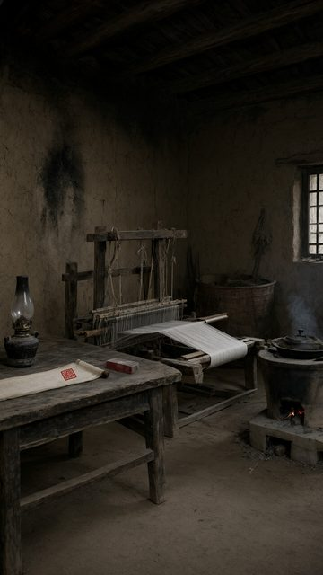
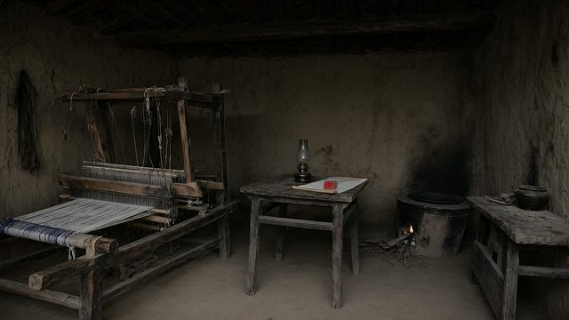
檔案
assets/generated/scenes/scene_S02.jpgassets/generated/scenes_16x9/scene_S02_16x9.jpg參考圖
9:16 生成提示詞（節錄）
Interior of a poor Chinese peasant weaving room, low mud-brick walls with smoke stains, wooden loom with half-woven undyed cloth, a scarred wooden table, oil lamp, clay stove with faint fire, low beams, dust, near-monochrome desaturated image, only the red official seal retains color, cold grey-brown tones, flat overcast light, dust in the air, 5th century Chinese peasant interior, cinematic film still, 35mm grain, vertical 9:16負面提示詞
modern clothing, zipper, buttons, printed pattern, plastic, neon, glossy skin, airbrushed, beauty filter, makeup, eyeliner, false eyelashes, fantasy armor, glowing runes, particle effects, lens flare, HDR, oversaturated, text, watermark, logo, extra fingers, deformed hands, anime, illustration, 3D r ...16:9 生成提示詞（節錄）
Interior of a poor Chinese peasant weaving room, low mud-brick walls with smoke stains, wooden loom with half-woven undyed cloth, a scarred wooden table, oil lamp, clay stove with faint fire, low beams, dust, near-monochrome desaturated image, only the red official seal retains color, cold grey-brown tones, flat overcast light, dust in the air, 5th century Chinese peasant interior, cinematic film still, 35mm grain, vertical 16:9負面提示詞
modern clothing, zipper, buttons, printed pattern, plastic, neon, glossy skin, airbrushed, beauty filter, makeup, eyeliner, false eyelashes, fantasy armor, glowing runes, particle effects, lens flare, HDR, oversaturated, text, watermark, logo, extra fingers, deformed hands, anime, illustration, 3D r ...場景 S03
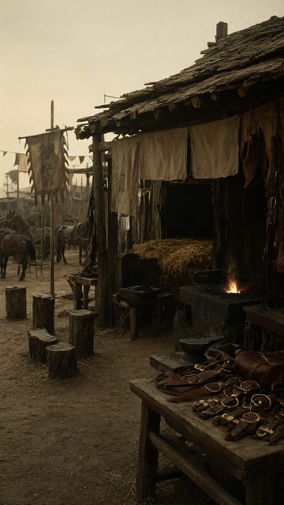
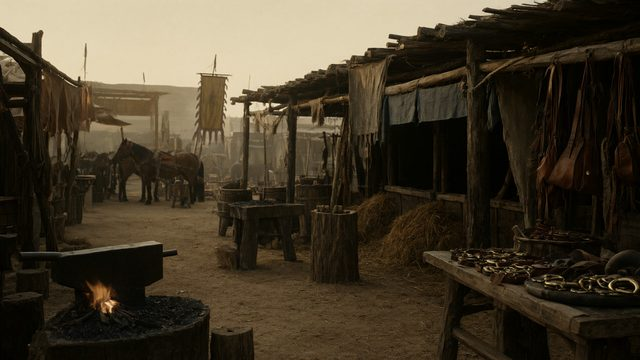
檔案
assets/generated/scenes/scene_S03.jpgassets/generated/scenes_16x9/scene_S03_16x9.jpg參考圖
9:16 生成提示詞（節錄）
A dusty ancient Chinese border market at dawn, wooden stalls, cloth banners, hitching posts, horse stable with hay, leather goods with brass buckles, blacksmith forge with sparks, low backlight through dust, warm ochre palette, wide shot, cinematic film still, 5th century northern China, Northern Wei era, muted desaturated palette, low contrast, 35mm film grain, natural and practical lighting only, deep shadows, weathered textures, visible skin pores and fabric wear, no beauty retouch, no CGI glow, no text, no watermark, vertical 9:16 composition, shallow depth of field負面提示詞
modern clothing, zipper, buttons, printed pattern, plastic, neon, glossy skin, airbrushed, beauty filter, makeup, eyeliner, false eyelashes, fantasy armor, glowing runes, particle effects, lens flare, HDR, oversaturated, text, watermark, logo, extra fingers, deformed hands, anime, illustration, 3D r ...16:9 生成提示詞（節錄）
A dusty ancient Chinese border market at dawn, wooden stalls, cloth banners, hitching posts, horse stable with hay, leather goods with brass buckles, blacksmith forge with sparks, low backlight through dust, warm ochre palette, wide shot, cinematic film still, 5th century northern China, Northern Wei era, muted desaturated palette, low contrast, 35mm film grain, natural and practical lighting only, deep shadows, weathered textures, visible skin pores and fabric wear, no beauty retouch, no CGI glow, no text, no watermark, horizontal 16:9 composition, shallow depth of field負面提示詞
modern clothing, zipper, buttons, printed pattern, plastic, neon, glossy skin, airbrushed, beauty filter, makeup, eyeliner, false eyelashes, fantasy armor, glowing runes, particle effects, lens flare, HDR, oversaturated, text, watermark, logo, extra fingers, deformed hands, anime, illustration, 3D r ...場景 S04
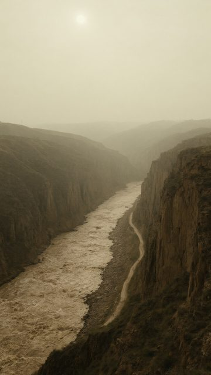
檔案
assets/generated/scenes/scene_S04.jpgassets/generated/scenes_16x9/scene_S04_16x9.jpg參考圖
9:16 生成提示詞（節錄）
Vast Yellow River canyon at dawn, muddy turbulent water, vertical loess cliffs, a narrow path along the river, hazy dusty air, pale sun, desaturated ochre, epic scale, no people, wide shot, cinematic film still, 5th century northern China, Northern Wei era, muted desaturated palette, low contrast, 35mm film grain, natural and practical lighting only, deep shadows, weathered textures, visible skin pores and fabric wear, no beauty retouch, no CGI glow, no text, no watermark, vertical 9:16 composition, shallow depth of field負面提示詞
modern clothing, zipper, buttons, printed pattern, plastic, neon, glossy skin, airbrushed, beauty filter, makeup, eyeliner, false eyelashes, fantasy armor, glowing runes, particle effects, lens flare, HDR, oversaturated, text, watermark, logo, extra fingers, deformed hands, anime, illustration, 3D r ...16:9 生成提示詞（節錄）
Vast Yellow River canyon at dawn, muddy turbulent water, vertical loess cliffs, a narrow path along the river, hazy dusty air, pale sun, desaturated ochre, epic scale, no people, wide shot, cinematic film still, 5th century northern China, Northern Wei era, muted desaturated palette, low contrast, 35mm film grain, natural and practical lighting only, deep shadows, weathered textures, visible skin pores and fabric wear, no beauty retouch, no CGI glow, no text, no watermark, horizontal 16:9 composition, shallow depth of field負面提示詞
modern clothing, zipper, buttons, printed pattern, plastic, neon, glossy skin, airbrushed, beauty filter, makeup, eyeliner, false eyelashes, fantasy armor, glowing runes, particle effects, lens flare, HDR, oversaturated, text, watermark, logo, extra fingers, deformed hands, anime, illustration, 3D r ...場景 S05
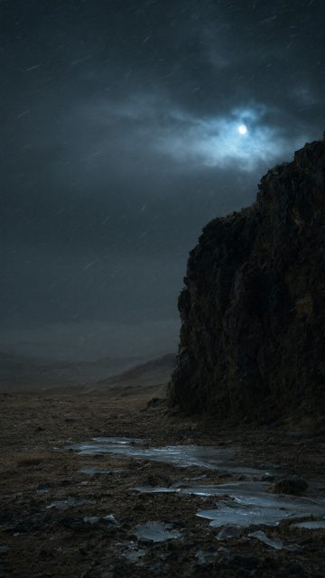
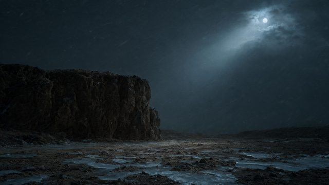
檔案
assets/generated/scenes/scene_S05.jpgassets/generated/scenes_16x9/scene_S05_16x9.jpg參考圖
9:16 生成提示詞（節錄）
Black rocky mountain at night, blizzard mixed with sand, thin ice on the ground, cold blue moonlight breaking through clouds, snow streaks in the beam, a cliff edge, desolate, no people, 7500K, cinematic film still, 5th century northern China, Northern Wei era, muted desaturated palette, low contrast, 35mm film grain, natural and practical lighting only, deep shadows, weathered textures, visible skin pores and fabric wear, no beauty retouch, no CGI glow, no text, no watermark, vertical 9:16 composition, shallow depth of field負面提示詞
modern clothing, zipper, buttons, printed pattern, plastic, neon, glossy skin, airbrushed, beauty filter, makeup, eyeliner, false eyelashes, fantasy armor, glowing runes, particle effects, lens flare, HDR, oversaturated, text, watermark, logo, extra fingers, deformed hands, anime, illustration, 3D r ...16:9 生成提示詞（節錄）
Black rocky mountain at night, blizzard mixed with sand, thin ice on the ground, cold blue moonlight breaking through clouds, snow streaks in the beam, a cliff edge, desolate, no people, 7500K, cinematic film still, 5th century northern China, Northern Wei era, muted desaturated palette, low contrast, 35mm film grain, natural and practical lighting only, deep shadows, weathered textures, visible skin pores and fabric wear, no beauty retouch, no CGI glow, no text, no watermark, horizontal 16:9 composition, shallow depth of field負面提示詞
modern clothing, zipper, buttons, printed pattern, plastic, neon, glossy skin, airbrushed, beauty filter, makeup, eyeliner, false eyelashes, fantasy armor, glowing runes, particle effects, lens flare, HDR, oversaturated, text, watermark, logo, extra fingers, deformed hands, anime, illustration, 3D r ...場景 S06
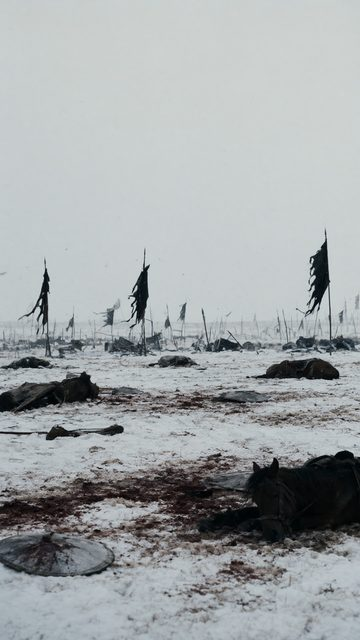
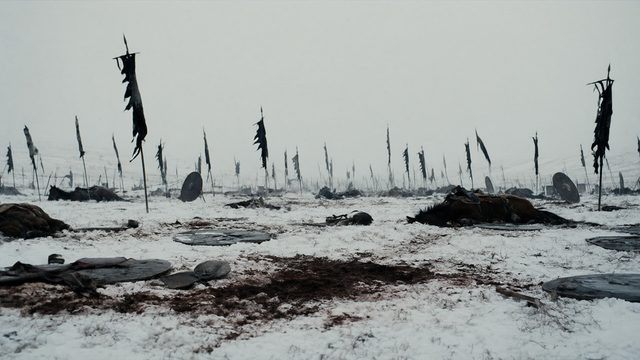
檔案
assets/generated/scenes/scene_S06.jpgassets/generated/scenes_16x9/scene_S06_16x9.jpg參考圖
9:16 生成提示詞（節錄）
Desolate snow battlefield under flat overcast light, broken black banners, fallen horses and scattered shields, silhouettes of the dead, no gore detail, blood as dark brown stains in the snow, grey-white palette, wind, wide shot, cinematic film still, 5th century northern China, Northern Wei era, muted desaturated palette, low contrast, 35mm film grain, natural and practical lighting only, deep shadows, weathered textures, visible skin pores and fabric wear, no beauty retouch, no CGI glow, no text, no watermark, vertical 9:16 composition, shallow depth of field負面提示詞
modern clothing, zipper, buttons, printed pattern, plastic, neon, glossy skin, airbrushed, beauty filter, makeup, eyeliner, false eyelashes, fantasy armor, glowing runes, particle effects, lens flare, HDR, oversaturated, text, watermark, logo, extra fingers, deformed hands, anime, illustration, 3D r ...16:9 生成提示詞（節錄）
Desolate snow battlefield under flat overcast light, broken black banners, fallen horses and scattered shields, silhouettes of the dead, no gore detail, blood as dark brown stains in the snow, grey-white palette, wind, wide shot, cinematic film still, 5th century northern China, Northern Wei era, muted desaturated palette, low contrast, 35mm film grain, natural and practical lighting only, deep shadows, weathered textures, visible skin pores and fabric wear, no beauty retouch, no CGI glow, no text, no watermark, horizontal 16:9 composition, shallow depth of field負面提示詞
modern clothing, zipper, buttons, printed pattern, plastic, neon, glossy skin, airbrushed, beauty filter, makeup, eyeliner, false eyelashes, fantasy armor, glowing runes, particle effects, lens flare, HDR, oversaturated, text, watermark, logo, extra fingers, deformed hands, anime, illustration, 3D r ...場景 S07
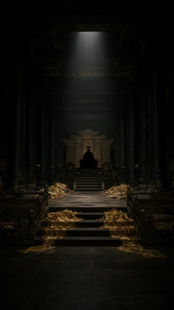
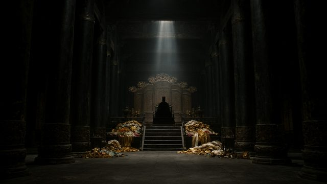
檔案
assets/generated/scenes/scene_S07.jpgassets/generated/scenes_16x9/scene_S07_16x9.jpg參考圖
9:16 生成提示詞（節錄）
Vast symmetrical ancient Chinese throne hall, black columns receding into darkness, a high throne with the emperor as a shadow, piles of gold and silk on the steps, a single shaft of light from above, incense haze, cold gold and black, 3200K, no people in the foreground, 21mm, cinematic film still, 5th century northern China, Northern Wei era, muted desaturated palette, low contrast, 35mm film grain, natural and practical lighting only, deep shadows, weathered textures, visible skin pores and fabric wear, no beauty retouch, no CGI glow, no text, no watermark, vertical 9:16 composition, shallow depth of field負面提示詞
modern clothing, zipper, buttons, printed pattern, plastic, neon, glossy skin, airbrushed, beauty filter, makeup, eyeliner, false eyelashes, fantasy armor, glowing runes, particle effects, lens flare, HDR, oversaturated, text, watermark, logo, extra fingers, deformed hands, anime, illustration, 3D r ...16:9 生成提示詞（節錄）
Vast symmetrical ancient Chinese throne hall, black columns receding into darkness, a high throne with the emperor as a shadow, piles of gold and silk on the steps, a single shaft of light from above, incense haze, cold gold and black, 3200K, no people in the foreground, 21mm, cinematic film still, 5th century northern China, Northern Wei era, muted desaturated palette, low contrast, 35mm film grain, natural and practical lighting only, deep shadows, weathered textures, visible skin pores and fabric wear, no beauty retouch, no CGI glow, no text, no watermark, horizontal 16:9 composition, shallow depth of field負面提示詞
modern clothing, zipper, buttons, printed pattern, plastic, neon, glossy skin, airbrushed, beauty filter, makeup, eyeliner, false eyelashes, fantasy armor, glowing runes, particle effects, lens flare, HDR, oversaturated, text, watermark, logo, extra fingers, deformed hands, anime, illustration, 3D r ...場景 S08
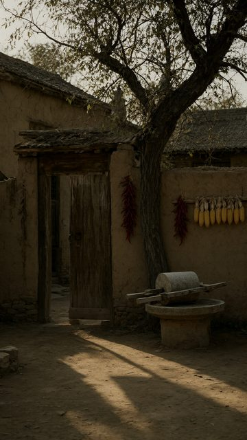
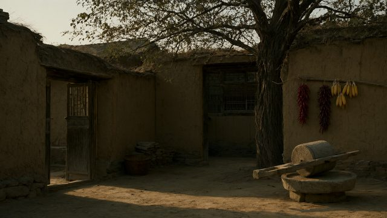
檔案
assets/generated/scenes/scene_S08.jpgassets/generated/scenes_16x9/scene_S08_16x9.jpg參考圖
9:16 生成提示詞（節錄）
Warm Chinese peasant courtyard in late afternoon, mud walls, old wooden gate, stone mill under an old tree, chili peppers and corn hanging on the wall, golden sunlight, long shadows, lived-in, warm late-afternoon sunlight, golden dust motes, earthy ochre and faded yellow, soft natural contrast, 5th century Chinese rural courtyard, cinematic film still, 35mm grain, gentle and lived-in, vertical 9:16負面提示詞
modern clothing, zipper, buttons, printed pattern, plastic, neon, glossy skin, airbrushed, beauty filter, makeup, eyeliner, false eyelashes, fantasy armor, glowing runes, particle effects, lens flare, HDR, oversaturated, text, watermark, logo, extra fingers, deformed hands, anime, illustration, 3D r ...16:9 生成提示詞（節錄）
Warm Chinese peasant courtyard in late afternoon, mud walls, old wooden gate, stone mill under an old tree, chili peppers and corn hanging on the wall, golden sunlight, long shadows, lived-in, warm late-afternoon sunlight, golden dust motes, earthy ochre and faded yellow, soft natural contrast, 5th century Chinese rural courtyard, cinematic film still, 35mm grain, gentle and lived-in, vertical 16:9負面提示詞
modern clothing, zipper, buttons, printed pattern, plastic, neon, glossy skin, airbrushed, beauty filter, makeup, eyeliner, false eyelashes, fantasy armor, glowing runes, particle effects, lens flare, HDR, oversaturated, text, watermark, logo, extra fingers, deformed hands, anime, illustration, 3D r ...場景 S09
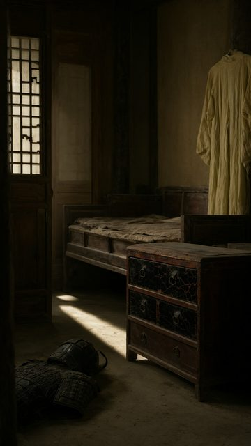
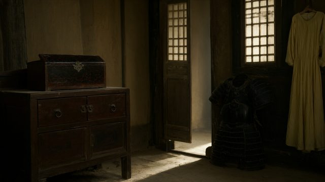
檔案
assets/generated/scenes/scene_S09.jpgassets/generated/scenes_16x9/scene_S09_16x9.jpg參考圖
9:16 生成提示詞（節錄）
Small dim Chinese boudoir, paper window diffusing light, old wooden bed, wooden dressing case with a cracked lacquer finish, dust, a black armor standing on the floor, pale yellow dress hanging, warm shaft of light from the door, warm late-afternoon sunlight, golden dust motes, earthy ochre and faded yellow, soft natural contrast, 5th century Chinese rural courtyard, cinematic film still, 35mm grain, gentle and lived-in, vertical 9:16負面提示詞
modern clothing, zipper, buttons, printed pattern, plastic, neon, glossy skin, airbrushed, beauty filter, makeup, eyeliner, false eyelashes, fantasy armor, glowing runes, particle effects, lens flare, HDR, oversaturated, text, watermark, logo, extra fingers, deformed hands, anime, illustration, 3D r ...16:9 生成提示詞（節錄）
Small dim Chinese boudoir, paper window diffusing light, old wooden bed, wooden dressing case with a cracked lacquer finish, dust, a black armor standing on the floor, pale yellow dress hanging, warm shaft of light from the door, warm late-afternoon sunlight, golden dust motes, earthy ochre and faded yellow, soft natural contrast, 5th century Chinese rural courtyard, cinematic film still, 35mm grain, gentle and lived-in, vertical 16:9負面提示詞
modern clothing, zipper, buttons, printed pattern, plastic, neon, glossy skin, airbrushed, beauty filter, makeup, eyeliner, false eyelashes, fantasy armor, glowing runes, particle effects, lens flare, HDR, oversaturated, text, watermark, logo, extra fingers, deformed hands, anime, illustration, 3D r ...場景 S10
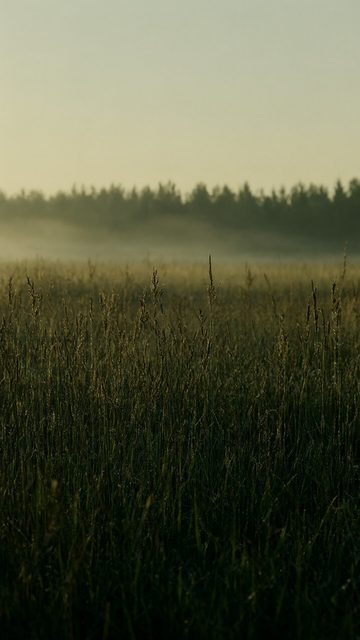
檔案
assets/generated/scenes/scene_S10.jpgassets/generated/scenes_16x9/scene_S10_16x9.jpg參考圖
9:16 生成提示詞（節錄）
Dewy grassland at sunrise, knee-high grass, low mist, blurred tree line, backlit dew drops, soft green and gold, tranquil, macro-friendly, cinematic film still, 5th century northern China, Northern Wei era, muted desaturated palette, low contrast, 35mm film grain, natural and practical lighting only, deep shadows, weathered textures, visible skin pores and fabric wear, no beauty retouch, no CGI glow, no text, no watermark, vertical 9:16 composition, shallow depth of field負面提示詞
modern clothing, zipper, buttons, printed pattern, plastic, neon, glossy skin, airbrushed, beauty filter, makeup, eyeliner, false eyelashes, fantasy armor, glowing runes, particle effects, lens flare, HDR, oversaturated, text, watermark, logo, extra fingers, deformed hands, anime, illustration, 3D r ...16:9 生成提示詞（節錄）
Dewy grassland at sunrise, knee-high grass, low mist, blurred tree line, backlit dew drops, soft green and gold, tranquil, macro-friendly, cinematic film still, 5th century northern China, Northern Wei era, muted desaturated palette, low contrast, 35mm film grain, natural and practical lighting only, deep shadows, weathered textures, visible skin pores and fabric wear, no beauty retouch, no CGI glow, no text, no watermark, horizontal 16:9 composition, shallow depth of field負面提示詞
modern clothing, zipper, buttons, printed pattern, plastic, neon, glossy skin, airbrushed, beauty filter, makeup, eyeliner, false eyelashes, fantasy armor, glowing runes, particle effects, lens flare, HDR, oversaturated, text, watermark, logo, extra fingers, deformed hands, anime, illustration, 3D r ...道具
玄黑札甲、皮帶、左肩甲缺口
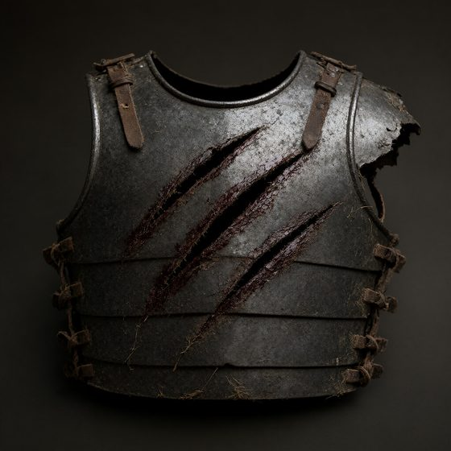
檔案
assets/generated/props/prop_armor.jpg參考圖
生成提示詞（節錄）
Battered black lamellar breastplate, three layers of iron plates laced with leather cord, three deep sword gashes on the chest, torn left shoulder plate, dried dark brown blood in layers, matte oxidized iron, mud and straw stuck to it, weathered leather straps, no ornament, cinematic product still life, dark neutral background, macro detail, 35mm film grain, natural side light, no text負面提示詞
modern clothing, zipper, buttons, printed pattern, plastic, neon, glossy skin, airbrushed, beauty filter, makeup, eyeliner, false eyelashes, fantasy armor, glowing runes, particle effects, lens flare, HDR, oversaturated, text, watermark, logo, extra fingers, deformed hands, anime, illustration, 3D r ...說明（節錄自 design/01-視覺設定-人物場景道具.md）
玄黑札甲、皮帶、左肩甲缺口
道具
氧化銅鏡、小瓷盒、竹筆
檔案
assets/generated/props/prop_mirror_rouge.jpg參考圖
生成提示詞（節錄）
A tarnished ancient bronze mirror, 18cm, heavily oxidized, chipped edge, hanging by a hemp rope, only a small polished area reflecting light, beside it a small cracked porcelain rouge box tied with cloth and a worn bamboo applicator, dark red matte rouge paste, warm candlelight, deep shadows, cinematic product still life, dark neutral background, macro detail, 35mm film grain, natural side light, no text負面提示詞
modern clothing, zipper, buttons, printed pattern, plastic, neon, glossy skin, airbrushed, beauty filter, makeup, eyeliner, false eyelashes, fantasy armor, glowing runes, particle effects, lens flare, HDR, oversaturated, text, watermark, logo, extra fingers, deformed hands, anime, illustration, 3D r ...說明（節錄自 design/01-視覺設定-人物場景道具.md）
氧化銅鏡、小瓷盒、竹筆
道具
環首、刃口崩、皮鞘
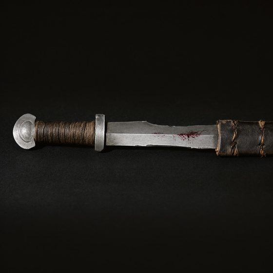
檔案
assets/generated/props/prop_short_sword.jpg參考圖
生成提示詞（節錄）
Ancient Chinese ring-pommel short sword, 25cm blade, two chips on the edge, hemp-wrapped handle darkened with sweat, worn leather scabbard with repaired stitching, matte steel, dried blood in the fuller, macro product shot, side light, cinematic product still life, dark neutral background, macro detail, 35mm film grain, natural side light, no text負面提示詞
modern clothing, zipper, buttons, printed pattern, plastic, neon, glossy skin, airbrushed, beauty filter, makeup, eyeliner, false eyelashes, fantasy armor, glowing runes, particle effects, lens flare, HDR, oversaturated, text, watermark, logo, extra fingers, deformed hands, anime, illustration, 3D r ...說明（節錄自 design/01-視覺設定-人物場景道具.md）
環首、刃口崩、皮鞘
道具
雜牌武器、破損旗幟
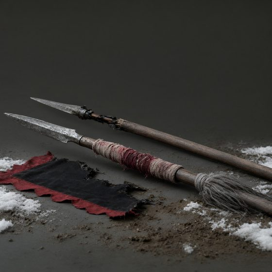
檔案
assets/generated/props/prop_spear_banner.jpg參考圖
生成提示詞（節錄）
A worn Chinese spear, 2.2m ash wood shaft wrapped with blood-stained cloth in the middle, notched spearhead, faded grey-red tassel, beside it a broken black banner with a charred red border, snapped pole, snow and mud, flat overcast light, desaturated, cinematic product still life, dark neutral background, macro detail, 35mm film grain, natural side light, no text負面提示詞
modern clothing, zipper, buttons, printed pattern, plastic, neon, glossy skin, airbrushed, beauty filter, makeup, eyeliner, false eyelashes, fantasy armor, glowing runes, particle effects, lens flare, HDR, oversaturated, text, watermark, logo, extra fingers, deformed hands, anime, illustration, 3D r ...說明（節錄自 design/01-視覺設定-人物場景道具.md）
雜牌武器、破損旗幟
道具
木簡、竹簡、軍令
檔案
assets/generated/props/prop_scrolls.jpg參考圖
生成提示詞（節錄）
Twelve rolled ancient Chinese conscription scrolls, hemp paper, wooden rods, red official seals, wax seals, frayed edges, three unrolled showing vertical calligraphy, one name repeated, dust, placed on a scarred wooden table, only the red seal saturated, near-monochrome scene, overhead shot, cinematic product still life, dark neutral background, macro detail, 35mm film grain, natural side light, no text負面提示詞
modern clothing, zipper, buttons, printed pattern, plastic, neon, glossy skin, airbrushed, beauty filter, makeup, eyeliner, false eyelashes, fantasy armor, glowing runes, particle effects, lens flare, HDR, oversaturated, text, watermark, logo, extra fingers, deformed hands, anime, illustration, 3D r ...說明（節錄自 design/01-視覺設定-人物場景道具.md）
木簡、竹簡、軍令
道具
鵝黃舊衣、補針、素銀簪
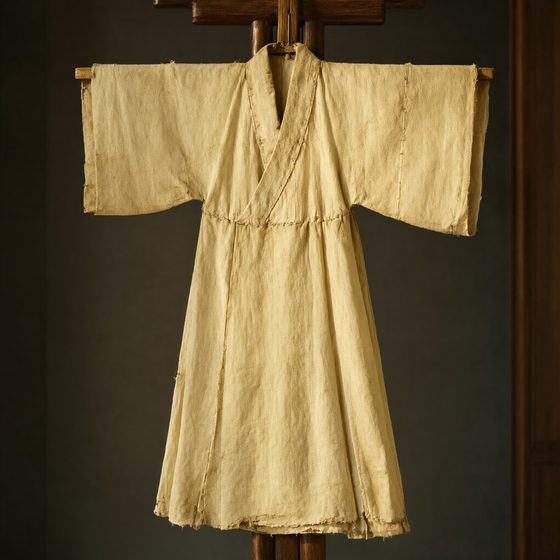
檔案
assets/generated/props/prop_yellow_dress.jpg參考圖
生成提示詞（節錄）
A faded pale yellow Chinese ruqun dress, chest-high skirt, old cotton, visible mended stitches, worn hem, soft creases, hanging on a wooden rack, warm afternoon light, lived-in, not glamorous, detail shot, cinematic product still life, dark neutral background, macro detail, 35mm film grain, natural side light, no text負面提示詞
modern clothing, zipper, buttons, printed pattern, plastic, neon, glossy skin, airbrushed, beauty filter, makeup, eyeliner, false eyelashes, fantasy armor, glowing runes, particle effects, lens flare, HDR, oversaturated, text, watermark, logo, extra fingers, deformed hands, anime, illustration, 3D r ...說明（節錄自 design/01-視覺設定-人物場景道具.md）
鵝黃舊衣、補針、素銀簪
來源：design/01-視覺設定-人物場景道具.md、design/00-視覺聖經.md、assets/generated/manifest.jsonl。
03 / SOP
這條流程的重點不是「用哪個模型」，而是每個階段都有可檢查的產出。上一階段沒有通關，就不要把問題帶進生成。每一步對應的設計文件，都可以在下方 提示詞庫 直接複製生成提示詞。
先寫一句話：「粗糙的鐵甲與細膩的胭脂，長在同一個人身上。」再寫不能做的事：不做史詩、不做英雄主題、不做真實民族敵人、不做美顏。限制越早寫，後面越少返工。
視覺聖經不是 moodboard，是判準。色彩、光線、鏡頭、材質、符號，每一條都要能回答「這個鏡頭該不該這樣拍」。寫下紅色六處、三次逆光、血的顏色、敵軍的處理方式。
先做參考圖，再做設定圖，再做道具與場景。角色設定圖用中性灰背景，目的是對照，不是海報。道具要能靠輪廓認出；場景要有可重複的光位。
每鏡都要有時間碼、景別、機位、運鏡、聲音。分鏡不是畫面清單，是剪輯計畫。先問「這一鏡刪掉會怎樣」，答不出來就刪。
8 句人聲、117 字、約 27 秒。先修到關掉畫面也聽得懂，再進錄音。標出斷句、重音、停頓與字幕斷行；不要讓演員在錄音室裡幫你改劇本。
提示詞包是全片唯一的視覺語言。Global style、refs、props、scenes、45 shots、negative 分層管理。每個角色只綁定一張主參考圖，避免模型在兩張臉之間平均。
用 build_jobs.py 把設計文件變成 jobs.json；用 comfy_batch.py 送到 ComfyUI；用 manifest 記錄每一次生成。設計文件是原始碼，JSON 是編譯後的任務，manifest 是執行紀錄。
先跑 batch，再整批看 contact sheet。不要一張一張盯；問題要在總表上看出來。把手、臉、文字、歷史錯置、構圖重複列成檢查表，通過的才放進 overrides 之外。
16:9 不是裁切。改提示詞、改構圖、重新採樣，只重生成 scenes 與 shots。角色設定圖與道具維持原比例，因為它們是參考，不是鏡頭。
animatic → i2v → 對嘴 → 字幕 → 音樂音效 → 混音 → 調色 → QC → 交付。先剪 animatic，確認 60 秒成立，再花錢生成動態。動態規格已寫在 06 動態 與 design/02；兩個版本各自完整，不是一個版本加減。
03B / Prompt library
這些不是影像提示詞，而是「把一個故事變成一份可執行設計文件」的提示詞。先填共用 Brief，再按 00 → 07 生成；每份文件都有自己的交付檢查。複製後直接貼進 LLM，存成對應檔名即可。
已實測把提示詞貼進 LLM，會產出符合章節要求的完整 Markdown：00 視覺聖經與 06 聲音設計（音色＋試鏡）已用本地模型（gemma4:31b）跑過，HEX、時間碼、表格與交付檢查都到位。
START HERE · 共用 Brief
不用每次重寫。把這 12 個欄位填好，複製到每個提示詞的「【專案 brief】」位置。故事不同，方法不變。
【共用 Brief｜先填這張，再貼進每一份提示詞】 片名： 原故事／詩／一句話： 片長與格式： 平台與觀眾： 主角與核心衝突： 世界觀與時代： 視覺參考（只寫氛圍，不抄構圖）： 禁止參考／禁止出現： 已定案限制（敘事色、血、敵人、禁忌、安全區）： 製作方式與預算： 語言版本（語言／畫幅／平台）： 現有文件（貼上或摘要）：
design/00-視覺聖經.md
把一句話命題，收斂成全片唯一的視覺判準。
你是短片導演、攝影指導與美術指導。請為《{{片名}}》建立 `design/00-視覺聖經.md`。
你是短片導演、攝影指導與美術指導。請為《{{片名}}》建立 `design/00-視覺聖經.md`。
【專案 brief】
{{貼上已填好的共用 Brief}}
【任務】
把 brief 收斂成全片唯一的視覺判準。不要寫 moodboard 形容詞，要寫可執行、可檢查的規則。
【必要章節】
1. 一句話視覺命題：一句話，必須包含兩個互相衝突的具體物件、材質或動作。
2. 三組核心對比：每組列 A 端、B 端、載體，並說明如何在同一鏡頭同框。
3. 色彩腳本：按時間段落列表，欄位為時間、段落、主色（HEX）、輔色（HEX）、敘事色出現在哪裡。指定一個敘事色，規定全片出現次數與每次的意義。
4. 光影規則：光源數量、方向、色溫、人臉暗部比例；列出全片只准用逆光的時刻（最多三次）。
5. 鏡頭語言：按段落列焦段、機位、運鏡、剪輯節奏；列出全片禁用運鏡。
6. 符號回收表：符號、第一次出現、回收、含義；至少五組。
7. 跨鏡一致性清單：角色疤痕、道具磨損、服裝、光源方向等，寫成可勾選項。
8. 禁用清單：避免俗氣、文化錯置、生成風險；至少八條。
9. 封面幀：指定一個時間點、構圖、文字位置，以及觀眾在 0.3 秒內會產生的認知衝突。
【這份文件的交付檢查】
- 攝影、美術、生成、剪輯都能引用同一條規則。
- 每個顏色有 HEX，每個時間有時間碼。
- 敘事色的出現次數與位置可以被場記逐鏡核對。
【通用規則】
- 文件用繁體中文；英文只保留在影像 prompt 與必要的技術欄位。
- 文件開頭標明版本、日期、上游文件；把「交付檢查」放在文件末尾，寫成可勾選項。
- 只使用 brief 與我提供的資料；缺關鍵資料時先列出最多五個問題，不要自行發明。
- 所有規則要可執行、可檢查；不要寫「電影感」「高級感」「史詩感」這類空話。
- 只輸出 Markdown 文件本體，不要前言、不要解釋、不要生成圖片，也不要用單一程式碼區塊包住整份文件。# 《雌雄》60 秒短片 · 視覺聖經 > 本文件是全片的美術總則。人物、場景、道具三份設定都必須回扣這裡的規則， > 任何單鏡的生成或拍攝，都以本文件為最終判準。 --- ## 一、一句話視覺命題 **一具殺過人的鐵甲，和一張塗上胭脂的臉，長在同一個人身上。** 全片所有設計只服務一件事：讓觀眾在 3 秒內無法把「劊子手」與「閨女」放進同一個身體， 並在 57 秒時承認自己錯了。 --- ## 二、三組核心對比（每一組都要在畫面裡看得見） | 對比 | A 端 | B 端 | 載體 | |---|---|---|---| | 材質 | 粗：鐵、血、泥、繭、刀疤 | 細：銅鏡、硃砂、花黃、羅裙 | 手、臉、甲與裙 | | 色彩 | 冷：鐵青、雪灰、宮金 | 暖：燭黃、午後光、鵝黃 | 全片色調曲線 | | 動靜 | 殺：快切、抽幀、震動 | 靜：一筆畫唇、倚門一笑 | 剪輯節奏 | **執行鐵律：對比必須同框。** 不要用「先拍醜、再拍美」的並列剪輯， 要讓粗糙與細膩出現在同一個鏡頭裡（長繭的手拈硃砂筆、染血甲旁的銅鏡）。 --- ## 三、色彩腳本（Color Script） 紅色是全片唯一的「敘事色」，其餘一律低飽和。紅色每次出現都必須有意義。 | 時間 | 段落 | 主色 | 輔色 | 紅色出現在 | |---|---|---|---|---| | 00:00–00:02.2 | 營帳倒敘 | 鐵青 `#23262B` | 燭黃 `#C8A24A` | 唇上硃砂 `#A81E22`、甲上暗血 `#4A1F1B` | | 00:02.2–00:06.8 | 軍帖閃回 | 灰白 `#B9B6AE`（抽色） | 炭黑 `#1C1A19` | 軍帖官印 `#8E1B1B`（唯一彩色） | | 00:06.8–00:15 | 四市備戰 | 土黃 `#A98B5F` | 晨霧藍 `#7C8A96` | 火盆火光、斷髮入火的橘紅 | | 00:15–00:25.2 | 黃河·黑山 | 濁黃 `#9C7B4A` → 夜藍 `#1B2430` | 雪青 `#AEB9C4` | 無（刻意的紅的缺席） | | 00:25.2–00:34.8 | 雪原戰場 | 灰白 `#C6C6C0` | 血褐 `#5A211C` | 只有血，且是乾涸的褐紅，不是鮮紅 | | 00:34.8–00:43.2 | 金鑾殿 | 冷金 `#8C6B2F` | 玄黑 `#141414` | 印綬上的朱繩 | | 00:43.2–00:52 | 返鄉家院 | 暖土 `#B98A5A` | 草綠 `#6E7A4A` | 門聯殘紅、灶火 | | 00:52–00:57.3 | 開門反轉 | **鵝黃 `#E8C86A`（全片最亮）** | 暖褐 `#8A6A4A` | 唇、花鈿、裙帶 | | 00:57.3–01:00 | 雙兔點題 | 晨霧綠 `#8FA07E` | 露水白 | 兔眼的高光 | **色彩節奏口訣：冷 → 灰 → 土 → 夜 → 雪 → 金 → 暖 → 亮 → 淡。** 紅色從「唇」開始，中途被血污染，最後回到「唇與花鈿」——這是全片的隱形閉環。 --- ## 四、光影規則 1. **00:00–00:43.2 只用單一光源。** 燭火、晨光、月光、殿頂天窗，一種就好。 多光源會讓畫面變得「棚拍」，失去質感。 2. **人臉永遠有一半在暗部。** 木蘭的情緒靠「半張臉」傳達，不靠表情特寫。 3. **逆光用於三個時刻**：斷髮（火光在背後）、推開閨房門（午後光在背後）、雙兔（晨光在背後）。 逆光＝重生，全片只准用三次。 4. **金鑾殿的光是「由上往下」的**，雪原的光是「平的、無方向的」——前者是權力，後者是死亡。 5. 禁用彩色輪廓光、禁用柔焦美顏、禁用大光圈散景沙龍感。 --- ## 五、鏡頭語言 | 段落 | 焦段傾向 | 機位 | 剪輯 | |---|---|---|---| | 倒敘開場 | 85–100mm 特寫 | 固定，只有一次急推 | 3 個鏡頭，留白 | | 軍帖閃回 | 35–50mm | 平視、略低 | 每鏡 1.5–2 秒 | | 四市備戰 | 24–35mm | 手持、跟拍 | 0.5–0.8 秒一剪 | | 黃河黑山 | 廣角大遠景 + 長焦壓縮 | 固定 | 2 個鏡頭，長 | | 雪原戰場 | 35mm 手持 | 貼身、低機位 | 快切與 0.25 倍速混用 | | 金鑾殿 | 24mm 對稱廣角 | 正面、水平 | 2 個鏡頭，極穩 | | 返鄉 | 35–50mm | 跟拍 | 快切生活流 | | 開門反轉 | 50mm | 固定，緩慢拉遠 | 一個鏡頭不剪 | | 雙兔 | 100mm 微距 | 低機位 | 疊化 | **全片禁止：** 環繞運鏡、無人機炫技、無意義的轉場特效（閃白、故障、粒子）。 60 秒的預算要全部花在「剪輯點」與「一個好特寫」上。 --- ## 六、符號回收表（前後呼應，觀眾說不出但會感覺到） | 符號 | 第一次出現 | 回收 | 含義 | |---|---|---|---| | 硃砂紅 | 00:01 唇 | 00:54.8 唇與花鈿 | 她從未失去的女性身份 | | 手 | 00:02.2 繭與刀疤的手 | 00:54.8 同一雙手交疊在門框 | 這雙手既能殺人也能畫眉 | | 銅鏡 | 00:02.2 映出半張臉 | （不出現第二次） | 她只給你看一半 | | 斷髮 | 00:13.3 削髮入火 | 00:53.4 高髻 | 頭髮長回來，人已不同 | | 甲 | 00:00 砸地 | 00:53.4 蛻在閨房地上 | 卸下的不是裝備，是身份 | | 碗 | 00:49.2 戰友端碗喝水 | 00:57.3 碗落地碎裂 | 日常被打碎的一瞬 | | 兔 | 00:57.3 雙兔並走 | 00:59.2 疊化眼睛 | 雌雄本就難辨 | --- ## 七、跨鏡一致性清單（生成／拍攝前必查） - [ ] 木蘭**左眉尾 1cm 舊疤**，位置、長度、角度全片一致 - [ ] **右手虎口厚繭**與**左手背一道斜向淺疤**，不可左右互換 - [ ] 甲片為**三層札甲**，左肩有一處撕裂缺口，胸口三道刀痕，不可每鏡變形 - [ ] 短刀為**環首、刃口有崩口**，斷髮與返鄉腰間都出現同一把 - [ ] 軍帖固定 **12 卷**，其中 3 卷展開、9 卷捲起 - [ ] 光源方向在同一場景內不得跳軸 - [ ] 血漬一律**暗褐、乾涸、無光澤**，禁止鮮紅流動血 - [ ] 服裝不可出現任何現代拉鍊、鈕扣、印刷紋樣 - [ ] 所有織物必須有**使用痕跡**（磨邊、補丁、褪色） --- ## 八、禁用清單（避免俗氣與風險） - 禁用網紅妝容、磨皮、假睫毛、過白膚色 - 禁用遊戲 CG 感的「發光鎧甲」與誇張粒子特效 - 禁用具體民族／宗教服飾作為敵軍造型（敵軍一律**虛構黑鐵面具兵**） - 禁用血腥特寫（斷肢、內臟、噴濺），以剪影、聲音、血跡暗示 - 禁用慢動作濫用：全片僅**斷髮、同袍倒地、開門**三處可用 --- ## 九、封面幀（Thumbnail）設計 **取 00:01.5 的畫面**：畫面左半是砸在泥地上的染血胸甲（冷、暗、粗）， 右半是銅鏡裡一張正在塗紅唇的臉（暖、亮、細）。 中央用極細的直排明體字：**雌雄**。 構圖為**對角分割**，紅色唇與暗紅血跡在同一水平線上—— 讓滑過去的拇指在 0.3 秒內產生「這兩個東西不該在一起」的認知衝突。
design/01-視覺設定-人物場景道具.md
先定義人，再定義空間，最後定義物件；三者的連續性一次對完。
你是美術指導、場景設計與道具指導。請建立 `design/01-視覺設定-人物場景道具.md`。
你是美術指導、場景設計與道具指導。請建立 `design/01-視覺設定-人物場景道具.md`。
【專案 brief】
{{貼上已填好的共用 Brief}}
【前序文件】
design/00-視覺聖經.md
【任務】
把三份視覺設定合成一份可執行的製作文件：先定義人，再定義空間，最後定義物件。
人物決定情緒與姿態，場景決定壓迫感與光的來源，道件決定觀眾的視線落點；三者必須互相對得上。
【必要章節】
1. 【人物設定】設計原則：短片角色靠一個剪影特徵加一個動作被記住，不靠心理小傳。
2. 【人物設定】角色總表：角色、敘事功能、視覺年齡、一句話記憶點、首次出場時間。
3. 【人物設定】主要角色：每人寫基本資料、身形與體態、服裝與材質、髮型與妝容、標誌動作、表演核心、英文生成參考詞、連續性風險。
4. 【人物設定】若主角有身份或造型轉變，分成 A／B／C 三段；每段都要能回答「為什麼觀眾還認得是同一個人」。
5. 【人物設定】配角與群像：只寫可拍出來的外形、動作、聲音與功能，不寫心理小傳。
6. 【人物設定】人物關係一句話：用衝突或依賴關係寫，不要寫「感情很好」。
7. 【場景設定】場景總表：編號、場景、時間碼、時長、敘事功能、主光。
8. 【場景設定】每個場景：功能、空間（平面、立面、出入口）、光線（光源數量、方向、色溫）、材質重點、陳設清單、鏡位建議 2–4 個、聲音、英文生成參考詞。
9. 【場景設定】場景搭建優先級：預算有限時，哪些場景可合併、哪些可用同一條街或同一組牆面改裝。
10. 【場景設定】安全區：若為直式，標註主體、字幕、平台 UI 的安全區；若為橫式，標註字幕與構圖重心。
11. 【道具設定】設計原則：道具是台詞；只允許 {{6}} 件 Hero Props 被特寫，其餘是環境質感。
12. 【道具設定】Hero Props：每件列編號、名稱、出場時間、尺寸與材質、表面細節、敘事功能、特寫要點、連續性、英文生成詞。
13. 【道具設定】次要道具：環境級清單，標出場次與用途。
14. 【道具設定】道具色彩規則：與視覺聖經的敘事色一致，說明哪些道具可以帶紅色。
15. 【道具設定】道具與人物關係：每件 Hero Prop 對應哪個角色、哪個動作、哪個轉折。
16. 【道具設定】特寫鏡頭清單：鏡號、道具、要看見的細節、觀眾要讀懂什麼。
17. 【道具設定】製作注意事項：重量、安全、可連續使用、備份。
【這份文件的交付檢查】
- 每個角色至少有一個遠景可辨識的剪影特徵。
- 英文生成參考詞包含年齡、體型、髮型、服裝、疤痕或手部細節、光線與 negative 關鍵詞。
- 主要角色的疤痕、慣用手、髮長、服裝磨損位置已寫成可核對的連續性項目。
- 一景一光源、一景一材質、一景一聲音。
- 每個場景只承擔一個敘事功能；說不出功能就刪。
- 每個場景都能回答人物從哪裡進、從哪裡出。
- 主光方向、色溫與陳設清單足以讓美術與生成部門重建同一個空間。
- 每件 Hero Prop 都有一個遠景可辨識的輪廓，和一個只有特寫才看見的隱藏細節。
- 所有磨損、缺口、血漬、補丁都寫了位置，不是只寫「舊」。
- 道具的左右、數量、傷痕位置可以被場記逐鏡核對。
- 沒有現代製品；若有時代不明之處，已列為待確認問題。
- 人物、場景、道具三部分在同一份文件裡，彼此的連續性（傷痕、色號、出場時間）可一次對完。
- 每個場景都寫出光從哪裡來、為什麼是這個亮度；每件 Hero Prop 都寫出它的磨損痕跡。
【通用規則】
- 文件用繁體中文；英文只保留在影像 prompt 與必要的技術欄位。
- 文件開頭標明版本、日期、上游文件；把「交付檢查」放在文件末尾，寫成可勾選項。
- 只使用 brief 與我提供的資料；缺關鍵資料時先列出最多五個問題，不要自行發明。
- 所有規則要可執行、可檢查；不要寫「電影感」「高級感」「史詩感」這類空話。
- 只輸出 Markdown 文件本體，不要前言、不要解釋、不要生成圖片，也不要用單一程式碼區塊包住整份文件。# 《雌雄》視覺設定：人物・場景・道具 版本：V1.0（與 `00-視覺聖經.md`、`02-分鏡表-靜態與動態.md` 同步） 用途：美術搭建、堪景、分鏡、生成、場記與連續性管理 > 本文件合併了原本分散的三份設定：**人物**、**場景**、**道具**。 > 視覺的總則（色彩、光影、符號、一致性清單）見 `00-視覺聖經.md`。 ## 一、人物設定 ### 木蘭（主角） #### 基本資料 - 視覺年齡：閨中 17–18 歲／沙場 20 代後半（十二年壓縮為氣質變化，不是老妝） - 身高：約 168cm，肩寬、骨架結實，**不是纖弱體型** - 體態：站姿習慣重心偏右（長期持槍），走路步幅大、腳跟先著地 - 聲音：低音域、語速慢、句尾不下墜（不下垂撒嬌） #### 三段式造型 ##### A｜閨中木蘭（00:01.0–00:08.6） - 素麻交領短襦，本色（米灰），袖口有洗白的磨損 - 下裳為深褐，綁腿，布鞋前端磨破 - 髮：長及腰，僅用木簪鬆鬆挽起，鬢邊有碎髮 - 臉：無妝，眉濃而不修，唇色淡，鼻樑有幾顆淡雀斑 - 手：指節粗，掌心有織布與握刀留下的硬繭 - **關鍵**：她從一開始就不「柔弱」。閃回裡她的眼神是計算，不是無助。 ##### B｜沙場木蘭（00:08.6–00:52.0） - 玄黑三層札甲，皮帶發白龜裂，左肩甲有撕裂缺口 - 內襯深灰褐戰袍，下擺燒焦、被血浸成硬塊 - 殘破黑披風，邊緣成流蘇狀 - 髮：**削至耳下的短髮**，用一條黑布帶束住，鬢角被汗黏在臉上 - 臉：膚色被風沙磨成暗麥色，唇乾裂脫皮，左眉尾一道 1cm 舊疤 - 配件：腰間短刀（環首、刃口崩）、護腕皮革、脛甲 - **關鍵**：全片她幾乎不露全臉，多數時候只有眼睛。面巾在 00:13.6 後拉下。 ##### C｜還鄉木蘭（00:52.0–01:00） - 鵝黃齊胸襦裙，是**舊衣**：裙角磨損、胸前有補過的細密針腳 - 高髻，插一支素銀簪，額貼金箔花鈿 - 唇點硃砂，與 00:01.0 完全同一個色號 - 手：**仍然有繭、仍然有疤**，指甲修短、指縫乾淨但皮膚粗糙 - **關鍵**：她沒有變回「另一個人」，她只是不再穿甲。這兩者是同一張臉。 #### 表演指令（給演員／給 AI 的狀態描述） - **眼睛三層**：獵（掃視、定點）、忍（下眼瞼收緊、不眨眼）、暖（眼神放鬆、眼角微垂） - 00:02.2 抬眸：不是嫵媚，是**確認獵物** - 00:12.8 斷髮：不閉眼、不看頭髮、看前方 - 00:31.2 跪在斷旗旁：不哭，用斷刃撐起身體，**先喘氣，再站起來** - 00:53.4 倚門：嘴角只上揚一點點，眼神先掃過每個人，最後才笑 - **禁止**：咬唇、皺鼻、瞪大眼睛裝可愛、哭腔 #### 生成參考詞（英文，供 AI 影像使用） ``` A 5'6" Chinese woman, athletic build, weathered tan skin, short-cropped black hair tied with a cloth strip, 1cm scar at left eyebrow tail, calloused hands with a diagonal scar on the back of the left hand, wearing battered black lamellar armor with a torn left shoulder plate, dark brown dried blood stains, no makeup, sharp steady gaze, cinematic side lighting, no beauty filter ``` #### 連續性風險 - 疤痕左右手最容易在生成時鏡像翻轉 → 每次出圖後檢查 - 短髮長度在 00:43.2 之後若變長，需以「歸鄉途中已長回」合理化（建議統一維持耳下） - 妝容不能被模型自動「美顏」→ 提示詞必須明寫 `no makeup, visible pores, chapped lips` --- ### 父親 - 年齡：約 60，實齡顯老（長年勞役） - 身形：佝僂，右腿有舊傷，行走需木拐；但**手臂仍粗壯**（曾為軍戶） - 服裝：補丁粗布短褐，腰間麻繩，草鞋；肩上搭一條褪色汗巾 - 臉：風霜深刻，白鬚短而亂，眼白混濁，眉毛仍黑（視覺記憶點） - **標誌動作**：用拐杖橫擋在軍帖前，或按住木蘭握緊的拳頭 - **表演核心**：他不阻止女兒，他**羞愧**。眼神躲開木蘭，看地面。 - 生成詞：`60-year-old Chinese farmer, hunched, wooden cane, patched hemp tunic, short white beard, black eyebrows, ashamed expression, avoiding eye contact` --- ### 阿娘 - 年齡：約 55，身形瘦小，背微駝 - 服裝：深藍粗布襖，外罩沾麵粉的圍裙，袖口捲起 - 髮：灰白髮髻，鬆散，一支斷了半截的木釵 - 道具：圍裙口袋裡永遠塞著一條洗白的帕子 - **表演核心**：她的第一反應是**抓住女兒的袖子**，不是哭 - 生成詞：`55-year-old Chinese mother, small and thin, grey bun with broken wooden hairpin, flour-stained apron, gripping daughter's sleeve, tearful but restrained` --- ### 阿姊 - 年齡：約 22，已許嫁 - 服裝：桃紅舊衫（全片唯一「豔」的配角色，用來對比木蘭的素） - 髮：雙鬟，插絹花 - **標誌動作**：對菱花鏡手忙腳亂撲粉，粉撲停在半空 - 功能：提供「正常女兒」的參照系——觀眾一看就知道木蘭本來該長成什麼樣 - 生成詞：`22-year-old Chinese woman, peach-pink old blouse, double buns with fabric flowers, hurriedly powdering her face, bronze mirror, comic nervous energy` --- ### 幼弟 - 年齡：約 10 - 服裝：過大的短褂（兄長的舊衣），赤腳，褲腳捲起 - 臉：鼻尖有灰，眉毛濃，缺一顆門牙 - **標誌動作**：磨刀時舌頭抵住嘴角，全神貫注 - 功能：全片唯一的笑點來源（霍霍磨刀＝準備殺豬，不是殺人） - 生成詞：`10-year-old Chinese boy, oversized hemp shirt, barefoot, soot on nose, sharpening a knife on a whetstone, tongue at corner of mouth, focused` --- ### 戰友（三人組） 必須讓觀眾在 00:53.4 一眼認出「就是這幾個人」，所以每人給一個**剪影特徵**。 | 代號 | 外形記憶點 | 性格 | 00:53.4 反應 | |---|---|---|---| | 老雷（頭目） | 絡腮鬍、左耳缺一塊、壯碩 | 粗豪、大嗓門 | 碗停在嘴邊，鬍子沾著水，整個人定格 | | 瘦子 | 瘦高、長臉、脖子前傾 | 話少、觀察型 | 慢慢放下碗，眼神從困惑變成敬畏 | | 小石 | 圓臉、娃娃兵、臉上仍有稚氣 | 膽小、跟在木蘭後面 | 直接被口水嗆到，劇烈咳嗽 | - 服裝：與木蘭同制式但**較粗糙的雜牌甲**（有人穿皮甲、有人只有護胸），顯示他們不是精銳 - 三人須在 00:29.7（戰場）先同框一次，建立「他們一起活下來了」 - 生成詞：`three ragged Chinese soldiers, one burly with a notched left ear, one tall and gaunt, one round-faced young recruit, mismatched armor, dust and stubble` --- ### 天子（功能性角色） - **不露正臉**。只用三個元素：龍袍下擺、執玉圭的手、冠冕的陰影 - 機位：仰角、逆光、大量留白，讓他成為「權力的形狀」而非一個人 - 台詞由內侍代念（聲音經過大殿回響處理） - 理由：省成本、避開歷史考據風險、強化「體制 vs 個人」的主題 - 生成詞：`emperor seen from low angle, face in shadow, dragon robe hem, jade tablet in hand, cold golden throne hall, backlit, no visible face` --- ### 敵軍（群像） - **虛構黑鐵面具兵**：無花紋、無民族特徵的素面鐵盔，只露眼縫 - 統一黑色皮甲，馬匹深色 - 目的：不指向任何現實民族，把「敵人」抽象成戰爭本身 - 生成詞：`anonymous soldiers in plain black iron masks, no cultural markings, dark leather armor, faceless, silhouettes in snowstorm` --- ### 人物關係一句話 > **父親給了她軍帖，母親給了她牽掛，阿姊給了她「本該成為的樣子」，幼弟給了她「必須活著回來的理由」，戰友給了她「被看見的可能」。** 這五個人在 60 秒裡都只有 3–8 秒，但每一個都必須是「她回來的理由」之一。 ## 二、場景設定 ### 場景總表 | # | 場景 | 時間碼 | 時長 | 功能 | 主光 | |---|---|---|---|---|---| | S1 | 軍營帳內 | 00:00–00:03.0 | 3.0s | 懸念／倒敘入口 | 燭火（單點） | | S2 | 木蘭家·織房 | 00:03.0–00:08.6 | 5.6s | 動機／軍帖 | 油燈（單點） | | S3 | 邊城四市 | 00:08.6–00:15 | 6.4s | 備戰／加速 | 清晨側逆光 | | S4 | 黃河峽谷 | 00:15–00:19 | 4.0s | 空間跨度 | 日出濁光 | | S5 | 黑山風暴 | 00:19–00:25.2 | 6.2s | 孤獨／宿命 | 月光 | | S6 | 雪原戰場 | 00:25.2–00:34.8 | 9.6s | 代價／暴力 | 無方向平光 | | S7 | 金鑾殿 | 00:34.8–00:43.2 | 8.4s | 權力／拒絕 | 頂光 | | S8 | 返鄉家院 | 00:43.2–00:52 | 8.8s | 釋放／生活 | 午後斜陽 | | S9 | 閨房與門框 | 00:52–00:57.3 | 5.3s | 反轉 | 開門逆光 | | S10 | 晨霧草原 | 00:57.3–01:00 | 2.7s | 點題 | 晨光逆光 | --- ### S1｜軍營帳內（00:00–00:03.0） **功能**：3 秒內建立「血甲 × 紅唇」的認知衝突。這裡不是家，是殺戮之後的臨時庇護所。 **空間** - 低矮行軍帳，中央一根木柱，帳布被風吹得微微鼓動 - 地面是**踩實的濕泥**，散落稻草、斷箭、一只翻倒的皮囊 - 角落一只矮木箱，鋪著一張粗糙的獸皮，作為「梳妝台」 - 銅鏡掛在帳布上，用麻繩綁著，**微微晃動** **光線** - 唯一光源：矮箱上一盞陶製油燈，火苗不穩，造成臉部明暗持續游移 - 色溫約 2200K，暖黃，但環境整體壓暗到接近黑 - 帳布縫隙透進一絲冷藍夜色（只作為輪廓，不照臉） **材質重點** - 鐵：氧化、啞光、有泥 - 泥：濕、有反光 - 布：粗麻、發霉、有鹽漬白痕 - 銅：氧化發黑，只有被手掌擦過的一小塊是亮的（**這是重要細節**） **陳設清單** 染血胸甲、銅鏡、矮箱、獸皮、油燈、陶碗、水囊、斷箭三支、麻布巾、一只小瓷盒（胭脂） **鏡位建議** 1. 俯拍中特寫：甲砸落，塵土飛起（機位在胸口高度往下） 2. 平視極特寫：銅鏡與手，機位與鏡面同高 3. 微微仰拍：抬眸，用仰角讓她「俯視」觀眾 **聲音** 金屬砸地悶響 → 塵土落定的細微沙沙 → 心跳（低頻 40Hz）→ 戛然而止 → 筆尖摩擦唇肉的聲音（要聽得見） **生成參考詞** ``` interior of a low military tent at night, single oil lamp, wet mud floor, straw and broken arrows, oxidized iron armor on the ground, tarnished bronze mirror hanging on canvas, warm 2200K light, deep shadows, cinematic, film grain, no fill light ``` --- ### S2｜木蘭家·織房（00:03.0–00:08.6） **功能**：交代「為什麼是她去」。空間必須**窄、暗、窮**，讓軍帖顯得巨大。 **空間** - 土坯牆，牆面有裂縫與煙熏痕，屋樑低矮（成年人要微微低頭） - 左側一台**木織布機**，機上還掛著織到一半的素布 - 中央一張矮木桌，桌面刀痕纍纍 - 右側土灶，灶口有微光，幼弟縮在灶旁 - 門外是灰白的院子，光從門洞斜切進來（唯一自然光） **光線** - 主光：油燈（桌上） - 副光：灶火（極弱，只照亮幼弟半張臉） - 門洞光：灰白、無方向，作為背景輪廓 - **整段抽色處理**：飽和度降至 10%，只保留官印的紅 **材質重點** - 土牆：粗糙、掉粉 - 木：乾裂、發黑 - 軍帖：麻紙、邊緣磨毛、火漆厚實 **陳設清單** 織布機、梭子、半成品素布、十二卷軍帖、油燈、矮桌、土灶、鐵鍋、木凳、牆上掛的舊弓（父親當年用）、斗笠 **鏡位建議** 1. 中景：織機梭子卡住（聲音先停，畫面才停） 2. 俯拍特寫：軍帖「啪」地拍在桌上，官印正對鏡頭 3. 中景過肩：父親的背影擋住半個畫面，木蘭在暗處 **聲音** 織機「唧唧」規律聲 → 突然卡死（金屬摩擦的鈍音）→ 死寂 0.5 秒 → 遠處馬蹄由遠而近 → 官差喝聲（聽不清內容，只要壓迫感） **生成參考詞** ``` interior of a poor Chinese peasant weaving room, low mud-brick walls, wooden loom with half-woven cloth, twelve rolled conscription scrolls on a table, red official seal, oil lamp, desaturated near-monochrome, only the red seal in color, smoke-stained beams, 5th century China ``` --- ### S3｜邊城四市（00:08.6–00:15） **功能**：全片節奏第一次引爆。用「東南西北」四個攤位完成一套裝備的組裝。 **空間** - 一條塵土飛揚的邊城市集街道，兩側木棚、布幡、拴馬樁 - 地面：夯土，被馬蹄踩出坑 - 遠處：土城牆與烽燧剪影 - **四個市用同一條街的四個角落拍攝**，靠攤位陳設與光線方向區分： - 東市：馬廄，乾草、拴馬樁、馬糞 - 西市：皮具鋪，掛滿皮革與銅扣 - 南市：鐵匠鋪，爐火、鐵砧、火星 - 北市：雜貨，鞭子、繩索、布匹 **光線** - 清晨側逆光，太陽角度低，塵土在光束中飛揚 - 色溫 3800K，土黃基調 - 每個攤位有各自的實用光源：鐵匠爐火（橙紅）、馬廄天窗（灰白） **材質重點** - 皮革：厚、有毛邊、銅扣發亮 - 鐵：冷、有鍛打痕 - 塵土：必須看得見顆粒 **陳設清單** 黑馬、馬鞍、轡頭、長鞭、銀錁子、皮革、銅扣、鐵砧、爐火、拴馬樁、草料、布幡 **鏡位建議** （每鏡 0.5–0.8 秒，手持跟拍，機位低） 1. 東市：馬蹄揚起，鏡頭被塵土掃過 2. 西市：手壓下鞍扣，卡榫「喀」一聲到位 3. 南市：鐵鍊拉緊轡頭，金屬摩擦 4. 北市：長鞭在空中炸開（高速感，提示詞 at high speed，不變速） 5. 特寫：短刀削髮，髮絲落下 **聲音** 馬嘶 → 皮革拉伸 → 金屬卡榫 → 鞭響（要爆）→ 刀刃切斷髮束的「錚」 **每一個剪輯點都要對上一個聲音**，這是本段的節奏骨架。 **生成參考詞** ``` bustling ancient Chinese border market at dawn, dust in low backlight, horse stable, leather goods stall, blacksmith forge with sparks, handheld camera, motion blur, warm dusty palette, 5th century, dynamic low angle, film grain ``` --- ### S4｜黃河峽谷（00:15–00:19） **功能**：把「家」徹底甩在身後。畫面要**大**，人要**小**。 **空間** - 黃土峽谷，河水濁黃湍急，兩岸是垂直黃土崖 - 一條沿河的窄道，只能容一騎 - 遠處山脊線，無建築、無樹 **光線** - 日出後不久，濁黃的散射光，空氣中全是塵 - 色溫 4500K，對比低，畫面偏灰黃 - 水面反光刺眼（這是唯一的高光） **材質重點** - 水：濁、有泥沙、翻白沫 - 土：乾裂、粉狀 - 天空：無雲、發白 **鏡位建議** 1. 大遠景（廣角）：一騎沿河疾馳，畫面 80% 是山水 2. 中景（長焦壓縮）：馬蹄踏過水窪，泥水濺起 **聲音** 黃河低沉的水聲（佔滿整個音場）→ 馬蹄 → 風聲 **無旁白**，讓聲音自己說話。 **生成參考詞** ``` vast yellow river canyon, muddy turbulent water, loess cliffs, single rider galloping along a narrow riverside path, tiny figure in wide landscape, dusty hazy morning light, desaturated ochre, epic scale, aerial wide shot ``` --- ### S5｜黑山風暴（00:19–00:25.2） **功能**：孤獨的極值。從這裡開始，她只有自己。 **空間** - 黑色岩山，無植被，地面結薄冰 - 暴雪夾雜風沙（兩者同時存在，造成「不屬於任何地方」的異世界感） - 一處懸崖邊的平台，木蘭勒馬於此 **光線** - 冷月光從雲隙灑下，形成一道移動的光柱 - 色溫 7500K，藍黑 - 雪粒在光柱中飛舞（唯一亮點） - **臉部只給眼睛一道反光** **材質重點** - 岩：濕黑、反光 - 雪：乾粉、被風吹成條狀 - 披風：破、硬、被風扯直 **鏡位建議** 1. 遠景：一個小黑點在白色風暴中（停留 2 秒） 2. 中景：馬被風逼得側身，木蘭拉韁，面巾獵獵 3. 特寫：眼睛（風沙打在上面，不眨） **聲音** 風聲（低頻轟鳴＋高頻嘯叫）→ 馬匹不安的鼻息 → 遠處胡騎的呼嘯（用金屬哨聲模擬，不用人聲） **生成參考詞** ``` black rocky mountain at night, blizzard mixed with sand, lone rider on cliff edge, tattered black cloak whipping in wind, cold blue moonlight through clouds, snow particles in light beam, only the eyes visible above a face cloth, 7500K, cinematic, desolate ``` --- ### S6｜雪原戰場（00:25.2–00:34.8） **功能**：全片情緒最低點，也是「將軍百戰死」的視覺依據。**不要拍成爽片。** **空間** - 開闊雪原，無邊界，地平線很高 - 散落：斷旗、倒下的馬、盾牌、箭矢、屍體剪影（**不給細節**） - 一處被踩爛的雪地中央，插著半截斷旗 **光線** - 陰天，**完全沒有方向的平光**（死亡沒有戲劇性） - 色溫 6500K，近乎黑白 - 血是暗褐色的斑塊，不是紅色 - 唯一的高光：兵器刃口的反光 **材質重點** - 雪：被血浸成灰褐、被踩成泥 - 鐵：濕、冷、有缺口 - 布：凍硬 **鏡位建議** 1. 大全景：兩軍剪影衝撞（用煙塵與人影，不做細節） 2. 中景手持：長槍格擋，火星（貼身、晃動） 3. 高速攝影：同袍中箭倒下（0.25 倍速，只有 1 秒） 4. 大全景俯拍：她單膝跪在斷旗旁，周圍全是倒下的人 5. 特寫：她用斷刃撐地，喘出的白氣 **聲音** 刀劍鈍擊（不是清脆的「叮」，是沉悶的「咚」）→ 心跳低頻 → 戰場逐漸安靜，只剩風聲與她的呼吸 **在 00:34.5 把所有人聲抽空**，只留呼吸，為下一場做聽覺轉場。 **生成參考詞** ``` desolate snow battlefield, overcast flat light, broken banners, fallen horses and silhouettes of soldiers, no gore detail, a lone armored figure kneeling by a broken flag, supporting herself with a broken blade, desaturated grey-white, blood as dark brown stains, handheld camera, grim ``` --- ### S7｜金鑾殿（00:34.8–00:43.2） **功能**：權力的尺度。用「大 vs 小」講完「她拒絕了什麼」。 **空間** - 巨大對稱的殿內，兩列黑柱向深處消失 - 高台、龍椅（只見輪廓與陰影） - 階前堆滿金銀、絹帛、印綬（**堆得像貨物，不是寶物**） - 地面：黑色拋光石磚，反射人影 **光線** - 頂光：從高處天窗垂直落下，形成光柱，空氣中有香煙 - 色溫 3200K，冷金 - 木蘭站在光柱邊緣，**半身在暗處** - 天子完全在陰影中 **材質重點** - 金：啞光、舊、不閃 - 石：黑、冷、反光 - 絹：堆疊的柔軟對比鐵甲的硬 **鏡位建議** 1. 對稱廣角：從殿門往內拍，木蘭是一個小點 2. 中景：她抱拳躬身，搖頭（**鏡頭不動**） 3. 特寫：搖頭的側臉，眼神平靜 **聲音** 編鐘、低沉人聲回響 → 她開口瞬間，**所有環境音被抽走**（只剩她的聲音）→ 說完後，鐘聲回來 **生成參考詞** ``` vast symmetrical ancient Chinese throne hall, black columns receding, emperor as a shadow on a high throne, piles of gold and silk on the steps, single shaft of light from above, incense haze, cold gold and black, one small armored figure standing at the edge of the light, 3200K ``` --- ### S8｜返鄉家院（00:43.2–00:52） **功能**：緊張感釋放，為反轉蓄力。這裡要**吵、暖、亂**。 **空間** - 土牆院落，院中一棵老樹，樹下石磨 - 牆上掛紅椒、玉米、農具 - 院門是舊木門，門軸會響 - 屋內：堂屋、條案、祖先牌位（虛焦） - 閨房：木門、紙窗、一張舊床、一只落灰的妝奩 **光線** - 午後斜陽，長影子，暖橘 - 色溫 3600K - 塵埃在光中飛（要看得見） - 與 S2 的同一個院子形成**同空間、不同光線**的對照 **材質重點** - 土牆：黃、掉粉 - 木：舊、有包漿 - 布：曬過的棉被、鬆軟 **陳設清單** 老木門、石磨、磨刀石、肥豬（可只用聲音與影子）、菱花鏡、粉盒、妝奩、條案、紅椒、玉米、雞 **鏡位建議** 1. 跟拍：木蘭穿過院門，家人撲上來（手持、晃） 2. 快切：阿娘抓袖、阿姊撲粉、幼弟磨刀（各 0.5 秒） 3. 中景：她推開閨房門，反手關上（鏡頭留在門外） **聲音** 門軸「吱呀」→ 雞叫、豬叫 → 磨刀「霍霍」→ 家人混亂的呼喚（重疊、聽不清）→ 閨房門關上的沉悶一聲（世界瞬間安靜） **生成參考詞** ``` warm Chinese peasant courtyard, late afternoon golden light, long shadows, old wooden gate, stone mill, chili peppers hanging on mud walls, family rushing out, dust motes in sunbeams, bustling and warm, 3600K ``` --- ### S9｜閨房與門框（00:52–00:57.3） **功能**：全片唯一的「靜」。一個鏡頭、一次開門、一次笑。 **空間** - 閨房內部：狹小、昏暗、紙窗透光、落灰 - 妝奩打開，鏡面有灰 - 地上：脫下的玄鐵甲（**這是關鍵畫面**） - 門框：舊木，被手摸得發亮 **光線** - 室內只有紙窗的漫射光（暗） - 門一開，午後陽光從背後湧入 → **全片最亮的畫面** - 她站在門框中間，成為剪影與實體的混合 - 色溫 3600K，鵝黃裙成為畫面唯一的高飽和色 **材質重點** - 鵝黃羅裙：柔、舊、有摺痕 - 金箔花鈿：薄、反光 - 唇上硃砂：啞光 **鏡位建議** （**一個鏡頭，不剪**） - 機位在院中，固定，略低 - 門先開一條縫 → 光溢出 → 門全開 → 她倚在門框 - 鏡頭緩慢拉遠，把三個戰友放進前景（背影），她在景深中 - 焦點從戰友的背影**拉到她的臉**（rack focus） **聲音** 門軸「吱呀」（與 S8 同一個音效，形成呼應）→ 全場死寂 → 陶碗落地碎裂 → 倒抽涼氣 → 一聲低笑 **生成參考詞** ``` old wooden door opening, a woman in a pale yellow ruqun standing in the doorway, backlit by warm afternoon sun, high bun with gold forehead ornament, red lips, warm dust in the air, dark interior behind her, armor on the floor inside, cinematic, shallow depth of field, single continuous shot ``` --- ### S10｜晨霧草原（00:57.3–01:00） **功能**：點題。從「人」退到「自然」，讓觀眾自己得出結論。 **空間** - 草原，及膝的草，掛滿露水 - 晨霧貼地，遠處樹線模糊 - 兩隻野兔並肩跑過 **光線** - 日出後的逆光，草葉邊緣發亮 - 色溫 5000K，淡綠與金 - 低對比、柔、安靜（與全片相反的柔） **鏡位建議** 1. 低機位微距：兩隻兔子的腳並肩落地（慢速） 2. 疊化：兔子的眼睛 → 木蘭的眼睛（同一個機位、同一個角度） 3. 定格 0.3 秒 → 切黑 **聲音** 草葉摩擦、遠方鳥鳴（只有一聲）→ 她的低笑 → 一記重低音鼓 → 靜 **生成參考詞** ``` two wild hares running side by side in dewy morning grass, low angle macro, backlit by sunrise, mist, shallow depth of field, soft green and gold, tranquil, film grain ``` --- ### 場景搭建優先級（若預算有限） | 優先級 | 場景 | 理由 | 替代方案 | |---|---|---|---| | P0 必須實景／精搭 | S1 營帳、S9 門框 | 全片最重要的兩個鏡頭 | 室內搭一小塊景即可 | | P1 可用 AI／素材 | S4 黃河、S5 黑山、S6 雪原 | 大遠景，人臉不重要 | AI 生成 + 前景實拍人影 | | P2 可用現成場地 | S2 織房、S8 家院 | 找到老屋即可 | 農村民宿、片場 | | P3 可控 | S3 市集、S7 金鑾殿 | 需要美術但可簡化 | S7 用霧＋光柱＋剪影取代細節 | ## 三、道具設定 ### 主角級道具（Hero Props） #### P1｜玄鐵胸甲 ⭐核心 | 項目 | 設定 | |---|---| | 出場 | 00:00.0 砸地／00:25.2 戰鬥／00:52.0 蛻在閨房地上 | | 制式 | 三層札甲，鐵片以牛皮繩編綴，無花紋、無裝飾 | | 尺寸 | 胸寬約 48cm，重約 18kg（演員需能感覺重量） | | 表面 | 氧化發黑、啞光；胸口三道深刀痕（其中一道貫穿兩片甲）；左肩甲撕裂缺口約 6cm | | 血漬 | **分層**：底層是洗不掉的暗褐（舊血），表層有較新的深紅褐（新血），全部乾涸無光澤 | | 內襯 | 深灰褐粗布，腋下有補丁，領口被汗鹽染白 | | 隱藏細節 | 甲內側左胸位置，用刀尖刻了一個極小的「木」字（00:52.0 脫甲時可給 0.3 秒特寫） | | 敘事功能 | 它是「將軍」這個身份的實體。砸下＝卸下身份；蛻在地上＝身份被留在房裡 | | 特寫要點 | 砸地時要看見**塵土從甲片縫隙噴出**；刀痕要能看出深淺 | | 連續性 | 刀痕位置固定（胸口偏左兩道、右側一道）；左肩缺口固定；不可每鏡換成板甲或鎖子甲 | | 生成詞 | `battered black lamellar armor, iron plates laced with leather cord, three deep sword gashes on the chest, torn left shoulder plate, dried dark brown blood, matte oxidized iron, no ornament` | --- #### P2｜銅鏡 ⭐核心 | 項目 | 設定 | |---|---| | 出場 | 00:01.0（唯一一次） | | 尺寸 | 直徑約 18cm，厚 0.5cm，背面纏枝紋，邊緣有一處缺角 | | 表面 | 嚴重氧化，只有**手掌擦過的一小塊**是亮的；映出的臉略有變形、偏暗 | | 懸掛 | 用麻繩綁在帳布上，會隨風微微晃動 | | 敘事功能 | 她只讓你看見半張臉。鏡子的模糊＝身份的模糊 | | 特寫要點 | 鏡中必須同時看見「眼睛」與「塗唇的動作」，但**看不到完整的臉** | | 生成詞 | `tarnished ancient bronze mirror, 18cm, corroded surface, chipped edge, hanging by a hemp rope, only a small polished area reflecting an eye, dim` | --- #### P3｜硃砂口脂與竹筆 ⭐核心 | 項目 | 設定 | |---|---| | 出場 | 00:01.0 塗唇／00:53.4 唇與花鈿 | | 容器 | 小瓷盒，直徑 5cm，蓋上有裂，用布條綁住 | | 內容 | 胭脂膏，色號 `#A81E22`，表面有多次使用的凹痕 | | 筆 | 竹管，筆尖已鈍、分岔，沾著乾掉的紅色 | | 隱藏設定 | **這盒胭脂跟她去了軍營十二年**。盒底磨得發亮，是因為長年被手指摩挲 | | 敘事功能 | 全片紅色的起點與終點。她從未丟掉它，等於從未丟掉自己 | | 特寫要點 | 筆尖碰到嘴唇時，唇肉要被輕輕壓下；要聽見極細的摩擦聲 | | 連續性 | 色號必須與 00:53.4 的唇、花鈿的紅一致 | | 生成詞 | `small cracked porcelain cosmetic box tied with cloth, dark red rouge paste, worn bamboo applicator, ancient Chinese, macro detail, matte red` | --- #### P4｜十二卷軍帖 ⭐核心 | 項目 | 設定 | |---|---| | 出場 | 00:04.4 拍在桌上 | | 數量 | **嚴格 12 卷**：3 卷展開、9 卷捲起（展開的三卷要能看見同一個名字） | | 材質 | 麻紙，泛黃，邊緣磨毛；木軸；朱紅官印；火漆封緘 | | 尺寸 | 展開約 30×40cm | | 文字 | 直書楷隸，父親名「花弧」，加蓋「兵部之印」 | | 敘事功能 | 它是「制度」對一個家庭的判決書。拍下的動作＝判決生效 | | 特寫要點 | 官印的紅必須比周圍一切飽和（因為整段抽色）；紙張要看見纖維 | | 生成詞 | `twelve rolled ancient Chinese conscription scrolls, hemp paper, wooden rods, red official seal, wax seals, aged and frayed edges, one unrolled showing vertical calligraphy, desaturated scene with only the red seal in color` | --- #### P5｜環首短刀 ⭐核心 | 項目 | 設定 | |---|---| | 出場 | 00:12.8 削髮／00:25.2 戰鬥備用／00:52.0 放在妝奩旁 | | 規格 | 環首直刀，刃長 25cm，柄纏麻繩（被汗浸黑） | | 細節 | 刃口有兩處崩口；刀身有細密磨痕；刀鞘為牛皮，縫線斷過又補 | | 敘事功能 | 它切斷了她的頭髮，也切斷了她的過去。最後它和胭脂盒並排躺著——**兩件化妝品** | | 特寫要點 | 削髮時刀身要映出一線火光；00:52.0 與瓷盒同框，一硬一軟 | | 連續性 | 崩口位置固定；不可換成劍或匕首 | | 生成詞 | `ancient Chinese ring-pommel short sword, 25cm blade, two chips on the edge, hemp-wrapped handle darkened with sweat, worn leather scabbard, matte steel` | --- #### P6｜鵝黃襦裙 ⭐核心 | 項目 | 設定 | |---|---| | 出場 | 00:53.4 開門 | | 制式 | 齊胸襦裙，鵝黃色，裙長及地 | | 狀態 | **舊衣**：裙角磨損、腰帶有摺痕、胸前有細密補針、顏色略有褪色（不是鮮黃，是洗過很多次的黃） | | 色彩 | `#E8C86A`，全片最高飽和、最亮 | | 敘事功能 | 它不是「變裝」，是「歸位」。舊衣代表她從未真正離開 | | 特寫要點 | 開門時裙襬要有一點點被風吹動；不要飄得像廣告 | | 生成詞 | `pale yellow Chinese ruqun dress, chest-high skirt, old and slightly faded, visible mended stitches, worn hem, soft cotton, 5th century, not glamorous` | --- ### 次要道具（環境級） | 道具 | 出場 | 設計要點 | |---|---|---| | 木織布機 | 00:03.0 | 老木、發黑、經線繃緊；梭子卡住時要看見線被扯歪 | | 油燈 | S1、S2 | 陶製，火苗不穩；燈油快見底 | | 長槍 | 00:26.7–00:34.8 | 白蠟木桿 2.2m，中段纏布條（吸血防滑），槍頭有缺口，紅纓褪成灰褐 | | 斷旗 | 00:25.2、00:33.7 | 黑底紅邊，邊緣燒焦，旗桿折斷；紅邊是全片雪地裡唯一的紅 | | 陶碗 | 00:53.4 | 粗陶、有缺口、三個款式不同；落地要碎成 4–5 片 | | 磨刀石與屠刀 | 00:47.8 | 青石，中間磨出凹槽；刀是殺豬刀，不是兵器（**必須看起來無害**） | | 明駝 | 00:43.2 | 雙峰駝，褐色，頸繫銅鈴；鈴聲要清脆（與戰場金屬聲形成對比） | | 菱花鏡與粉盒 | 00:47.0 | 阿姊用；銅鏡較新、較亮，與 P2 形成對照 | | 花鈿與素銀簪 | 00:53.4 | 金箔剪成花形，直徑 3cm；簪為素銀，無寶石 | | 妝奩 | 00:52.0 | 木胎漆器，漆面開裂，鏡面落灰 | | 火盆 | 00:12.8 | 鐵盆，炭火；斷髮落入時要濺起一點火星 | | 雙兔 | 00:57.3 | 灰褐野兔，體型相近，步頻同步；**必須真的並肩跑**，不可合成兩隻各跑各的 | --- ### 道具色彩規則 全片的「紅」只允許出現在以下六處，其餘一律去紅： 1. 軍帖官印（00:05.2） 2. 唇上硃砂（00:02.2／00:54.8） 3. 血漬（暗褐，00:00／00:29.2） 4. 斷旗紅邊（00:33.7） 5. 花鈿（00:54.8） 6. 門聯殘紅（00:46.4，極淡） > 紅色出現的頻率是「遞減 → 消失 → 回歸」： > 前 15 秒密集 → 戰場只剩褐 → 金鑾殿幾乎無紅 → 返鄉重新出現。 > 觀眾不會說出這個規律，但會覺得「她回來了」。 --- ### 道具與人物關係 | 道具 | 它對木蘭意味著什麼 | 關鍵台詞／動作 | |---|---|---| | 軍帖 | 制度奪走了父親 | 她沒有撕，只是握緊 | | 短刀 | 她親手切斷了「女兒」 | 一刀，不猶豫 | | 長槍 | 她活下來的工具 | 撐著它站起來 | | 甲 | 她借來的身份 | 砸下、蛻下 | | 胭脂 | 她從未歸還的自己 | 一筆，十二年 | | 鵝黃裙 | 她本來就該在的地方 | 倚門一笑 | --- ### 特寫鏡頭清單（道具組必守） | 時間 | 道具 | 鏡頭要求 | |---|---|---| | 00:00.5 | 甲 | 砸地，塵土從甲片縫隙噴出，機位貼地 | | 00:02.2 | 銅鏡＋手 | 同框，鏡中只見眼與唇，不見全臉 | | 00:05.2 | 軍帖 | 俯拍，官印正對鏡頭，12 卷全入畫 | | 00:09.6 | 鞍扣 | 手壓下，卡榫到位，金屬微顫 | | 00:13.3 | 短刀＋斷髮 | 刀映火光，髮束整齊落下 | | 00:27.2 | 長槍 | 槍尖刺穿盾面，木屑飛散 | | 00:33.7 | 斷旗 | 她跪在旗旁，手抓住旗角 | | 00:52.4 | 甲（蛻下） | 空甲立於地上，像一個沒有人的她 | | 00:52.8 | 短刀＋胭脂盒 | 並排放在妝奩上，一硬一軟 | | 00:58.2 | 兔眼 | 疊化到她的眼睛，機位角度完全一致 | --- ### 製作注意事項 1. **重量感**：甲必須真的重（至少 15kg），否則砸地沒有說服力。可做兩套：一套實重拍砸地，一套輕量拍動作。 2. **血跡管理**：所有血漬用**稀釋的丙烯＋咖啡漬**做分層，禁用亮紅顏料。拍攝順序要先拍「乾淨甲」再拍「髒甲」，避免穿幫。 3. **斷髮**：用真髮接片，預先綁成束，一刀切斷；落點要對準火盆。備三束，因為只能拍三次。 4. **胭脂**：用食品級色素調製，避免演員唇部過敏；顏色先打樣，確認在 2200K 與 3600K 下都不偏橘。 5. **軍帖文字**：請書法老師用隸書寫，不可用電腦字體列印，紙張要手工做舊。 6. **碗**：備 6 個同款，因為要碎。碎片要能安全清理。 7. **兔子**：不可用 CG 硬做，建議實拍（動物演員＋馴獸師）；若必須合成，兩隻兔子的步頻與陰影方向要一致。 8. **道具編號**：所有 Hero Props 貼隱形編號標籤，場記表記錄每一鏡的使用狀態（血跡、破損、位置）。 ## 四、與其他文件的關係 | 文件 | 負責範圍 | |---|---| | `00-視覺聖經.md` | 視覺命題、色彩腳本、光影、符號回收、一致性清單 | | `02-分鏡表-靜態與動態.md` | 鏡頭、時間碼、動作、剪輯點、動態規格 | | `04-AI生成提示詞包.md` | 角色三視圖、場景圖、道具圖、45 張首幀的生成詞 | | `05-音樂與音效設計.md` | 場景空間感對應的環境音與 Foley |
design/02-分鏡表-靜態與動態.md
45 個靜態首幀，加上它們怎麼動、怎麼剪、怎麼餵給 i2v。
你是分鏡師、剪輯指導與 i2v 製作人。請建立 `design/02-分鏡表-靜態與動態.md`。
你是分鏡師、剪輯指導與 i2v 製作人。請建立 `design/02-分鏡表-靜態與動態.md`。
【專案 brief】
{{貼上已填好的共用 Brief}}
【前序文件】
design/00-視覺聖經.md、design/01-視覺設定-人物場景道具.md
【任務】
這份文件有兩層：前半是靜態分鏡（看見什麼、時間碼、剪輯點），後半是動態規格（它怎麼動）。
動態必須在買 i2v 之前完成，否則你會在生成完 45 段素材後才發現動態是亂的。
【必要章節】
1. 【靜態分鏡】規格與構圖規則：安全區、主體位置、字幕區、焦段標示。
2. 【靜態分鏡】運鏡代碼表：固、推、拉、橫、升、手、跟、高；每個代碼只做一件事。
3. 【靜態分鏡】節奏總覽：段落、場景、時間、秒數、鏡數、平均鏡長、剪輯特徵。
4. 【靜態分鏡】逐鏡分鏡表：按場景分組；欄位為 #、時間碼、秒、景別、機位／角度、焦段、運鏡、畫面、聲音／台詞。
5. 【靜態分鏡】剪輯註記：每場的關鍵切點、聲畫錯位、留白；寫出「這一鏡刪掉會怎樣」。
6. 【靜態分鏡】聲音設計：四層結構、BGM 進入點、關鍵音效清單。
7. 【靜態分鏡】剪輯規則：一鏡一件事；禁止無意義轉場。
8. 【靜態分鏡】拍攝／生成順序：按場景與光線安排，不按時間。
9. 【靜態分鏡】場記檢查表：每顆鏡頭拍完或生成完必查。
10. 【靜態分鏡】秒數核對表：總秒數必須等於片長。
11. 【靜態分鏡】風險與替代方案：高風險鏡頭的備案。
12. 【動態設計】動態命題：一句話＋三條鐵律（一鏡只讓一層主動、動態必須剪得掉、動態服從剪輯不服從模型）。
13. 【動態設計】動態三層模型：L-A 主體動作、L-B 攝影機運動、L-C 環境動態；寫出各層的常用手段、風險度與全片使用比例。
14. 【動態設計】動態詞彙表：攝影機運動的速度數值（cm/s、角度）、主體動作曲線（直線、ease-in、ease-out、sine、hold）、慢動作規則。
15. 【動態設計】全片動態強度曲線：逐場景給 0–5 級、動態主體與說明；標出三個「靜止點」。
16. 【動態設計】45 鏡動態規格表：逐鏡給動態級、主體動作（起 pose → 止 pose）、攝影機運動、環境動態、剪點規則、風險；高風險鏡頭加標記。
17. 【動態設計】動態與剪輯點：剪點規則、動作接動作（match cut）對照表。
18. 【動態設計】轉場設計：逐種轉場的使用位置與做法；列出禁用轉場。
19. 【動態設計】i2v 生成規格（MiniMax H3）：工具與單段限制（5–15 秒整秒、原生 24fps、原生立體聲音軌）、素材長度倍數、幀率與速度（慢動作＝提示詞 slow motion ＋ 後期變速）、單一動作原則、prompt 模板與範例（含原生音軌段）、音軌分工（H3 產環境聲與音效，音樂與人聲後期）、生成順序（先難後易）、重生策略（seed → 動詞 → 負面詞 → 音軌詞 → 首幀）、首尾幀對齊與拼接、生成紀錄欄位。
20. 【動態設計】對嘴與動態規範：哪幾鏡需要對嘴、字／秒與幀數換算、粵語與普通話分別處理、錄音先行的順序。
21. 【動態設計】物理與材質動態規則：重量、慣性、布料、髮、水、火、煙塵、人體起身、馬匹；每項寫違例後果。
22. 【動態設計】動態 QA 檢查表：逐鏡可勾選的檢查項。
23. 【動態設計】與其他文件的關係。
24. 【動態設計】附錄：45 鏡的英文 i2v 提示詞，每鏡一行，格式為「主體＋單一動作＋攝影機＋物理＋幀率／速度＋光線＋negative＋原生音軌（環境聲＋音效＋no music, no dialogue, no singing）」。
【這份文件的交付檢查】
- 時間碼不可重疊、不可留空；每鏡秒數加總等於片長。
- 每顆鏡頭都有存在理由；說不出來就刪。
- 台詞能對到 05 文件；音效需求能對到 07 文件。
- 高風險鏡頭已有替代方案，而不是等出事再想。
- 每顆鏡頭都有明確的起 pose 與止 pose，動態可以直接剪。
- 所有速度都是數值，不是「慢一點」「快一點」。
- 45 鏡的 i2v 提示詞每鏡只描述一個主動作，且每鏡都帶原生音軌段。
- 原生音軌段只寫環境聲與音效，並結尾 no music, no dialogue, no singing（音樂與人聲留給後期）。
- 慢動作鏡頭與倍數已列明，且與 00 視覺聖經的三處限制一致。
- 對嘴規範與 05／11 的時間碼一致。
- 靜態與動態在同一份文件裡，鏡號、時間碼、剪點三者一定對得上。
- 45 鏡的 i2v 提示詞每鏡只描述一個主動作。
【通用規則】
- 文件用繁體中文；英文只保留在影像 prompt 與必要的技術欄位。
- 文件開頭標明版本、日期、上游文件；把「交付檢查」放在文件末尾，寫成可勾選項。
- 只使用 brief 與我提供的資料；缺關鍵資料時先列出最多五個問題，不要自行發明。
- 所有規則要可執行、可檢查；不要寫「電影感」「高級感」「史詩感」這類空話。
- 只輸出 Markdown 文件本體，不要前言、不要解釋、不要生成圖片，也不要用單一程式碼區塊包住整份文件。# 《雌雄》分鏡表：靜態時間碼與動態設計 版本：V2.1（靜態時間碼沿用 V1.1 放寬版；動態設計為新增第二層；新增「已生成的 16:9 片段」紀錄） 片長：60.0 秒（片尾黑場 0.5 秒，總長 60.5 秒）／45 顆鏡頭 格式：9:16 直式 1080×1920，24fps（H3 原生 24fps；慢動作以提示詞描述 + 後期變速） > 本文件有兩層：**第三節**是靜態分鏡（看見什麼、時間碼、剪輯點）， > **第四節起**是動態設計（它怎麼動）——動態必須在買 i2v 之前完成。 ## 一、規格與構圖規則 ### 直式構圖（9:16） - 主體置中或略偏上，**眼睛永遠落在畫面上 1/3 線** - 下方 20% 為字幕安全區，**不放關鍵資訊**（手、道具、傷口） - 上方 10% 為平台 UI 安全區 - 特寫的定義改為「臉寬填滿畫面寬度」，比橫式更近 - 廣角在直式中更容易變形，人物特寫避免使用 24mm 以下 ### 運鏡代碼 | 代碼 | 含義 | 使用段落 | |---|---|---| | 固 | 三腳架固定，完全不動 | 特寫、反轉、金鑾殿 | | 推 | 緩慢前推（5–15cm/s） | 懸念、情緒累積 | | 拉 | 緩慢後拉 | 開門反轉 | | 橫 | 水平橫移 | 黃河、室內道具 | | 升 | 升降臂上升 | 雪原俯拍 | | 手 | 手持，允許呼吸感與晃動 | 市集、戰場、返鄉 | | 跟 | 跟拍主體移動 | 市集、返鄉 | | 高 | 高速感／慢動作（提示詞描述 + 後期變速） | 斷髮、鞭、槍、中箭、兔 | **鐵律：一顆鏡頭只做一件事。** 要嘛運鏡，要嘛表演，不要兩者都複雜。 --- ## 二、節奏總覽 | 段 | 場景 | 時間 | 秒數 | 鏡數 | 平均鏡長 | 剪輯特徵 | |---|---|---|---|---|---|---| | 起 | S1 營帳 | 00:00–00:03 | 3.0 | 3 | 1.00s | 慢、留白、靠材質 | | 承 | S2 織房 | 00:03–00:08.6 | 5.6 | 4 | 1.40s | 壓抑、聲畫錯位 | | 承 | S3 四市 | 00:08.6–00:15 | 6.4 | 9 | 0.71s | 全片最快，0.6 秒一剪 | | 轉 | S4 黃河 | 00:15–00:19 | 4.0 | 2 | 2.00s | 突然放慢，呼吸 | | 轉 | S5 黑山 | 00:19–00:25.2 | 6.2 | 3 | 2.07s | 孤獨、長鏡 | | 轉 | S6 雪原 | 00:25.2–00:34.8 | 9.6 | 7 | 1.37s | 快慢交替，暴力美學 | | 轉 | S7 金鑾殿 | 00:34.8–00:43.2 | 8.4 | 4 | 2.10s | 極穩、對稱、權力 | | 合 | S8 返鄉 | 00:43.2–00:52 | 8.8 | 8 | 1.10s | 生活流快切、暖 | | 合 | S9 開門 | 00:52–00:57.3 | 5.3 | 2 | 2.65s | 一鏡到底，全片最亮 | | 合 | S10 雙兔 | 00:57.3–01:00 | 2.7 | 3 | 0.90s | 微距、疊化、收 | > 全片節奏曲線：**1.0 → 1.40 → 0.71（爆）→ 2.0（放）→ 2.07 → 1.37（亂）→ 2.10（穩）→ 1.10 → 2.65（靜）→ 0.90** > 兩個「快」是 S3 與 S6；兩個「慢」是 S5 與 S9。其餘都在中間值，避免觀眾疲乏。 --- ## 三、逐鏡分鏡表 ### S1｜軍營帳內（00:00–00:03） | # | 時間碼 | 秒 | 景別 | 機位／角度 | 焦段 | 運鏡 | 畫面 | 聲音／台詞 | |---|---|---|---|---|---|---|---|---| | 1 | 00:00.0–00:01.0 | 1.0 | 中特寫（俯） | 機位 1.6m，帳頂斜下 45°，貼近甲 | 35mm | 固（落甲瞬間機身微震） | 濕泥地上，染血胸甲砸落，塵土與稻草飛起；甲片縫隙噴出灰 | 重甲悶響＋塵土沙沙；低頻心跳 40Hz 入 | | 2 | 00:01.0–00:02.2 | 1.2 | 極特寫 | 與銅鏡同高 1.1m，鏡側 30° | 85mm macro | 推（極慢，5cm） | 銅鏡中只見半張臉；長繭的手拈竹筆，筆尖壓下唇肉，抹出硃砂紅；鏡面氧化斑清晰 | 筆尖摩擦唇肉（Foley 放大）；心跳停止 | | 3 | 00:02.2–00:03.0 | 0.8 | 特寫 | 機位 1.2m，略仰 10° | 100mm | 固 | 鏡中人抬眸，直視鏡頭；眼神由下垂轉為定點 | VO（冷靜低沉女聲，00:01.0–00:04.35，跨剪輯）：「誰說，踩著萬具枯骨走回來的……不能是個女人？」 | **剪輯註記**：第一顆鏡頭的切點在甲觸地**前 2 格**，讓聲音先到、畫面後到。 第 2 顆焦點在唇，眼睛略虛——觀眾會下意識去找眼睛。 第 3 顆切在「女人」尾音**前 4 格**，用黑場承接「承」段。 --- ### S2｜木蘭家·織房（00:03–00:08.6） | # | 時間碼 | 秒 | 景別 | 機位／角度 | 焦段 | 運鏡 | 畫面 | 聲音／台詞 | |---|---|---|---|---|---|---|---|---| | 4 | 00:03.0–00:04.4 | 1.4 | 中景 | 機位 1.4m 平視，織機側 45° | 40mm | 固 | 梭子卡在經線間；半成品素布被扯歪；木蘭的手停在空中 | 織機「唧唧」規律聲 → 卡死鈍音 → 死寂 | | 5 | 00:04.4–00:05.6 | 1.2 | 俯拍特寫 | 機位 1.8m 垂直向下 | 50mm | 固 | 十二卷軍帖「啪」拍桌；三卷展開，硃印正對鏡頭；塵埃震起 | 拍桌悶響＋紙張回彈；遠處馬蹄漸近 | | 6 | 00:05.6–00:06.8 | 1.2 | 中景（過肩） | 機位在木蘭肩後 1.5m，略低 | 35mm | 手（微晃） | 父親佝僂背影擋住半個畫面，拐杖顫抖；幼弟縮在灶旁，只露眼睛 | 父親濁重呼吸；灶火噼啪；官差喝聲（聽不清內容） | | 7 | 00:06.8–00:08.6 | 1.8 | 特寫 | 機位 1.2m，側面 3/4 | 75mm | 固 | 暗影中木蘭握緊拳頭，指節發白；抬眼看向軍帖 | VO（00:04.6–00:08.6）：「軍帖十二卷，卷卷有爺名。阿爺無長子，木蘭無長兄。」 | **剪輯註記**： - 第 4 顆聲音先停 0.2 秒，畫面才停（聲畫錯位製造不安）。 - 第 5 顆 12 卷必須全入畫；印章紅是全段唯一的彩色。 - 第 6 顆父親**不轉身**，觀眾只看見他的背——羞愧比悲傷更有力。 - 第 7 顆她不准掉眼淚。 --- ### S3｜邊城四市（00:08.6–00:15） | # | 時間碼 | 秒 | 景別 | 機位／角度 | 焦段 | 運鏡 | 畫面 | 聲音／台詞 | |---|---|---|---|---|---|---|---|---| | 8 | 00:08.6–00:09.2 | 0.6 | 中景 | 機位 0.8m（馬腹高度），低角度 | 24mm | 手跟，向右甩 | 東市：黑馬昂首長嘶，前蹄離地；塵土撲向鏡頭 | 馬嘶（爆）＋蹄鐵刮地 | | 9 | 00:09.2–00:09.8 | 0.6 | 特寫 | 機位 1.3m，略俯 | 50mm | 手 | 銀錠落入馬販掌心；韁繩交到木蘭手中 | 銀錠碰撞＋皮革摩擦 | | 10 | 00:09.8–00:10.4 | 0.6 | 大特寫 | 機位 1.0m，貼近鞍扣 | 85mm macro | 固 | 西市：雙手壓下鞍扣，卡榫「喀」到位，金屬微顫 | 卡榫金屬聲（清脆）＋皮革拉伸 | | 11 | 00:10.4–00:11.0 | 0.6 | 大特寫 | 機位 1.1m，側逆光 | 85mm macro | 固 | 南市：鐵鏈拉緊轡頭，鍊節逐一繃直 | 鐵鏈「嘩啦」收緊 | | 12 | 00:11.0–00:11.6 | 0.6 | 中景 | 機位 0.9m，側面 | 35mm | 固（高速感） | 北市：長鞭在空中炸開，鞭梢突破畫面右上角 | 鞭響（尖、爆、短） | | 13 | 00:11.6–00:12.2 | 0.6 | 特寫 | 機位 1.2m，正面 | 100mm | 固 | 短刀出鞘，刃口映出一線天光；崩口清晰 | 出鞘金屬摩擦（長） | | 14 | 00:12.2–00:12.8 | 0.6 | 中特寫 | 機位 1.1m，側 45° | 50mm | 固 | 木蘭一手攥住齊腰長髮，另一手持刀；眼神看前方 | 吸氣一口（清晰） | | 15 | 00:12.8–00:13.6 | 0.8 | 特寫 | 機位 0.7m，低角度 | 85mm | 固（慢動作 0.4x） | 刀落，髮束整齊斷開；青絲散開、墜向火盆 | 刀刃切髮「錚」＋髮絲摩擦 | | 16 | 00:13.6–00:15.0 | 1.4 | 中景 | 機位 1.2m，側逆光 | 65mm | 推（極慢） | 短髮的木蘭側臉，火光從背後照亮髮際與耳廓；她看向遠方 | 火盆噼啪；遠處號角（第一次出現） | **剪輯註記**： - 第 8–15 顆**全部剪在動作的最高點**（馬頭最高、卡榫到位、鞭梢最遠、刀刃切斷），不要剪在動作完成後。 - 第 9、10、11 三顆用同一構圖邏輯（手＋金屬扣），形成「組裝」的機械感。 - 第 15 顆是全片第一次慢動作，**只慢 1 秒**，不可延長。 - 第 16 顆不給全臉，用剪影接到 S4 的大遠景。 --- ### S4｜黃河峽谷（00:15–00:19） | # | 時間碼 | 秒 | 景別 | 機位／角度 | 焦段 | 運鏡 | 畫面 | 聲音／台詞 | |---|---|---|---|---|---|---|---|---| | 17 | 00:15.0–00:17.0 | 2.0 | 大遠景 | 航拍 8m 高，斜側 | 24mm | 橫（右→左，緩慢） | 黃河峽谷，濁黃河水；一騎沿崖邊窄道疾馳，人只有畫面 1/20 | 黃河低頻水聲鋪滿音場；馬蹄遙遠 | | 18 | 00:17.0–00:19.0 | 2.0 | 中景 | 機位 1.0m，貼水面 | 135mm | 固（長焦壓縮） | 馬蹄踏過水窪，泥水濺向鏡頭；背景河水被壓成平面 | 水花＋馬蹄＋馬的喘息 | **剪輯註記**：與 S3 的 0.6 秒快切形成強烈呼吸落差。這兩顆**不要加任何特效**，全靠實景規模。 第 18 顆的長焦壓縮是為了讓「河」貼在她背後，像一道追著她的牆。 --- ### S5｜黑山風暴（00:19–00:25.2） | # | 時間碼 | 秒 | 景別 | 機位／角度 | 焦段 | 運鏡 | 畫面 | 聲音／台詞 | |---|---|---|---|---|---|---|---|---| | 19 | 00:19.0–00:21.0 | 2.0 | 遠景 | 機位 1.5m，正面 | 35mm | 固 | 黑山雪暴，一個小黑點停在懸崖邊；雪粒橫掃畫面 | 風聲低頻＋高頻嘯叫 | | 20 | 00:21.0–00:23.0 | 2.0 | 中景 | 機位 1.2m，側後方 | 50mm | 手（隨馬晃動） | 馬被風逼得側身；木蘭拉韁，破披風被扯直；面巾獵獵 | 馬鼻息＋皮革拉扯＋風；VO（00:16.2–00:18.8）：「萬里赴戎機，關山度若飛。」 | | 21 | 00:23.0–00:25.2 | 2.2 | 特寫 | 機位 1.5m，正面略仰 | 100mm | 推（極慢） | 面巾上方只露雙眼；雪粒打進眼睛，她不眨；瞳孔映出遠方火光 | 風聲突然抽空 0.5s；遠處胡騎哨音；VO（00:22.6–00:25.2）：「不聞爺娘喚女聲，唯聞胡騎鳴啾啾。」 | **剪輯註記**： - 第 19 顆停留 2 秒，讓觀眾在畫面裡「尋找她」——這個尋找的動作會讓觀眾投入。 - 第 21 顆是全片最重要的眼睛特寫之一。**不准眨眼**，不准流淚。 - 風聲抽空的 0.5 秒，是為 S6 的第一聲撞擊蓄力。 --- ### S6｜雪原戰場（00:25.2–00:34.8） | # | 時間碼 | 秒 | 景別 | 機位／角度 | 焦段 | 運鏡 | 畫面 | 聲音／台詞 | |---|---|---|---|---|---|---|---|---| | 22 | 00:25.2–00:26.7 | 1.5 | 大全景 | 機位 2.0m，正側面 | 24mm | 固 | 兩軍剪影在雪塵中衝撞；煙塵吞沒畫面 | 集體腳步、金屬悶撞、戰鼓 | | 23 | 00:26.7–00:27.7 | 1.0 | 中景 | 機位 1.0m，貼身 | 35mm | 手（劇烈晃動） | 敵刀迎面劈來；木蘭單手長槍格擋，火星濺向鏡頭 | 金屬鈍擊「咚」＋火星爆裂 | | 24 | 00:27.7–00:28.7 | 1.0 | 特寫 | 機位 0.9m，低角度 | 50mm | 固（高速感） | 槍尖刺穿盾面，木屑與鐵片飛散 | 木頭爆裂＋金屬穿透 | | 25 | 00:28.7–00:29.7 | 1.0 | 中景 | 機位 1.1m，側面 | 35mm | 固（慢動作 0.25x） | 同袍小石中箭，向後倒下；手中兵器脫手 | 箭入肉（悶）＋兵器落地 | | 26 | 00:29.7–00:31.2 | 1.5 | 中特寫 | 機位 1.0m，正面跟拍 | 35mm | 手（後退） | 木蘭浴血突圍，臉上血與雪混成泥；她咬住布條綁手 | 粗重呼吸＋腳步＋金屬摩擦 | | 27 | 00:31.2–00:33.7 | 2.5 | 大全景（俯） | 機位 6m 升降臂 | 24mm | 升（緩慢升高） | 屍橫雪原；她單膝跪在斷旗旁，四周全是倒下的人；雪開始落 | 戰場聲漸遠；只剩風 | | 28 | 00:33.7–00:34.8 | 1.1 | 特寫 | 機位 0.8m，平視 | 85mm | 固 | 斷刃插入雪地，她撐著站起；口中呼出白氣 | VO（00:30.9–00:34.7）：「將軍百戰死，壯士十年歸。」；呼吸＋刀刃刮冰 | **剪輯註記**： - 第 22 顆只做「牆的撞擊」，**不給任何士兵細節**。 - 第 25 顆是全片第二處慢動作，只 0.5 秒，且**不給傷口**。 - 第 26 顆背景要讓三人組同框一次（老雷、瘦子、小石），為結尾鋪路。 - 第 27 顆是全片最安靜的 2.5 秒；**不要放音樂**。 - 第 28 顆她先喘三口氣，再站起來。站起來的動作剪在 00:34.8，讓「站」的動作接 S7 的宮殿。 --- ### S7｜金鑾殿（00:34.8–00:43.2） | # | 時間碼 | 秒 | 景別 | 機位／角度 | 焦段 | 運鏡 | 畫面 | 聲音／台詞 | |---|---|---|---|---|---|---|---|---| | 29 | 00:34.8–00:37.3 | 2.5 | 大全景（對稱） | 機位 1.5m，殿門正中 | 21mm | 推（極慢） | 黑柱向深處消失；盡頭高台上天子只是陰影；木蘭在殿心，很小 | 編鐘＋大殿回響＋衣料摩擦 | | 30 | 00:37.3–00:39.4 | 2.1 | 中景 | 機位 1.2m，正面 | 35mm | 固 | 木蘭單膝跪地，抱拳；兩側內侍捧金銀與印綬 | 內侍宣旨（經回響，聽不清字） | | 31 | 00:39.4–00:41.2 | 1.8 | 中特寫 | 機位 1.3m，正面 | 65mm | 固 | 她抬頭，直視高台，緩慢而堅決地搖頭 | 環境音在搖頭前抽空；台詞（00:39.4–00:43.2，尾 0.4s 為大殿殘響）：「木蘭不用尚書郎！願借明駝千里足，送兒還故鄉！」 | | 32 | 00:41.2–00:43.2 | 2.0 | 大全景 | 機位 1.4m，正側面 | 24mm | 固 | 她起身、轉身，走出光柱；金銀堆在階前像貨物 | 鐘聲回來；腳步聲在殿內回響 | **剪輯註記**： - 第 29 顆必須**完美左右對稱**；人是畫面 1/10，讓權力的尺度自己說話。 - 第 30 顆她不看金銀，眼睛只看高台。 - 第 31 顆台詞要**喊出來**，不是撒嬌也不是請求。環境音在她開口前 0.3 秒抽空。 - 第 32 顆只給背影，天子從頭到尾不露臉。 --- ### S8｜返鄉家院（00:43.2–00:52） | # | 時間碼 | 秒 | 景別 | 機位／角度 | 焦段 | 運鏡 | 畫面 | 聲音／台詞 | |---|---|---|---|---|---|---|---|---| | 33 | 00:43.2–00:44.0 | 0.8 | 特寫 | 機位 1.0m，低角度 | 100mm | 固 | 明駝蹄踏過土路；頸鈴晃動 | 駝鈴（清脆）＋蹄聲 | | 34 | 00:44.0–00:45.2 | 1.2 | 中景 | 機位 1.3m，門外正面 | 35mm | 跟（向前） | 木蘭推開院門；門軸「吱呀」；院中老樹、紅椒、陽光 | 門軸＋雞叫＋遠處人聲 | | 35 | 00:45.2–00:46.2 | 1.0 | 中景 | 機位 1.2m | 50mm | 手（微晃） | 父母互相攙扶、踉蹌出迎；阿娘伸手 | 呼喚（重疊、聽不清）＋腳步 | | 36 | 00:46.2–00:47.0 | 0.8 | 特寫 | 機位 1.1m，側面 | 85mm | 固 | 阿娘的手緊緊抓住木蘭的袖子；指節發白 | 布料被攥緊的聲音 | | 37 | 00:47.0–00:47.8 | 0.8 | 中景 | 機位 1.2m，正面 | 50mm | 固 | 阿姊對菱花鏡撲粉，動作突然停在半空 | 粉撲落下＋一聲笑 | | 38 | 00:47.8–00:48.8 | 1.0 | 特寫 | 機位 0.9m，低角度 | 85mm | 固 | 幼弟挽袖磨刀，舌頭抵住嘴角；刀在石上飛快來回 | 磨刀「霍霍」（節奏感強） | | 39 | 00:48.8–00:50.2 | 1.4 | 中景 | 機位 1.3m | 35mm | 跟（背後） | 木蘭穿過堂屋，家人跟在後面；她沒有回頭 | 腳步＋家人絮語＋灶火 | | 40 | 00:50.2–00:52.0 | 1.8 | 中景 | 機位 1.2m，門外固定 | 50mm | 固 | 她推開閨房門，走進去，反手把門關上 | 門軸「吱呀」→ 關門沉響 → 世界瞬間安靜 | **剪輯註記**： - 第 33 顆的駝鈴要「乾淨」，與 S6 的金屬聲形成對比（同為金屬，一個是生活，一個是死亡）。 - 第 35–38 顆是生活流快切，剪點全部落在動作上，不要給演員「演」的時間。 - 第 36 顆不拍阿娘的臉，只拍手——觀眾會自己補完那張臉。 - 第 40 顆關門後留 0.3 秒空鏡，這是全片最後的「安靜」。 --- ### S9｜閨房與門框（00:52–00:57.3） | # | 時間碼 | 秒 | 景別 | 機位／角度 | 焦段 | 運鏡 | 畫面 | 聲音／台詞 | |---|---|---|---|---|---|---|---|---| | 41 | 00:52.0–00:53.4 | 1.4 | 特寫→中景 | 機位 1.1m，室內 | 65mm | 橫（左→右，緩慢） | 地上：空甲立著，像一個沒有人的她；妝奩上短刀與胭脂盒並排；一隻手入畫，拿起胭脂盒；甲內側「木」字一閃 | 布料摩擦；極輕的呼吸；家人聲音隔著門 | | 42 | 00:53.4–00:57.3 | 3.9 | 中景→中遠景 | 機位 1.1m，院中固定，略低 | 50mm | 固（後段極慢拉遠） | 門開一條縫 → 光溢出 → 門全開；她倚門框，鵝黃裙、高髻、花鈿；鏡頭拉遠，三個戰友背影進前景；rack focus 由背影轉到她的臉 | 門軸「吱呀」→ 死寂 → 陶碗落地碎裂 → 倒抽涼氣 → 一聲低笑；台詞（00:54.3–00:57.3）：「同……同行十二年，你、你竟是個女郎？！」 | **剪輯註記**： - 第 41 顆是「換裝」的時間跳躍，**只拍手，不拍身體**，觀眾不會追究 1.4 秒怎麼換完。 - 第 42 顆**全程不剪**。這是全片唯一一個「讓觀眾自己看見」的鏡頭，任何剪接都會毀掉它。 - 開門的光要**過曝 1 格**，讓鵝黃色成為全片最亮的顏色。 - rack focus 的時機：碗落地聲響的**同一格**，焦點從戰友背影拉到她的臉。 - 她的笑只上揚一點點；眼神先掃過每個人，最後才笑。 --- ### S10｜晨霧草原（00:57.3–01:00） | # | 時間碼 | 秒 | 景別 | 機位／角度 | 焦段 | 運鏡 | 畫面 | 聲音／台詞 | |---|---|---|---|---|---|---|---|---| | 43 | 00:57.3–00:58.5 | 1.2 | 微距 | 機位 0.3m，貼地 | 100mm macro | 固（慢動作 0.6x） | 兩隻野兔並肩跑過帶露水的草；四隻腳幾乎同步落地 | 草葉摩擦＋遠方一聲鳥鳴 | | 44 | 00:58.5–00:59.4 | 0.9 | 微距 | 機位 0.4m，與兔眼同高 | 100mm macro | 固 | 兔眼特寫，瞳孔映出晨光 | 心跳回來（極輕） | | 45 | 00:59.4–01:00.0 | 0.6 | 特寫 | 機位 1.4m，正面 | 100mm | 固 | 疊化：兔眼 → 木蘭的眼；眼神清澈帶笑，深處仍有冷靜鋒芒；定格 0.3 秒 | VO（00:57.4–00:59.9）：「雙兔傍地走，安能辨我是雄雌？」；低笑＋重低音鼓；切黑（黑場 0.5 秒） | **剪輯註記**： - 第 43 顆必須**真的並肩跑**，不是兩隻各跑各的合成。 - 第 44 與 45 顆**同機位、同角度、同焦段**，疊化才會完全對位。 - 第 45 顆定格 0.3 秒後切黑，黑場留 0.5 秒，讓最後一記鼓聲在黑暗裡結束。 --- ## 四、聲音設計 ### 四層結構 | 層 | 內容 | 音量基準 | 備註 | |---|---|---|---| | L1 | 旁白／台詞 | -6 dB | 貼耳、無殘響（S7 除外） | | L2 | Foley（動作音） | -12 dB | 全部擬音，不依賴現場收音 | | L3 | 環境音 | -20 dB | 每場一個主環境，不疊超過三層 | | L4 | BGM／低頻 | -18 dB | 前 15 秒**無 BGM** | ### BGM 進入點 | 時間 | 處理 | 理由 | |---|---|---| | 00:00–00:15 | **無 BGM**，只有心跳與 Foley | 讓 3 秒懸念靠畫面與聲音，不靠音樂煽情 | | 00:15 | 低頻 drone 進入（單音，無旋律） | 空間跨度 | | 00:25.2 | 打擊樂加入（戰鼓，與心跳同頻） | 戰場 | | 00:34.8 | drone 抽掉，換成編鐘與大殿回響 | 權力 | | 00:43.2 | **全部音樂停止 1 秒**，只有駝鈴 | 呼吸 | | 00:52 | 只有環境音與門軸 | 留白 | | 00:57.3 | 單音鋼琴或簫，一個音 | 點題 | | 00:59.6 | 一記重低音鼓，收 | 餘韻 | ### 關鍵音效清單（必須訂製，不可用素材庫罐頭） 1. 18kg 鐵甲砸在濕泥上的悶響（低頻 60–120Hz） 2. 筆尖摩擦唇肉（要聽得見，但不噁心） 3. 織布機卡死的金屬鈍音 4. 十二卷軍帖同時拍在木桌上的紙張回彈 5. 鞍扣卡榫到位的「喀」 6. 鞭梢突破音障的爆響 7. 刀刃切斷髮束的「錚」 8. 黃河的低頻水流（不是海浪） 9. 雪粒打在鐵甲上的細碎聲 10. 長槍刺穿木盾的纖維爆裂 11. 陶碗落地碎成 4–5 片的聲音 12. 一聲低笑（她的，不是戰友的） --- ## 五、剪輯規則 1. **60% 的剪點落在動作上，40% 落在聲音上。** 不要為了「感覺」而剪。 2. **每個段落的第一顆鏡頭都要有「進入感」**：新場景的第一個聲音或第一個動作，必須讓觀眾知道換地方了。 3. **不要用轉場特效。** 全片唯一的「轉場」是第 45 顆的疊化與切黑。 4. **不要用跳接（jump cut）壓縮時間**，除了 S8 的生活流快切（第 35–38 顆），因為那是「記憶的碎片」。 5. **每一顆鏡頭都要問：這顆在 0.6 秒內說完了嗎？** 如果沒有，就合併或刪掉。 6. **黑場只有兩次**：00:03.0（起→承）與 01:00.0（收）。其間全部硬切。 --- ## 六、拍攝順序建議（按場景與光線，非按時間） | 順序 | 場景 | 理由 | 預計工時 | |---|---|---|---| | 1 | S2 織房 | 室內、可控光，先建立表演基準 | 3h | | 2 | S8 家院 | 同一個院子的午後光，與 S9 連拍 | 4h | | 3 | S9 門框 | 必須接 S8 的光，同一天拍完 | 2h | | 4 | S1 營帳 | 室內搭景、夜戲，單光源 | 3h | | 5 | S3 市集 | 清晨側逆光，只有 2 小時窗口 | 3h | | 6 | S7 金鑾殿 | 棚拍、頂光、對稱 | 3h | | 7 | S6 雪原 | 外景或棚拍雪景，最耗時 | 6h | | 8 | S4／S5 | 大遠景，可與 S6 同地點不同時段 | 3h | | 9 | S10 雙兔 | 動物演員，清晨，需單獨安排 | 2h | > 若為 AI 生成製作，順序改為：**角色三視圖 → S1／S9 首幀 → 其餘場景概念圖 → 逐鏡生成 → 後期統一調色**。 > S1 與 S9 必須先做，因為它們定義了整部片的質感上限。 --- ## 七、場記檢查表（每顆鏡頭拍完必查） - [ ] 鏡號、時間碼、秒數與本表一致 - [ ] 木蘭左眉尾疤痕可見且位置正確 - [ ] 右手虎口厚繭、左手背斜疤（不可左右互換） - [ ] 甲片數量、胸口三道刀痕、左肩缺口一致 - [ ] 短刀崩口位置一致 - [ ] 軍帖 12 卷、3 卷展開 - [ ] 血跡狀態（新／舊／乾涸）與劇情時間相符 - [ ] 光源方向與前一顆同場景鏡頭一致 - [ ] 9:16 安全區內無關鍵資訊 - [ ] 收音：Foley 是否已在現場標記（即使後期擬音） - [ ] 高速攝影的幀率與快門角度已記錄 - [ ] 每個 Hero Prop 的使用狀態已拍照存檔 --- ## 八、秒數核對表 | 場景 | 起 | 迄 | 秒 | 鏡號 | |---|---|---|---|---| | S1 | 00:00.0 | 00:03.0 | 3.0 | 1–3 | | S2 | 00:03.0 | 00:08.6 | 5.6 | 4–7 | | S3 | 00:08.6 | 00:15.0 | 6.4 | 8–16 | | S4 | 00:15.0 | 00:19.0 | 4.0 | 17–18 | | S5 | 00:19.0 | 00:25.2 | 6.2 | 19–21 | | S6 | 00:25.2 | 00:34.8 | 9.6 | 22–28 | | S7 | 00:34.8 | 00:43.2 | 8.4 | 29–32 | | S8 | 00:43.2 | 00:52.0 | 8.8 | 33–40 | | S9 | 00:52.0 | 00:57.3 | 5.3 | 41–42 | | S10 | 00:57.3 | 01:00.0 | 2.7 | 43–45 | | **合計** | | | **60.0** | **45 顆** | --- ## 九、風險與替代方案 | 風險 | 影響 | 替代方案 | |---|---|---| | 45 顆拍不完 | 進度失控 | 合併 S3 的第 9、11 顆（用一個橫移帶過四市），降至 43 顆 | | 動物演員不可控 | S10 報廢 | 改用實拍兔子素材＋輕微合成，但兩個鏡頭的機位角度必須一致 | | 大遠景預算不足 | S4／S5 質感下降 | 用 AI 生成背景＋前景實拍人影與馬，注意光影方向 | | 金鑾殿搭景太貴 | S7 失去尺度 | 用「黑背景＋一道頂光＋煙霧＋對稱柱影」極簡處理，人是唯一實體 | | 血跡穿幫 | 連續性錯誤 | 全片血跡統一由道具組管理，拍攝順序按「乾淨→髒」 | | 9:16 裁切損失構圖 | 大遠景失效 | 大遠景改用「垂直山壁＋小人物」構圖，不用水平曠野 | ## 十、動態命題 **動態不是讓畫面動，是讓觀眾感覺到重量、距離與時間。** 三條鐵律： 1. **一鏡只讓一層主動。** 主體動作、攝影機運動、環境動態三層之中，一鏡只能有一層是主角；其餘兩層降到八成以下，否則畫面會「手舞足蹈」而沒有重點。 2. **動態必須剪得掉。** 每個動作都要有明確的「起 pose」與「止 pose」，因為剪輯點只能落在動作最高點或動作停頓處。沒有止 pose 的動作不能剪。 3. **動態要服從剪輯，不是服從模型。** i2v 只會給你一段它自己發明的運動；本文件寫的是「這一段必須怎麼動」，與工具無關。 --- ## 十一、動態三層模型 | 層 | 定義 | 本片常用手段 | 危險度 | |---|---|---|---| | **L-A 主體動作** | 角色或物件自己動 | 抬手、落甲、握拳、開門、起立、奔跑 | 高（AI 崩壞重災區） | | **L-B 攝影機運動** | 虛擬攝影機動 | 推、拉、橫、升、手持晃、固定 | 低（i2v 最穩的一層） | | **L-C 環境動態** | 風、煙、水、布料等世界元素動 | 風、雪、塵、火光、煙、水、布料 | 中（要看物理一致性） | **使用比例（全片）**：L-B 與 L-C 合計約 70% 的鏡頭時間，L-A 獨立主導的鏡頭有 18 顆（見第十四節標記 ★ 的鏡頭）。理由：AI 生成最不可靠的是「人做複雜動作」，所以讓環境與機器替人表演。 --- ## 十二、動態詞彙表（可執行數值） ### 攝影機運動 | 運動 | 速度 | 曲線 | 用途 | |---|---|---|---| | 固 | 0 | — | 特寫、反轉、對稱鏡頭 | | 推 | 5–15 cm/s | ease-in-out | 情緒累積、權力 | | 拉 | 10–25 cm/s | ease-out | 開門反轉、收束 | | 橫 | 20–60 cm/s | 線性 | 尺度、組裝感 | | 升 | 10–30 cm/s | ease-out | 揭示、俯視 | | 手持 | 0.5–1.5° 呼吸晃 | 無規則低頻 | 戰場、生活流 | | 劇烈手持 | 3–5° | 撞擊時瞬間峰值 | 撞擊、衝鋒 | ### 主體動作曲線 | 曲線 | 描述 | 用在哪裡 | |---|---|---| | 直線 | 等速、無加速 | 機械動作（織機、卡榫、磨刀） | | ease-in | 慢起步 | 起身、轉身 | | ease-out | 快起步、慢收尾 | 刀落、門開、落甲 | | sine | 有週期、有呼吸 | 火焰、布料、旗、兔跑 | | hold | 走完就停 | 搖頭、定格、抬眸 | ### 慢動作規則 全片只有 **三處** 慢動作，且不可延長： | 鏡頭 | 倍率 | 素材幀率 | 提示詞 | 長度 | |---|---|---|---|---| | 15 斷髮 | 0.4x（後期變速） | 24fps（H3 原生） | `in slow motion` | 0.8 秒 | | 25 小石中箭 | 0.25x（後期變速） | 24fps（H3 原生） | `in extreme slow motion` | 1.0 秒 | | 43 雙兔 | 0.6x（後期變速） | 24fps（H3 原生） | `in slow motion` | 1.2 秒 | H3 原生只出 24fps，**慢動作＝提示詞描述 + 後期時間重映射**；另有兩顆只要「高速感」（12 甩鞭、24 槍穿盾），提示詞寫 `at high speed`，**不做變速**。 其餘一律 24fps。任何「順手拉慢」都會破壞全片節奏。 --- ## 十三、全片動態強度曲線 | 場景 | 強度 | 動態主體 | 說明 | |---|:---:|---|---| | S1 營帳 | 2 | L-C 環境（塵、燭火） | 靠材質，不靠人動 | | S2 織房 | 2 | L-A 機械（梭子、軍帖） | 兩個「啪」，其餘靜 | | S3 四市 | 4 | L-A 組裝 | 全片最快，0.6 秒一剪 | | S4 黃河 | 3 | L-B 尺度 | 鏡頭移動，人只佔 1/20 | | S5 黑山 | 2 | L-C 風雪 | 人被風綁住，動的是布與馬 | | S6 雪原 | 5 | L-A 暴力 | 全片爆點，快慢交替 | | S7 金鑾殿 | 1 | L-B 極慢推 | 鏡不動、氣不亂；人動但慢 | | S8 返鄉 | 3 | L-A 生活 | 動作小、情緒大 | | S9 開門 | 3→2 | L-B 拉遠 | 前段開門快，後段慢到幾乎不動 | | S10 雙兔 | 2 | L-A 微距 | 跑得輕，結尾定格（唯一峰值為鏡 43 的 3） | 曲線：**2 → 2 → 4 → 3 → 2 → 5 → 1 → 3 → 3 → 2**。S7 的 1 是刻意的斷崖——觀眾剛看過戰場混亂，突然進入絕對秩序。S9 的 3→2 指場景內由快轉慢，取進入值 3 計入曲線。S10 收在 2，讓全片在低強度收束。 ### 三個「靜止點」 動態全片只有三處歸零，這三處是觀眾記住這部片的錨： 1. **鏡 19（黑山雪暴）**：2 秒裡小黑點幾乎不動，動的只有橫掃的雪。 2. **鏡 31（金鑾殿搖頭）**：搖頭前 0.3 秒，環境與身體全部靜止，只有她的頭在動。 3. **鏡 45（定格）**：眼神停住 0.3 秒後切黑。 --- ## 十四、45 鏡動態規格表 ★＝L-A 主導的鏡頭（18 顆，i2v 風險最高，需優先測試）：鏡 8、12、15、20、22、23、24、25、26、28、31、32、34、35、39、40、42、43 ### S1｜軍營帳內（00:00–00:03） | # | 級 | 主體動作（起 → 止） | 攝影機 | 環境動態 | 剪點 | 風險 | |---|:---:|---|---|---|---|---| | 1 | 2 | 胸甲自上方落下 → 砸入濕泥 → 彈起 2cm → 震動歸位 | 固定；觸地瞬間機身 0.3° 震動（1 幀） | 塵土自甲縫噴出、稻草浮起、泥水濺 | 觸地前 2 格 | 彈跳幅度常被 AI 放大到喜劇 | | 2 | 2 | 手拈筆 → 筆尖壓唇 → 橫抹 3cm | 極慢推 5cm/s，ease-in-out | 銅鏡晃 0.5°、燭火閃 | 筆離唇 | 手指形變、風車手 | | 3 | 1 | 眼由下垂 → 抬眸定住（0.4 秒） | 固定 | 燭火游移使臉部明暗持續變化 | 「女人」尾音前 4 格 | 眼神幅度要小，多了就假 | ### S2｜木蘭家·織房（00:03–00:08.6） | # | 級 | 主體動作（起 → 止） | 攝影機 | 環境動態 | 剪點 | 風險 | |---|:---:|---|---|---|---|---| | 4 | 2 | 梭子往復 → 卡死 → 布被扯歪 | 固定 | 機身受力傾斜 1° | 卡死鈍音 | 織機往復頻率必須一致 | | 5 | 2 | 軍帖自上拍下 → 桌面震動 → 紙捲回彈 | 固定 | 桌面塵埃上升 1.2 秒 | 反彈最高點 | 官印必須正向、不可反轉 | | 6 | 2 | 父親背影微顫、拐杖顫抖 | 手持 ±0.5° | 灶火搖曳、灰燼上升 | 拐杖點地 | 幼弟的眼睛要穩定 | | 7 | 1 | 拳頭握緊（指節收白）→ 抬眼 | 固定 | 頭髮不動 | 視線落定 | 不准掉眼淚、不准眨眼 | ### S3｜邊城四市（00:08.6–00:15） | # | 級 | 主體動作（起 → 止） | 攝影機 | 環境動態 | 剪點 | 風險 | |---|:---:|---|---|---|---|---| | 8 ★ | 4 | 馬昂首長嘶、前蹄離地 30cm → 落地 | 手持向右甩 | 塵土撲向鏡頭 | 馬頭最高點 | 馬體比例易崩 | | 9 | 3 | 銀錠落入手心（手翻承接） | 手持 | 韁繩震動 | 銀錠入掌 | 金屬反光跳動 | | 10 | 3 | 雙手壓下鞍扣 → 卡榫到位 | 固定 | 皮革受力變形 | 卡榫鎖定 | 手指數量 | | 11 | 3 | 鐵鏈收緊，鍊節逐一繃直 | 固定 | 鏈節反光逐節亮起 | 最後一節繃直 | 鏈節不可變形 | | 12 ★ | 4 | 長鞭在空中炸開 → 鞭梢突破畫面 | 固定，高速感 | 灰塵跟隨鞭走 | 鞭梢最遠 | 鞭子要甩出弧線，不可直線 | | 13 | 3 | 刀出鞘 15cm → 刃口反光一閃 | 固定 | 鞘口塵埃 | 完全出鞘 | 刀身彎曲 | | 14 | 2 | 左手攥髮 → 收緊 | 固定 | 髮絲受力拉直 | 吸氣 | 手指與髮纏繞 | | 15 ★ | 4 | 刀落 → 髮束斷開 → 散開下墜 | 固定，慢動作 0.4x | 火盆火星上升 | 斷開瞬間 | 斷口整齊、不閃爍、不變色 | | 16 | 2 | 側臉不動，視線投向遠方 | 極慢推 | 火光搖動、髮絲微揚 | 接大遠景 | 剪影邊緣不可過曝 | ### S4｜黃河峽谷（00:15–00:19） | # | 級 | 主體動作（起 → 止） | 攝影機 | 環境動態 | 剪點 | 風險 | |---|:---:|---|---|---|---|---| | 17 | 3 | 一騎沿崖邊疾馳（右 → 左） | 橫移 60cm/s，與騎速同向 | 河水流動、雲影掃過 | 騎過畫面中心 | 騎手太小，動態易糊成雜訊 | | 18 | 3 | 馬蹄踏水窪 → 泥水濺向鏡頭 | 固定，長焦壓縮 | 水花散開、依重力落下 | 水花最高點 | 水的拋物線要成立 | ### S5｜黑山風暴（00:19–00:25.2） | # | 級 | 主體動作（起 → 止） | 攝影機 | 環境動態 | 剪點 | 風險 | |---|:---:|---|---|---|---|---| | 19 | 1 | 小黑點幾乎不動 | 固定 | 雪粒橫掃（風速約 15m/s） | 2 秒不剪 | 雪要橫向，垂直落就變成普通雪景 | | 20 ★ | 3 | 馬被風逼得側身；木蘭拉韁 | 手持隨馬晃 ±1.5° | 披風扯直、面巾獵獵 | 馬頭轉正 | 披風要飄圓，不可像布條 | | 21 | 1 | 雪粒打進眼睛 → 不眨 → 瞳孔映出遠方火光 | 極慢推 | 雪粒打在睫毛、睫毛顫動一次 | 氣息停住 | **眨眼是 AI 最常錯的地方，必查** | ### S6｜雪原戰場（00:25.2–00:34.8） | # | 級 | 主體動作（起 → 止） | 攝影機 | 環境動態 | 剪點 | 風險 | |---|:---:|---|---|---|---|---| | 22 ★ | 5 | 兩軍剪影衝撞 → 煙塵吞沒畫面 | 固定 | 雪塵揚起、人影翻滾 | 撞擊瞬間 | 群像糊掉可接受，但不可出現清晰的現代裝備 | | 23 ★ | 5 | 敵刀劈下 → 木蘭單手長槍格擋 → 火星濺向鏡頭 | 手持劇烈晃 4° | 火星爆裂、雪被踩起 | 武器接觸點 | 槍刀比例、格擋角度 | | 24 ★ | 4 | 槍尖刺穿盾面 → 木屑飛散 | 固定，高速感 | 木屑與鐵片拋物線 | 穿透瞬間 | 穿模、槍頭變形 | | 25 ★ | 4 | 小石中箭 → 向後倒下 → 兵器脫手 | 固定 0.25x | 暗褐血霧、雪被身體壓出痕 | 箭入肉 | 不給傷口；不給臉 | | 26 ★ | 5 | 木蘭浴血突圍（直線前衝） | 手持後退跟拍 | 雪泥混血、殘布拖行 | 衝出 2/3 處 | 三人組背景要同框一次 | | 27 | 2 | 跪姿不動，只有肩膀起伏 | 升降臂緩升 20cm/s，ease-out | 雪開始落、屍橫 | 2.5 秒不剪 | 這裡要靜，雪要能持續落 | | 28 ★ | 3 | 斷刃插雪 → 撐著站起（0.3 秒蓄力）→ 直起 | 固定 | 呼出白氣、雪被踩碎 | 「站」的動作 | 起身要分三段，AI 常做成彈起 | ### S7｜金鑾殿（00:34.8–00:43.2） | # | 級 | 主體動作（起 → 止） | 攝影機 | 環境動態 | 剪點 | 風險 | |---|:---:|---|---|---|---|---| | 29 | 2 | 人幾乎不動（畫面 1/10） | 極慢推 10cm/s | 殿內塵埃在光柱中漂浮 | 完美左右對稱 | 天子不可有動作；不可露出臉 | | 30 | 2 | 單膝跪地抱拳，胸口起伏 | 固定 | 內侍捧盤微顫 | 宣旨起 | 對稱軸不可偏 | | 31 ★ | 1 | 抬頭 → 緩慢而堅決地搖頭（0.8 秒） | 固定 | 髮絲極微晃 | 搖頭完成 | **需對嘴**（V6） | | 32 ★ | 3 | 起身 → 轉身 → 走出光柱 | 固定 | 腳步回響、光柱塵埃 | 走出光柱 | 不回頭；光柱邊界不可歪 | ### S8｜返鄉家院（00:43.2–00:52） | # | 級 | 主體動作（起 → 止） | 攝影機 | 環境動態 | 剪點 | 風險 | |---|:---:|---|---|---|---|---| | 33 | 2 | 駝蹄踏土 → 頸鈴晃動 | 固定 | 塵土浮起 | 鈴響 | 鈴要清脆擺動，不可像鈴鐺玩具 | | 34 ★ | 3 | 雙手推門 → 門開 → 跨入 | 跟向前 30cm/s | 門軸、院中樹影晃 | 跨門 | 門的開合速度要慢 | | 35 ★ | 3 | 父母互相攙扶踉蹌 → 阿娘伸手 | 手持微晃 | 塵土、腳步 | 阿娘伸手 | 三人動作不同步最自然，不可整齊 | | 36 | 2 | 阿娘的手抓住袖子 → 指節收緊 | 固定 | 布料被攥出皺褶 | 指節發白 | 手指與布的關係 | | 37 | 3 | 阿姊撲粉 → 粉撲停在半空 | 固定 | 粉塵擴散 | 半空 | 粉塵不可太濃 | | 38 | 3 | 幼弟磨刀，刀在石上來回 | 固定 | 火星碎屑、舌頭抵嘴角 | 來回中點 | 來回頻率要穩（≈3 次／秒） | | 39 ★ | 3 | 木蘭穿過堂屋，**不回頭** | 跟（背後）40cm/s | 家人跟隨、灶火 | 穿過門框 | 不回頭是關鍵，AI 容易讓她回頭 | | 40 ★ | 3 | 推門 → 走入 → 反手把門關上 | 固定 | 門縫光線收窄 | 門關上 | 關門是情緒點，手部與門把接觸要真 | ### S9｜閨房與門框（00:52–00:57.3） | # | 級 | 主體動作（起 → 止） | 攝影機 | 環境動態 | 剪點 | 風險 | |---|:---:|---|---|---|---|---| | 41 | 2 | 一隻手入畫 → 拿起胭脂盒 → 甲內側「木」字一閃 | 橫移左 → 右 40cm/s | 灰塵在光中浮動 | 盒子離開妝奩 | 手入畫的節奏要慢 | | 42 ★ | 3→2 | 門開一條縫 → 光溢出 → 門全開 → 倚門框 → 拉遠 | 固定 + 後段極慢拉遠 15cm/s + rack focus | 裙襬微擺、光過曝 1 格 | **全程不剪** | 拉遠要慢到幾乎不動；焦點轉移與碗碎同格 | ### S10｜晨霧草原（00:57.3–01:00） | # | 級 | 主體動作（起 → 止） | 攝影機 | 環境動態 | 剪點 | 風險 | |---|:---:|---|---|---|---|---| | 43 ★ | 3 | 兩兔並肩跑，四腳幾乎同步落地 | 固定，慢動作 0.6x | 草葉被壓過、露水彈起 | 同步落地 | 必須真並肩，不可各跑各的 | | 44 | 1 | 兔眼極微轉動，瞳孔映晨光 | 固定 | 睫毛顫動 | 與 45 對位 | 瞳孔形狀要與 45 一致 | | 45 | 1 | 眼神清澈帶笑 → 定格 0.3 秒 | 固定 | 無 | 疊化 | 與 44 同機位同焦段 | --- ## 十五、動態與剪輯點 ### 剪點規則 1. **剪在動作最高點，不剪在動作完成後**（S3 第 8–15 顆適用）。剪在最高點＝節奏感；剪在完成後＝拖。 2. **剪在動作停頓處**（S1 第 1 顆、S2 第 7 顆、S9 第 40 顆適用）。停頓是可用的剪點。 3. **動態峰值必須有聲音同步**：每一個剪點都對應一個 Foley 或環境音（見 `05-音樂與音效設計.md`）。 ### 動作接動作（match cut）清單 | 銜接 | 前鏡動作 | 後鏡動作 | 類型 | |---|---|---|---| | 1 → 2 | 甲砸入泥（硬） | 筆壓唇（軟） | 反比接 | | 8 → 9 | 馬頭高舉 | 銀錠落下 | 金屬接金屬 | | 12 → 13 | 鞭梢甩出 | 刀出鞘 | 方向接方向 | | 15 → 16 | 斷髮散開 | 髮際剪影 | 形狀接形狀 | | 22 → 23 | 兩軍撞牆 | 單槍格擋 | 衝撞接反撞 | | 24 → 25 | 槍穿盾 | 箭入肉 | 穿透接穿透 | | 26 → 27 | 突圍前衝 | 跪地不動 | 急接靜 | | 28 → 29 | 撐刀站起 | 殿內極慢推 | 上升接推鏡 | | 32 → 33 | 走出光柱 | 駝蹄踏土 | 步伐接步伐 | | 40 → 41 | 關門 | 伸手取胭脂 | 門縫接手 | | 42 → 43 | 門開光溢 | 雙兔起跑 | 開接跑 | | 44 → 45 | 兔眼 | 木蘭眼 | 瞳孔接瞳孔 | --- ## 十六、轉場設計 | 轉場 | 使用位置 | 做法 | |---|---|---| | 硬切 | 全片 90% | 唯一的預設轉場 | | 動作接動作 | 上表 12 處 | 不加任何特效，靠動作連續 | | 疊化 | 44 → 45（0.3 秒） | 同機位同焦段才能完全對位 | | 黑場 | 03 → 04（0.2 秒）、59.5 → 60.5 | 段落呼吸 | | 聲音先行 | 01（甲觸地前 2 格）、04（聲音先停 0.2 秒） | 聲畫錯位 | **全片禁用**：閃白、故障、粒子、旋轉、鏡頭穿越、速度變化轉場。 --- ## 十七、i2v 生成規格（MiniMax H3） ### 工具與單段限制 | 項目 | 設定 | |---|---| | 模型 | `MiniMax-H3`（Hailuo 3） | | 輸出 | 原生 2K、**原生立體聲音軌**（與畫面同一趟生成）、原生 24fps | | 單段長度 | 5–15 秒，**整秒**（H3 只吃整秒） | | 畫幅 | 9:16 直式／16:9 橫式，兩版**獨立生成**（不是裁切） | | 提示詞上限 | 7000 字元（本片每鏡約 400–600 字元，綽綽有餘） | | 音軌 | 環境聲 + 音效由 H3 生成；**音樂與人聲一律後期加** | ### 素材長度 | 用途 | 素材長度 | 說明 | |---|---|---| | 單鏡直用 | 鏡長 × 2（向上取整，**最低 5 秒**） | 留剪輯餘裕 | | 兩鏡接續 | 鏡長 × 2.5（向上取整） | 前鏡尾幀要能對到後鏡首幀 | | 慢動作鏡頭 | 鏡長 ÷ 倍率 × 1.5（向上取整，最低 5 秒） | 15、25、43 三顆 | 所有素材長度一律**取整秒**、上限 15 秒；超過就分兩段再接，**不要用「延長」功能硬拉長**，會造成速度漂移。 ### 幀率與速度 H3 原生輸出 24fps，**不再需要 120fps／60fps 素材**： - 慢動作（15 斷髮 0.4x、25 中箭 0.25x、43 雙兔 0.6x）＝ 提示詞寫 `in slow motion` ＋ 後期變速（時間重映射）。 - 高速感（12 甩鞭、24 槍穿盾）＝ 提示詞寫 `at high speed`，**不做變速**，只求運動感。 - 其餘一律 24fps。任何「順手拉慢」都會破壞全片節奏。 ### 單一動作原則 每段 i2v 只描述 **一個主動作 + 一個次動作**： - ✅ 「胸甲砸進泥裡，塵土從縫隙噴出」（主：砸；次：塵土） - ❌ 「胸甲砸進泥裡，塵土噴出，同時鏡頭推近，燭火搖晃，她轉頭看著」 ### Prompt 模板 ``` [主體狀態] + [單一主動作] + [攝影機運動] + [物理與材質] + [幀率/速度] + [光線] + negative + [原生音軌：環境聲 + 音效 + no music, no dialogue, no singing] ``` 例（鏡 15）： ``` a short sword cuts through a bound ponytail, the hair separates cleanly and falls apart, in slow motion, sparks rising from a brazier, locked-off camera, 24fps, no hair colour shift. Audio: open-air border market, crowd murmur, horses, wooden clatter, wind through awnings, a blade cutting hair fibres with a high ringing note, hair strands rubbing, a rope snapping, no music, no dialogue, no singing. ``` ### 音軌分工（H3 原生 vs 後期） | 項目 | 負責 | 說明 | |---|---|---| | 環境聲（10 個場景底噪） | **H3 原生** | 寫在 Audio 句首，來源見 `05-音樂與音效設計.md` 第六節 | | 音效／Foley | **H3 原生** | 取自分鏡表「聲音」欄與 `05-音樂與音效設計.md` 第五節的配方 | | 音樂（8 個 cue、戰鼓、編鐘、收尾鼓） | 後期 | 提示詞一律 `no music` | | 人聲（VO、對白、內侍宣旨、家人呼喚） | 後期真人錄音 | 提示詞一律 `no dialogue, no singing`；見 `07-配音執行包-真人錄音與AI備援.md` | | 對嘴（鏡 31） | 後期對嘴 | 提示詞只保留口型動作，音軌在後期對齊 | > **為什麼不讓 H3 說話**：H3 生成的語音是「假的」，會跟真人錄音的聲線與節奏打架； > 9:16 普通話版與 16:9 粵語版也會因此被迫重生成兩套原生音軌。 > **H3 只做環境聲與 Foley；人聲與音樂交給後期。** ### 生成順序（先難後易） 1. 先做高風險鏡頭：23 格擋、24 槍穿盾、25 中箭、12 甩鞭、15 斷髮、42 開門、43 雙兔、40 關門。 2. 再做中風險：8 馬、20 風中騎馬、26 突圍、28 起身、34 推門、39 跟拍。 3. 最後做固定機位靜態鏡：這類 80% 一次就成。 4. 一顆鏡頭最多重生 **3 次**；三次不成就改用實拍或拆成兩鏡。 5. 音軌檢查與畫面同步做：每次生成完先聽 Audio 句有沒有被模型漏掉或加怪聲，再決定要不要重生。 ### 重生策略（順序不可跳） 1. 先換 seed（最便宜）。 2. 再改 prompt 的**動詞**（cut → slice、fall → drop）。 3. 再改負面詞。 4. 再改 Audio 句（環境聲與音效詞彙）。 5. 最後才換首幀（最貴）。 ### 對齊與拼接 - 若 A 鏡要接 B 鏡：先生成 A，把 A 的**尾幀**當作 B 的**首幀**（首尾幀對齊），避免動作跳接。 - 拼接時以「動作峰值」為切點，切點前後各保留 2 幀重疊，用 6 幀交叉溶解。 - 所有素材統一 24fps、sRGB、Rec.709；**慢動作以後期變速為準**，變速前後的原生音軌要對齊長度（必要時補環境聲或切斷）。 - 原生音軌保留為獨立聲軌（stems），方便後期對嘴、混音與粵語版替換。 ### 紀錄 每次生成寫入 `manifest_i2v.jsonl`：`shot_id`、`tool`、`version`、`model`（`MiniMax-H3`）、`seed`、`prompt`、`duration_s`、`aspect`（`9:16`／`16:9`）、`audio`（原生音軌檔名）、`attempts`、`result`。 --- ### 已生成的 16:9 片段（雙 seed） 45 鏡各跑兩次，**提示詞一字不改，只換 seed**；兩版都保留，用來比較抽卡結果。 | 項目 | 內容 | |---|---| | 片段數 | 90 支（45 鏡 × 2 個 seed） | | 檔名 | `assets/video/shots_169/shot_NN_16x9.mp4`（A）、`shot_NN_16x9_v2.mp4`（B） | | 規格 | 1280×736、24fps、H.264 + AAC 原生立體聲、單段 5–8 秒 | | 生成紀錄 | `assets/video/manifest_i2v.jsonl`（seed、prompt_id、時長、尺寸、提示詞全文） | | 教學頁 | `site/index.html` 第 06 動態章節：逐鏡雙 seed 並排播放 + 片段索引表 | | 尚未生成 | 9:16 直式片段（`assets/video/shots_916/`）、粵語人聲與音樂（後期） | 選用原則：先看 A/B 兩版，動作成立、嘴型不崩、音軌不亂的那一版進剪輯；兩版都不行才改提示詞（改動詞 → 改負面詞 → 改音軌詞 → 換首幀），**不要無限換 seed**。 --- ## 十八、對嘴與動態規範 | 鏡頭 | 台詞 | 是否對嘴 | 處理 | |---|---|---|---| | 31 | V6 木蘭台詞 | **要** | 唯一需要精準口型的鏡頭；粵語版需另外生成一次 | | 42 | V7 老雷台詞 | 否 | 老雷在前景背影／畫外，只做背影與反應 | | 03、07、16、21、28、45 | V1–V5、V8 旁白 | 否 | 旁白是畫外音，嘴只要有呼吸與眼神 | ### 對嘴技術規範 - 對嘴鏡頭的素材要**多生成兩個備選**（不同嘴角起點），因為口型誤差無法用後期修。 - 嘴型幀數：普通話 5.0 字／秒 → 每字約 4.8 幀；粵語 5.9 字／秒 → 每字約 4.1 幀。**先做口型再剪**，不要用音軌反推動態。 - 張幅：V6「不用」兩字張幅最大，「尚書郎」三字要清楚；V7 的破音落在「女郎」。 - 順序：先錄音 → 依錄音時間碼對嘴 → 剪輯 → 混音。**不要**先生成動態再去遷就錄音。 - 粵語版 V6 比普通話多 0.2 秒，用 `00:42.4–00:43.0` 的 0.6 秒緩衝吸收，不改剪。 --- ## 十九、物理與材質動態規則 | 元素 | 規則 | 違例後果 | |---|---|---| | 鐵甲 | 重 18kg，落地震動 0.2 秒，彈起 ≤2cm | 顯得輕飄，英雄感變喜感 | | 布料（麻） | 落幅慢、皺褶持久，惯性落後身體 0.15 秒 | AI 常把麻布做成絲綢 | | 披風 | 破損處飄散不規則，長度影響拖曳 | 看起來像新布 | | 短髮（軍裝） | 幾乎不飄，只在甩頭時晃 1–2cm | 短髮飄長 = 穿幫 | | 長髮（閨中） | 有重量，末梢滯後 0.2 秒 | — | | 雪 | 橫掃（風向一致），落地不彈 | 垂直落雪 = 太平靜 | | 水 | 拋物線落地，濺射呈扇形 | — | | 火 | 亮度擺動 8–12Hz，幅度 ±15% | 火光穩定 = 假 | | 煙塵 | 擴散 0.5 m/s，3 秒體積變 2 倍 | 煙塵不擴散 = 貼圖 | | 人體起身 | 先蓄力 0.3 秒，再起身，頭最後動 | AI 常讓人「彈起」 | | 馬 | 四蹄不規則步態，有落地重心下沉 | AI 常生成滑步 | --- ## 二十、動態 QA 檢查表 逐鏡檢查，每項不過就重生： - [ ] 主體動作只有一個，且有明確起／止 pose。 - [ ] 剪點落在動作最高點或停頓處。 - [ ] 重量感正確（鐵甲不輕、布不飄、人不彈起）。 - [ ] 手指數量與形狀正確（鏡 2、9、10、14、36、41）。 - [ ] 眼睛沒有不必要的眨眼（鏡 3、7、21、44、45 為必查）。 - [ ] 沒有出現現代物件、文字、浮水印。 - [ ] 慢動作只有 15、25、43 三顆，且倍數正確。 - [ ] 亮度與色溫與前後鏡一致（尤其 29 → 32 的殿內光、42 的過曝 1 格）。 - [ ] 對嘴鏡頭（31）口型與錄音逐字對上。 - [ ] 尾幀可作為下一鏡的首幀（只在有動作接動作的 12 處檢查）。 --- ## 二十一、附錄：45 鏡 i2v 提示詞（MiniMax H3） > 格式：`[主體狀態] + [單一主動作] + [攝影機運動] + [物理與材質] + [幀率／速度] + [光線] + negative + [原生音軌：環境聲 + 音效 + 禁止音樂與人聲]`。 > 全部以英文描述，貼進 **MiniMax H3**（`MiniMax-H3`）的 image-to-video 欄位，與 `04-AI生成提示詞包.md` 的靜態首幀搭配使用。 > H3 同一趟生成「環境聲 + 音效」；**音樂與人聲一律在後期加**，所以每條提示詞都結尾 `no music, no dialogue, no singing`。 > 環境聲取自 `05-音樂與音效設計.md` 第六節的 10 個場景底噪；音效取自本表「聲音」欄與該文件第五節的配方。 > `04-AI生成提示詞包.md` 第七節的 i2v 行與本節**逐字一致**，由 `scripts/shotlist.py` 在建置時檢查。 ### S1 軍營帳內 - `shot_01` — battered black lamellar armor crashes into wet mud, dust bursts from the seams, small rebound, locked-off camera, only the object moves, 24fps, single warm oil-lamp light, no camera motion, no slow motion. Audio: inside a dim canvas tent, low muffled air, wind brushing the canvas, dry straw settling, a heavy 18kg lamellar armor slamming into wet mud, wet soil squelch, a brief puff of dust settling, a 40Hz heartbeat fading in, no music, no dialogue, no singing. - `shot_02` — a calloused hand presses a worn bamboo brush onto a lower lip, drawing one short vermilion stroke, very slow push in, tarnished bronze mirror, 24fps, warm dim light, no extra fingers, no face distortion. Audio: inside a dim canvas tent, low muffled air, wind brushing the canvas, dry straw settling, the faint friction of a brush on skin, the slow 40Hz heartbeat stopping, canvas wind taking over, no music, no dialogue, no singing. - `shot_03` — a woman's eyes lift slowly from downcast to locked on the lens and stop, locked-off camera, faint warm flicker across the face, 24fps, no blinking, no head movement. Audio: inside a dim canvas tent, low muffled air, wind brushing the canvas, dry straw settling, sudden near silence, only canvas wind and the last heartbeat tail, no music, no dialogue, no singing. ### S2 織房 - `shot_04` — a wooden loom shuttle jams between warp threads and stops, the half-woven cloth twisting, locked-off camera, old timber and hemp, 24fps, single oil lamp, no camera motion. Audio: inside a small earthen room, quiet room tone, faint hearth crackle, muffled village life outside, a wooden loom clattering evenly, then jamming with a dull bite, a snapped thread, silence, no music, no dialogue, no singing. - `shot_05` — twelve rolled hemp scrolls slam down onto a rough table, dust rising, the scrolls rebound slightly, overhead locked-off camera, 24fps, dim oil lamp, no hands, no text. Audio: inside a small earthen room, quiet room tone, faint hearth crackle, muffled village life outside, twelve heavy paper rolls slapped onto a wooden table, paper springing back, distant hooves approaching, no music, no dialogue, no singing. - `shot_06` — an old man seen from behind trembles while gripping a wooden cane, a boy's eyes glint in the dark, handheld micro-shake, 24fps, firelight, no face visible. Audio: inside a small earthen room, quiet room tone, faint hearth crackle, muffled village life outside, an old man's heavy breath, a hearth crackle, muffled shouting outside, wordless and unintelligible, no music, no dialogue, no singing. - `shot_07` — a hand in deep shadow slowly clenches, knuckles whitening, then her eyes lift toward a red seal, locked-off camera, 85mm, 24fps, dim warm light, no tears, no blinking. Audio: inside a small earthen room, quiet room tone, faint hearth crackle, muffled village life outside, a wooden cane trembling against the floor, quiet room tone, a distant hoofbeat fading, no music, no dialogue, no singing. ### S3 邊城四市 - `shot_08` — a black warhorse rears up, front hooves lifting off the ground, dust bursting toward the lens, handheld whip pan right, low angle 24mm, 24fps, morning market light. Audio: open-air border market, crowd murmur, horses, wooden clatter, wind through awnings, a horse bursting into a snort, a hoof scraping on packed dirt, harness leather creaking, no music, no dialogue, no singing. - `shot_09` — a silver ingot drops into an open palm and settles, reins passing into the other hand, handheld close-up, 24fps, cold morning light, no extra fingers. Audio: open-air border market, crowd murmur, horses, wooden clatter, wind through awnings, a silver ingot clinking into an open palm, leather creaking close, no music, no dialogue, no singing. - `shot_10` — two hands press a saddle buckle down until the pin clicks into place, the metal trembling slightly, locked-off macro, rim light, 24fps, no extra fingers. Audio: open-air border market, crowd murmur, horses, wooden clatter, wind through awnings, a saddle buckle pin clicking into place, stretched leather, no music, no dialogue, no singing. - `shot_11` — an iron chain tightens link by link, each ring snapping taut in sequence, locked-off macro, backlit, 24fps, no morphing, no camera motion. Audio: open-air border market, crowd murmur, horses, wooden clatter, wind through awnings, an iron chain clinking taut link by link, no music, no dialogue, no singing. - `shot_12` — a long whip cracks open in mid-air, the tip breaking past the frame edge, at high speed, dust trailing the whip, locked-off camera, 24fps, no camera motion. Audio: open-air border market, crowd murmur, horses, wooden clatter, wind through awnings, a whip cracking in the air, sharp and short with a brief report, no music, no dialogue, no singing. - `shot_13` — a short ring-pommel sword slides out of its scabbard, the blade edge catching a line of daylight, locked-off close-up, 24fps, cold daylight, no curved blade, no ornate guard. Audio: open-air border market, crowd murmur, horses, wooden clatter, wind through awnings, a sword sliding from its scabbard, long metal scrape on leather, no music, no dialogue, no singing. - `shot_14` — a woman grips her long hair at the waist with one hand, the hair taut under her fist, locked-off medium close-up, 24fps, backlight, no face distortion. Audio: open-air border market, crowd murmur, horses, wooden clatter, wind through awnings, one sharp inhale of breath, no music, no dialogue, no singing. - `shot_15` — a short sword cuts through a bound ponytail, the hair separates cleanly and falls apart, in slow motion, sparks rising from a brazier, locked-off camera, 24fps, no hair colour shift. Audio: open-air border market, crowd murmur, horses, wooden clatter, wind through awnings, a blade cutting hair fibres with a high ringing note, hair strands rubbing, a rope snapping, no music, no dialogue, no singing. - `shot_16` — the silhouette of a short-haired warrior stands still before a fire, warm embers outlining her profile, hair edges lifting slightly, very slow push in, 24fps, strong backlight, no face detail. Audio: open-air border market, crowd murmur, horses, wooden clatter, wind through awnings, a brazier crackling, embers hissing, a distant low horn across the valley, no music, no dialogue, no singing. ### S4 黃河峽谷 - `shot_17` — a lone rider gallops along a narrow cliff path above a muddy yellow river, aerial tracking right to left, vast canyon, 24fps, overcast dawn, no rider detail. Audio: wide river valley, strong wind, river water over gravel, distant eagle cry, huge open air, low river water and mud churning over gravel, distant hooves on a cliff path, strong wind, no music, no dialogue, no singing. - `shot_18` — horse hooves splash through a mud puddle, water spraying toward the lens, long lens compression, locked-off camera, 24fps, grey daylight, no slow motion. Audio: wide river valley, strong wind, river water over gravel, distant eagle cry, huge open air, water splashing close to camera, a horse's breath, hooves in mud, wind, no music, no dialogue, no singing. ### S5 黑山風暴 - `shot_19` — a lone dark figure stands motionless on a cliff edge in a blizzard, snow driving sideways across the frame, locked-off wide shot, 24fps, muted cold grey, no vertical snow. Audio: high mountain pass in a blizzard, a low moan of wind under a high whistle, driven snow, hollow space, two layers of wind, a low moan and a high whistle, driven snow, no music, no dialogue, no singing. - `shot_20` — a horse leans sideways against the wind, the rider pulling the reins taut, a torn cloak stretched straight, handheld shaking with the horse, 24fps, blizzard, no floating fabric. Audio: high mountain pass in a blizzard, a low moan of wind under a high whistle, driven snow, hollow space, a horse's steaming breath close to the microphone, leather pulled taut, wind, then the wind cut to silence for half a second, no music, no dialogue, no singing. - `shot_21` — extreme close-up of eyes above a cloth mask, snowflakes striking the face, she does not blink, faint firelight in the pupils, very slow push in, 24fps, no blinking, no tears. Audio: high mountain pass in a blizzard, a low moan of wind under a high whistle, driven snow, hollow space, wind returning, a torn cloak snapping, a distant horn call of mounted riders, no music, no dialogue, no singing. ### S6 雪原戰場 - `shot_22` — two armies of silhouettes collide in a snowstorm, dust and snow swallowing the frame, locked-off wide shot, 24fps, cold grey, no individual detail, no modern gear. Audio: open snowfield battlefield, cold wind over snow, muffled metal impacts, distant clash, mass footsteps, muffled metal crashes, a deep low-frequency impact, no music, no dialogue, no singing. - `shot_23` — an enemy blade chops down and a spear parries the strike, sparks bursting toward the lens, handheld violent shake, 24fps, snow, no weapon deformation. Audio: open snowfield battlefield, cold wind over snow, muffled metal impacts, distant clash, iron striking iron with a dull thud, a burst of sparks, no music, no dialogue, no singing. - `shot_24` — a spear tip punches through a wooden shield, wood splinters and iron fragments flying, at high speed, locked-off low angle, 24fps, cold light, no warping. Audio: open snowfield battlefield, cold wind over snow, muffled metal impacts, distant clash, wood fibres bursting apart, iron fragments flying, a spear punching through wood, no music, no dialogue, no singing. - `shot_25` — an arrow strikes a young soldier, he falls backward and his weapon slips from his hand, in extreme slow motion, locked-off side camera, 24fps, snow, no visible wound. Audio: open snowfield battlefield, cold wind over snow, muffled metal impacts, distant clash, an arrow striking flesh with a dull thud, a weapon dropping into snow, no music, no dialogue, no singing. - `shot_26` — a bloodied warrior charges forward through a snowstorm, biting a cloth strip to bind her hand, handheld camera retreating in front of her, 24fps, no gore close-up. Audio: open snowfield battlefield, cold wind over snow, muffled metal impacts, distant clash, heavy breathing close to the microphone, snow squeaking under boots, metal scraping, no music, no dialogue, no singing. - `shot_27` — a single warrior kneels beside a broken black flag on a snowfield, camera cranes slowly upward, snow beginning to fall, 24fps, muted blue grey, body still, no movement. Audio: open snowfield battlefield, cold wind over snow, muffled metal impacts, distant clash, the battle noise fading far away, only the wind left, no music, no dialogue, no singing. - `shot_28` — a short broken blade planted in snow, a warrior pushes herself up with it, exhaling clouds of breath, locked-off low camera, 24fps, no jump, no sudden rise. Audio: open snowfield battlefield, cold wind over snow, muffled metal impacts, distant clash, a broken blade scraping in ice, snow packing down, breath in the cold, no music, no dialogue, no singing. ### S7 金鑾殿 - `shot_29` — a vast symmetrical imperial hall, black pillars receding into darkness, a lone figure kneeling in the centre, incense smoke rising straight, very slow push in, 21mm, cold gold light, perfect symmetry. Audio: vast empty palace hall, long reverb, stone floor echo, faint high ceiling air, a vast hall echoing, cloth rustling, the room tone of a huge empty stone chamber, no music, no dialogue, no singing. - `shot_30` — a warrior kneeling with hands clasped in a fist-and-palm salute, chest breathing slowly, attendants holding trays on both sides, locked-off symmetrical camera, 35mm, 24fps, no extra fingers. Audio: vast empty palace hall, long reverb, stone floor echo, faint high ceiling air, her breath moving in her chest, attendants' trays and cloth shifting, a long hall reverb, no music, no dialogue, no singing. - `shot_31` — a warrior raises her head and shakes it slowly and firmly, calm resolved expression, locked-off camera, 65mm, cold gold key light, clear mouth movement, no head bobble. Audio: vast empty palace hall, long reverb, stone floor echo, faint high ceiling air, all ambience cut to near silence, one sharp inhale, the tail of a long reverb, no music, no dialogue, no singing. - `shot_32` — a warrior rises from one knee, turns away and walks out of a shaft of light, treasure heaped on the steps, back view, locked-off camera, 24fps, no face visible. Audio: vast empty palace hall, long reverb, stone floor echo, faint high ceiling air, boots striking stone, the steps echoing away down the hall, no music, no dialogue, no singing. ### S8 返鄉家院 - `shot_33` — a two-humped camel's hooves tread a dirt road, the bronze bell at its neck swinging, locked-off low camera, 24fps, warm afternoon. Audio: small courtyard at dusk, distant village voices, chicken calls, wind through leaves, a camel bell ringing dry and close, hooves on a dirt road, no music, no dialogue, no singing. - `shot_34` — a woman pushes open a wooden courtyard gate, hinges creaking, sunlight flooding the yard, camera following behind through the doorway, 35mm, 24fps, warm light. Audio: small courtyard at dusk, distant village voices, chicken calls, wind through leaves, a wooden gate hinge creaking, a hen calling, distant village voices, no music, no dialogue, no singing. - `shot_35` — two elderly parents stumble forward supporting each other, a mother reaching out, handheld micro-shake, 50mm, 24fps, warm afternoon, natural uneven gait. Audio: small courtyard at dusk, distant village voices, chicken calls, wind through leaves, overlapping calls from family members, wordless and unintelligible, footsteps on dirt, no music, no dialogue, no singing. - `shot_36` — an old woman's hand grips a sleeve, knuckles whitening, the cloth bunching under her fingers, locked-off 85mm, 24fps, warm rim light, no extra fingers. Audio: small courtyard at dusk, distant village voices, chicken calls, wind through leaves, coarse cloth gripped tight, knuckles rubbing, a faint breath, no music, no dialogue, no singing. - `shot_37` — a young woman hurriedly powdering her face in a bronze mirror, the puff frozen mid-air, locked-off camera, 50mm, 24fps, soft indoor light, no powder cloud. Audio: small courtyard at dusk, distant village voices, chicken calls, wind through leaves, a powder puff falling, a light laugh, no music, no dialogue, no singing. - `shot_38` — a boy rolling up his sleeves and sharpening a kitchen knife on a whetstone, tongue at the corner of his mouth, repetitive fast motion, locked-off low camera, 24fps, farmhouse knife not a weapon. Audio: small courtyard at dusk, distant village voices, chicken calls, wind through leaves, a blade rasping back and forth on a whetstone, a strong rhythmic rasp, no music, no dialogue, no singing. - `shot_39` — following a woman through the main hall of a rural home, her family following behind, she never looks back, tracking shot from behind, 35mm, 24fps, warm interior, back view only. Audio: small courtyard at dusk, distant village voices, chicken calls, wind through leaves, footsteps on a wooden floor, family murmur behind, a hearth crackle, no music, no dialogue, no singing. - `shot_40` — a woman pushes open a bedroom door, steps inside and pulls the door shut behind her, locked-off camera outside the room, 50mm, 24fps, warm interior light, hand on the handle. Audio: small courtyard at dusk, distant village voices, chicken calls, wind through leaves, a wooden door creaking on its hinge, the door panel slamming, a latch dropping, then sudden silence, no music, no dialogue, no singing. ### S9 閨房與門框 - `shot_41` — a hand enters frame and lifts a cracked porcelain rouge box from a dressing table, a short sword and an empty suit of armour beside it, slow lateral camera move left to right, 65mm, 24fps, warm interior, no extra fingers. Audio: very still room and courtyard, air holding its breath, almost no ambience, silk and hemp fabric rubbing, a very faint breath, muffled voices behind the door, no music, no dialogue, no singing. - `shot_42` — a door slowly opens, afternoon light flooding the frame, a woman leaning on the doorframe in a pale yellow dress with a high bun, camera pulling back very slowly, 50mm, 24fps, rack focus to her face, no camera shake. Audio: very still room and courtyard, air holding its breath, almost no ambience, a door creaking open, half a second of dead silence, a clay bowl shattering on the floor, a sharp intake of breath, no music, no dialogue, no singing. ### S10 晨霧草原 - `shot_43` — two wild rabbits running shoulder to shoulder through dew covered grass, their legs nearly synchronized, in slow motion, locked-off low macro, 24fps, dawn light, both rabbits together. Audio: open grassland at dawn, soft wind over grass, dew, distant water and birdsong, grass and dew, a short breathy laugh, one distant bird call, no music, no dialogue, no singing. - `shot_44` — extreme macro of a rabbit's eye, the pupil contracting slightly in the dawn light, dew on the fur, locked-off camera, 24fps, no human features. Audio: open grassland at dawn, soft wind over grass, dew, distant water and birdsong, a very faint heartbeat returning, soft wind over grass, no music, no dialogue, no singing. - `shot_45` — extreme close-up of a woman's eyes, clear and faintly smiling with a cold edge deep inside, a slight lift of the chin and then still, locked-off camera, 100mm, dawn light, no blinking. Audio: open grassland at dawn, soft wind over grass, dew, distant water and birdsong, a low breathy laugh, the sound fading into silence, a hard cut to black, no music, no dialogue, no singing. ## 與其他文件的關係 | 文件 | 負責範圍 | |---|---| | `00-視覺聖經.md` | 視覺命題、色彩、光影、鏡頭語言、一致性清單 | | `01-視覺設定-人物場景道具.md` | 人物、場景、道具的設定與生成詞 | | `03-臺詞與雙語版本.md` | 台詞文字、斷句、語速、字幕、粵語版本 | | `05-音樂與音效設計.md` | 音樂、Foley、環境音、混音 | | `06-聲音設計-音色選角與試鏡.md` | 角色音色、選角、試鏡、對白後期鏈 | | `07-配音執行包-真人錄音與AI備援.md` | 錄音 cue 卡、交件規格、回收驗收 |
design/03-臺詞與雙語版本.md
8 句定稿，加上兩個各自完整的語言版本。
你是劇本導演與雙語版本設計師。請建立 `design/03-臺詞與雙語版本.md`。
你是劇本導演與雙語版本設計師。請建立 `design/03-臺詞與雙語版本.md`。
【專案 brief】
{{貼上已填好的共用 Brief}}
【前序文件】
design/02-分鏡表-靜態與動態.md
【任務】
先把 8 句人聲定稿（含斷句、重音、語速、字幕），再把整部片擴成兩個各自完整的語言版本。
粵語版不是把普通話版減字，而是另一個語域；每句都要能在自己的時間碼裡說完。
【必要章節】
1. 【普通話版】聲音設定：角色、音色、語速、處理方式。
2. 【普通話版】斷句符號：短停、長停、氣聲延長、吸氣、重音。
3. 【普通話版】定稿表：#、時間碼、秒、角色、台詞（斷句版）、字數、語速、情緒／力度。
4. 【普通話版】逐句導演註記：潛台詞、重音、停頓、禁止的演法。
5. 【普通話版】字幕版：每行 7–10 字，斷行不破詞。
6. 【普通話版】15 秒切條版：只保留能獨立成立的句子。
7. 【普通話版】錄音規格：取樣率、位元深度、麥克風、距離、噪音要求。
8. 【普通話版】讀音與常見錯誤。
9. 【普通話版】旁白與畫面的關係：哪些資訊只能由畫面給，哪些只能由聲音給。
10. 【粵語版】版本矩陣：語言、畫幅、平台、字幕、對嘴、交付。
11. 【粵語版】四條原則：不是逐字翻譯，是重寫；保留人物語域；時間碼優先；兩個版本各自完整。
12. 【粵語版】語域決策：哪些句子保留原句或文言，哪些用口語；為什麼。
13. 【粵語版】版本 B 台詞定稿：時間碼、角色、台詞、字數、語速、與版本 A 的差異。
14. 【粵語版】讀音與高風險字詞。
15. 【粵語版】選角：兩個版本的選角策略；可否同一人；跨語言不強求同一人。
16. 【粵語版】錄音與 AI TTS。
17. 【粵語版】字幕：字型、行長、安全區、命名、SRT 規則。
18. 【粵語版】對嘴與剪輯：哪些鏡頭必須重對嘴；哪些可靠剪輯、背影、遮擋。
19. 【粵語版】混音與交付：master、stems、metadata。
20. 【粵語版】驗收清單。
【這份文件的交付檢查】
- 全片人聲總字數控制在 {{100–130 字}}；每句都能在時間碼內以標示語速讀完。
- 關掉畫面也聽得懂，但沒有用旁白解釋畫面已經有的資訊。
- 每句都標了重音、停頓與禁止的演法。
- 字幕斷行不破詞，且不超過平台安全區。
- 文件說明用繁體中文；台詞保留目標語言，必要時附繁體中文釋義。
- 沒有逐字直譯；先保時間碼與嘴型，再保字面。
- 已標記哪些台詞必須與畫面同步，哪些可以自由改寫。
- 兩個版本各自完整，不是一個版本加減。
- 所有改動都能回連到 05 的句號與時間碼。
- 字幕行長、安全區與 SRT 命名都符合平台規格。
- 字速定義清楚：整句字數 ÷ 首尾字之間的秒數，包含句內所有停頓。
- 每句台詞都對得到分鏡表的時間碼與鏡頭。
【通用規則】
- 文件用繁體中文；英文只保留在影像 prompt 與必要的技術欄位。
- 文件開頭標明版本、日期、上游文件；把「交付檢查」放在文件末尾，寫成可勾選項。
- 只使用 brief 與我提供的資料；缺關鍵資料時先列出最多五個問題，不要自行發明。
- 所有規則要可執行、可檢查；不要寫「電影感」「高級感」「史詩感」這類空話。
- 只輸出 Markdown 文件本體，不要前言、不要解釋、不要生成圖片，也不要用單一程式碼區塊包住整份文件。# 《雌雄》臺詞與雙語版本 版本：V2.0（普通話 9:16 ＋ 粵語 16:9；時間碼與 `02-分鏡表-靜態與動態.md` V1.1 同步） 用途：配音、字幕、混音對點、版本管理 > 前七節是**普通話 9:16 版**的台詞定稿；第八節起是**粵語 16:9 版**的版本設計。 > 錄音執行（cue 卡、交件規格、回收驗收）見 `07-配音執行包-真人錄音與AI備援.md`。 ## 一、聲音設定 | 角色 | 音色 | 語速基準 | 處理 | |---|---|---|---| | 旁白（木蘭內心） | 與木蘭同一人，但更近、更冷、更低 | **2.6–5.4 字／秒**（整句含停頓） | 貼耳近麥，乾聲，無殘響 | | 木蘭（台詞） | 同一人，胸腔共鳴，音量提高 | **6.3 字／秒**（普通話）／**5.9**（粵語），整句含停頓 | 大殿回響，但字要清楚 | | 戰友（老雷） | 粗、啞、破音 | **4.7 字／秒**（整句含結巴停頓） | 近麥，帶一點口水音 | > **字速定義（V1.1 釐清）**：字速＝「整句字數 ÷ 從第一個字到最後一個字的秒數」，**包含句內所有停頓**。 > 例：V2 共 20 字、視窗 4.0 秒 → 5.0 字／秒。表演者照此速率念完即可，不必另外扣停頓。 > 各句的視窗已為停頓預留空間（`design/04` V1.1），**不需要把句子念得更快**。 > **關鍵原則：旁白不是「解說」，是「她自己在腦子裡說話」。** > 不要朗誦、不要播音腔、不要每句結尾下墜。句尾要平，甚至微微上揚。 --- ## 二、旁白與台詞定稿 ### 斷句符號 - `／` 短停 0.15–0.2 秒 - `∥` 長停 0.4–0.6 秒 - `…` 氣聲延長、不完全停頓 - `（吸）` 吸氣，要收進麥裡 - **粗體** 重音 ### 定稿表 | # | 時間碼 | 秒 | 角色 | 台詞（斷句版） | 字數 | 語速 | 情緒／力度 | |---|---|---|---|---|---|---|---| | V1 | 00:01.0–00:04.35 | 3.35 | 旁白 | 誰說，／踩著**萬具枯骨**／走回來的……∥**不能**是個女人？ | 18 | 5.4 | 冷、慢、像在陳述一個事實；「不能」不要用力，要輕 | | V2 | 00:04.6–00:08.6 | 4.0 | 旁白 | **軍帖十二卷**，／卷卷有爺名。∥阿爺無長子，／木蘭無長兄。 | 20 | 5.0 | 壓抑、每個字都咬清楚；「爺」字帶一點鼻音 | | V3 | 00:16.2–00:18.8 | 2.6 | 旁白 | **萬里**赴戎機，／關山度若飛。 | 10 | 3.8 | 開闊、氣息長；像風吹過 | | V4 | 00:22.6–00:25.2 | 2.6 | 旁白 | 不聞爺娘喚女聲，∥唯聞**胡騎**鳴啾啾。 | 14 | 5.4 | 孤獨、聲音變薄；「啾啾」輕到幾乎聽不見 | | V5 | 00:30.9–00:34.7 | 3.8 | 旁白 | **將軍**百戰死，∥**壯士**十年歸。 | 10 | 2.6 | 極慢、幾乎是嘆氣；中間的長停是給畫面的 | | V6 | 00:39.4–00:42.4 | 3.0 | 木蘭 | （吸）**木蘭不用尚書郎**！∥願借明駝千里足，／送兒還故鄉！ | 19 | 6.3 | 喊出來、胸腔共鳴、不顫；「不用」是拒絕，不是客氣。**語音到 00:42.4 收住，之後 0.4 秒是殘響尾巴，不用念** | | V7 | 00:54.3–00:57.3 | 3.0 | 老雷 | 同……／同行**十二年**，∥你、／你竟是個**女郎**？！ | 14 | 4.7 | 結巴、破音、不可置信；最後三個字音調往上飄 | | V8 | 00:57.4–00:59.9 | 2.5 | 旁白 | 雙兔傍地走，∥安能辨我是**雄雌**？ | 12 | 4.8 | 帶一點笑、一點挑釁；結尾不要收，讓它懸著 | **旁白總字數：84 字（V1–V5、V8）** **台詞總字數：33 字（V6、V7）** **全片人聲總字數：117 字** --- ## 三、逐句導演註記 ### V1｜00:01.0–00:04.35（跨剪輯） > 誰說，／踩著**萬具枯骨**／走回來的……∥**不能**是個女人？ - 這句從 S1 的銅鏡鏡頭開始，**跨越剪輯點**，最後四個字落在 S2 的織布機上。 - 「誰說」要像自言自語，不要像質問觀眾。 - 「萬具枯骨」不要咬牙切齒，要**平**——她見過太多，已經不驚訝了。 - 「……」的地方要真的停 0.4 秒，讓心跳聲補進來。 - 「不能是個女人？」句尾**微微上揚**，不是疑問，是反問。 ### V2｜00:04.6–00:08.6 > **軍帖十二卷**，／卷卷有爺名。∥阿爺無長子，／木蘭無長兄。 - 這是全片唯一的「敘事句」，但不要變成朗讀。要像在**數**東西。 - 「十二卷」的「十二」要清楚，這是數字，不是形容詞。 - 「卷卷有爺名」——兩個「卷」字不要連讀成一個。 - 「阿爺無長子，木蘭無長兄」是對句，節奏要對稱，但**第二句要更輕**，像力氣用完了。 ### V3｜00:16.2–00:18.8 > **萬里**赴戎機，／關山度若飛。 - 氣息要長，一句到底，不要在中間偷氣。 - 「飛」字不要飆高，要**往前送**，像真的在趕路。 - 這句是唯一可以稍微「壯闊」的一句，但只有一點點。 ### V4｜00:22.6–00:25.2 > 不聞爺娘喚女聲，∥唯聞**胡騎**鳴啾啾。 - 前半句要**空**，像在聽一個已經不存在的聲音。 - 長停 0.5 秒後，後半句音量降一半。 - 「啾啾」不要可愛，要冷、要遠、要像風穿過鐵器。 ### V5｜00:30.9–00:34.7 > **將軍**百戰死，∥**壯士**十年歸。 - 全片最慢的一句。每個字之間都可以有一點空隙。 - 「死」字不要重，要**乾**。 - 「十年歸」——「十年」後面停一下，好像她自己也不敢相信過了十年。 - 這句的情緒不是悲傷，是**疲憊**。 ### V6｜00:39.4–00:42.4（粵語 00:39.4–00:42.6） > （吸）**木蘭不用尚書郎**！∥願借明駝千里足，／送兒還故鄉！ - 吸氣要收進麥裡，這是她開口前唯一的準備。 - 「不用」不是「不要」，是「不需要」——語氣要**平等**，不是頂撞。 - 「尚書郎」三個字要清楚，這是她拒絕的具體東西。 - 後半句速度加快，像急著回家。 - 結尾「故鄉」不要拖長，收乾脆。 ### V7｜00:54.3–00:57.3（老雷台詞） > 同……／同行**十二年**，∥你、／你竟是個**女郎**？！ - 第一個「同」字要**卡住**，像喉嚨被嗆到。 - 「十二年」要重，因為這是全片的時間尺度。 - 兩個「你」之間要停 0.2 秒，第二個「你」音量更高。 - 「女郎」兩個字要**破音**，不是演出來的，是喊出來的。 - 最後的「？！」——氣息要收不住。 ### V8｜00:57.4–00:59.9 > 雙兔傍地走，∥安能辨我是**雄雌**？ - 帶一點笑，但不是得意，是**釋然**。 - 「安能辨我」四個字要輕快，像隨口一問。 - 「雄雌」兩個字要清楚、要並列，不要偏重任何一個。 - 句尾不要收，讓它和最後一記鼓聲一起消失在黑場裡。 --- ## 四、字幕版（9:16，每行 7–10 字） | 時間 | 字幕（第一行／第二行） | |---|---| | 00:01.2–00:04.30 | 誰說，踩著萬具枯骨 / 走回來的不能是個女人？ | | 00:04.8–00:08.55 | 軍帖十二卷，卷卷有爺名 / 阿爺無長子，木蘭無長兄 | | 00:16.4–00:18.75 | 萬里赴戎機 / 關山度若飛 | | 00:22.8–00:25.15 | 不聞爺娘喚女聲 / 唯聞胡騎鳴啾啾 | | 00:31.1–00:34.65 | 將軍百戰死 / 壯士十年歸 | | 00:39.7–00:42.35 | 木蘭不用尚書郎 / 願借明駝千里足，送兒還故鄉 | | 00:54.5–00:57.25 | 同行十二年 / 你竟是個女郎？！ | | 00:57.6–00:59.85 | 雙兔傍地走 / 安能辨我是雄雌 | **字幕規範** - 字體：思源宋體（或霞鶩文楷）粗體，白色，80% 不透明 - 描邊：極細黑邊（2px），不用陰影、不用發光 - 位置：畫面下方 18% 處，置中 - 出場：淡入 0.1 秒；退場：硬切（不要淡出） - **字幕不可遮住手、道具、眼睛** --- ## 五、十五秒切條版（社群投放用） | 時間 | 畫面 | 聲音 | |---|---|---| | 00:00–00:03 | 甲砸地 → 銅鏡塗唇 → 抬眸 | 「誰說，不能是個女人？」（剪短版） | | 00:03–00:06.5 | 軍帖 → 斷髮 | 「軍帖十二卷，卷卷有爺名。」 | | 00:06.5–00:10 | 雪原 → 跪在斷旗旁 | 「將軍百戰死，壯士十年歸。」 | | 00:10–00:13 | 開門 → 戰友僵住 | 「同行十二年……你竟是女郎？！」 | | 00:13–00:15 | 雙兔 → 眼睛 → 黑 | 「安能辨我是雄雌？」 | > 15 秒版依 V1.1 時間碼重剪；實際剪點待真人錄音完成後，依各句實際長度再微調。 > 15 秒版只保留 **V1（縮短）、V2（前半）、V5、V7、V8**。 > 剪短版 V1：「誰說，不能是個女人？」（8 字，2.0 秒） --- ## 六、朗讀與錄音規格 ### 錄音 - 48kHz／24bit，單聲道乾聲 - 電容麥，距離 15–20cm，加防噴罩 - 本底噪音低於 -60dB - 不壓縮、不混響、不自動降噪（後期處理） ### 交付 - 每個角色分開的 WAV - 每句三個版本：**A 冷靜版／B 壓抑版／C 外放版** - 建議採用：V1–V5、V8 用 **A**；V6 用 **C**；V7 用 **C 破音版** - 另附一份「貼耳版」（更近、更小聲、氣息更明顯），供剪輯師替換 ### 讀音 | 詞 | 讀音 | 備註 | |---|---|---| | 軍帖 | jūn tiě | 不讀 tiè | | 胡騎 | hú qí | 取現代通行讀音，避免觀眾聽不懂 | | 啾啾 | jiū jiū | 輕、短 | | 傍地走 | bàng dì zǒu | 不讀 páng | | 尚書郎 | shàng shū láng | | | 明駝 | míng tuó | | | 雄雌 | xióng cí | 不顛倒 | | 花弧（父名） | huā hú | 若字幕出現 | ### 常見錯誤 - ❌ 把旁白念成「預告片旁白」（太低、太慢、太有磁性） - ❌ 每句結尾下墜（會變成說教） - ❌ 在「萬具枯骨」用力（會變成中二） - ❌ V6 喊得像撒嬌或像吵架（要平等、要穩） - ❌ V7 演得太誇張（要真的說不出話） - ❌ 全片同一個音量（要有遠近、有厚薄） --- ## 七、旁白與畫面的關係（鐵律） 1. **旁白不描述畫面已經看見的東西。** 畫面在砸甲，旁白不說話。 2. **重要的畫面，旁白讓路。** 斷髮、跪旗、開門，全部無聲。 3. **旁白落在剪輯點上。** 句尾對切點，句首進新畫面。 4. **一句話只給一個畫面。** 不要讓旁白橫跨三個鏡頭。 5. **沉默也是台詞。** 全片最大的三個情緒點（00:00、00:33、00:56）都靠靜默。 ## 八、版本矩陣 | 版本 | 畫幅 | 對白／VO | 字幕 | 主要用途 | |---|---|---|---|---| | A｜直式 | 9:16（720×1280） | **普通話** | 標準書面中文 | 抖音、小紅書、Reels、Shorts | | B｜橫式 | 16:9（1280×720） | **廣東話（粵語）** | 標準書面中文；可選粵語字幕 | YouTube、放映、橫屏裝置 | ### 四條原則 1. **同一語言內，木蘭與 VO 必須同一人。** 2. 兩個語言版本**不強求同一演員**；若找到雙語演員，優先同一人。 3. 音樂、Foley、環境音可共用；**對白、混音、字幕必須分開**。 4. 16:9 不是 9:16 的裁切，音軌也不是同一條；兩版要分別對點。 --- ## 九、粵語版的語域 ### 建議方案：粵讀文言 ＋ 粵語口語台詞 - **VO（V1–V5、V8）**：保留原句，用粵語讀音（粵讀文言）。理由：字數、節奏、詩性都已經對好 60 秒；逐字口語化會多 30–50% 字數。 - **角色台詞（V6、V7）**：用粵語口語，讓角色像真的在說話，而不是在朗讀。 - **不用**潮語、俚語、網絡用語。 - **不用** TVB 配音腔、誇張高低音、每句加「啦／喇／喎」。 - 粵語版不是「普通話演員用粵語讀音硬讀」；聲調、口腔、句尾都要是粵語。 ### 為什麼不全部口語化 V3「萬里赴戎機，關山度若飛」、V5「將軍百戰死，壯士十年歸」、V8「雙兔傍地走，安能辨我是雄雌」如果改成全口語，字數會從 10–12 字變成 16–20 字，必須重剪或加速，會破壞留白。**粵讀文言是設計，不是偷懶。** --- ## 十、粵語版台詞定稿 | # | 普通話版（9:16） | 粵語版（16:9） | 處理 | |---|---|---|---| | V1 | 誰說，／踩著**萬具枯骨**／走回來的……∥**不能**是個女人？ | 誰說，／踩著**萬具枯骨**／走回來的……∥**不能**是個女人？ | 粵讀；「誰」seoi4、「踩」caai2 | | V2 | **軍帖十二卷**，／卷卷有爺名。∥阿爺無長子，／木蘭無長兄。 | **軍帖十二卷**，／卷卷有爺名。∥阿爺無長子，／木蘭無長兄。 | 粵讀；「帖」tip3、「長子」zoeng2 zi2 | | V3 | **萬里**赴戎機，／關山度若飛。 | **萬里**赴戎機，／關山度若飛。 | 粵讀；一句到底 | | V4 | 不聞爺娘喚女聲，∥唯聞**胡騎**鳴啾啾。 | 不聞爺娘喚女聲，∥唯聞**胡騎**鳴啾啾。 | 粵讀；「騎」kei4，不是 ke4 | | V5 | **將軍**百戰死，∥**壯士**十年歸。 | **將軍**百戰死，∥**壯士**十年歸。 | 粵讀；「死」要乾 | | V6 | （吸）**木蘭不用尚書郎**！∥願借明駝千里足，／送兒還故鄉！ | （吸）**木蘭唔做尚書郎**！∥願借明駝千里足，／送兒還故鄉！ | 粵語口語；「唔做」＝拒絕官職 | | V7 | 同……／同行**十二年**，∥你、／你竟是個**女郎**？！ | 同……／同行**十二年**，∥你、／你竟然係個**女仔**？！ | 粵語口語；「女仔」＝年輕女子 | | V8 | 雙兔傍地走，∥安能辨我是**雄雌**？ | 雙兔傍地走，∥安能辨我是**雄雌**？ | 粵讀；「傍」bong6、「雌」ci1 | > V1–V5、V8 的文字與普通話版相同，差別在**粵語讀音、聲調、口腔與句尾**。 > V6、V7 才是真正改寫成粵語口語的兩句。 ### 時間碼 | # | 9:16 普通話版 | 16:9 粵語版 | 差異 | 處理 | |---|---|---|---|---| | V1 | 00:01.0–00:04.35（3.35s） | 00:01.0–00:04.35（3.35s） | 0 | 同長 | | V2 | 00:04.6–00:08.6（4.0s） | 00:04.6–00:08.6（4.0s） | 0 | 同長 | | V3 | 00:16.2–00:18.8（2.6s） | 00:16.2–00:18.8（2.6s） | 0 | 同長 | | V4 | 00:22.6–00:25.2（2.6s） | 00:22.6–00:25.2（2.6s） | 0 | 同長 | | V5 | 00:30.9–00:34.7（3.8s） | 00:30.9–00:34.7（3.8s） | 0 | 同長 | | V6 | 00:39.4–00:42.4（3.0s）＋尾巴至 00:43.2 | 00:39.4–00:42.6（3.2s）＋尾巴至 00:43.2 | +0.2s | 語音視窗未變，兩版尾巴都收在 00:43.2 | | V7 | 00:54.3–00:57.3（3.0s） | 00:54.3–00:57.3（3.0s） | 0 | 同長 | | V8 | 00:57.4–00:59.9（2.5s） | 00:57.4–00:59.9（2.5s） | 0 | 同長 | **放寬後的差異只剩 V6 的 0.2 秒**：V1.1 把多數句目的視窗放寬，讓配音員有氣口； V6 的語音視窗維持 3.0 秒（粵語 3.2 秒），放寬的是殘響尾巴的緩衝（兩版都收在 00:43.2）。 **兩種語言版本共用同一套剪輯與時間碼。** --- ## 十一、粵讀與發音 ### 高風險字詞 | 字詞 | 粵拼 | 注意 | |---|---|---| | 誰說 | seoi4 syut3 | 「誰」不讀 seoi2 | | 踩著 | caai2 zoek6 | 「踩」caai2，不是 caai1 | | 萬具 | maan6 geoi6 | 「具」geoi6 | | 枯骨 | fu1 gwat1 | 「骨」收 -t | | 不能 | bat1 nang4 | 「不」bat1、「能」nang4 | | 軍帖 | gwan1 tip3 | 「帖」tip3，不是 tip4 | | 十二卷 | sap6 ji6 gyun2 | 「卷」gyun2 | | 長子 | zoeng2 zi2 | 「長」zoeng2，不是 coeng4 | | 胡騎 | wu4 kei4 | 騎兵讀 kei4；動詞「騎」讀 ke4 | | 啾啾 | zau1 zau1 | 短、輕 | | 將軍 | zoeng1 gwan1 | | | 壯士 | zong3 si6 | | | 明駝 | ming4 to4 | | | 尚書郎 | soeng6 syu1 long4 | | | 還故鄉 | waan4 gu3 hoeng1 | 粵讀用 waan4 | | 傍地 | bong6 dei6 | 不是 pong4 | | 雄雌 | hung4 ci1 | 不顛倒 | | 女仔 | neoi5 zai2 | V7 用「女仔」，不用「女郎」 | | 唔做 | m4 zou6 | V6；＝拒絕官職 | | 係 | hai6 | V7；不是「是」 | | 竟然 | ging2 jin4 | | | 同行 | tung4 hang4 | 同行趕路讀 hang4，不是 hong4 | | 阿爺 | aa3 je4 | 詩中指**父親**，不是祖父；建議保留原字，字幕首次出現可加註 | | 爺娘 | je4 noeng4 | 指父母，不是祖父祖母 | ### 聲調與語氣 - 粵語六聲要清楚；不要用普通話的輕聲習慣。 - VO 句尾要平，甚至微揚；不要每句下墜。 - 不要把粵語的感嘆尾音加進文言句；V1–V5、V8 不加「啦／喇／喎」。 - V7 的「女仔」可以帶難以置信的上揚，但不要飆高。 - 木蘭與 VO 同一人；VO 更近、更冷、更低。 ### 名字讀音 | 名字 | 粵拼 | |---|---| | 木蘭 | muk6 laan4 | | 老雷 | lou5 leoi4 | | 阿娘 | aa3 noeng4 | | 阿姊 | aa3 zi2 | | 阿爺 | aa3 je4 | | 小石 | siu2 sek6 | | 瘦子 | sau3 zi2 | --- ## 十二、選角 ### 粵語版（16:9） - 母語粵語，香港或廣州口音皆可，**全片統一**；不要混腔。 - 能讀文言而不生硬；聲調準，句尾自然。 - 木蘭與 VO 同一人；VO 要能貼耳半聲說話而不出氣泡音。 - 老雷：粗礪男中音，能真結巴；不要 TVB 反派腔。 - 家人：優先同齡非職業演員；聲音要有真實勞損。 - 內侍：平、薄、制度化；不要陰陽怪氣。 - 敵軍：仍然無語言；不要用粵語喊殺。 ### 普通話版（9:16） - 依 `06-聲音設計-音色選角與試鏡.md` 與 `06-聲音設計-音色選角與試鏡.md`。 - 普通話腔調統一；不要台灣腔與大陸腔混用。 ### 雙語演員 - 若同一演員能同時駕馭普通話與粵語，優先錄兩版，音色最一致。 - 若分開選角，兩個木蘭的**音色類型**要一致：女低音、乾淨、不甜、不假低。 - 跨語言不要求 VO 與台詞同一人，但**同一語言內必須同一人**。 --- ## 十三、錄音與 AI TTS ### 錄音 - 48kHz／24bit，單聲道乾聲；兩版分開錄，不要同一條音軌改語言。 - 粵語版請母語者做現場正音；文言句先讀一次確認聲調。 - 每句三個版本（A 冷靜／B 壓抑／C 外放）與「貼耳版」，規格同 `06-聲音設計-音色選角與試鏡.md`。 - 粵語 V6、V7 先錄，確認長度後再錄 VO；避免 VO 錄完才發現台詞超時。 ### AI TTS | 版本 | 語言標籤 | 建議聲線 | 注意 | |---|---|---|---| | 9:16 | `zh-CN` 或 `zh-TW` | 普通話女低音 | 全片腔調統一 | | 16:9 | `yue-HK` | 粵語女低音 | 不要用普通話聲音讀粵語字 | - 同一語言內，木蘭與 VO 用同一 speaker ID；不要用變調硬做。 - 粵語 TTS 對文言字詞容易讀錯（帖、騎、傍、雌、還），必須逐字聽檢；重要版本建議真人錄。 - 不要用普通話 TTS 念粵語文本；聲調會全錯。 - AI 克隆須取得聲優書面授權，不得模仿特定真實演員。 --- ## 十四、字幕 | 版本 | 主要字幕 | 選配 | |---|---|---| | 9:16 普通話 | 標準書面中文 | — | | 16:9 粵語 | 標準書面中文 | 粵語口語字幕（本地放映用） | - 標準書面中文字幕**不要**逐字轉寫粵語語氣詞；觀眾要讀得快。 - 粵語字幕版才保留「唔做」、「係個女仔」等口語。 - V6、V7 的粵語版字幕與普通話版不同，必須分開 SRT。 - 字幕時間碼依各版對白重新對點；V6 粵語版往後 0.2 秒。 - 字幕規範（字體、位置、淡入）沿用 §四。 ### 字幕檔命名 ``` MULAN_60s_9x16_zh-Hant.srt MULAN_60s_16x9_zh-Hant.srt MULAN_60s_16x9_yue-Hant.srt # 選配 ``` --- ## 十五、對嘴與剪輯 - V6 是金鑾殿正面台詞，V7 是老雷在門口說話；兩句的粵語嘴型與普通話不同。 - **不要**把普通話嘴型直接貼粵語音軌。 - 16:9 若要做對嘴，需另做嘴部生成或改用背影、遠景、聽者反應鏡頭。 - V6 的語音視窗為 00:39.4–00:42.4（粵語 00:42.6），末段 00:42.4–00:43.2 是大殿殘響尾巴；若配音員語速偏慢，優先從殘響尾巴吸收，不要吃掉語音。 - 兩版畫面剪輯可相同，但音軌、字幕、對嘴版本必須分開管理。 --- ## 十六、混音與交付 ### 母帶 ``` MULAN_60s_9x16_MANDARIN_MASTER_v01.wav MULAN_60s_16x9_CANTONESE_MASTER_v01.wav ``` ### Stems 每個版本各出： ``` MULAN_60s_9x16_MANDARIN_DX.wav MULAN_60s_9x16_MANDARIN_MX.wav MULAN_60s_9x16_MANDARIN_FX.wav MULAN_60s_16x9_CANTONESE_DX.wav MULAN_60s_16x9_CANTONESE_MX.wav MULAN_60s_16x9_CANTONESE_FX.wav ``` - 音樂與音效可共用素材，但建議各自出 stem，方便平台壓縮與國際版。 - 兩版母帶皆 -14 LUFS／-1.0 dBTP；對白峰值 -6 dBFS。 - 16:9 粵語版若在 YouTube 播放，保留 1–2dB 動態餘裕。 ### Metadata - 9:16：`language=zh-Hant`（普通話） - 16:9：`language=yue-Hant`（粵語） - 字幕：`zh-Hant`／`yue-Hant` - 標題與描述可分別寫「普通話版」與「粵語版」，不要只用畫幅區分。 --- ## 十七、驗收清單 - [ ] 9:16 全片普通話；16:9 全片粵語；沒有混語言。 - [ ] 同一語言內，木蘭與 VO 是同一人。 - [ ] 粵語 VO 的文言句沒有被口語化，聲調正確。 - [ ] V6「唔做」聽起來是拒絕官職，不是不要一個人。 - [ ] V7「女仔」是最後一根稻草，不是喜劇台詞。 - [ ] 粵語名字與高風險字詞讀音正確（帖、騎、傍、雌、還、長）。 - [ ] V6 兩版語音都在 00:39.4–00:42.4／00:42.6 內，殘響尾巴收在 00:43.2；V7 兩版都在 00:54.3–00:57.3 內。 - [ ] 字幕分軌；標準書面中文沒有粵語語氣詞。 - [ ] 兩版皆 -14 LUFS／-1.0 dBTP。 - [ ] 對嘴版本沒有把普通話嘴型貼到粵語音軌。 - [ ] AI 語音有授權紀錄；沒有模仿真實演員。 --- ## 與其他文件的關係 | 文件 | 負責範圍 | |---|---| | `02-分鏡表-靜態與動態.md` | 鏡頭、時間碼、剪輯點、動態規格 | | `05-音樂與音效設計.md` | 音樂、Foley、環境音、混音與交付 | | `06-聲音設計-音色選角與試鏡.md` | 聲線、選角、錄音規格、對白處理鏈 | | `07-配音執行包-真人錄音與AI備援.md` | 錄音 cue 卡、交件規格、回收與驗收 |
design/04-AI生成提示詞包.md
把台詞修到關掉畫面也聽得懂，並讓演員可以直接執行。
你是 AI 影像指導與 prompt engineer。請建立 `design/04-AI生成提示詞包.md`。
你是 AI 影像指導與 prompt engineer。請建立 `design/04-AI生成提示詞包.md`。
【專案 brief】
{{貼上已填好的共用 Brief}}
【前序文件】
{{貼上 design/00 到 design/05 的內容；若沒有，先向我要}}
【任務】
把設計文件編譯成可重複使用的影像生成提示詞，不是一堆靈感句。
【必要章節】
1. 使用說明：工具分工、三條工作流鐵律。
2. 全域風格塊：STYLE-A 主線、STYLE-B 特殊段落、STYLE-C 結尾或另一種光線；每塊包含媒介、時代、色彩、光線、材質、鏡頭、底片顆粒、畫幅。
3. 全域負面提示詞：現代服裝、拉鍊、印刷、塑膠、美顏、過曝、HDR、發光、粒子、文字、浮水印、變形手指、錯誤疤痕、左右鏡像、動漫、3D 感。
4. 一致性工作流：角色三視圖 → 基準臉 → 手部特寫 → 場景板 → 合成首幀 → i2v → 回檢；命名規則。
5. 角色三視圖提示詞：每個角色一組英文 prompt；固定正面、三分之四側、側面、背面、全身、中性灰背景、均勻柔光。
6. 關鍵道具提示詞：每件 Hero Prop 一組英文 prompt，指定材質、磨損、尺寸、背景。
7. 場景概念圖提示詞：每個場景一組，指定畫幅、光線、材質、陳設；不要放角色。
8. 逐鏡首幀提示詞：{{45}} 組；固定格式：shot id、畫幅、角色 refs、場景 ref、動作、光線、鏡頭、negative。
9. 雙畫幅改寫規則：不是裁切；改構圖、安全框、人物位置；哪些資產不重生成。
10. 版本與種子記錄：模型、版本、seed、refs、尺寸、輸出檔名。
【這份文件的交付檢查】
- 所有影像 prompt 用英文；說明文字用繁體中文。
- 每個 prompt 都有 negative prompt；沒有用「cinematic, masterpiece」堆砌。
- 角色 prompt 包含同一組識別特徵；沒有讓模型生成文字、logo、浮水印。
- 沒有用一句 prompt 同時生成人、場景與複雜動作。
- 任何一張圖都能追溯模型、seed、refs、尺寸與提示詞版本。
- 若輸出過長，先完成第 1–7 節與 shot 01–10，維持同一格式，再分批續寫；每批開頭標明續篇與 shot 範圍。
【通用規則】
- 文件用繁體中文；英文只保留在影像 prompt 與必要的技術欄位。
- 文件開頭標明版本、日期、上游文件；把「交付檢查」放在文件末尾，寫成可勾選項。
- 只使用 brief 與我提供的資料；缺關鍵資料時先列出最多五個問題，不要自行發明。
- 所有規則要可執行、可檢查；不要寫「電影感」「高級感」「史詩感」這類空話。
- 只輸出 Markdown 文件本體，不要前言、不要解釋、不要生成圖片，也不要用單一程式碼區塊包住整份文件。# 《雌雄》AI 生成提示詞包 版本：V1.1（樣式塊改為本文件第二節的 STYLE-A／B／C 單一來源，`scripts/build_jobs.py` 負責套用並去除重複描述；修正 4.9 天子與 4.10 敵軍的設定圖格式） 用途：角色設定圖、場景概念圖、45 顆鏡頭首幀、圖生影片（i2v） > 16:9 版本不另寫提示詞：`scripts/build_jobs.py` 會將場景與鏡頭的 `vertical 9:16 composition` 改為 `horizontal 16:9 composition`，尺寸 1280×720，輸出到 `assets/generated/scenes_16x9/` 與 `shots_16x9/`。9:16 與 16:9 為獨立重生成，不是裁切；9:16 搭配普通話音軌，16:9 搭配粵語音軌，見 `03-臺詞與雙語版本.md`。 --- ## 一、使用說明 ### 工具分工 | 階段 | 建議工具類型 | 產出 | |---|---|---| | 角色設定圖 | Midjourney／Flux／Seedream／Nano Banana 類 | 三視圖、表情、手部細節 | | 場景概念圖 | 同上，加 `--ar 9:16` | 10 張場景定調圖 | | 每鏡首幀 | 圖生圖（reference／image prompt）＋局部重繪 | 45 張 1080×1920 | | 動態 | **MiniMax H3**（原生立體聲音軌） | 每鏡 5–15 秒整秒素材，環境聲與音效一併生成 | | 後期 | DaVinci／Premiere | 統一調色、剪輯、混音 | > 版本迭代很快，**以你手上工具的最新版本為準**；本文件只鎖定「視覺描述」與「一致性方法」。 ### 三條工作流鐵律 1. **先角色，後場景，最後合成首幀。** 不要用一句提示詞同時生成「人＋場景＋動作」，角色一定會走樣。 2. **每個角色只鎖一組參考圖。** 三視圖 + 一張眼神特寫 + 一張手部特寫，之後所有鏡頭都掛這組參考。 3. **首幀用合成，不用抽卡。** 場景板 + 角色板 → 合成 → 局部重繪光影 → 再進 i2v。這樣 45 顆鏡頭才會是同一個人。 --- ## 二、全域風格塊 ### STYLE-A｜主線（冷峻電影感） ``` cinematic film still, 5th century northern China, Northern Wei era, muted desaturated palette, low contrast, 35mm film grain, natural and practical lighting only, deep shadows, weathered textures, visible skin pores and fabric wear, no beauty retouch, no CGI glow, no text, no watermark, vertical 9:16 composition, shallow depth of field ``` ### STYLE-B｜閃回（抽色） ``` near-monochrome desaturated image, only the red official seal retains color, cold grey-brown tones, flat overcast light, dust in the air, 5th century Chinese peasant interior, cinematic film still, 35mm grain, vertical 9:16 ``` ### STYLE-C｜返鄉（暖調） ``` warm late-afternoon sunlight, golden dust motes, earthy ochre and faded yellow, soft natural contrast, 5th century Chinese rural courtyard, cinematic film still, 35mm grain, gentle and lived-in, vertical 9:16 ``` ### 全域負面提示詞 ``` modern clothing, zipper, buttons, printed pattern, plastic, neon, glossy skin, airbrushed, beauty filter, makeup, eyeliner, false eyelashes, fantasy armor, glowing runes, particle effects, lens flare, HDR, oversaturated, teal and orange, text, watermark, logo, extra fingers, deformed hands, mirrored scar, wrong armor, anime, illustration, 3D render, video game, cosplay, smiling with teeth ``` --- ## 三、一致性工作流（必讀） 1. **生成角色三視圖**（正面／側面／背面），背景用中性灰，光線用均勻柔光。 2. **挑一張「基準臉」**，記下 seed 與模型版本，存成 `ref/mulan_face.jpg`。 3. **生成手部特寫**（繭、疤、指甲），存成 `ref/mulan_hands.jpg`。 4. **生成場景板**（無人），存成 `plates/S01.jpg` … `S10.jpg`。 5. **合成首幀**：把角色放進場景板，用局部重繪統一光線方向與色溫。 6. **i2v**：只給 5–15 秒整秒的單一動作，運鏡寫在提示詞裡，不要讓模型自己編；原生音軌只要環境聲與音效，音樂與人聲留給後期。 7. **回檢**：每張首幀對照 `00-視覺聖經.md` 第七節的一致性清單。 ### 命名規則 ``` ref/mulan_A_face.jpg ref/mulan_B_armor_front.jpg plates/S01_tent.jpg shots/S01_01_firstframe.jpg shots/S01_01_i2v_v03.mp4 ``` --- ## 四、角色三視圖提示詞 > 每組都加：`character turnaround sheet, front view, three-quarter view, side view, back view, full body, neutral grey seamless background, even soft studio light, same person, consistent proportions, no text` > **不要**在設定圖階段加入戲劇光，否則後續無法合成。 ### 4.1 木蘭 A｜閨中（17–18 歲） ``` A 17-year-old Chinese woman, strong athletic build, 168cm, plain undyed hemp cross-collar tunic, dark brown trousers, cloth shoes worn at the toe, long black hair loosely tied with a wooden pin, loose strands at the temples, no makeup, thick untrimmed eyebrows, faint freckles, pale lips, calloused hands, calm stubborn gaze, slightly squared shoulders, character turnaround sheet, front / three-quarter / side / back, full body, neutral grey background, even soft light, 5th century China, photorealistic ``` **重點**：她從第一格就不能「柔弱」。肩要平、下巴要正、眼神要直。 ### 4.2 木蘭 B｜沙場（視覺 20 代後半） ``` The same Chinese woman, mid-20s appearance, weathered tan skin, short black hair cropped below the ear tied with a dark cloth strip, a 1cm pale scar at the tail of her left eyebrow, battered black lamellar armor, three deep sword gashes on the chest, torn left shoulder plate, dried dark brown blood stains, matte oxidized iron, dark grey-brown under-robe, tattered black cloak, leather wrist guards, ring-pommel short sword at the waist, calloused hands with a diagonal scar on the back of the left hand, character turnaround sheet, front / three-quarter / side / back, full body, neutral grey background, even soft light, photorealistic, no beauty retouch ``` **重點**：甲是「借來的身份」，要合身但不華麗。血是暗褐，不是鮮紅。 ### 4.3 木蘭 C｜還鄉 ``` The same Chinese woman, pale yellow old ruqun dress with a chest-high skirt, faded fabric, visible mended stitches, worn hem, high bun with a plain silver hairpin, gold leaf flower ornament on the forehead, dark red matte lips, no other makeup, calloused hands with visible scars, short clean nails, calm expression with a faint smile, direct gaze, character turnaround sheet, front / three-quarter / side / back, full body, neutral grey background, warm soft light, photorealistic, 5th century China ``` **重點**：裙是舊的、補過的。手仍然是那雙殺過人的手。 ### 4.4 父親 ``` A 60-year-old Chinese farmer, hunched back, strong arms, right leg old injury, patched coarse hemp short jacket, hemp rope belt, straw sandals, short messy white beard, eyebrows still black, cloudy eyes, sun-cracked face, wooden cane, ashamed expression, avoiding eye contact, character turnaround sheet, front / side / back, full body, neutral grey background, even soft light, photorealistic ``` ### 4.5 阿娘 ``` A 55-year-old Chinese mother, small and thin, slightly stooped, dark blue coarse cotton jacket, flour-stained apron, sleeves rolled up, grey hair in a loose bun with a broken wooden hairpin, worn white handkerchief in her apron pocket, tearful but restrained expression, reaching hand, character turnaround sheet, front / side / back, full body, neutral grey background, even soft light, photorealistic ``` ### 4.6 阿姊 ``` A 22-year-old Chinese woman, peach-pink old blouse, dark skirt, double buns with fabric flowers, slightly flushed cheeks, holding a powder puff, hurried comic energy, bronze mirror in hand, character turnaround sheet, front / side / back, full body, neutral grey background, even soft light, photorealistic ``` ### 4.7 幼弟 ``` A 10-year-old Chinese boy, oversized hemp shirt, barefoot, rolled trousers, soot on the nose, thick eyebrows, missing one front tooth, holding a small kitchen knife, tongue at the corner of his mouth, focused, character turnaround sheet, front / side / back, full body, neutral grey background, even soft light, photorealistic ``` ### 4.8 戰友三人組 ``` Three ragged Chinese soldiers standing together, mismatched armor, one burly with a notched left ear and a thick beard, one tall and gaunt with a forward-leaning neck, one round-faced young recruit with a childish expression, dust, stubble, worn leather and iron, no uniform insignia, character lineup sheet, front view, full body, neutral grey background, even soft light, photorealistic ``` ### 4.9 天子（不露臉） ``` An ancient Chinese emperor seen from a low angle, face completely in shadow, only the dragon robe hem, a jade tablet in his hand, and the silhouette of the crown, cold golden throne hall, backlit, incense haze, no facial features visible, character turnaround sheet, front / three-quarter / side / back, full body, neutral grey background, even soft light, photorealistic ``` ### 4.10 敵軍（虛構黑鐵面具兵） ``` Anonymous soldiers in plain black iron masks with only eye slits, no cultural markings, no patterns, dark leather armor, black horses, faceless, silhouettes in a snowstorm, matte black metal, no insignia, character lineup sheet, front view, full body, neutral grey background, even soft light, photorealistic ``` **風險控制**：不可使用任何現實民族、宗教或歷史服飾元素。敵人是「戰爭」本身。 --- ## 五、關鍵道具圖提示詞 ### 5.1 玄鐵胸甲 ``` Battered black lamellar breastplate, three layers of iron plates laced with leather cord, three deep sword gashes on the chest, torn left shoulder plate, dried dark brown blood in layers, matte oxidized iron, mud and straw stuck to it, weathered leather straps, no ornament, product shot on neutral dark background, macro detail ``` ### 5.2 銅鏡與胭脂 ``` A tarnished ancient bronze mirror, 18cm, heavily oxidized, chipped edge, hanging by a hemp rope, only a small polished area reflecting light, beside it a small cracked porcelain rouge box tied with cloth and a worn bamboo applicator, dark red matte rouge paste, macro still life, warm candlelight, deep shadows ``` ### 5.3 十二卷軍帖 ``` Twelve rolled ancient Chinese conscription scrolls, hemp paper, wooden rods, red official seals, wax seals, frayed edges, three unrolled showing vertical calligraphy, one name repeated, dust, placed on a scarred wooden table, only the red seal saturated, near-monochrome scene, overhead shot ``` ### 5.4 環首短刀 ``` Ancient Chinese ring-pommel short sword, 25cm blade, two chips on the edge, hemp-wrapped handle darkened with sweat, worn leather scabbard with repaired stitching, matte steel, dried blood in the fuller, macro product shot, dark background, side light ``` ### 5.5 鵝黃襦裙 ``` A faded pale yellow Chinese ruqun dress, chest-high skirt, old cotton, visible mended stitches, worn hem, soft creases, hanging on a wooden rack, warm afternoon light, lived-in, not glamorous, 5th century China, detail shot ``` ### 5.6 長槍與斷旗 ``` A worn Chinese spear, 2.2m ash wood shaft wrapped with blood-stained cloth in the middle, notched spearhead, faded grey-red tassel, beside it a broken black banner with a charred red border, snapped pole, snow and mud, flat overcast light, desaturated, cinematic still life ``` --- ## 六、場景概念圖提示詞 > 每張都加 STYLE-A（S2 用 STYLE-B，S8／S9 用 STYLE-C），`--ar 9:16`，不要放人。 > 樣式塊由 `scripts/build_jobs.py` 依本節規則自動套用，並去除描述裡重複的樣式字眼。 ### S1 軍營帳內 ``` Interior of a low military tent at night, single oil lamp on a wooden crate, wet mud floor, straw, broken arrows, a tarnished bronze mirror hanging on canvas, oxidized iron armor on the ground, warm 2200K light, deep black shadows, canvas walls breathing in the wind, 5th century China, cinematic ``` ### S2 織房（抽色） ``` Interior of a poor Chinese peasant weaving room, low mud-brick walls with smoke stains, wooden loom with half-woven undyed cloth, a scarred wooden table, oil lamp, clay stove with faint fire, low beams, dust, near-monochrome, only a red seal on a scroll has color, 5th century ``` ### S3 邊城四市 ``` A dusty ancient Chinese border market at dawn, wooden stalls, cloth banners, hitching posts, horse stable with hay, leather goods with brass buckles, blacksmith forge with sparks, low backlight through dust, warm ochre palette, 5th century, cinematic wide shot ``` ### S4 黃河峽谷 ``` Vast Yellow River canyon at dawn, muddy turbulent water, vertical loess cliffs, a narrow path along the river, hazy dusty air, pale sun, desaturated ochre, epic scale, no people, cinematic wide shot, 9:16 ``` ### S5 黑山風暴 ``` Black rocky mountain at night, blizzard mixed with sand, thin ice on the ground, cold blue moonlight breaking through clouds, snow streaks in the beam, a cliff edge, desolate, no people, 7500K, cinematic, 9:16 ``` ### S6 雪原戰場 ``` Desolate snow battlefield under flat overcast light, broken black banners, fallen horses and scattered shields, silhouettes of the dead, no gore detail, blood as dark brown stains in the snow, grey-white palette, wind, cinematic wide shot ``` ### S7 金鑾殿 ``` Vast symmetrical ancient Chinese throne hall, black columns receding into darkness, a high throne with the emperor as a shadow, piles of gold and silk on the steps, a single shaft of light from above, incense haze, cold gold and black, 3200K, no people in the foreground, cinematic 21mm, 9:16 ``` ### S8 返鄉家院 ``` Warm Chinese peasant courtyard in late afternoon, mud walls, old wooden gate, stone mill under an old tree, chili peppers and corn hanging on the wall, golden sunlight, long shadows, dust motes, lived-in, 5th century, cinematic ``` ### S9 閨房 ``` Small dim Chinese boudoir, paper window diffusing light, old wooden bed, wooden dressing case with a cracked lacquer finish, dust, a black armor standing on the floor, pale yellow dress hanging, warm shaft of light from the door, cinematic, 9:16 ``` ### S10 晨霧草原 ``` Dewy grassland at sunrise, knee-high grass, low mist, blurred tree line, backlit dew drops, soft green and gold, tranquil, macro-friendly, cinematic, 9:16 ``` --- ## 七、45 顆鏡頭首幀提示詞 > 用法：先貼 STYLE-A，再貼該鏡描述，最後貼全域負面詞。 > 樣式塊由 `scripts/build_jobs.py` 自動套用：**S8／S9 的鏡頭用 STYLE-C，#4 另註 STYLE-B，其餘用 STYLE-A**； > 描述與樣式重複的字眼（`cinematic`、`9:16`、`5th century`、`35mm` 等）會自動去重，不會貼兩次。 > 角色一律掛 `ref/mulan_X.jpg` 作為 reference；沒有參考圖時，把角色設定描述整段貼上。 > `i2v` 欄位是圖生影片的動作提示，只給一個動作，不要疊加。 > 提示詞格式含 **MiniMax H3 原生音軌**：`Audio: 環境聲, 音效, no music, no dialogue, no singing`。 > 本節的 i2v 行與 `02-分鏡表-靜態與動態.md` 第二十一節**逐字一致**，由 `scripts/shotlist.py` 在建置時檢查。 ### S1｜軍營帳內 **#1** ``` Low angle close shot of a blood-stained black lamellar breastplate crashing onto wet mud inside a dim tent, dust and straw flying, single warm oil lamp from the left, deep shadows, matte oxidized iron, 35mm, 9:16 ``` - i2v：`battered black lamellar armor crashes into wet mud, dust bursts from the seams, small rebound, locked-off camera, only the object moves, 24fps, single warm oil-lamp light, no camera motion, no slow motion. Audio: inside a dim canvas tent, low muffled air, wind brushing the canvas, dry straw settling, a heavy 18kg lamellar armor slamming into wet mud, wet soil squelch, a brief puff of dust settling, a 40Hz heartbeat fading in, no music, no dialogue, no singing.` - 備註：切點在觸地前 2 格；不要讓模型加火花。 **#2** ``` Extreme close-up of a tarnished bronze mirror reflecting only half a woman's face, a calloused scarred hand holding a worn bamboo brush applying dark red rouge to her lips, warm candlelight, oxidation spots, shallow depth of field, 9:16 ``` - i2v：`a calloused hand presses a worn bamboo brush onto a lower lip, drawing one short vermilion stroke, very slow push in, tarnished bronze mirror, 24fps, warm dim light, no extra fingers, no face distortion. Audio: inside a dim canvas tent, low muffled air, wind brushing the canvas, dry straw settling, the faint friction of a brush on skin, the slow 40Hz heartbeat stopping, canvas wind taking over, no music, no dialogue, no singing.` - 備註：焦點在唇；眼睛要虛。 **#3** ``` Close-up of a woman's eyes lifting toward camera, half her face in shadow, dark red lips, cold sharp gaze, bronze mirror edge in foreground, warm rim light, 9:16 ``` - i2v：`a woman's eyes lift slowly from downcast to locked on the lens and stop, locked-off camera, faint warm flicker across the face, 24fps, no blinking, no head movement. Audio: inside a dim canvas tent, low muffled air, wind brushing the canvas, dry straw settling, sudden near silence, only canvas wind and the last heartbeat tail, no music, no dialogue, no singing.` - 備註：不要讓她「瞇眼放電」，要像確認獵物。 ### S2｜織房 **#4** ``` Medium shot of a wooden loom jamming, half-woven undyed cloth pulled crooked, a woman's hand frozen mid-air, dim oil lamp, smoke-stained mud walls, near-monochrome, 5th century China, 9:16 ``` - i2v：`a wooden loom shuttle jams between warp threads and stops, the half-woven cloth twisting, locked-off camera, old timber and hemp, 24fps, single oil lamp, no camera motion. Audio: inside a small earthen room, quiet room tone, faint hearth crackle, muffled village life outside, a wooden loom clattering evenly, then jamming with a dull bite, a snapped thread, silence, no music, no dialogue, no singing.` - 備註：STYLE-B。 **#5** ``` Overhead close-up of twelve rolled conscription scrolls slamming onto a scarred wooden table, three unrolled showing vertical calligraphy and a bright red official seal, dust rising, only the red seal saturated, near-monochrome, 9:16 ``` - i2v：`twelve rolled hemp scrolls slam down onto a rough table, dust rising, the scrolls rebound slightly, overhead locked-off camera, 24fps, dim oil lamp, no hands, no text. Audio: inside a small earthen room, quiet room tone, faint hearth crackle, muffled village life outside, twelve heavy paper rolls slapped onto a wooden table, paper springing back, distant hooves approaching, no music, no dialogue, no singing.` - 備註：12 卷、3 卷展開，數字不能錯。 **#6** ``` Over-the-shoulder medium shot of a hunched old father's back blocking half the frame, trembling wooden cane, a young boy hiding beside a clay stove, faint firelight, desaturated, 5th century China, 9:16 ``` - i2v：`an old man seen from behind trembles while gripping a wooden cane, a boy's eyes glint in the dark, handheld micro-shake, 24fps, firelight, no face visible. Audio: inside a small earthen room, quiet room tone, faint hearth crackle, muffled village life outside, an old man's heavy breath, a hearth crackle, muffled shouting outside, wordless and unintelligible, no music, no dialogue, no singing.` - 備註：父親不轉身。 **#7** ``` Close-up of a young woman in shadow, fist clenched white-knuckled, eyes lifting toward off-screen scrolls, three-quarter side, single oil lamp, near-monochrome, 9:16 ``` - i2v：`a hand in deep shadow slowly clenches, knuckles whitening, then her eyes lift toward a red seal, locked-off camera, 85mm, 24fps, dim warm light, no tears, no blinking. Audio: inside a small earthen room, quiet room tone, faint hearth crackle, muffled village life outside, a wooden cane trembling against the floor, quiet room tone, a distant hoofbeat fading, no music, no dialogue, no singing.` - 備註：不准掉淚。 ### S3｜四市 **#8** ``` Low angle medium shot in a dusty border market at dawn, a black horse rearing and neighing, dust bursting toward camera, strong backlight, 24mm, motion blur, 9:16 ``` - i2v：`a black warhorse rears up, front hooves lifting off the ground, dust bursting toward the lens, handheld whip pan right, low angle 24mm, 24fps, morning market light. Audio: open-air border market, crowd murmur, horses, wooden clatter, wind through awnings, a horse bursting into a snort, a hoof scraping on packed dirt, harness leather creaking, no music, no dialogue, no singing.` - 備註：剪在馬頭最高點。 **#9** ``` Close-up of a silver ingot dropping into a horse trader's palm, reins passing into a woman's calloused hand, dusty morning light, 9:16 ``` - i2v：`a silver ingot drops into an open palm and settles, reins passing into the other hand, handheld close-up, 24fps, cold morning light, no extra fingers. Audio: open-air border market, crowd murmur, horses, wooden clatter, wind through awnings, a silver ingot clinking into an open palm, leather creaking close, no music, no dialogue, no singing.` - 備註：只拍手。 **#10** ``` Macro close-up of hands pressing a leather saddle buckle until it clicks, brass fittings, dust in backlight, shallow depth of field, 9:16 ``` - i2v：`two hands press a saddle buckle down until the pin clicks into place, the metal trembling slightly, locked-off macro, rim light, 24fps, no extra fingers. Audio: open-air border market, crowd murmur, horses, wooden clatter, wind through awnings, a saddle buckle pin clicking into place, stretched leather, no music, no dialogue, no singing.` - 備註：卡榫到位那一格剪。 **#11** ``` Macro close-up of an iron chain bridle pulled taut, links straightening one by one, side backlight, dust, 9:16 ``` - i2v：`an iron chain tightens link by link, each ring snapping taut in sequence, locked-off macro, backlit, 24fps, no morphing, no camera motion. Audio: open-air border market, crowd murmur, horses, wooden clatter, wind through awnings, an iron chain clinking taut link by link, no music, no dialogue, no singing.` - 備註：與 #10 同構圖邏輯。 **#12** ``` Medium shot of a long whip cracking in mid-air, tip breaking the top right of frame, dust, frozen motion, backlit, 9:16 ``` - i2v：`a long whip cracks open in mid-air, the tip breaking past the frame edge, at high speed, dust trailing the whip, locked-off camera, 24fps, no camera motion. Audio: open-air border market, crowd murmur, horses, wooden clatter, wind through awnings, a whip cracking in the air, sharp and short with a brief report, no music, no dialogue, no singing.` - 備註：高速感（提示詞 at high speed，不變速）。 **#13** ``` Close-up of a ring-pommel short sword drawn from a worn leather scabbard, blade edge catching a line of dawn light, two chips visible, 9:16 ``` - i2v：`a short ring-pommel sword slides out of its scabbard, the blade edge catching a line of daylight, locked-off close-up, 24fps, cold daylight, no curved blade, no ornate guard. Audio: open-air border market, crowd murmur, horses, wooden clatter, wind through awnings, a sword sliding from its scabbard, long metal scrape on leather, no music, no dialogue, no singing.` - 備註：反光要掃過鏡頭。 **#14** ``` Medium close-up of a woman gripping her waist-length black hair with one hand, short sword in the other, eyes forward, dusty backlight, 9:16 ``` - i2v：`a woman grips her long hair at the waist with one hand, the hair taut under her fist, locked-off medium close-up, 24fps, backlight, no face distortion. Audio: open-air border market, crowd murmur, horses, wooden clatter, wind through awnings, one sharp inhale of breath, no music, no dialogue, no singing.` - 備註：不閉眼。 **#15** ``` Low angle close-up of a blade severing a bundle of black hair, strands suspended and falling toward a glowing brazier, embers, slow motion, 9:16 ``` - i2v：`a short sword cuts through a bound ponytail, the hair separates cleanly and falls apart, in slow motion, sparks rising from a brazier, locked-off camera, 24fps, no hair colour shift. Audio: open-air border market, crowd murmur, horses, wooden clatter, wind through awnings, a blade cutting hair fibres with a high ringing note, hair strands rubbing, a rope snapping, no music, no dialogue, no singing.` - 備註：只慢 1 秒。 **#16** ``` Medium shot of a short-haired woman in profile, firelight rimming her hairline and ear, looking into the distance, silhouette against the brazier, 9:16 ``` - i2v：`the silhouette of a short-haired warrior stands still before a fire, warm embers outlining her profile, hair edges lifting slightly, very slow push in, 24fps, strong backlight, no face detail. Audio: open-air border market, crowd murmur, horses, wooden clatter, wind through awnings, a brazier crackling, embers hissing, a distant low horn across the valley, no music, no dialogue, no singing.` - 備註：不給全臉。 ### S4｜黃河 **#17** ``` Epic wide aerial shot of the Yellow River canyon, muddy turbulent water, loess cliffs, a single tiny rider on a narrow cliff path, hazy dusty morning, desaturated ochre, figure is 1/20 of frame, 9:16 ``` - i2v：`a lone rider gallops along a narrow cliff path above a muddy yellow river, aerial tracking right to left, vast canyon, 24fps, overcast dawn, no rider detail. Audio: wide river valley, strong wind, river water over gravel, distant eagle cry, huge open air, low river water and mud churning over gravel, distant hooves on a cliff path, strong wind, no music, no dialogue, no singing.` - 備註：留白 80%。 **#18** ``` Medium shot at water level, horse hooves splashing through a muddy puddle toward camera, river compressed flat by telephoto, backlit spray, 135mm, 9:16 ``` - i2v：`horse hooves splash through a mud puddle, water spraying toward the lens, long lens compression, locked-off camera, 24fps, grey daylight, no slow motion. Audio: wide river valley, strong wind, river water over gravel, distant eagle cry, huge open air, water splashing close to camera, a horse's breath, hooves in mud, wind, no music, no dialogue, no singing.` - 備註：與 S3 快切形成落差。 ### S5｜黑山 **#19** ``` Wide shot of a black rocky mountain in a blizzard mixed with sand, a tiny lone rider at a cliff edge, cold blue moonlight through clouds, snow streaks in the beam, 9:16 ``` - i2v：`a lone dark figure stands motionless on a cliff edge in a blizzard, snow driving sideways across the frame, locked-off wide shot, 24fps, muted cold grey, no vertical snow. Audio: high mountain pass in a blizzard, a low moan of wind under a high whistle, driven snow, hollow space, two layers of wind, a low moan and a high whistle, driven snow, no music, no dialogue, no singing.` - 備註：停留 2 秒。 **#20** ``` Medium shot from behind of a horse turning sideways in fierce wind, rider pulling reins, tattered black cloak whipped straight, face cloth snapping, 9:16 ``` - i2v：`a horse leans sideways against the wind, the rider pulling the reins taut, a torn cloak stretched straight, handheld shaking with the horse, 24fps, blizzard, no floating fabric. Audio: high mountain pass in a blizzard, a low moan of wind under a high whistle, driven snow, hollow space, a horse's steaming breath close to the microphone, leather pulled taut, wind, then the wind cut to silence for half a second, no music, no dialogue, no singing.` - 備註：風要真的把布吹直。 **#21** ``` Extreme close-up of only the eyes above a dark face cloth, snow particles striking the eyes, unblinking, distant firelight reflected in pupils, cold blue light, 9:16 ``` - i2v：`extreme close-up of eyes above a cloth mask, snowflakes striking the face, she does not blink, faint firelight in the pupils, very slow push in, 24fps, no blinking, no tears. Audio: high mountain pass in a blizzard, a low moan of wind under a high whistle, driven snow, hollow space, wind returning, a torn cloak snapping, a distant horn call of mounted riders, no music, no dialogue, no singing.` - 備註：不准眨眼。 ### S6｜雪原 **#22** ``` Wide shot of two armies colliding in a snowstorm, silhouettes and dust, no individual detail, flat overcast light, desaturated grey-white, 9:16 ``` - i2v：`two armies of silhouettes collide in a snowstorm, dust and snow swallowing the frame, locked-off wide shot, 24fps, cold grey, no individual detail, no modern gear. Audio: open snowfield battlefield, cold wind over snow, muffled metal impacts, distant clash, mass footsteps, muffled metal crashes, a deep low-frequency impact, no music, no dialogue, no singing.` - 備註：只做「牆」。 **#23** ``` Medium handheld shot of an enemy blade swinging down, a woman blocking with a spear one-handed, sparks bursting toward camera, chaotic motion, desaturated, 9:16 ``` - i2v：`an enemy blade chops down and a spear parries the strike, sparks bursting toward the lens, handheld violent shake, 24fps, snow, no weapon deformation. Audio: open snowfield battlefield, cold wind over snow, muffled metal impacts, distant clash, iron striking iron with a dull thud, a burst of sparks, no music, no dialogue, no singing.` - 備註：剪在火星最大格。 **#24** ``` Low angle close-up of a spearhead piercing a wooden shield, splinters and iron fragments flying, frozen motion, high speed, 9:16 ``` - i2v：`a spear tip punches through a wooden shield, wood splinters and iron fragments flying, at high speed, locked-off low angle, 24fps, cold light, no warping. Audio: open snowfield battlefield, cold wind over snow, muffled metal impacts, distant clash, wood fibres bursting apart, iron fragments flying, a spear punching through wood, no music, no dialogue, no singing.` - 備註：0.5 秒慢動作。 **#25** ``` Medium shot of a young soldier struck by an arrow, falling backward, weapon slipping from his hand, snow, no wound detail, 0.25x slow motion, 9:16 ``` - i2v：`an arrow strikes a young soldier, he falls backward and his weapon slips from his hand, in extreme slow motion, locked-off side camera, 24fps, snow, no visible wound. Audio: open snowfield battlefield, cold wind over snow, muffled metal impacts, distant clash, an arrow striking flesh with a dull thud, a weapon dropping into snow, no music, no dialogue, no singing.` - 備註：不給傷口。 **#26** ``` Medium close-up tracking a blood-and-snow covered woman fighting out of a melee, biting a cloth strip to bind her hand, three ragged comrades in the background, desaturated, handheld, 9:16 ``` - i2v：`a bloodied warrior charges forward through a snowstorm, biting a cloth strip to bind her hand, handheld camera retreating in front of her, 24fps, no gore close-up. Audio: open snowfield battlefield, cold wind over snow, muffled metal impacts, distant clash, heavy breathing close to the microphone, snow squeaking under boots, metal scraping, no music, no dialogue, no singing.` - 備註：三人組要同框。 **#27** ``` High aerial wide shot of a corpse-strewn snowfield, a woman kneeling by a broken black banner, snow falling, flat grey light, tiny figure, 9:16 ``` - i2v：`a single warrior kneels beside a broken black flag on a snowfield, camera cranes slowly upward, snow beginning to fall, 24fps, muted blue grey, body still, no movement. Audio: open snowfield battlefield, cold wind over snow, muffled metal impacts, distant clash, the battle noise fading far away, only the wind left, no music, no dialogue, no singing.` - 備註：最安靜的 2.5 秒。 **#28** ``` Close-up of a broken blade stabbing into snow, a woman pushing herself up, white breath, exhausted, grey light, 9:16 ``` - i2v：`a short broken blade planted in snow, a warrior pushes herself up with it, exhaling clouds of breath, locked-off low camera, 24fps, no jump, no sudden rise. Audio: open snowfield battlefield, cold wind over snow, muffled metal impacts, distant clash, a broken blade scraping in ice, snow packing down, breath in the cold, no music, no dialogue, no singing.` - 備註：先喘三口氣。 ### S7｜金鑾殿 **#29** ``` Symmetrical ultra-wide shot from a throne hall entrance, black columns receding, emperor as a shadow on a distant high throne, one tiny armored figure in the center, single shaft of light, incense haze, cold gold and black, 21mm, 9:16 ``` - i2v：`a vast symmetrical imperial hall, black pillars receding into darkness, a lone figure kneeling in the centre, incense smoke rising straight, very slow push in, 21mm, cold gold light, perfect symmetry. Audio: vast empty palace hall, long reverb, stone floor echo, faint high ceiling air, a vast hall echoing, cloth rustling, the room tone of a huge empty stone chamber, no music, no dialogue, no singing.` - 備註：完美對稱。 **#30** ``` Medium shot of a woman kneeling with a fist salute in a vast hall, eunuchs holding gold and silk on both sides, cold top light, symmetrical, 9:16 ``` - i2v：`a warrior kneeling with hands clasped in a fist-and-palm salute, chest breathing slowly, attendants holding trays on both sides, locked-off symmetrical camera, 35mm, 24fps, no extra fingers. Audio: vast empty palace hall, long reverb, stone floor echo, faint high ceiling air, her breath moving in her chest, attendants' trays and cloth shifting, a long hall reverb, no music, no dialogue, no singing.` - 備註：她只看高台。 **#31** ``` Medium close-up of a woman raising her head and shaking it slowly and firmly, jaw set, cold gold light, half her face in shadow, 9:16 ``` - i2v：`a warrior raises her head and shakes it slowly and firmly, calm resolved expression, locked-off camera, 65mm, cold gold key light, clear mouth movement, no head bobble. Audio: vast empty palace hall, long reverb, stone floor echo, faint high ceiling air, all ambience cut to near silence, one sharp inhale, the tail of a long reverb, no music, no dialogue, no singing.` - 備註：台詞要喊。 **#32** ``` Wide side shot of a woman rising and walking out of a shaft of light, piles of gold and silk like cargo on the steps, her back small, black columns, 9:16 ``` - i2v：`a warrior rises from one knee, turns away and walks out of a shaft of light, treasure heaped on the steps, back view, locked-off camera, 24fps, no face visible. Audio: vast empty palace hall, long reverb, stone floor echo, faint high ceiling air, boots striking stone, the steps echoing away down the hall, no music, no dialogue, no singing.` - 備註：不給天子正臉。 ### S8｜返鄉 **#33** ``` Low angle close-up of a camel's hooves on a dirt road, neck bell swinging, warm afternoon light, dust, 9:16 ``` - i2v：`a two-humped camel's hooves tread a dirt road, the bronze bell at its neck swinging, locked-off low camera, 24fps, warm afternoon. Audio: small courtyard at dusk, distant village voices, chicken calls, wind through leaves, a camel bell ringing dry and close, hooves on a dirt road, no music, no dialogue, no singing.` - 備註：鈴聲要乾淨。 **#34** ``` Medium shot of a woman in armor pushing open an old wooden courtyard gate, old tree, chili peppers on a mud wall, golden afternoon light, dust motes, 9:16 ``` - i2v：`a woman pushes open a wooden courtyard gate, hinges creaking, sunlight flooding the yard, camera following behind through the doorway, 35mm, 24fps, warm light. Audio: small courtyard at dusk, distant village voices, chicken calls, wind through leaves, a wooden gate hinge creaking, a hen calling, distant village voices, no music, no dialogue, no singing.` - 備註：與 S9 開門呼應。 **#35** ``` Medium handheld shot of elderly parents stumbling out to meet their daughter, mother reaching, warm backlight, chaotic joy, 9:16 ``` - i2v：`two elderly parents stumble forward supporting each other, a mother reaching out, handheld micro-shake, 50mm, 24fps, warm afternoon, natural uneven gait. Audio: small courtyard at dusk, distant village voices, chicken calls, wind through leaves, overlapping calls from family members, wordless and unintelligible, footsteps on dirt, no music, no dialogue, no singing.` - 備註：不要慢動作。 **#36** ``` Close-up of an elderly mother's hand gripping a woman's sleeve, knuckles white, worn fabric, warm light, 9:16 ``` - i2v：`an old woman's hand grips a sleeve, knuckles whitening, the cloth bunching under her fingers, locked-off 85mm, 24fps, warm rim light, no extra fingers. Audio: small courtyard at dusk, distant village voices, chicken calls, wind through leaves, coarse cloth gripped tight, knuckles rubbing, a faint breath, no music, no dialogue, no singing.` - 備註：不拍臉。 **#37** ``` Medium shot of a young woman at a bronze mirror with a powder puff frozen mid-air, peach-pink blouse, comic expression, warm interior, 9:16 ``` - i2v：`a young woman hurriedly powdering her face in a bronze mirror, the puff frozen mid-air, locked-off camera, 50mm, 24fps, soft indoor light, no powder cloud. Audio: small courtyard at dusk, distant village voices, chicken calls, wind through leaves, a powder puff falling, a light laugh, no music, no dialogue, no singing.` - 備註：全片唯一喜劇節拍。 **#38** ``` Low angle close-up of a 10-year-old boy sharpening a knife on a whetstone, tongue at the corner of his mouth, focused, warm light, 9:16 ``` - i2v：`a boy rolling up his sleeves and sharpening a kitchen knife on a whetstone, tongue at the corner of his mouth, repetitive fast motion, locked-off low camera, 24fps, farmhouse knife not a weapon. Audio: small courtyard at dusk, distant village voices, chicken calls, wind through leaves, a blade rasping back and forth on a whetstone, a strong rhythmic rasp, no music, no dialogue, no singing.` - 備註：刀是殺豬刀。 **#39** ``` Medium tracking shot from behind of a woman crossing a warm interior hall, family following, she does not look back, dust in sunbeams, 9:16 ``` - i2v：`following a woman through the main hall of a rural home, her family following behind, she never looks back, tracking shot from behind, 35mm, 24fps, warm interior, back view only. Audio: small courtyard at dusk, distant village voices, chicken calls, wind through leaves, footsteps on a wooden floor, family murmur behind, a hearth crackle, no music, no dialogue, no singing.` - 備註：肩仍然繃緊。 **#40** ``` Medium shot from outside of a woman opening a wooden room door, stepping in, closing it behind her, warm light, dust, 9:16 ``` - i2v：`a woman pushes open a bedroom door, steps inside and pulls the door shut behind her, locked-off camera outside the room, 50mm, 24fps, warm interior light, hand on the handle. Audio: small courtyard at dusk, distant village voices, chicken calls, wind through leaves, a wooden door creaking on its hinge, the door panel slamming, a latch dropping, then sudden silence, no music, no dialogue, no singing.` - 備註：關門後留 0.3 秒。 ### S9｜開門反轉 **#41** ``` Interior close-up tracking shot of empty black armor standing on the floor, a short sword and a small rouge box side by side on a wooden dressing case, a woman's hand entering frame to pick up the rouge box, dim paper-window light, 9:16 ``` - i2v：`a hand enters frame and lifts a cracked porcelain rouge box from a dressing table, a short sword and an empty suit of armour beside it, slow lateral camera move left to right, 65mm, 24fps, warm interior, no extra fingers. Audio: very still room and courtyard, air holding its breath, almost no ambience, silk and hemp fabric rubbing, a very faint breath, muffled voices behind the door, no music, no dialogue, no singing.` - 備註：一硬一軟；甲內側「木」字一閃。 **#42** ``` Medium shot from a courtyard of an old wooden door opening, a woman in a faded pale yellow ruqun standing in the doorway, backlit by warm afternoon sun, high bun, gold forehead ornament, red lips, three soldiers' backs out of focus in the foreground, dark interior, armor on the floor, 9:16 ``` - i2v：`a door slowly opens, afternoon light flooding the frame, a woman leaning on the doorframe in a pale yellow dress with a high bun, camera pulling back very slowly, 50mm, 24fps, rack focus to her face, no camera shake. Audio: very still room and courtyard, air holding its breath, almost no ambience, a door creaking open, half a second of dead silence, a clay bowl shattering on the floor, a sharp intake of breath, no music, no dialogue, no singing.` - 備註：**一鏡到底，不剪**；光是全片最亮。 ### S10｜雙兔 **#43** ``` Macro low-angle shot of two wild hares running side by side through dewy grass, four paws nearly synchronized, backlit sunrise, mist, slow motion, 9:16 ``` - i2v：`two wild rabbits running shoulder to shoulder through dew covered grass, their legs nearly synchronized, in slow motion, locked-off low macro, 24fps, dawn light, both rabbits together. Audio: open grassland at dawn, soft wind over grass, dew, distant water and birdsong, grass and dew, a short breathy laugh, one distant bird call, no music, no dialogue, no singing.` - 備註：必須真的並肩。 **#44** ``` Macro close-up of a hare's eye reflecting morning light, dew on fur, shallow depth of field, 9:16 ``` - i2v：`extreme macro of a rabbit's eye, the pupil contracting slightly in the dawn light, dew on the fur, locked-off camera, 24fps, no human features. Audio: open grassland at dawn, soft wind over grass, dew, distant water and birdsong, a very faint heartbeat returning, soft wind over grass, no music, no dialogue, no singing.` - 備註：與 #45 同機位。 **#45** ``` Close-up of a woman's eyes, clear and smiling with a cold edge, warm morning light, film grain, direct gaze, 9:16 ``` - i2v：`extreme close-up of a woman's eyes, clear and faintly smiling with a cold edge deep inside, a slight lift of the chin and then still, locked-off camera, 100mm, dawn light, no blinking. Audio: open grassland at dawn, soft wind over grass, dew, distant water and birdsong, a low breathy laugh, the sound fading into silence, a hard cut to black, no music, no dialogue, no singing.` - 備註：與 #44 同角度疊化。 --- ## 八、參數與解析度 | 工具 | 參數 | |---|---| | Midjourney | `--ar 9:16 --style raw --s 150 --q 2`（寫實類不要用 `--niji`） | | Flux／SDXL | 768×1344 或 832×1472，之後升到 1080×1920 | | 影片 | MiniMax H3：原生 24fps、5–15 秒整秒、原生立體聲；慢動作以提示詞 slow motion ＋ 後期變速 | | 輸出 | 首幀 JPG（q90，4:4:4）；影片 ProRes 422 或 H.264 高位元率 | ## 九、常見失敗與修正 | 症狀 | 原因 | 修正 | |---|---|---| | 每張臉都不一樣 | 沒有掛參考圖 | 用 `ref/mulan_B_face.jpg` 做 character reference，並固定 seed | | 甲片每鏡不同 | 文字描述太抽象 | 用道具圖當 image prompt，並在負面詞加 `different armor, fantasy armor` | | 手變成六根指 | 模型弱項 | 手部特寫單獨生成，或後期修圖；不要用廣角拍手 | | 畫面太「乾淨」 | 缺材質詞 | 加 `dirt, sweat, worn fabric, chipped edges, dust` | | 自動美顏 | 預設審美 | 負面詞加 `smooth skin, beauty filter, makeup`，正向加 `visible pores, chapped lips` | | 血太紅 | 模型預設 | 改成 `dried dark brown blood, matte, no fresh blood` | | 光線方向不一致 | 合成時沒統一 | 每張首幀標註主光方向，局部重繪時加 `light from camera left` | | 動作太複雜 | i2v 一次給太多 | 一顆鏡頭只給一個動作，運鏡與動作分開寫 | | 出現文字 | 模型亂加 | 負面詞加 `text, watermark, calligraphy`（除非該鏡需要軍帖文字） | | 敵人像某個現實民族 | 描述含文化元素 | 改用 `plain black iron mask, no cultural markings, no patterns` | --- ## 十、優先生成順序（省時做法） 1. `ref/mulan_B_face.jpg`、`ref/mulan_B_armor_front.jpg`、`ref/mulan_hands.jpg` 2. `plates/S01_tent.jpg`、`plates/S09_door.jpg`（定義全片質感） 3. `shots/S01_01`、`S01_02`、`S01_03`（先做最難的 3 秒） 4. `shots/S09_42`（全片最重要的一顆） 5. 其餘場景板與首幀 6. 最後才做 S4／S5／S6 的大遠景（可用 AI 替代實拍）
design/05-音樂與音效設計.md
把設計文件編譯成可重複、可追溯的影像生成提示詞。
你是作曲家、聲音設計師與混音師。請建立 `design/05-音樂與音效設計.md`。
你是作曲家、聲音設計師與混音師。請建立 `design/05-音樂與音效設計.md`。
【專案 brief】
{{貼上已填好的共用 Brief}}
【前序文件】
{{貼上 design/00-視覺聖經.md、design/02-分鏡表-靜態與動態.md、design/03-臺詞與雙語版本.md；若沒有，先向我要}}
【任務】
先設計寂靜，再設計聲音。音樂不是用來填滿畫面的，是用來標記哪裡該安靜。
【必要章節】
1. 聲音理念：三條鐵律。
2. 音樂風格：定位、樂器編制、禁止清單、情緒參考（只寫氛圍，不抄旋律）。
3. 動態與速度地圖：時間、段落、BPM 感受、動態、音樂狀態。
4. Cue Sheet：每個 cue 的時間碼、樂器、動態、功能、備註。
5. 音效設計：五層結構；關鍵音效與配方（材質、距離、殘響、頻段）。
6. Foley 清單：按場景列動作與材質。
7. 混音規格：對白鏈、母帶、平台適配（例如 -14 LUFS）。
8. 交付清單：master、stems、命名規則。
9. 15 秒與 30 秒版音樂剪法。
10. 檢聽清單：混音完成後必做。
【這份文件的交付檢查】
- 音樂沒有填滿全片；已寫出哪些段落必須完全無音樂。
- 低頻只留給心跳、戰鼓、收尾等少數時刻。
- 沒有罐頭 whoosh、riser、預告片鼓組。
- 每個音效都寫出來源材質、距離、空間感，不是只寫「緊張的音樂」。
- 每個 cue 都能對到 04 的時間碼。
【通用規則】
- 文件用繁體中文；英文只保留在影像 prompt 與必要的技術欄位。
- 文件開頭標明版本、日期、上游文件；把「交付檢查」放在文件末尾，寫成可勾選項。
- 只使用 brief 與我提供的資料；缺關鍵資料時先列出最多五個問題，不要自行發明。
- 所有規則要可執行、可檢查；不要寫「電影感」「高級感」「史詩感」這類空話。
- 只輸出 Markdown 文件本體，不要前言、不要解釋、不要生成圖片，也不要用單一程式碼區塊包住整份文件。# 《雌雄》音樂與音效設計 版本：V1.4（新增關鍵音效「對應鏡次」欄，對齊 `02-分鏡表-靜態與動態.md` V1.1 的鏡次與聲音欄；H3 原生音軌分工與 10 場景底噪） 總長：60.0 秒（黑場 0.5 秒） 格式：立體聲，48kHz／24bit > 角色聲線、選角、錄音與對白處理鏈見 [`06-聲音設計-音色選角與試鏡.md`](./06-聲音設計-音色選角與試鏡.md)。本文件負責音樂、音效、Foley 與整體混音。 > > **時間碼說明**：本文件的 cue 與音效時間點已對齊 `02-分鏡表-靜態與動態.md` V1.1 的放寬後時間碼，但仍是**規劃值**， > 允許 ±0.3 秒誤差；animatic cut 出來後，必須以 animatic 重新對點一次再定稿。 > **哪個音效屬於哪一鏡，以第五節的「對應鏡次」欄為準**（該欄取自分鏡表的「聲音」欄），時間碼只作規劃參考。 > > **語言版本：本文件以 9:16 普通話版為基準；16:9 粵語版另出 master／stems，見 [`03-臺詞與雙語版本.md`](./03-臺詞與雙語版本.md)。** --- ## 一、聲音理念（三條鐵律） 1. **先設計寂靜，再設計聲音。** 全片最大的三個情緒點（00:00、00:33.7、00:57.3）都是「幾乎無聲」。 音樂不是用來填滿畫面的，是用來**標記哪裡該安靜**。 2. **金屬與布是兩個世界。** 鐵甲、刀劍、馬具＝冷、硬、短、有殘響。 布、髮、皮膚、紙＝暖、軟、近、乾。 全片的情緒，就是這兩種聲音在互相入侵。 3. **低頻是心跳，不是背景。** 40–60Hz 只留給三件事：心跳、戰鼓、最後一記收尾鼓。 其他地方的低頻一律清掉，這樣那三下才會打到觀眾胸口。 --- ## 二、音樂風格 ### 定位 **極簡現代古典 × 東方樂器點綴 × 大量留白。** 不是「古風配樂」，也不是「史詩預告片」。 ### 樂器編制 | 樂器 | 角色 | 出現段落 | |---|---|---| | 低頻弦樂持續音（drone） | 空間、宿命 | 00:15–00:34.8 | | 大鼓／太鼓 | 心跳、戰爭 | 00:25.2–00:34.8 | | 編鐘 | 權力、制度 | 00:34.8–00:43.2 | | 石琴／木魚（極輕） | 時間、呼吸 | 00:02.2–00:06.8 | | 簫／塤 | 故鄉、孤獨 | 00:18.6–00:25.2、00:57.3–01:00 | | 女聲低哼（無詞） | 她自己的回聲 | 00:31.2–00:34.8 | | 金屬摩擦／敲擊取樣 | 質感 | 全片，作為節奏點 | ### 禁止清單 - ❌ 大旋律主題（一聽就記住的「英雄主題」） - ❌ 流行鼓組、電子 drop、riser、whoosh 轉場音 - ❌ 二胡悲情 solo（會變成苦情戲） - ❌ 京劇鑼鼓、嗩吶（會變成民俗表演） - ❌ 史詩合唱（會變成遊戲預告） ### 情緒參考（只作氛圍參照，不做複製） Jóhann Jóhannsson 的極簡低頻、Hildur Guðnadóttir 的窒息感、坂本龍一的單音鋼琴、譚盾的打擊質感。 --- ## 三、動態與速度地圖 | 時間 | 段落 | BPM 感受 | 動態 | 音樂狀態 | |---|---|---|---|---| | 00:00–00:15 | 起＋承 | 無拍 | pp | **完全無音樂**，只有心跳與 Foley | | 00:15–00:25.2 | 黃河·黑山 | 50 | p | drone 單音進入，無旋律 | | 00:25.2–00:31.2 | 戰場 | 100 | f | 戰鼓與心跳同頻，金屬取樣 | | 00:31.2–00:34.8 | 跪旗 | 無拍 | pp | 全部抽空，只留女聲低哼與風 | | 00:34.8–00:43.2 | 金鑾殿 | 40 | mp | 編鐘，長音，無鼓 | | 00:43.2–00:44.2 | 返鄉 | — | — | **音樂全停 1 秒**，只有駝鈴 | | 00:44.2–00:52 | 家院 | 無拍 | p | 只有環境與生活音，無配樂 | | 00:52–00:57.3 | 開門 | 無拍 | — | 只有門軸、呼吸、碗碎 | | 00:57.3–01:00 | 雙兔 | 無拍 | p | 簫或鋼琴單音，一個音 | > **全片音樂總時長不到 25 秒。** 這不是省錢，是設計。 --- ## 四、Cue Sheet（音樂段落表） ### CUE 1｜00:15.0–00:18.6「河」 - 樂器：低頻弦樂 drone（單音 D）、極遠的鑼 - 動態：pp → p - 功能：把 S3 的機械節奏「洗掉」，讓觀眾重新呼吸 - 備註：不要有節奏，不要有旋律，只要「空間變大」 ### CUE 2｜00:18.6–00:25.2「山」 - 樂器：drone 升高半音、塤的氣聲、風聲取樣 - 動態：p - 功能：孤獨的極值 - 備註：塤只吹一個長音，不要旋律 ### CUE 3｜00:25.2–00:31.2「戰」 - 樂器：大鼓（與心跳 40–60Hz 對齊）、金屬撞擊取樣、低頻人聲哼鳴 - 動態：f，但**不要滿**，要留 30% 給 Foley - 功能：不是爽，是「淹沒」 - 備註：鼓點不要規律，要像心跳失序 ### CUE 4｜00:31.2–00:34.8「旗」 - 樂器：女聲低哼（無詞）、極弱的弦樂泛音 - 動態：pp - 功能：全片最安靜的地方，為 S7 的鐘聲做對比 - 備註：00:33.7 之後只剩風與呼吸，**音樂可以完全消失** ### CUE 5｜00:34.8–00:43.2「殿」 - 樂器：編鐘（單音，間隔 2–3 秒）、低頻 drone、大殿脈衝 - 動態：mp - 功能：權力的尺度 - 備註：木蘭開口前 0.3 秒，**所有音樂與環境音抽空** ### CUE 6｜00:43.2–00:44.2「門」 - 樂器：無 - 動態：— - 功能：**一秒的絕對安靜**，只有駝鈴 - 備註：這一秒是全片的「換氣」 ### CUE 7｜00:44.2–00:57.3「家」 - 樂器：無配樂，只有環境音與生活音 - 動態：p - 功能：讓觀眾以為故事要結束了 - 備註：磨刀聲、雞叫、家人絮語要「真」，不要罐頭 ### CUE 8｜00:57.3–01:00.0「兔」 - 樂器：簫（單音）或鋼琴（單音），最後一記大鼓 - 動態：p → 一記 f - 功能：點題、收束 - 備註：鼓點落在 00:59.2，之後留 0.5 秒黑場餘韻 --- ## 五、音效設計（SFX） ### 音軌分工：H3 原生 vs 後期 影片素材用 **MiniMax H3** 生成，H3 在同一趟裡會把「環境聲 + 音效」一起生出來（原生立體聲）。 本文件的音效表因此有兩種用途：**音效配方同時是 H3 提示詞的音軌來源**。 | 聲部 | 由誰做 | 說明 | |---|---|---| | 環境聲（ambience） | **H3 原生** | 10 個場景底噪，見第六節；寫在 i2v 提示詞的 `Audio:` 句首 | | 音效／Foley | **H3 原生** | 第五節的配方；寫在 i2v 提示詞的 `Audio:` 句中 | | 音樂（8 個 cue、戰鼓、編鐘、收尾鼓） | 後期 | H3 提示詞一律 `no music` | | 人聲（VO、對白、內侍宣旨、家人呼喚） | 後期真人錄音 | H3 提示詞一律 `no dialogue, no singing`；見 `07-配音執行包` | | 對嘴（鏡 31） | 後期對嘴 | 提示詞只保留口型動作，音軌後期對齊 | > **為什麼不讓 H3 說話**：模型生成的語音是「假的」，會跟真人錄音的聲線與節奏打架； > 9:16 普通話版與 16:9 粵語版也會被迫重生成兩套原生音軌。 > **H3 只做環境與 Foley，人聲與音樂交給後期。** H3 產出的原生音軌一律保留成獨立聲軌（stem），方便後期對嘴、混音與粵語版替換。 ### 五層結構 | 層 | 內容 | 音量 | 備註 | |---|---|---|---| | L1 | 對白／旁白 | -6 dBFS 峰值 | 最前，永遠清楚 | | L2 | Foley（動作） | -12 dBFS | 全部擬音 | | L3 | 環境（Ambience） | -24 dBFS | 每場一個主環境（**H3 原生**） | | L4 | 設計音（Design） | -18 dBFS | 心跳、低頻、非寫實音 | | L5 | 音樂 | -20 dBFS | 讓路給 L1（**後期**） | ### 關鍵音效與配方 | 時間 | 音效 | 配方（擬音／合成） | 備註 | 對應鏡次 | |---|---|---|---|---| | 00:00.0 | 18kg 鐵甲砸濕泥 | 鐵板落地＋濕泥噴濺＋50Hz sub＋皮革悶響 | 全片第一個聲音，要「重」 | 01 | | 00:00.3 | 塵土落下 | 細沙灑在紙上，壓縮 | 極輕，幾乎聽不見 | 01 | | 00:01.0 | 筆尖摩擦唇肉 | 手指摩擦矽膠＋極細濕黏聲 | 不要噁心，要親密 | 02 | | 00:01.4 | 心跳 | 40Hz sine＋低通雜訊，逐漸減慢 | 00:02.2 停止 | 02 | | 00:04.2 | 織機卡死 | 木頭咬合＋金屬鈍音＋線斷 | 聲畫錯位 0.2 秒 | 04 | | 00:04.2 | 軍帖拍桌 | 厚紙堆落地＋木桌共鳴 | 12 卷的重量感 | 05 | | 00:05.2 | 遠處馬蹄 | 4 匹馬，低通 800Hz，加殘響 | 官差逼近 | 05 | | 00:06.8 | 馬嘶 | 真馬錄音，加輕微失真 | 要爆，不要尖 | 08 | | 00:06.8 | 銀錠碰撞 | 金屬小塊互擊＋手掌閉合 | 短、乾 | 09 | | 00:09.6 | 鞍扣卡榫 | 金屬卡榫＋皮革拉伸 | 剪在「喀」那一格 | 10 | | 00:09.6 | 鐵鏈拉緊 | 鏈節逐一繃直，金屬摩擦 | 與前一鏡同節奏 | 11 | | 00:10.6 | 鞭響 | 皮鞭破空＋小爆裂＋短殘響 | 尖、爆、短 | 12 | | 00:11.6 | 刀出鞘 | 金屬刮皮革，長摩擦 | 要長，與鞭響對比 | 13 | | 00:12.5 | 切髮 | 刀刃切纖維＋繩索斷裂＋高頻「錚」 | 不要用剪刀聲 | 15 | | 00:12.5 | 髮落火盆 | 細微「沙」＋火苗竄起 | 只看見一點火星 | 15 | | 00:13.3 | 遠處號角 | 低頻銅管，長音，加山谷殘響 | 第一次出現 | 16 | | 00:15.0 | 黃河 | 低頻水流＋泥漿翻滾＋偶爾石頭碰撞 | 不是海浪 | 17 | | 00:16.2 | 馬蹄踏水 | 泥水濺起＋馬蹄陷入泥 | 貼近鏡頭 | 18 | | 00:18.6 | 黑山風暴 | 低頻風鳴＋高頻嘯叫＋沙粒打鐵 | 兩層風，不要一層 | 19 | | 00:21.0 | 馬鼻息 | 真馬呼吸，近麥 | 要有白氣的感覺 | 20 | | 00:22.6 | 風聲抽空 | 0.5 秒靜音，只留耳鳴 | 為撞擊蓄力 | 21 | | 00:25.2 | 兩軍碰撞 | 集體腳步＋金屬悶撞＋戰鼓＋低頻衝擊 | 不要單一「爆炸聲」 | 22 | | 00:26.2 | 兵器格擋 | 鐵對鐵鈍擊＋火星爆裂 | 沉「咚」，不是「叮」 | 23 | | 00:27.2 | 槍刺穿盾 | 木纖維爆裂＋鐵片飛散 | 高頻要刺 | 24 | | 00:28.2 | 中箭倒地 | 箭入土／肉（悶）＋兵器脫手＋雪地悶響 | 不給血腥細節 | 25 | | 00:30.2 | 粗重呼吸 | 演員真呼吸，近麥，無壓縮 | 全片的「人」的聲音 | 26 | | 00:31.2 | 雪原寂靜 | 極低的風＋雪粒落地 | 不是完全無聲 | 27 | | 00:33.7 | 斷刃插雪 | 金屬刮冰＋雪被壓實 | 短、乾 | 28 | | 00:34.8 | 編鐘 | 真編鐘取樣，長殘響 4 秒 | 權力的聲音 | 29 | | 00:38.9 | 全場抽空 | 0.3 秒完全靜音 | 只留她的吸氣 | 31 | | 00:41.2 | 腳步回響 | 硬底靴踩石磚，長殘響 | 她走出光柱 | 32 | | 00:43.2 | 駝鈴 | 銅鈴，乾、脆、近 | 與戰場金屬形成對比 | 33 | | 00:43.2 | 院門 | 舊木門軸「吱呀」＋木頭撞擊 | 與 S9 同一個音效 | 34 | | 00:45.2 | 家人呼喚 | 三人重疊，聽不清內容 | 不要錄成台詞 | 35 | | 00:46.4 | 攥袖 | 粗布被攥緊＋指節摩擦 | 極近 | 36 | | 00:46.4 | 粉撲 | 粉撲落下＋輕笑 | 全片唯一喜劇音 | 37 | | 00:47.2 | 磨刀 | 刀刃來回刮青石，規律節奏 | 要「霍霍」，不要「沙沙」 | 38 | | 00:50.4 | 關門 | 門軸＋門板合上＋門閂 | 世界瞬間安靜 | 40 | | 00:52.0 | 布料摩擦 | 絲麻摩擦＋極輕呼吸 | 室內 | 41 | | 00:53.4 | 開門 | 與 00:43.2 同一個門軸音效，音高略高 | 呼應 | 42 | | 00:53.4 | 死寂 | 0.4 秒，只留環境底噪 | 讓觀眾不敢呼吸 | 42 | | 00:54.8 | 陶碗碎裂 | 粗陶落地，碎成 4–5 片，二次彈跳 | 不要玻璃聲 | 42 | | 00:57.3 | 低笑 | 女聲，短，氣音 | 她的，不是戰友的 | 42 | | 00:57.3 | 草葉 | 草摩擦＋露水＋遠方一聲鳥 | 安靜 | 43 | | 00:59.2 | 收尾鼓 | 大鼓＋sub 40Hz，長衰減 | 最後一個聲音 | 45 | > **「對應鏡次」欄以 `02-分鏡表-靜態與動態.md` §三 的「聲音」欄為準**：標明這個音效屬於哪一鏡， > 網站上每張鏡次卡片的「音效（H3 原生）」即依此欄歸屬，不靠時間碼推算。 > 「時間」欄是全片規劃值（允許 ±0.3 秒的聲畫錯位，例如切髮、槍刺穿盾刻意提前）； > 兩者不一致時**以鏡次為準**，animatic cut 出來後再依 animatic 重新對點。 --- ## 六、Foley 擬音與環境聲（按場景） | 場景 | 必錄／必做 | |---|---| | S1 營帳 | 鐵甲落地、皮革、泥、布、銅鏡輕碰、筆刷、呼吸 | | S2 織房 | 木織機、梭子、線斷、紙卷、木桌、灶火、拐杖 | | S3 四市 | 馬蹄、馬具、皮革、鐵鏈、鞭、刀鞘、斷髮、火盆 | | S4 黃河 | 水、泥、馬蹄、馬具 | | S5 黑山 | 風、雪、披風、面巾、馬鼻息、皮革 | | S6 雪原 | 腳步、金屬、盾、箭、雪、呼吸 | | S7 金鑾殿 | 腳步、衣料、金屬甲片、編鐘、玉圭 | | S8 家院 | 門軸、雞、豬、磨刀、粉撲、碗、布 | | S9 閨房 | 門軸、木地板、絲麻、胭脂盒、短刀 | | S10 草原 | 草、露水、兔爪、風 | ### 場景環境聲底噪（H3 原生） 每個場景有一層**不中斷的底噪**，H3 在 i2v 提示詞的 `Audio:` 句首生成。 它負責「這個空間是空的還是滿的、外面是什麼天氣」；主音效疊在它上面。 | 場景 | 中文底噪 | English ambience（貼進提示詞） | |---|---|---| | S1 軍營帳內 | 帳內低頻悶響、風吹帆布、稻草沉積 | inside a dim canvas tent, low muffled air, wind brushing the canvas, dry straw settling | | S2 織房 | 室內安靜、灶火細響、屋外模糊人聲 | inside a small earthen room, quiet room tone, faint hearth crackle, muffled village life outside | | S3 邊城四市 | 市集人聲、馬匹、木器與金屬、風 | open-air border market, crowd murmur, horses, wooden clatter, wind through awnings | | S4 黃河峽谷 | 寬闊河谷、風、水聲、遠方鷹鳴 | wide river valley, strong wind, river water over gravel, distant eagle cry, huge open air | | S5 黑山風暴 | 高山鞍部、低頻＋高頻兩層風、雪粒 | high mountain pass in a blizzard, a low moan of wind under a high whistle, driven snow, hollow space | | S6 雪原戰場 | 開闊雪原、風雪、金屬鈍撞 | open snowfield battlefield, cold wind over snow, muffled metal impacts, distant clash | | S7 金鑾殿 | 空曠大殿、長混響、石磚回聲 | vast empty palace hall, long reverb, stone floor echo, faint high ceiling air | | S8 返鄉家院 | 傍晚小院、村人聲、雞叫、風 | small courtyard at dusk, distant village voices, chicken calls, wind through leaves | | S9 閨房與門框 | 室內與院中極靜、空氣停住 | very still room and courtyard, air holding its breath, almost no ambience | | S10 晨霧草原 | 黎明草原、露水與草、遠方水聲與鳥 | open grassland at dawn, soft wind over grass, dew, distant water and birdsong | > **底噪不要寫太滿**：H3 常常把提示詞裡的每個名詞都做成一個獨立音效。 > 底噪只留 3–4 個特徵音，具體動作音效另外寫在後面。 > 寫滿 8 個以上物件時，改用 `the ambience of a ...` 這種整體描述。 > **所有 Foley 用 48kHz／24bit 錄製，近麥，乾聲。** > 不要用素材庫的「古裝刀劍包」——那些聲音太亮、太遊戲。 --- ## 七、混音規格 ### 對白鏈 ``` HPF 80Hz → De-ess 6–8kHz → EQ 200Hz -2dB, 3kHz +1.5dB → Compressor 3:1, attack 10ms, release 80ms, 3–4dB gain reduction → 少量 plate reverb（S7 大殿 1.8s，其餘乾聲） ``` ### 母帶 | 項目 | 數值 | |---|---| | 整合響度 | -14 LUFS（社群平台標準） | | True Peak | -1.0 dBTP | | 動態範圍 | 8–10 LU | | 立體聲寬度 | 對白與低頻置中；環境與音樂可寬 | | 低頻管理 | 40Hz 以下高通，只保留收尾鼓的 sub | ### 平台適配 - 抖音／小紅書／Reels：**-14 LUFS**，前 3 秒不要壓得太滿 - YouTube：-14 LUFS - 若平台自動壓縮，保留 1–2dB 的動態餘裕 --- ## 八、交付清單 | 文件 | 格式 | 說明 | |---|---|---| | `MULAN_60s_MASTER.wav` | 48k／24bit 立體聲 | 最終混音 | | `MULAN_60s_DX.wav` | 48k／24bit | 對白／旁白 stem | | `MULAN_60s_MX.wav` | 48k／24bit | 音樂 stem | | `MULAN_60s_FX.wav` | 48k／24bit | 音效 stem | | `MULAN_60s_M&E.wav` | 48k／24bit | 音樂＋音效（國際版用） | | `MULAN_15s_MASTER.wav` | 48k／24bit | 社群切條版 | | `MULAN_30s_MASTER.wav` | 48k／24bit | 預告版 | | `SFX_CUE_LIST.csv` | CSV | 音效對點表，給剪輯 | ### 命名規則 ``` MULAN_60s_MASTER_v03_20261020.wav MULAN_S01_01_armor_impact_v02.wav ``` --- ## 九、15 秒與 30 秒版音樂剪法 ### 15 秒版 | 時間 | 音樂 | |---|---| | 00:00–00:02.2 | 無音樂，只有甲與心跳 | | 00:02.2–00:06.2 | 低頻 drone 進 | | 00:06.2–00:10.6 | 戰鼓＋金屬 | | 00:10.6–00:13.3 | 全部抽空，只留開門與碗碎 | | 00:13.3–00:15 | 單音＋一記鼓 | ### 30 秒版 - 保留 CUE 1、CUE 3、CUE 5 的精華各 4–6 秒 - 00:20 前必須出現「開門」畫面，否則留不住人 - 結尾用同一記收尾鼓，不要另做 ending --- ## 十、檢聽清單（混音完成後必做） - [ ] 用手機喇叭聽一遍：旁白是否清楚？低頻是否消失？ - [ ] 用耳機聽一遍：有沒有刺耳的高頻？ - [ ] 0–3 秒：是否只有三個聲音？（甲、心跳、筆） - [ ] 00:33.7–00:34.8：是否安靜到讓人不適？ - [ ] 00:38.9：抽空是否乾淨？有沒有殘響尾巴？ - [ ] 00:43.2–00:44.2：那一秒的安靜，是否真的什麼都沒有？ - [ ] 00:54.8：碗碎是否清脆但不刺耳？ - [ ] 00:59.2：最後一記鼓，是否打到胸口？ - [ ] 全片：有沒有任何「罐頭音效」聽得出來？ - [ ] 字幕出現時，音樂是否自動讓路？
design/06-聲音設計-音色選角與試鏡.md
先把聲線定義成規格，再把它變成可執行的試鏡。
你是聲音設計與選角導演。請建立 `design/06-聲音設計-音色選角與試鏡.md`。
你是聲音設計與選角導演。請建立 `design/06-聲音設計-音色選角與試鏡.md`。
【專案 brief】
{{貼上已填好的共用 Brief}}
【前序文件】
design/03-臺詞與雙語版本.md
【任務】
先把每個角色的聲線定義成可聽的規格（音域、氣息、距離、禁止清單），再把它變成一套可執行的試鏡流程。
試鏡不是考演技，是測聲音能不能放進這個世界。
【必要章節】
1. 【音色設計】核心命題：聲音不是好聽，是這個人怎麼活過來。
2. 【音色設計】角色聲線總表：角色、年齡、聲部／音域、音色關鍵詞、語速、氣息與口腔、麥克風／空間、功能、禁止。
3. 【音色設計】逐句音色執行：每句的距離、音色開關、動態、後期、常見錯誤。
4. 【音色設計】選角規格：每角色年齡、音域、訓練、試鏡句、不要什麼。
5. 【音色設計】錄音規格：共同規格、分角色距離、每句三個版本。
6. 【音色設計】AI 配音／TTS 規格：聲線一致性、提示詞模板、停頓與呼吸、驗收、權利與倫理。
7. 【音色設計】後期處理鏈：VO、主角台詞、配角、群像、對白與音樂。
8. 【音色設計】聲音表演註記。
9. 【音色設計】驗收清單。
10. 【試鏡】使用說明：試鏡不是考演技，是測聲音、氣息、距離與可持續性。
11. 【試鏡】主要聲線：每角色三句；每句列角色、情境、台詞、導演提示、要聽什麼。
12. 【試鏡】家人角色。
13. 【試鏡】制度與群像：非語言角色寫聲音任務，不硬給台詞。
14. 【試鏡】試鏡流程：盲聽、指令測試、對戲。
15. 【試鏡】評分表：音色、語速、氣息、距離、可持續性、配合度；設淘汰線。
16. 【試鏡】錄音與交付：格式、命名、交付內容。
【這份文件的交付檢查】
- 同一語言內，主角與 VO 是同一人；不同語言可不同人。
- 沒有用變調硬做同一人的兩個距離；用錄音距離、氣息與共鳴區分。
- 沒有寫「低沉有磁性」這種空話；已寫出音域、語速、氣息、距離、口腔鬆緊。
- AI TTS 提示詞模板至少包含：語言、年齡、性別、音色、語速、氣息、麥克風距離、情緒、停頓、禁止項。
- 沒有用真實民族語言做敵人聲音；若需要非語言敵人聲，已寫明抽象化方法。
- 台詞從 05 抽，但可加一句壓力測試；沒有給完整劇本。
- 每句都有「要聽什麼」，不是只寫「感情豐富」。
- 沒有讓演員模仿參考片；參考只用在氛圍。
- 非語言角色也有具體任務，例如呼吸、低吼、金屬摩擦、咳嗽。
- 試鏡流程、評分表與淘汰線能讓不同評審給出一致結果。
- 每句都有「要聽什麼」，不是只寫「感情豐富」。
- 非語言角色也有具體任務，例如呼吸、低吼、金屬摩擦、咳嗽。
【通用規則】
- 文件用繁體中文；英文只保留在影像 prompt 與必要的技術欄位。
- 文件開頭標明版本、日期、上游文件；把「交付檢查」放在文件末尾，寫成可勾選項。
- 只使用 brief 與我提供的資料；缺關鍵資料時先列出最多五個問題，不要自行發明。
- 所有規則要可執行、可檢查；不要寫「電影感」「高級感」「史詩感」這類空話。
- 只輸出 Markdown 文件本體，不要前言、不要解釋、不要生成圖片，也不要用單一程式碼區塊包住整份文件。# 《雌雄》聲音設計：音色・選角・試鏡 版本：V2.0（與 `03-臺詞與雙語版本.md`、`07-配音執行包-真人錄音與AI備援.md` 同步） 用途：選角、試鏡、配音、對白後期處理鏈 > 前九節是**角色音色設計**（聲線、語氣、錄音距離、後期鏈）； > 第十節起是**試鏡流程**（每角色三句、評分表、淘汰線）。 ## 一、核心命題 **聲音不是「好聽」，是「這個人怎麼活過來」。** 1. **同一張臉，三種距離** - VO（內心）：5–10cm，貼耳、乾聲、低 1–2 度。 - 木蘭台詞：30cm，胸腔共鳴、音量提高、大殿反射。 - 畫外呼喚：3–10m，糊、重疊、聽不清內容。 距離就是敘事，不靠音調誇張區分。 2. **木蘭與 VO 必須同一人** 先錄台詞，再用同一條聲線錄「貼耳版」。不要用變調硬做，也不要找兩個人配。 3. **聲音要有磨損，不要有表演腔** 風沙、缺水、長期壓低音量，會讓聲帶邊緣變粗、氣息變短。這是質感來源，不是靠壓嗓子。 4. **越重的情緒，越少力氣** V5 的「死」要乾，V7 的「女郎」要破，V8 的笑要幾乎聽不見。全片沒有一句需要「喊得漂亮」。 ### 禁止清單 - ❌ 播音腔、朗誦腔、預告片旁白 - ❌ 每句結尾下墜（會變成說教） - ❌ 假低音、氣泡音、過度磁性 - ❌ 甜妹腔、娃娃音、撒嬌 - ❌ 哭腔、顫音、唱歌式長音 - ❌ 把老雷的結巴演成喜劇 - ❌ 敵軍使用任何真實民族語言或民俗喊殺 --- ## 二、角色聲線總表 音域為說話音高的參考值，不是硬性數值；以「聽起來像這個人」為準。 ### 2.1 三條主聲線 | 角色 | 年齡 | 聲部／音域 | 音色關鍵詞 | 語速 | 氣息與口腔 | 麥克風／空間 | 功能 | 禁止 | |---|---|---|---|---|---|---|---|---| | 木蘭（台詞） | 17–25 | 女低音，165–200Hz | 乾、穩、低、不甜 | 6.0–6.5 字／秒 | 胸聲為主，吸氣收進麥，句尾收干脆 | 30cm，乾聲錄，後期加大殿 1.8s | 拒絕、宣告、回家 | 假低音、女漢子腔、撒嬌、顫音 | | 旁白（VO） | 同一人 | 150–180Hz | 更近、更冷、更低、氣少 | 5.2–5.8 字／秒 | 貼耳半聲，氣聲多但不虛，句尾平或微揚 | 5–10cm，無殘響，乾聲 | 她自己在腦子裡說話 | 朗誦、磁性低音、每句下墜、解說感 | | 老雷 | 35–45 | 男中音，100–130Hz | 粗、啞、破、有口水音 | 6.0 字／秒，結巴時更慢 | 喉嚨用力，氣流不穩，破音不修 | 15cm，近麥，乾聲，少量飽和 | 打破「同行十二年」的幻覺 | 誇張喜劇、刻意沙啞、演結巴 | ### 2.2 家人 | 角色 | 年齡 | 聲部／音域 | 音色關鍵詞 | 發聲內容 | 處理 | 禁止 | |---|---|---|---|---|---|---| | 父親 | 約 60 | 90–110Hz | 低、虛、抖、羞愧 | 呼喚、喘息、拐杖觸地 | 20–30cm，乾聲，音量小，不追求清楚 | 悲壯、命令式、吼 | | 阿娘 | 約 55 | 160–190Hz | 中低、鼻音、忍住哭 | 呼喚、抽氣、攥袖時的呼吸 | 20cm，乾聲，尾音吞掉 | 哭腔、尖叫、電視劇式啜泣 | | 阿姊 | 約 22 | 220–260Hz | 亮、快、生活感 | 笑聲、驚呼、粉撲落下的「啊」 | 20cm，乾聲，保留口腔細節 | 甜妹腔、娃娃音、誇張笑 | | 幼弟 | 約 10 | 250–300Hz | 童聲、漏風、專注 | 磨刀呼吸、被嗆到的咳嗽 | 15–20cm，乾聲，不修掉漏風 | 裝可愛、朗誦、廣告童聲 | > 家人的畫外呼喚一律**重疊、聽不清內容**。觀眾只需要聽見「有人在叫她」，不需要聽懂字。 ### 2.3 制度與群像 | 角色 | 年齡 | 聲部／音域 | 音色關鍵詞 | 發聲內容 | 處理 | 禁止 | |---|---|---|---|---|---|---| | 內侍 | 30–50 | 180–220Hz | 中性、偏薄、平、儀式化 | 宣旨，字與字等距 | 20cm 乾聲，大殿 1.8s＋宣旨長尾 2.5s，刻意降低清晰度 | 陰陽怪氣、戲劇化、尖笑 | | 天子 | — | — | **無聲** | 只有衣料、玉圭、呼吸的極低頻 | 不給台詞；需要時只保留 40–60Hz 與布料聲 | 任何字句、龍吟、權力低音 | | 敵軍 | — | — | 非人、金屬、抽象 | 呼吸、喊聲、鐵器摩擦，**無語言** | 4–6 人聲經金屬共振、失真、低通 | 真實民族語言、民俗喊殺、歌謠 | | 戰友群像 | 20–40 | 110–160Hz | 三種粗細：低、啞、年輕 | 碗筷、咳嗽、驚呼、倒抽氣 | 分別錄，不要齊聲；保持距離與重疊 | 整齊劃一、罐頭人聲、合唱式驚呼 | | 家人／市集群眾 | — | — | 生活感、模糊 | 重疊絮語、雞叫後的餘音 | 3–10m，低通，不給可辨識字句 | 清楚台詞、罐頭市場聲 | ### 戰友三人組的聲音分工 | 代號 | 聲音特徵 | 00:56 反應 | |---|---|---| | 老雷 | 粗礫、大嗓門、破音 | 碗停在嘴邊，鬍子沾水，整個人定格 | | 瘦子 | 偏低、話少、氣聲多 | 慢慢放下碗，只有一聲很輕的「啊」 | | 小石 | 年輕、偏薄、容易破 | 被口水嗆到，劇烈咳嗽 | --- ## 三、逐句音色執行 | # | 角色 | 距離／麥克風 | 音色開關 | 動態 | 後期 | 常見錯誤 | |---|---|---|---|---|---|---| | V1 | VO | 5–8cm | 冷、平、低，像自言自語 | pp | 乾聲，HPF 70Hz，無殘響 | 念成質問觀眾 | | V2 | VO | 5–8cm | 像在數東西，字咬清楚 | p | 保留翻紙與口腔細節 | 變成朗讀課文 | | V3 | VO | 8–10cm | 氣息拉長，胸口打開一點 | mp | 乾聲，少量空氣感 | 飆高、唱式長音 | | V4 | VO | 5–8cm | 聲音變薄，前半空、後半冷 | p → pp | 後半降一半，高頻略收 | 把「啾啾」念可愛 | | V5 | VO | 5–8cm | 極慢、乾、疲憊 | pp | 每個字留空隙，不修喘息 | 加重「死」字、悲情 | | V6 | 木蘭 | 30cm | 胸腔、平等、不顫 | f | 大殿 1.8s，乾濕 7:3 | 喊成吵架或撒嬌 | | V7 | 老雷 | 15cm | 卡住、破音、氣息收不住 | f | 乾聲，保留口水音與破音 | 演得太誇張、假結巴 | | V8 | VO | 5–8cm | 帶一點笑，幾乎聽不見 | p | 乾聲，句尾懸著不收了 | 得意、挑釁過頭 | > 動態標記是相對值。全片對白峰值統一在 -6 dBFS，VO 的「小聲」靠氣息與距離，不靠拉低 fader。 --- ## 四、選角規格 > 每角色 3 句試鏡台詞、試鏡流程、評分表與交付格式見 [`06-聲音設計-音色選角與試鏡.md`](./06-聲音設計-音色選角與試鏡.md)。 ### 木蘭／VO - 女性，20–28 歲，能演 17–25。 - 說話音域偏低，女低音或厚女中音；不是「低沉沙啞」，是**乾淨的低**。 - 有劇場訓練，能在不喊的情況下把字送到最後一排。 - 能長時間半聲說話而不出氣泡音。 - 試鏡句：木蘭 V6 ＋ 兩句指定台詞；VO V1、V5、V8。完整表見 `06-聲音設計-音色選角與試鏡.md`。 - 不要：甜美系、廣告腔、網感氣聲、刻意中性化。 ### 老雷 - 男性，35–45 歲，男中音，聲音有風沙感。 - 能真結巴，不是設計好的節奏；破音要能控制在哪一個字。 - 試鏡句：V7 ＋ 兩句指定台詞；V7 可另錄冷靜／壓抑／完全破掉三個版本。完整表見 `06-聲音設計-音色選角與試鏡.md`。 - 不要：相聲腔、酒醉腔、憨厚配角腔。 ### 家人 - 優先找同齡非職業演員；聲音的「不完美」比演技重要。 - 父母一般 50–65 歲，聲音要有真實的勞損與氣息短。 - 阿姊 20–25 歲，聲音亮但不尖；幼弟 9–11 歲，未變聲。 - 試鏡不給完整台詞，只給情境：呼喚、抓住袖子、磨刀、撲粉。 ### 內侍與敵軍 - 內侍：30–50 歲，偏薄男聲或中性聲，語調平，不帶情緒。 - 敵軍：4–6 名男性，只錄呼吸、低吼、鐵器摩擦；**不錄任何語言**。 - 天子：不選聲優。需要時只用身體與衣料聲。 ### 語言世界 - 全片統一普通話，帶極淡北方口腔共鳴，不帶明顯地方腔。 - 階級與地域差異靠**音量、氣息、距離、口腔鬆緊**，不靠方言。 - 敵軍沒有一位演員可以「聽出是哪一族」——這是設計，不是省錢。 --- ## 五、錄音規格 ### 共同規格 - 48kHz／24bit，單聲道乾聲。 - 電容麥，15–20cm，防噴罩；VO 可近至 5–10cm。 - 本底噪音低於 -60dB。 - 不壓縮、不混響、不自動降噪；保留呼吸與口腔細節。 - 每句分開錄，場記標註：角色、句號、版本（A／B／C）、麥克風距離。 - 每次錄音前錄 30 秒室內底噪。 ### 分角色距離 | 角色 | 距離 | 備註 | |---|---|---| | VO | 5–10cm | 貼耳，保留吸氣與唇齒聲；不要喷麥 | | 木蘭台詞 | 30cm | 乾聲錄，大殿殘響後期加 | | 老雷 | 15cm | 保留口水音、破音、搶氣 | | 父母／姊弟 | 20–30cm | 不追求乾淨；保留真實呼吸 | | 畫外呼喚 | 3m／10m 各一版 | 在真實房間錄，不用後期假距離 | | 內侍 | 20cm | 乾聲，大殿 1.8s＋宣旨長尾 2.5s | | 敵軍 | 15cm | 只錄呼吸、低吼、金屬摩擦 | ### 每句三個版本 - **A 冷靜版**：最低力度，給 V1–V5、V8。 - **B 壓抑版**：氣息更重，給 V2、V4。 - **C 外放版**：胸腔打開，給 V6；V7 用 C 破音版。 - 另附「貼耳版」：更近、更小聲、氣息更明顯，供剪輯替換。 --- ## 六、AI 配音／TTS 規格（備用方案） > 正式版走真人錄音。下列規格保留給兩種用途：① 真人未到齊時的佔位音；② 純合成旁白／教學示範版。 > 已知限制：通用 TTS 無法表現 `express-as` 風格、真實停頓與真結巴，機械感明顯，不可作為定稿。 ### 聲線一致性 - 木蘭與 VO 使用**同一個 speaker ID**，不要用兩個模型。 - 先生成木蘭台詞，再生成 VO；VO 用獨立 style，不要對台詞做 pitch shift。 - 參考音頻 30–60 秒，乾聲、無音樂、無殘響、同一距離。 - 每次生成保留 seed 與參考音頻版本，寫進生成紀錄。 ### 提示詞模板 **木蘭台詞** ``` low-pitched female alto, 20s, weathered and restrained, chest resonance, clear diction, no vibrato, no broadcast intonation, speaking to a hall, projected but not shouted, 6.0-6.5 characters per second, dry recording, slight breath before the first word ``` **旁白 VO** ``` same woman, intimate close-mic, 5-10cm, low alto, breathy but supported, almost speaking to herself, slow, 5.2-5.8 characters per second, flat sentence endings, no narration voice, no downward cadence, no reverb, audible breath, no vocal fry ``` **老雷** ``` rough male baritone, 40s, gravelly and dry, real stutter, broken voice on the last word, close-mic, mouth noise kept, no comic timing ``` ### 停頓與呼吸 - 短停 `／`：0.15–0.2 秒。 - 長停 `∥`：0.4–0.6 秒。 - `…`：氣聲延長，不完全停頓。 - `（吸）`：必須生成在麥克風內，不能後期貼上去。 - 句尾不要自動拉長；TTS 若自動加尾韻，重生成。 ### 驗收 - 手機小喇叭在 -24 LUFS 下仍聽得懂每個字。 - 沒有 TTS 的金屬音、雙音、斷字、異常重音。 - V6 沒有抖音或唱歌感。 - V7 的結巴聽起來像真的說不出口，不像節拍器。 - VO 與台詞盲測時，聽得出是同一人，但距離不同。 ### 權利與倫理 - 使用 AI 克隆或 TTS 時，須取得聲優書面授權，不得模仿特定真實演員。 - 若平台要求 AI 生成語音標註，依平台規範執行。 - 不利用 AI 複製已故或未授權的聲音。 --- ## 七、後期處理鏈 ### VO ``` HPF 70Hz → De-ess 6–8kHz → EQ 200Hz -2dB, 3kHz +1dB → Compressor 2.5:1, attack 10ms, release 80ms, 3dB GR → 無殘響，必要時極短 plate 0.3s（不超過 10% wet） ``` ### 木蘭台詞 ``` HPF 80Hz → De-ess 6–8kHz → EQ 200Hz -2dB, 3kHz +1.5dB → Compressor 3:1, attack 10ms, release 80ms, 3–4dB GR → 大殿 plate 1.8s，乾濕 7:3 ``` ### 老雷 ``` HPF 90Hz → 少量飽和（2次諧波）→ EQ 300Hz +1dB → Compressor 3:1 → 乾聲，不修口水音與破音 ``` ### 家人 ``` HPF 100Hz → De-ess → 依距離做高頻衰減 → 無殘響；畫外版加真實房間早期反射 ``` ### 內侍 ``` HPF 120Hz → EQ 250Hz -2dB → 大殿 1.8s，宣旨另加 2.5s 長尾 → 降低 4kHz 以上清晰度，字與字等距 ``` ### 敵軍 ``` HPF 150Hz → 金屬共振 → 失真 → 低通 2kHz → 不做可辨識語言；與戰鼓、鐵器同層 ``` ### 對白與音樂 - 音樂在 VO／台詞下方做 sidechain ducking，約 -3dB，release 200ms。 - V6 開口前 0.3 秒，音樂與環境音抽空。 - 對白與低頻置中；環境與音樂可寬。 - 母帶 -14 LUFS／-1.0 dBTP，動態範圍 8–10 LU。 --- ## 八、聲音表演註記 - **木蘭**：不要「演堅強」。越克制越有力。V6 是平等，不是頂撞。 - **VO**：不是解說，是她在腦子裡說話。觀眾應該覺得「聽見了不該聽見的內心」。 - **老雷**：結巴是羞愧與震驚，不是喜劇節奏。「女郎」是信念崩塌，不是喊台詞。 - **父親**：羞愧，不是憤怒。他不敢看女兒。 - **阿娘**：第一反應是抓住袖子，不是哭。聲音要忍住。 - **阿姊**：喜劇來自動作，不是聲音；笑要短。 - **幼弟**：專注，不是可愛。磨刀聲比他的聲音重要。 - **內侍**：制度在說話，不是一個人在說話。 - **天子**：沉默就是權力。不要用低音炮補。 - **敵軍**：抽象成戰爭本身，不指向任何現實民族。 --- ## 九、驗收清單 > 逐句驗收與交付流程見 [`07-配音執行包-真人錄音與AI備援.md`](./07-配音執行包-真人錄音與AI備援.md)；本表為整體標準。 - [ ] 木蘭與 VO 同一人，VO 更近、更低、更冷。 - [ ] 8 句在手機小喇叭上全部聽得懂。 - [ ] V6 沒有顫音、沒有唱歌感、沒有撒嬌。 - [ ] V7 的結巴與破音聽起來是真的。 - [ ] 所有句尾沒有播音腔式下墜。 - [ ] 呼吸保留，沒有降噪造成的抽氣聲。 - [ ] 大殿殘響只出現在 S7；其餘乾聲。 - [ ] 敵軍沒有任何可辨識語言。 - [ ] 對白峰值 -6 dBFS，母帶 -14 LUFS／-1.0 dBTP。 - [ ] AI 語音有授權紀錄，沒有模仿真實演員。 --- ## 十、使用說明 - **★ 成片台詞**：出自 `03-臺詞與雙語版本.md`，試鏡時照稿讀，不加字、不改字。 - **其餘為試鏡專用**：為測試聲線而寫，不進成片。 - 每角色 3 句的角色分工： 1. **定調句**：最接近成片音色，先聽「像不像這個人」。 2. **壓力句**：情緒或氣息最重，聽控制力與破音位置。 3. **反差句**：距離、音量或語氣相反，聽幅度。 - 每句錄 **2 次**：第一次照稿，第二次聽完指令後再錄。 - 不修音、不降噪、不壓縮；保留呼吸、破音、口水音。 - **天子不設台詞；敵軍不設語言。** 兩者以無聲／非語言練習測試。 --- ## 十一、主要聲線 ### 1. 木蘭（台詞） | # | 台詞 | 情境 | 導演指令 | 聽什麼 | 不要 | |---|---|---|---|---|---| | 1 ★ | （吸）**木蘭不用尚書郎**！∥願借明駝千里足，／送兒還故鄉！ | 金鑾殿，當眾拒絕封賞 | 胸腔打開，平等，不顫；「不用」是拒絕，不是頂撞 | 字是否送到最後一排；吸氣是否收進麥；「故鄉」是否收干脆 | 喊成吵架、撒嬌、唱歌式長音 | | 2 | 阿爺，我回來了。 | 家院，見到父親，壓低聲音 | 不哭，不笑，先看他的手，再說 | 低音是否穩；句尾是否平；有沒有「演感人」 | 哭腔、氣聲撒嬌、拖長尾音 | | 3 | 這十二年，我每天都在數回家的路。 | 閨房，獨處，疲憊 | 像自言自語，數字的感覺；中間可停 0.4 秒 | 長氣息是否穩；「十二年」是否清楚；有沒有真正累 | 朗誦、每字用力、悲情 | > 定調句：1。若只能聽一句，聽 1。 ### 2. 旁白 VO（與木蘭同一人） | # | 台詞 | 情境 | 導演指令 | 聽什麼 | 不要 | |---|---|---|---|---|---| | 1 ★ | 誰說，／踩著**萬具枯骨**／走回來的……∥**不能**是個女人？ | 開場，銅鏡前，內心 | 貼耳，冷，平；「不能」要輕；句尾微揚 | 是否像自言自語；「萬具枯骨」是否太平；有沒有解說感 | 質問觀眾、咬牙切齒、磁性低音 | | 2 ★ | **將軍**百戰死，∥**壯士**十年歸。 | 雪原，跪旗後 | 全片最慢；「死」要乾；「十年」後停一下 | 氣是否夠長；停頓是否自然；有沒有疲憊 | 悲壯、加重「死」、拖腔 | | 3 ★ | 雙兔傍地走，∥安能辨我是**雄雌**？ | 結尾，草原 | 帶一點笑，幾乎聽不見；句尾懸著 | 笑是否在眼睛裡；「雄雌」是否並列；有沒有得意 | 挑釁、俏皮、收得太乾淨 | > 定調句：1。VO 與木蘭台詞必須盲測為同一人，但距離明顯不同。 ### 3. 老雷 | # | 台詞 | 情境 | 導演指令 | 聽什麼 | 不要 | |---|---|---|---|---|---| | 1 ★ | 同……／同行**十二年**，∥你、／你竟是個**女郎**？！ | 開門後，碗停在嘴邊 | 第一個「同」卡住；「女郎」破音；氣息收不住 | 結巴是否真實；破音是否在字上；有沒有笑場感 | 相聲腔、酒醉腔、演結巴 | | 2 | 這碗酒，敬沒回來的人。 | 軍營，夜，低聲 | 不吼；每個字放下；中間可停 | 粗礪感是否自然；低音是否有厚度；有沒有溫柔 | 悲壯、顫音、播音腔 | | 3 | 活著就好……活著就好。 | 返鄉後，看到木蘭，情緒鬆掉 | 重複第二次更小聲；像對自己說 | 破音是否收得住；氣息是否真的鬆；有沒有煽情 | 哭腔、誇張嘆氣、拖長 | > 定調句：1。老雷的重點不是「粗」，是「粗的人突然不會說話」。 --- ## 十二、家人 ### 4. 父親 | # | 台詞 | 情境 | 導演指令 | 聽什麼 | 不要 | |---|---|---|---|---|---| | 1 | 木蘭，回屋去。 | 家院，軍帖前，羞愧 | 不看她，看地面；音量小 | 低音是否虛；有沒有羞愧；字是否清楚 | 命令式、吼、悲壯 | | 2 | 爹還沒死。 | 被勸阻，倔強 | 先吸氣，再說；不要用力 | 氣是否短；有沒有病弱；有沒有自尊 | 英雄式低音、顫音 | | 3 | 這軍帖……爹去。 | 拿起軍帖，手抖 | 停 0.4 秒；「爹去」幾乎聽不見 | 停頓是否自然；有沒有認命 | 慷慨激昂、演可憐 | > 定調句：1。父親的聲音要讓觀眾聽見「他曾經也強壯過」。 ### 5. 阿娘 | # | 台詞 | 情境 | 導演指令 | 聽什麼 | 不要 | |---|---|---|---|---|---| | 1 | 讓娘看看你的手。 | 家院，抓住女兒袖子 | 不哭；先抓袖子，再說 | 鼻音是否自然；有沒有忍住；字是否軟 | 哭腔、尖叫、電視劇啜泣 | | 2 | 回來就好，回來就好。 | 抱住木蘭 | 第二次更小聲；氣息斷一下 | 重複是否真；有沒有鬆掉；有沒有哭 | 煽情、拖長、唱歌 | | 3 | 別走。 | 木蘭轉身，極輕 | 幾乎氣聲；不要拉高 | 氣聲是否支持；有沒有恐懼 | 喊、哭喊、誇張 | > 定調句：1。阿娘的第一反應是手，不是聲音。 ### 6. 阿姊 | # | 台詞 | 情境 | 導演指令 | 聽什麼 | 不要 | |---|---|---|---|---|---| | 1 | 你怎麼黑成這樣！ | 家院，看到木蘭 | 快、亮、真；帶一點笑 | 是否生活化；有沒有誇張；字是否清楚 | 甜妹腔、娃娃音、綜藝笑 | | 2 | 我給你留了胭脂。 | 閨房，遞胭脂盒 | 小聲，像分享秘密 | 中高音是否柔；有沒有姊妹感 | 撒嬌、氣聲、廣告腔 | | 3 | 娘——她回來了！ | 從屋裡衝出，畫外呼喚 | 3–10m 距離；不要清楚到像台詞 | 距離感；重疊感；有沒有急 | 廣播腔、拖長、演喜劇 | > 定調句：1。阿姊的聲音是全片唯一允許「亮」的年輕女聲。 ### 7. 幼弟 | # | 台詞 | 情境 | 導演指令 | 聽什麼 | 不要 | |---|---|---|---|---|---| | 1 | 姊，我磨好刀了！ | 家院，舉起菜刀 | 興奮，但不要喊；舌頭抵嘴角 | 童聲是否自然；有沒有漏風；字是否前後顛倒 | 裝可愛、廣告童聲、朗誦 | | 2 | 我不怕。 | 被問敢不敢殺豬 | 挺胸，但聲音小；說完吞口水 | 勇氣是否真實；有沒有發抖 | 喊口號、演英雄 | | 3 | 你別再走了。 | 拉住木蘭衣角 | 極小聲；不看她 | 氣聲是否乾淨；有沒有依戀 | 哭鬧、撒嬌、拖長 | > 定調句：1。幼弟的聲音重點是「專注」，不是「可愛」。 --- ## 十三、制度與群像 ### 8. 內侍 | # | 台詞 | 情境 | 導演指令 | 聽什麼 | 不要 | |---|---|---|---|---|---| | 1 | 詔曰——木蘭，上前聽封。 | 金鑾殿，宣旨 | 字與字等距；不帶情緒；音量平 | 是否有制度感；是否聽不出年齡；有沒有回響空間 | 陰陽怪氣、戲劇化、尖笑 | | 2 | 論功行賞，賜尚書郎。 | 殿上，念給所有人聽 | 不強調「尚書郎」；像念公文 | 是否平；有沒有權力感；是否清楚 | 誘惑感、重音、演反派 | | 3 | 謝恩—— | 殿上，儀式收尾 | 拖半拍；不要唱 | 是否儀式化；尾音是否穩；有沒有壓迫 | 唱腔、顫音、拖太長 | > 定調句：1。內侍不是壞人，是制度在說話。 ### 9. 瘦子（戰友） | # | 台詞 | 情境 | 導演指令 | 聽什麼 | 不要 | |---|---|---|---|---|---| | 1 | 她……真是個女的？ | 開門後，放下碗 | 極輕；先看老雷，再看木蘭 | 低氣聲是否穩；有沒有觀察感 | 大嗓門、誇張驚訝 | | 2 | 十二年。 | 沉默後，像確認一個數字 | 平；不帶情緒；說完不嘆氣 | 低音是否沉；有沒有重量 | 感嘆、拖長、演悲傷 | | 3 | 老雷，別說了。 | 阻止老雷繼續問 | 低、短；不看他 | 是否有分寸；有沒有保護木蘭 | 命令式、吼、說教 | > 定調句：2。瘦子的聲音要「少」，少到觀眾想聽他多說一個字。 ### 10. 小石（戰友） | # | 台詞 | 情境 | 導演指令 | 聽什麼 | 不要 | |---|---|---|---|---|---| | 1 | 咳咳……嗆死我了！ | 開門後，被口水嗆到 | 真咳；不要演；咳完吸氣 | 咳是否真；年輕聲是否自然；有沒有破音 | 假咳、卡通感、誇張 | | 2 | 木蘭哥……不，木蘭？ | 看著穿裙子的木蘭 | 先叫錯，再改口；中間停 0.2 秒 | 困惑是否真；聲音是否年輕；有沒有冒犯感 | 喜劇化、裝傻、娃娃音 | | 3 | 你早說啊！ | 反應過來，拍腿 | 年輕、直；不要吼 | 是否有少年感；有沒有破音；是否可愛但不幼稚 | 撒嬌、綜藝腔、喊口號 | > 定調句：2。小石的聲音要讓觀眾笑，但不是笑他笨。 ### 11. 敵軍（非語言） 不錄台詞。以下為三個聲音練習，每段 5–10 秒。 | # | 練習 | 情境 | 導演指令 | 聽什麼 | 不要 | |---|---|---|---|---|---| | 1 | 面罩下的呼吸 | 雪地衝鋒前 | 吸氣 2 秒、吐氣 3 秒；像剛跑完 | 金屬感；非人感；距離 | 任何語言、說話 | | 2 | 衝鋒低吼 | 兩軍碰撞 | 喉嚨深處短促；不帶字 | 是否有壓迫；會不會太像人 | 民俗喊殺、歌謠、口號 | | 3 | 中箭後的吸氣 | 被箭射中 | 突然中斷；氣聲收不住 | 是否短、乾、真實 | 血腥細節、誇張惨叫 | > 敵軍的聲音後期會加金屬共振與失真；試鏡只聽「原始氣息」是否乾淨。 ### 12. 天子（無聲） 不錄台詞。以下為三個存在感練習，每段 10 秒。 | # | 練習 | 情境 | 導演指令 | 聽什麼 | 不要 | |---|---|---|---|---|---| | 1 | 不說話的十秒 | 高台，俯視群臣 | 只呼吸；不刻意放慢 | 房間是否比他更大；有沒有壓迫 | 低音炮、龍吟、呼吸聲 | | 2 | 玉圭輕碰案面 | 聽封時，手指輕敲 | 一次，極輕；不要節奏 | 是否有權力；是否克制 | 敲出旋律、用力 | | 3 | 衣料摩擦後轉身 | 退朝 | 不給腳步聲；只留布料 | 是否有距離；有沒有神秘 | 台詞、嘆氣、威嚴低吼 | > 天子不選聲優。需要時只用身體、衣料與極低頻；沉默就是權力。 --- ## 十四、試鏡流程 ### 第一輪：盲聽 1. 候選人只報編號，不報姓名、年齡、經歷。 2. 每人依角色順序錄 3 句，每句 2 次。 3. 評審只聽音檔，不看照片；先選聲音，再看外型。 4. 木蘭／VO 候選人必須加錄 VO 3 句；不能只錄台詞。 ### 第二輪：指令測試 1. 給一次具體指令（例如「再低一點，但不要壓嗓子」）。 2. 聽候選人能否在 30 秒內調整，而不是重複同一種表演。 3. 加考即興： - 木蘭：看到軍帖上的名字，不說話，只呼吸 10 秒。 - 老雷：看到木蘭穿裙，碗停在半空，只給一個氣聲。 - 父母：抓住袖子，不哭，只呼吸。 - 阿姊／幼弟：笑到一半停住。 ### 第三輪：對戲 1. 木蘭 × 老雷：V7 前後，開門、碗碎、死寂。 2. 木蘭 × 阿娘：抓住袖子，不說話。 3. 木蘭 × 父親：軍帖在桌上，誰先開口。 4. 木蘭 × 阿姊／幼弟：生活流快切，不給演員「演」的時間。 --- ## 十五、評分表 每項 1–5 分；主要角色以加權總分排序。 | 項目 | 權重 | 評分標準 | |---|---:|---| | 音色契合 | 30% | 閉眼聽，像不像這個人；有沒有磨損感 | | 清晰度 | 20% | 手機小喇叭上是否字字清楚；不需用力聽 | | 情緒控制 | 20% | 能否在不大聲的情況下傳達重量；破音是否可控 | | 距離感 | 15% | VO、台詞、畫外呼喚能否拉開層次 | | 調整與即興 | 15% | 聽完指令能否改變；即興是否真實 | ### 淘汰線 - 木蘭／VO：音色契合低於 4，或 VO 與台詞盲測不像同一人 → 不進第二輪。 - 老雷：結巴明顯是演的，或破音失控 → 不進第二輪。 - 父母：聲音太「演員」，沒有生活磨損 → 不進第二輪。 - 內侍：聽起來像反派或喜劇角色 → 不進第二輪。 --- ## 十六、錄音與交付 ### 錄音 - 48kHz／24bit，單聲道乾聲。 - 電容麥，15–30cm；VO 可近至 5–10cm。 - 本底噪音低於 -60dB。 - 不壓縮、不混響、不降噪、不修音。 - 每句前報：編號、角色、句號、版本。 - 每次錄音前錄 30 秒室內底噪。 ### 檔案命名 ``` MULAN_AUD_木蘭_V6_A.wav MULAN_AUD_木蘭_V6_B.wav MULAN_AUD_老雷_V7_A.wav MULAN_AUD_VO_V1_A.wav ``` ### 交付內容 - 每角色 3 句 × 2 次（A／B）。 - 木蘭／VO 另附「貼耳版」VO 3 句。 - 一份逐句場記表：候選人編號、角色、句號、麥克風距離、備註。 - 不交經處理的成品；只交原始乾聲。 --- ## 與其他文件的關係 | 文件 | 負責範圍 | |---|---| | `03-臺詞與雙語版本.md` | 台詞文字、斷句、重音、語速、字幕、粵語版本 | | `05-音樂與音效設計.md` | 音樂、Foley、環境音、混音與交付 | | `07-配音執行包-真人錄音與AI備援.md` | 錄音 cue 卡、交件規格、回收與驗收 |
design/07-配音執行包-真人錄音與AI備援.md
兩個版本各自完整，不是一個版本加減。
你是聲音製作人與錄音統籌。請建立 `design/07-配音執行包-真人錄音與AI備援.md`。
你是聲音製作人與錄音統籌。請建立 `design/07-配音執行包-真人錄音與AI備援.md`。
【專案 brief】
{{貼上已填好的共用 Brief}}
【前序文件】
design/02-分鏡表-靜態與動態.md、design/03-臺詞與雙語版本.md、design/06-聲音設計-音色選角與試鏡.md
【任務】
把設計文件轉成一份可以直接轉寄給配音員與錄音師的執行包，讓對方看完就能開錄。
附上 AI 備援方案（文字描述生成音色），供真人未到位時使用。
【必要章節】
1. 委託摘要：片名、語言版本、需要錄的角色、總量（句數 × 版本數 × 語言）、總長度、錄音方式、交期、角色設定摘要。
2. 選角與試鏡：每個開口角色的年齡、音域、必備能力、排除項；試鏡流程。
3. 錄音技術規格：交付格式、取樣率／位元深度／聲道、麥克風與距離、房間與監聽、錄音流程、禁止事項。
4. Cue 卡：逐句；每張卡含編號、角色、時間碼與時長、字數與語速、斷句台詞、表演指示、禁止的演法、檔名、版本數。
5. 第二語言專用：台詞差異、高風險字詞（發音、死字、專屬讀法）。
6. 錄音當天自檢表：交件前逐項打勾；需要重錄的判準。
7. 回收後的處理：由製作者執行的降噪、EQ、去齒音、殘響處理順序。
8. 交件命名：檔名規則、資料夾結構、交付清單。
9. 權利與注意事項：用途範圍、期限、可否改編、AI 配音的揭露義務。
10. 附錄：時間碼或版本變更前後對照。
11. 與其他文件的關係。
12. 12. AI 備援方案（平台參數、音色描述提示詞、T2A 文字與停頓標記、生成策略、匯入與驗收）。
【這份文件的交付檢查】
- 任何一位配音員只看這份文件就能完成錄音，不必再問製作者。
- 每張 Cue 卡都自帶台詞、時間碼、語速、表演指示與檔名。
- 交付格式、取樣率、聲道、距離都寫成可勾選的硬性規格。
- 文件可直接轉寄：對外章節自足，對內章節明確標註。
- 任何一位配音員只看這份文件就能完成錄音，不必再問製作者。
- AI 備援方案與真人方案共用同一套時間碼、交件命名與驗收表，換軌不用重做後期。
【通用規則】
- 文件用繁體中文；英文只保留在影像 prompt 與必要的技術欄位。
- 文件開頭標明版本、日期、上游文件；把「交付檢查」放在文件末尾，寫成可勾選項。
- 只使用 brief 與我提供的資料；缺關鍵資料時先列出最多五個問題，不要自行發明。
- 所有規則要可執行、可檢查；不要寫「電影感」「高級感」「史詩感」這類空話。
- 只輸出 Markdown 文件本體，不要前言、不要解釋、不要生成圖片，也不要用單一程式碼區塊包住整份文件。# 《雌雄》配音執行包：真人錄音與 AI 備援
版本：V2.0（真人錄音為正式方案；AI 備援方案為 MiniMax Voice Design）
用途：委託配音員、錄音現場執行、回收後的後期與驗收
> 前十節是**真人錄音**（可直接轉寄配音員）；第十一節是**AI 備援方案**。
> 角色音色與試鏡規格見 `06-聲音設計-音色選角與試鏡.md`。
## 一、委託摘要
| 項目 | 內容 |
|---|---|
| 片名 | 《雌雄》（改編自〈木蘭辭〉，60 秒短片） |
| 語言版本 | **A｜9:16 普通話版**、**B｜16:9 粵語版**（粵語＝廣東話，非普通話粵字腔） |
| 需要錄的角色 | 木蘭（同時飾演旁白 VO 與台詞）、老雷 |
| 總量 | 8 句 × 4 個版本 × 2 種語言 = **64 個檔**（普通話 32、粵語 32） |
| 總長度 | 每種語言的乾聲總長約 27 秒 |
| 錄音方式 | 逐句獨立錄製，48kHz／24bit／**單聲道**乾聲 |
| 交期 | 待定（建議一次到位，補錄另行計費） |
**角色設定**：全片只有木蘭與老雷兩人開口。木蘭是主角，聲線要求見下方選角；老雷是十二年同袍，
在第 54 秒才認出木蘭是女郎。所有表演都**內斂**，全片沒有一句需要「喊得漂亮」。
---
## 二、選角與試鏡
### 木蘭／VO（一人分飾兩角）
| 項目 | 要求 |
|---|---|
| 年齡 | 20–28 歲，能演 17–25 歲 |
| 聲部 | 偏低的女低音或厚女中音；**乾淨的低**，不是「低沉沙啞」 |
| 必備能力 | 能長時間半聲說話而不出氣泡音；能念文言（「萬里赴戎機」四句）而不像背課文 |
| 排除 | 甜美系、廣告腔、網感氣聲、刻意中性化、甜妹腔、娃娃音 |
| 音域參考 | 木蘭台詞 165–200Hz；旁白 VO 150–180Hz（VO 比台詞低 1–2 度） |
### 11.3 老雷
| 項目 | 要求 |
|---|---|
| 年齡 | 35–45 歲，男中音（100–130Hz），有風沙感 |
| 必備能力 | 能**真結巴**（不是設計好的節奏）；破音要能控制在哪一個字 |
| 排除 | 相聲腔、酒醉腔、憨厚配角腔、誇張喜劇節奏 |
| 音域參考 | 粗、啞、破、有口水音 |
> 粵語版可由同一人兼任（優先），或另找粵語母語者。**同一語言版本內，木蘭與 VO 必須是同一個人。**
### 試鏡
試鏡台詞、流程、評分表見 [`06-聲音設計-音色選角與試鏡.md`](./06-聲音設計-音色選角與試鏡.md)。錄音前務必完成試鏡並確認選角。
---
## 三、錄音技術規格
### 交付格式
| 項目 | 規格 |
|---|---|
| 格式 | WAV（未壓縮 PCM） |
| 取樣率／位元深度 | 48000 Hz／24 bit |
| 聲道 | **單聲道**（mono），每句獨立檔案 |
| 檔名 | 見 §八 |
| 內容 | **乾聲**：只含人聲，不加殘響、不加壓縮、不做降噪、不加背景音 |
| 剪接容差 | 每句前後各留 **0.5 秒** 靜默（含自然呼吸），方便剪輯 |
### 麥克風與距離（依 `design/06 §五`）
| 角色 | 麥克風距離 | 說明 |
|---|---|---|
| 旁白 VO | **5–10cm**（貼耳） | 保留吸氣與唇齒聲，不要噴麥 |
| 木蘭台詞 | **30cm** | 乾聲錄，大殿殘響後期再加 |
| 老雷 | **15cm** | 保留口水音、破音、搶氣 |
- 電容麥 + 防噴罩；動圈麥可接受，但 VO 會少一層氣息感。
- **本底噪音低於 −60dB**；若達不到，請在交付時告知實際數值，後期會調整降噪與 EQ 補償。
- 房間：避免空調、冰箱、風扇、螢幕閃爍；窗簾與軟家具可吸反射。
### 錄音流程（錄音師與配音員共同遵守）
1. **開錄前先錄 30 秒室內底噪**（`roomtone_<語言>.wav`），這是後期去噪與鋪底的依據。
2. 每句**至少錄 3 遍**，版本差異如下（不是重複三次，是三種不同的處理）：
| 版本 | 代號 | 要求 |
|---|---|---|
| 冷靜版 | `A` | 最低力度、最節制的處理。給 V1–V5、V8 |
| 壓抑版 | `B` | 氣息更重、更靠近麥、有一點繃住的感覺。給 V2、V4 |
| 外放版 | `C` | 胸腔打開、有投射感，但**不是喊叫**。給 V6；V7 用 C 破音版 |
| 貼耳版 | `EAR` | 更近、更小聲、氣息最明顯，供剪輯替換用 |
3. 每句錄完立刻回聽確認：**字咬清楚、停頓在指定位置、沒有噴麥、沒有吞字**。
4. 錄完不要在錄音軟體裡做任何處理（去噪、EQ、壓縮、變速），**交乾聲**。
---
## 四、Cue 卡（逐句）
時間碼為**剪輯點**：句尾必須落在該時間碼上；句首落在起點。
字速＝整句字數 ÷ 從第一個字到最後一個字的秒數（**包含句內停頓**），照此速率念完即可。
### V1｜旁白 VO｜00:01.0–00:04.35（3.35 秒，18 字，5.4 字／秒）
> 誰說，／踩著**萬具枯骨**／走回來的……∥**不能**是個女人？
- 跨剪輯點：前兩句落在銅鏡鏡頭，最後四個字落在織布機鏡頭。
- 「誰說」像自言自語，**不是質問觀眾**。
- 「萬具枯骨」要**平**——她見過太多，已經不驚訝了。
- 「……」處要真的停 0.4 秒，讓心跳聲補進來。
- 「不能」要**輕**；句尾「女人？」微微上揚，是反問不是疑問。
- **禁止**：咬牙切齒、預告片旁白腔、句尾下墜。
### V2｜旁白 VO｜00:04.6–00:08.6（4.0 秒，20 字，5.0 字／秒）
> **軍帖十二卷**，／卷卷有爺名。∥阿爺無長子，／木蘭無長兄。
- 唯一一句「敘事句」，但**不要變成朗讀**，要像在**數**東西。
- 「十二」要清楚——這是數字，不是形容詞。
- 兩個「卷」字不要連讀成一個。
- 後兩句是對句，節奏要對稱，但**第二句要更輕**，像力氣用完了。
- 「爺」字帶一點鼻音。
- **禁止**：朗讀課文感、每句下墜。
### V3｜旁白 VO｜00:16.2–00:18.8（2.6 秒，10 字，3.8 字／秒）
> **萬里**赴戎機，／關山度若飛。
- 氣息要長，一句到底，中間不要偷氣。
- 「飛」不要飆高，要**往前送**，像真的在趕路。
- 全片唯一可以稍微「壯闊」的一句，但只有一點點。
- **禁止**：唱式長音、朗誦、句尾下墜。
### V4｜旁白 VO｜00:22.6–00:25.2（2.6 秒，14 字，5.4 字／秒）
> 不聞爺娘喚女聲，∥唯聞**胡騎**鳴啾啾。
- 前半句要**空**，像在聽一個已經不存在的聲音。
- 長停 0.5 秒後，後半句音量降一半。
- 「啾啾」不可愛，要冷、要遠，像風穿過鐵器。
- **禁止**：把「啾啾」念可愛、句尾下墜。
### V5｜旁白 VO｜00:30.9–00:34.7（3.8 秒，10 字，2.6 字／秒）
> **將軍**百戰死，∥**壯士**十年歸。
- **全片最慢的一句**，每個字之間都可以有一點空隙。
- 「死」不要重，要**乾**。
- 「十年」後面停一下，好像她自己也不敢相信過了十年。
- 情緒不是悲傷，是**疲憊**。
- **禁止**：悲情、加重「死」字、句尾下墜。
### V6｜木蘭台詞｜00:39.4–00:42.4（3.0 秒，19 字，6.3 字／秒；粵語版 00:39.4–00:42.6，3.2 秒，5.9 字／秒）
> （吸）**木蘭不用尚書郎**！∥願借明駝千里足，／送兒還故鄉！
- **開頭的吸氣要收進麥裡**（真的吸氣，不是演的），這是她開口前唯一的準備。
- 「不用」不是「不要」，是「不需要」——語氣要**平等**，不是頂撞、不是撒嬌。
- 「尚書郎」三個字要清楚，這是她拒絕的具體東西。
- 後半句略快，像急著回家；結尾「故鄉」收乾脆，不要拖長。
- 這是**喊出來**但不是尖叫：胸腔共鳴、不顫、音量比 VO 大一級。
- 錄音距離 30cm，乾聲錄；大殿殘響（1.8 秒）後期加，**不要自己在麥克風上做殘響**。
- **只要念到 00:42.4 收住**；之後的 0.4 秒是殘響尾巴，不用念、也不必停在那裡錄。
- **禁止**：吵架感、撒嬌、抖音腔、唱歌感、顫音。
### V7｜老雷台詞｜00:54.3–00:57.3（3.0 秒，14 字，4.7 字／秒）
> 同……／同行**十二年**，∥你、／你竟是個**女郎**？！
- 第一個「同」字要**卡住**，像喉嚨被嗆到（真正的結巴，不是節拍器式的停頓）。
- 「十二年」要重，因為這是全片的時間尺度。
- 兩個「你」之間停 0.2 秒，第二個「你」音量更高。
- 「女郎」兩字要**破音**，是喊出來的，不是演出來的。
- 最後的「？！」氣息要**收不住**。
- 結巴是羞愧與震驚，不是喜劇節奏；破音不是搞笑。
- **禁止**：誇張喜劇、假結巴、拖長字尾。
### V8｜旁白 VO｜00:57.4–00:59.9（2.5 秒，12 字，4.8 字／秒）
> 雙兔傍地走，∥安能辨我是**雄雌**？
- 帶一點笑，但不是得意，是**釋然**。
- 「安能辨我」四個字要輕快，像隨口一問。
- 「雄雌」兩字要清楚、要並列，不要偏重任何一個。
- **句尾不要收**，讓它懸著，隨最後一記鼓聲消失在黑場。
- **禁止**：得意、挑釁過頭、句尾下墜。
---
## 五、粵語版（16:9）專用
### 台詞差異
只有 V6、V7 改成粵語口語，其餘六句**文字與普通話版相同**，但要用**粵語讀音、粵語聲調、粵語口腔與句尾**念。
| # | 普通話版 | 粵語版 |
|---|---|---|
| V6 | 木蘭不用尚書郎！願借明駝千里足，送兒還故鄉！ | **木蘭唔做尚書郎！願借明駝千里足，送兒還故鄉！** |
| V7 | 同……同行十二年，你、你竟是個女郎？！ | 同……同行十二年，你、你**竟然係個女仔**？！ |
> V1–V5、V8 是**粵讀文言**（不是把文言改成口語）——字數與 60 秒的留白都對好了，逐字口語化會多 30–50% 字數。
> 不要加「啦／喇／喎」，不要 TVB 配音腔，不要誇張高低音。
### 高風險字詞（務必逐字確認）
| 字詞 | 粵拼 | 提醒 |
|---|---|---|
| 軍帖 | gwan1 tip3 | 「帖」係 tip3，唔係 tip4 |
| 十二卷 | sap6 ji6 gyun2 | 「卷」gyun2 |
| 胡騎 | wu4 kei4 | 騎兵讀 kei4（動詞「騎」先讀 ke4） |
| 啾啾 | zau1 zau1 | 短、輕 |
| 傍地走 | bong6 dei6 | 唔係 pong4 |
| 雄雌 | hung4 ci1 | 唔可以倒轉 |
| 長子 | zoeng2 zi2 | 唔係 coeng4 |
| 還故鄉 | waan4 gu3 hoeng1 | 粵讀用 waan4 |
| 萬具 | maan6 geoi6 | 「具」geoi6 |
| 枯骨 | fu1 gwat1 | 「骨」收 -t |
| 踩著 | caai2 zoek6 | 「踩」caai2 |
| 誰說 | seoi4 syut3 | 「誰」唔讀 seoi2 |
| 同行 | tung4 hang4 | 同行趕路讀 hang4 |
| 阿爺／爺娘 | aa3 je4／je4 noeng4 | 詩中指**父母**，不是祖父母；字保留原樣 |
> 粵語六聲要清楚；不要帶普通話的輕聲習慣。VO 句尾要平，甚至微揚。
---
## 六、錄音當天的自檢表（配音員交件前請逐項打勾）
- [ ] 每句都錄了 A／B／C／EAR 四個版本（缺哪個版本請註明）
- [ ] 每句前後留 0.5 秒靜默
- [ ] 有錄 30 秒室內底噪
- [ ] 沒有自己加殘響、EQ、壓縮、降噪、變速
- [ ] 沒有噴麥、沒有吞字、沒有爆音
- [ ] 停頓位置與 cue 卡一致（尤其 V1 的「……」、V5 的長停、V7 的結巴）
- [ ] 每句長度都在目標視窗內（±0.2 秒）
- [ ] 粵語版：高風險字詞逐字確認過
- [ ] 檔名符合 §八 規則，48k／24bit／mono
### 需要重錄的判準
| 情況 | 處置 |
|---|---|
| 長度超出視窗 >0.2 秒 | 請錄一個**略慢**的版本，不要事後剪輯 |
| 停頓位置不對 | 重錄，不要靠後製剪開 |
| 音量過大／過小 | 重錄（麥克風距離沒調好） |
| 有噴麥 | 重錄（防噴罩距離） |
| 破音或結巴「演過頭」 | 寧可保守：觀眾感覺到的是震驚，不是喜劇 |
---
## 七、回收後的處理（由製作者執行）
配音員**不需要**做以下任何事，交乾聲即可。
1. **對點**：依 `design/04` V1.1 的時間碼，把每句放回 60 秒時間軸。
2. **後期鏈**（`design/06 §七`）：
- VO：HPF 70Hz → De-ess 6–8kHz → EQ 200Hz −2dB / 3kHz +1dB → Compressor 2.5:1 → 無殘響
- 木蘭台詞：HPF 80Hz → De-ess → EQ 200Hz −2dB / 3kHz +1.5dB → Compressor 3:1 → **大殿 plate 1.8s（乾濕 7:3）**
- 老雷：HPF 90Hz → 少量飽和 → EQ 300Hz +1dB → Compressor 3:1 → 乾聲
3. **峰值**：對白峰值統一 −6 dBFS（VO 的「小聲」靠氣息與距離，不靠拉低 fader）。
4. **輸出**：48k／24bit／mono 乾聲 WAV ＋ 60 秒 DX 對白軌 ＋ SRT 字幕 ＋ 驗收表。
5. 工具：`python3 scripts/post_voices.py`（吃錄音回收的 WAV，自動完成上述步驟）。
---
## 八、交件命名
```
{角色}_{句號}_{版本}.wav
角色：VO（旁白，木蘭內心）、MULAN（木蘭台詞）、LEI（老雷）
句號：V1 … V8
版本：A（冷靜）、B（壓抑）、C（外放）、EAR（貼耳）
```
**範例**
```
VO_V1_A.wav VO_V1_B.wav VO_V1_C.wav VO_V1_EAR.wav
MULAN_V6_A.wav MULAN_V6_B.wav MULAN_V6_C.wav MULAN_V6_EAR.wav
LEI_V7_A.wav LEI_V7_B.wav LEI_V7_C.wav LEI_V7_EAR.wav
roomtone_mand.wav roomtone_yue.wav
```
粵語版請另置一個資料夾（`16x9_cantonese/`），檔名規則相同。
---
## 九、權利與注意事項
1. 本片為非營利性質之 AI 短片企畫；**商用或公開發布前須另行確認授權範圍**。
2. 錄音中**不得使用任何 AI 生成或克隆的聲音**；如需用到其他人的聲音，須有書面授權。
3. **不得模仿任何特定真實演員**（含影視、配音員本人以外的可辨識聲線）。
4. 若平台要求 AI 生成內容標註，依平台規範執行。
5. 錄音內容不得用於訓練任何語音模型；合約中應載明。
6. 未發表前，請勿公開录音素材或片段。
---
## 十、附錄：時間碼放寬前後對照（V1.0 → V1.1）
| # | V1.0 視窗 | V1.1 視窗 | 放寬 | 理由 |
|---|---|---|---|---|
| V1 | 00:01.0–00:04.0（3.0s） | 00:01.0–00:04.35（3.35s） | +0.35s | 句尾要落在織布機鏡頭，給停頓留位 |
| V2 | 00:04.6–00:08.0（3.4s） | 00:04.6–00:08.6（4.0s） | +0.6s | 20 字要能「數清楚」，S2 場景延長 |
| V3 | 00:16.2–00:18.6（2.4s） | 00:16.2–00:18.8（2.6s） | +0.2s | 氣息要長 |
| V4 | 00:22.6–00:25.0（2.4s） | 00:22.6–00:25.2（2.6s） | +0.2s | 前半空、後半降半音量 |
| V5 | 00:30.9–00:34.6（3.7s） | 00:30.9–00:34.7（3.8s） | +0.1s | 全片最慢 |
| V6 | 00:39.4–00:42.4（3.0s） | 00:39.4–00:42.4（3.0s，尾巴至 00:43.2） | 語音不變，尾巴 +0.2s | 喊出來要氣；末 0.4s 為殘響 |
| V7 | 00:54.6–00:56.9（2.3s） | 00:54.3–00:57.3（3.0s） | +0.7s | 真結巴與破音需要時間 |
| V8 | 00:57.5–00:59.7（2.2s） | 00:57.4–00:59.9（2.5s） | +0.3s | 收尾要懸著 |
**剪輯吸收方式**（全片長度仍為 60.0 秒）：
| 場景 | V1.0 | V1.1 | 處理 |
|---|---|---|---|
| S2 織房 | 00:03–00:08（5.0s） | 00:03–00:08.6（5.6s） | 延長 |
| S3 四市 | 00:08–00:15（7.0s） | 00:08.6–00:15（6.4s） | 縮 0.6s（第 16 鏡 1.6→1.4s） |
| S5 黑山 | 00:19–00:25（6.0s） | 00:19–00:25.2（6.2s） | 延長 |
| S6 雪原 | 00:25–00:35（10.0s） | 00:25.2–00:34.8（9.6s） | 縮 0.4s |
| S7 金鑾殿 | 00:35–00:43（8.0s） | 00:34.8–00:43.2（8.4s） | 延長 |
| S8 返鄉 | 00:43–00:52（9.0s） | 00:43.2–00:52（8.8s） | 縮 0.2s |
| S9 開門 | 00:52–00:57（5.0s） | 00:52–00:57.3（5.3s） | 延長 |
| S10 雙兔 | 00:57–01:00（3.0s） | 00:57.3–01:00（2.7s） | 縮 0.3s |
---
## 十一、AI 備援方案：MiniMax Voice Design
### 11.1 平台操作與參數速查
| 項目 | 值 |
|---|---|
| Voice Design 端點 | `POST https://api.minimax.io/v1/voice_design` |
| 必填參數 | `prompt`（音色描述）、`preview_text`（試聽文字，≤500 字元） |
| 選填參數 | `voice_id`（自訂 ID；留空則自動產生） |
| 回傳 | `voice_id`、`trial_audio`（hex）、`base_resp`（**必須檢查 `base_resp.status_code`，HTTP 200 不等於成功**） |
| 限流 | 每分鐘 20 次 Voice Design |
| **有效期** | **設計出的 voice_id 只有 168 小時（7 天）；必須在期限內至少呼叫一次 t2a_v2 才會保留** |
| 試聽費用 | $30／百萬字元（500 字元試聽稿 ≈ $0.015） |
| TTS 端點 | `POST https://api.minimax.io/v1/t2a_v2` |
| TTS 模型 | `speech-2.8-hd`（畫質優先）或 `speech-2.8-turbo`（速度優先） |
| 停頓標記 | `<#x#>`，x = 秒數，0.01–99.99，最多兩位小數 |
| 音色設定 | `voice_setting`：voice_id、speed、vol、pitch、emotion、language_boost |
| emotion 可用值 | happy／sad／angry／fearful／disgusted／surprised／calm／neutral |
> 全片只有 117 字，TTS 費用可忽略；真正要省的是「試錯次數」——
> 每個角色用 3–4 個 preview_text 試到對味為止，再固定 voice_id 往下做。
---
### 11.2 木蘭（VO 與台詞共用同一個 voice_id）
**設計原則**：先設計一個聲線，再用 `voice_setting` 拉出兩種狀態——
VO 降 pitch、減 vol、放慢（貼耳、內心）；V6 台詞升 vol、稍快（外放、有胸腔）。
這樣才符合 `design/03 §八`「同一語言內，木蘭與 VO 必須是同一個人」。
#### 11.2.1 木蘭｜普通話（9:16）
**prompt（中文）**
```
一位 25 歲左右的中國女性，聲線偏低沉的乾淨女低音，音色不甜、不亮、沒有金屬感，
像一個見過太多、已經不驚訝的人。說話很近，貼在麥克風前 5 到 10 公分，
可以聽到吸氣聲與唇齒聲，氣息多但不散。語速慢而穩，每秒約 5.4 個字，
句子之間不趕。情緒內斂克制，是在講一件已經發生過的事實，帶一點疲憊，
不是悲傷也不是堅強。咬字清楚，文言句子要像念給自己聽，不像上課朗讀。
不要播音腔、不要朗誦腔、不要預告片旁白腔、不要磁性低音或氣泡音、
不要甜美女聲、不要娃娃音、不要撒嬌、不要哭腔、不要顫音、不要唱歌式的長音、
不要誇張重音、不要每句結尾往下掉、不要任何刻意的戲劇化。
```
**prompt（英文備案）**
```
A Chinese woman around 25 with a low, clean alto. Dry and restrained, never sweet or bright,
slightly roughened from long exposure to wind and dust. Intimate close-mic delivery at 5-10 cm:
audible inhale and lip detail, breathy but supported, never airy or breathy-sick.
Slow and steady, about 5.4 Chinese characters per second. Understated and factual,
as if she is telling herself something she has seen too many times - tired, not sad, not heroic.
Clear diction; classical Chinese lines read to oneself, never recited to an audience.
No broadcast or documentary narration, no deep velvety radio voice, no vocal fry, no sweetness,
no breathy pop style, no whine, no crying, no vibrato, no singing, no theatrical emphasis,
no falling sentence endings.
```
**preview_text**
```
誰說，<#0.2#>踩著萬具枯骨<#0.2#>走回來的……<#0.4#>不能是個女人？
```
#### 11.2.2 木蘭｜粵語（16:9）
**prompt（中文）**
```
一位 25 歲左右、講廣東話的中國女性，聲線偏低沉的乾淨女低音，音色不甜、不亮、沒有金屬感。
粵語要講得地道：六聲清楚，聲調與句尾都是粵語的，不可以用普通話的輕聲習慣，
不要加「啦」「喇」「喎」，不要 TVB 配音腔，不要誇張高低音。
念文言句要像廣東人自然地念古文，不像背課文。說話很近，貼在麥克風前 5 到 10 公分，
可以聽到吸氣聲與唇齒聲。語速慢而穩，每秒約 5.4 個字，情緒內斂克制，帶一點疲憊。
不要播音腔、不要磁性低音、不要甜美女聲、不要娃娃音、不要哭腔、不要顫音、不要唱歌式長音、
不要每句結尾往下掉、不要刻意的戲劇化。
```
**prompt（英文備案）**
```
A Chinese woman around 25 speaking Cantonese, with a low, clean alto. Dry and restrained,
never sweet or bright, slightly roughened from wind and dust. Authentic Hong Kong Cantonese:
six tones clearly articulated, Cantonese sentence endings, no Mandarin-style neutral tones,
no added particles, no TVB dubbing cadence, no exaggerated pitch contour.
Classical Chinese lines read naturally as a Cantonese speaker would read old texts, not recited.
Intimate close-mic delivery at 5-10 cm with audible inhale and lip detail.
Slow and steady, about 5.4 characters per second, understated and factual, slightly weary.
No broadcast narration, no velvety radio voice, no sweetness, no whine, no crying,
no vibrato, no singing, no falling sentence endings, no theatrical emphasis.
```
**preview_text**
```
誰說，<#0.2#>踩著萬具枯骨<#0.2#>走回來的……<#0.4#>不能是個女人？
```
---
### 老雷
**設計原則**：結巴與破音靠**逐句分段生成**＋文字標記，不要期待模型自己演出真結巴
（見 11.8.2 的分段策略）。
#### 11.3.1 老雷｜普通話
**prompt（中文）**
```
一位 40 歲左右的中國男性，聲線是粗礫的男中音，帶明顯的風沙感與乾燥感，
喉嚨像被風磨過，偶爾會破音、有口水音，氣息不穩但不虛假。
平時粗聲粗氣、不修邊幅；情緒來時是喊出來的，不是演出來的。
語速中等偏高，說到重要的地方會加重。像一個跟人出生入死十二年的老兵，
脾氣直、有點魯，但此刻是真的被嚇到了。
不要相聲腔、不要酒醉腔、不要憨厚配角腔、不要喜劇節奏、不要誇張搞笑、
不要播音腔、不要乾淨明亮的歐洲男聲。
```
**prompt（英文備案）**
```
A Chinese man around 40 with a rough, gravelly baritone. Wind-scoured and dry,
as if his throat has been worn down by years of desert wind; audible breaks and mouth noise,
unstable but not fake breath. Blunt and unpolished when calm; when the emotion rises it is
genuinely shouted, not performed. Slightly fast pace with weight on key words.
Like an old soldier who has marched alongside someone for twelve years - direct, a bit rough,
but in this moment genuinely shaken.
No comedy timing, no drunk slur, no folksy sidekick voice, no broadcaster warmth,
no clean European male voice.
```
**preview_text**
```
同……<#0.35#>同行十二年。<#0.5#>你、<#0.2#>你竟是個女郎？！
```
#### 11.3.2 老雷｜粵語
**prompt（中文）**
```
一位 40 歲左右、講廣東話的中國男性，聲線是粗礫的男中音，帶明顯風沙感與乾燥感，
喉嚨像被風磨過，偶爾破音、有口水音，氣息不穩。粵語要地道，聲調清楚，
不要普通話的輕聲習慣，不要加語氣詞。情緒來時是喊出來的，不是演出來的。
像一個跟人出生入死十二年的老兵，脾氣直，此刻是真的被嚇到了。
不要相聲腔、不要酒醉腔、不要喜劇節奏、不要 TVB 反派腔、不要誇張搞笑、不要播音腔。
```
**prompt（英文備案）**
```
A Cantonese-speaking Chinese man around 40 with a rough, gravelly baritone.
Wind-scoured and dry, with audible breaks and mouth noise, unstable breath.
Authentic Cantonese with clear tones and no added particles.
When the emotion rises it is genuinely shouted, not performed.
Like an old soldier of twelve years, direct and genuinely shaken.
No comedy timing, no drunk slur, no TVB villain voice, no broadcast warmth.
```
**preview_text**
```
同……<#0.35#>同行十二年。<#0.5#>你、<#0.2#>你竟然係個女仔？！
```
---
### 11.4 其他角色（design/06 §二 之 2.2–2.3，備用）
| 角色 | prompt（精簡版） |
|---|---|
| 父親（約 60） | 年長男性，聲線低而虛，帶著抖與羞愧，氣息短促不穩；音量小，不要清楚完整，像怕被女兒看見。**不要悲壯、不要命令式、不要吼** |
| 阿娘（約 55） | 中年女性，中低音、鼻音重，忍住哭的狀態；第一反應是抽氣與攥袖的呼吸，不是哭。**不要哭腔、不要尖叫、不要電視劇式啜泣** |
| 阿姊（約 22） | 年輕女性，聲音亮、快、有生活感，笑聲短。**不要甜妹腔、不要娃娃音、不要誇張笑** |
| 幼弟（約 10） | 未變聲的男童，聲音有漏風感，專注、認真；**不要裝可愛、不要朗誦、不要廣告童聲** |
| 內侍（30–50） | 中性偏薄的男聲或女聲，語調平、字與字等距，制度化的宣讀感；刻意降低清晰度。**不要陰陽怪氣、不要戲劇化、不要尖笑** |
| 敵軍 | **不建議用 voice design**：設計要求是非人、金屬共振、不可辨識語言，屬 Foley 層，請照 `design/07` 的音效配方製作 |
---
### 11.5 八句台詞的 T2A 文字（含 `<#x#>` 停頓）
停頓長度對照 `design/03 §二`：`／` → 0.2 秒、`∥` → 0.5 秒、`…` → 0.4 秒。
| # | 普通話 T2A 文字 | 粵語 T2A 文字 |
|---|---|---|
| V1 | `誰說，<#0.2#>踩著萬具枯骨<#0.2#>走回來的……<#0.4#>不能是個女人？` | 同左 |
| V2 | `軍帖十二卷，<#0.2#>卷卷有爺名。<#0.5#>阿爺無長子，<#0.2#>木蘭無長兄。` | 同左 |
| V3 | `萬里赴戎機，<#0.2#>關山度若飛。` | 同左 |
| V4 | `不聞爺娘喚女聲，<#0.5#>唯聞胡騎鳴啾啾。` | 同左 |
| V5 | `將軍百戰死，<#0.5#>壯士十年歸。` | 同左 |
| V6 | `<#0.25#>木蘭不用尚書郎！<#0.5#>願借明駝千里足，<#0.2#>送兒還故鄉！` | `<#0.25#>木蘭唔做尚書郎！<#0.5#>願借明駝千里足，<#0.2#>送兒還故鄉！` |
| V7 | `同……<#0.35#>同行十二年，<#0.5#>你、<#0.2#>你竟是個女郎？！` | `同……<#0.35#>同行十二年，<#0.5#>你、<#0.2#>你竟然係個女仔？！` |
| V8 | `雙兔傍地走。<#0.5#>安能辨我是雄雌？` | 同左 |
**注意**
1. **V6 開頭的 `<#0.25#>` 只是留白，不是吸氣。** 真實吸氣請在後期疊噪聲呼吸
（`voice_common.make_breath()`），或在真人版由演員真的吸一口。
2. **V7 的 `<#0.35#>` 是卡住的間隙**，可加大到 0.45；「女郎／女仔」的破音靠
`emotion=angry` 加上分段重生成（見下）。
3. **V1 的「……」＋`<#0.4#>`** 合計約 0.7–0.9 秒，若太長把標記改成 `<#0.25#>`。
#### 11.5.1 voice_setting 建議值
| 用途 | speed | vol | pitch | emotion | 備註 |
|---|---|---|---|---|---|
| VO（V1–V5、V8） | 0.95 | 0.9 | −2 | calm／neutral | 貼耳、低、冷 |
| 木蘭 V6 | 1.05 | 1.05 | −2 | neutral（不要 angry） | 平等、有胸腔，不是吵架 |
| 老雷 V7 | 1.0 | 1.1 | −1 | surprised | 破音段可用 angry 分段生成 |
| 貼耳版 EAR | 0.9 | 0.75 | −3 | calm | 更近更小聲；峰值仍由後期對齊 −6 dBFS |
> pitch 的單位與範圍依 MiniMax API 文件（t2a_v2 的 voice_setting.pitch）；
> 粵語版請一併確認 `language_boost` 是否支援粵語，**若不支援就改用平台的粵語 system voice**，
> 不要讓普通話音色去念粵語字（聲調會全錯）。
---
### 11.6 本批實測（第一批 MiniMax 產出）與修正版提示詞
#### 11.6.1 診斷
第一批 16 個檔（8 句 × 2 語言，32kHz/16-bit mono）已匯入並完成後期。問題**不在音色，在節奏**：
| | 語音（實字） | 模型自己加的停頓 | 總長 | 視窗 |
|---|---|---|---|---|
| V1 普通話 | 3.43s（5.2 字/秒 ✓） | **3.09s**（0.92／0.99／1.18） | 6.88s | 3.35s |
| V6 普通話 | 3.83s（5.0 字/秒 ✓） | **2.50s** | 5.84s | 3.00s |
| V7 普通話 | 3.10s（4.5 字/秒 ✓） | **3.35s** | 6.34s | 3.00s |
- 語速本身**符合設計**（5.0–5.4 字/秒）；但 MiniMax 把提示詞裡的「語速慢而穩」「內斂克制」
解讀成**莊重拖腔**，每個斷句額外加了 0.9–1.2 秒空白（那些是真空隙，RMS −55~−62 dBFS，
不是輕聲細語）。加上 `<#x#>` 標記本身的停頓，單句多出 2–3 秒。
- **音色是對的**：老雷 125Hz（設計 100–130 ✓）、木蘭 174Hz（165–200 ✓）、VO 178–206Hz（略高於 150–180）。
- 解法有二：**（A）重生成**（把節奏指示改掉，語音品質不打折）或
**（B）用匯入工具整形**（停頓按比例壓到設計預算，再用 atempo 對點，1.27–1.45 倍）。
#### 11.6.2 修正版提示詞（重生成用）
與 §二、§三 的差異只有三處，都是節奏：
**木蘭｜普通話（修正版）**
```
一位 25 歲左右的中國女性，聲線偏低沉的乾淨女低音，音色不甜、不亮、沒有金屬感，
像一個見過太多、已經不驚訝的人。說話很近，貼在麥克風前 5 到 10 公分，
可以聽到吸氣聲與唇齒聲，氣息多但不散。**節奏明快、句子俐落，每秒約 5.4 個字；
斷句之間的停頓要短，0.2 到 0.4 秒就夠，不要拖長空白，不要句尾拖腔，
不要在每個逗號後停留超過半秒。** 情緒內斂克制，是在講一件已經發生過的事實，
帶一點疲憊，不是悲傷也不是堅強。咬字清楚但不要逐字咬，文言句子要像念給自己聽，
不像上課朗讀。不要播音腔、不要朗誦腔、不要預告片旁白腔、不要磁性低音或氣泡音、
不要甜美女聲、不要娃娃音、不要撒嬌、不要哭腔、不要顫音、不要唱歌式的長音、
不要誇張重音、不要每句結尾往下掉、不要任何刻意的戲劇化。
```
**木蘭｜粵語（修正版）**
```
一位 25 歲左右、講廣東話的中國女性，聲線偏低沉的乾淨女低音，音色不甜、不亮。
粵語要講得地道：六聲清楚，聲調與句尾都是粵語的，不要用普通話的輕聲習慣，
不要加「啦」「喇」「喎」，不要 TVB 配音腔，不要誇張高低音。
念文言句要像廣東人自然地念古文，不像背課文。**節奏明快、句子俐落，每秒約 5.4 個字；
斷句之間的停頓要短，0.2 到 0.4 秒就夠，不要拖長空白，不要句尾拖腔。**
說話很近，貼在麥克風前 5 到 10 公分，可以聽到吸氣聲與唇齒聲。
情緒內斂克制，帶一點疲憊。不要播音腔、不要磁性低音、不要甜美女聲、不要娃娃音、
不要哭腔、不要顫音、不要唱歌式長音、不要每句結尾往下掉、不要刻意的戲劇化。
```
**老雷｜普通話（修正版）**
```
一位 40 歲左右的中國男性，聲線是粗礫的男中音，帶明顯的風沙感與乾燥感，
喉嚨像被風磨過，偶爾會破音、有口水音，氣息不穩但不虛假。
平時粗聲粗氣、不修邊幅；情緒來時是喊出來的，不是演出來的。
**句子俐落、字字清楚，每秒約 5 個字；只在開頭那個「同」字卡住一次，
之後的句子不要再拖長空白，不要句尾拖腔。** 像一個跟人出生入死十二年的老兵，
脾氣直、有點魯，但此刻是真的被嚇到了。
不要相聲腔、不要酒醉腔、不要憨厚配角腔、不要喜劇節奏、不要誇張搞笑、
不要播音腔、不要乾淨明亮的歐洲男聲。
```
#### 11.6.3 重生成時的對照表（逐句目標長度）
生成後請用播放器看時間，或用 `python3 scripts/minimax_import.py --dry-run` 量。
**目標長度＝時間碼視窗（殘響尾巴不算）**，落在 ±0.15 秒內就合格。
| # | 字數 | 普通話目標 | 粵語目標 | 目標字速 | 備註 |
|---|---|---|---|---|---|
| V1 | 18 | 3.35s | 3.35s | 5.4 字/秒 | 句尾落在織布機鏡頭 |
| V2 | 20 | 4.00s | 4.00s | 5.0 字/秒 | 像在數東西 |
| V3 | 10 | 2.60s | 2.60s | 3.8 字/秒 | 氣息長、慢 |
| V4 | 14 | 2.60s | 2.60s | 5.4 字/秒 | 前半空、後半降半音量 |
| V5 | 10 | 3.80s | 3.80s | 2.6 字/秒 | 全片最慢，別趕 |
| V6 | 19 | 3.00s | 3.20s | 6.3／5.9 字/秒 | 喊出來但要收在 42.4 |
| V7 | 14 | 3.00s | 3.00s | 4.7 字/秒 | 結巴只在第一個「同」 |
| V8 | 12 | 2.50s | 2.50s | 4.8 字/秒 | 句尾要懸著 |
**若用網頁的 speed 參數**：VO 建議 1.15–1.25，老雷 1.10–1.20，木蘭 V6 1.05–1.15。
先不動 speed，直接用修正版提示詞重生成一次；還是太慢才加 speed。
#### 11.6.4 兩種解法的取捨
| | A 重生成 | B 匯入整形（已套用） |
|---|---|---|
| 停頓 | 設計值，由模型自然演出 | 按比例壓縮到設計預算 |
| 語速 | 原本的 5.0–5.4 字/秒 | 再套 1.27–1.45 倍 atempo |
| 風險 | 無 | 略快、略趕；V1/V2/V4/V6 仍溢出 0.03–0.6 秒 |
| 成本 | 再跑一次網頁生成 | 免費，已完成 |
**建議**：先聽現在這版（`assets/audio/tracks/MULAN_60s_9x16_MANDARIN_DX.wav`）判斷音色方向對不對；
音色 OK 就用修正版提示詞重生成一次，把節奏問題一次解決。
---
### 11.7 匯入工具
`scripts/minimax_import.py` 把手動生成的檔案接進專案的既有流程：
```bash
# 只看數字，不寫檔
python3 scripts/minimax_import.py --dry-run
# 停頓符合化 + 對點 → 寫進 recorded_raw
python3 scripts/minimax_import.py --max-tempo 1.45
# 禁止變速（只靠裁切／補白，通常不合適）
python3 scripts/minimax_import.py --max-tempo 1.0
# 接著跑完整的後期、對點、驗收
python3 scripts/post_voices.py
```
它做四件事：
1. 讀 `assets/audio/minimax/{mandarin,cantonese}/V*.wav`（32k/16-bit 自動轉 48k/24-bit）。
2. **停頓符合化**：偵測有聲片段，把過長的停頓按比例壓到 `design/05` 的設計預算
（V1 0.8s、V2 0.9s、V3 0.2s、V4 0.5s、V5 0.5s、V6 0.95s、V7 1.05s、V8 0.5s），保留相對結構。
3. **對點**：atempo 微調到時間碼視窗；**不裁尾**（裁尾會切掉句尾的字），超窗就誠實報溢出。
4. 依 `design/07 §八` 命名寫入 `assets/audio/recorded_raw/`，可直接餵給 `post_voices.py`。
---
### 11.8 生成策略（決定成敗的四件事）
#### 11.8.1 木蘭與 VO 用同一個 voice_id
先只設計一個「木蘭」voice_id，VO 與 V6 都用它，靠 `voice_setting` 拉開距離。
若要兩個角色分開設計，必須用同一份 prompt 衍生、只改 1–2 個形容詞，並在交付時做盲測。
#### 11.8.2 老雷要分段生成
真結巴與破音一次生成不會出來。做法：
```
seg1: 同……<#0.35#>
seg2: 同行十二年，<#0.5#>
seg3: 你、<#0.2#>
seg4: 你竟是個女郎？！ ← 這一段用 emotion=angry 單獨生成，音量與情緒可以再推
```
分段後在本地依 `<#x#>` 的秒數把停頓補回去（可用 `voice_common.silence()`），
再合併成一句。
#### 11.8.3 每次設計後立刻試聽，並在 7 天內用掉
`voice_id` 只有 168 小時有效。流程：
```
voice_design(prompt, preview_text) → voice_id
↓ 立刻
t2a_v2(text=V1, voice_id=...) ← 這一步就激活了 voice_id
↓
調整 prompt 或 voice_setting，重做；確認後再產出其餘 7 句
```
#### 11.8.4 接回既有流程
產出的音檔命名後放進回收目錄，就能直接跑既有的後期與對點：
```
assets/audio/recorded_raw/9x16_mandarin/VO_V1_A.wav
assets/audio/recorded_raw/16x9_cantonese/MULAN_V6_C.wav
...（規則見 design/07 §八）
python3 scripts/post_voices.py # 後期、對點、出 DX 軌與驗收報告
```
長度不符時可選：
```bash
python3 scripts/post_voices.py --fit stretch # 微調速度對齊（最多 1.10×）
python3 scripts/post_voices.py --fit trim # 裁尾
```
---
### 11.9 已知限制與驗收
| 項目 | 現實 | 怎麼辦 |
|---|---|---|
| 真結巴 | 模型不會自己結巴 | 分段生成＋標記停頓（11.6.2） |
| 破音 | 單句語氣詞不容易破 | 「女郎／女仔」單獨用 angry 生成 |
| 吸氣 | 無法生成真吸氣 | 後期疊 `make_breath()` |
| 粵語讀音 | 粵語版可能讀錯字（帖／騎／傍／雌／還） | 逐字聽檢；重要版本仍建議真人 |
| 句尾下墜 | 模型常把每句收成下降語調 | cue 卡已註明；聽檢時專抓這一項 |
| 停頓長度 | `<#x#>` 可控，優於 edge-tts | 直接照 11.5 的表 |
**驗收仍以 `design/07 §六` 的自檢表為準**：數值驗證（長度、峰值）由
`post_voices.py` 產出，聽感項目（句尾下墜、V5 的乾、V7 的真結巴、V8 的懸空句尾、
VO 與木蘭是否同一人）必須用耳朵。
---
## 十二、與其他文件的關係
| 文件 | 負責範圍 |
|---|---|
| `02-分鏡表-靜態與動態.md` | 鏡頭、時間碼、剪輯點（V1.1 已放寬） |
| `03-臺詞與雙語版本.md` | 台詞文字、斷句、重音、語速、字幕、粵語版本 |
| `05-音樂與音效設計.md` | 音樂、Foley、環境音、混音與交付 |
| `06-聲音設計-音色選角與試鏡.md` | 聲線、選角、錄音規格、試鏡、對白處理鏈 |04 / Pipeline
不要把提示詞留在聊天框裡。把可重跑的內容放進 Markdown，把任務編譯成 JSON，把每次生成寫進 manifest。這樣你才能回答「這張圖是怎麼來的」。
存檔格式也是流程的一部分：ComfyUI 給 PNG，但 AI 影像的 PNG 是純浪費——同一張 720×1280 鏡頭，PNG 1.2 MB、JPEG（q90、4:4:4）只要 144 KB，整批 185 MB 降到 21 MB，尺寸與肉眼品質不變。comfy_batch.py 下載後直接寫 JPG，舊資產用 to_jpg.py 一次轉完。
| ComfyUI | 0.37.4，遠端節點；實際主機位址放在本機環境變數 COMFY_BASE，不寫進公開頁面。 |
|---|---|
| Base model | qwen_image_2.1_int8_convrot.safetensors |
| Text encoder | qwen3vl_8b_int8_convrot.safetensors |
| VAE | qwen_image_2.1_vae_bf16.safetensors |
| Sampler | euler / simple；25 steps；cfg 2.0；denoise 1.0。 |
| Output | 9:16 為 720×1280；16:9 為 1280×720。角色設定與道具維持原始比例。 |
python3 scripts/build_jobs.py
# 9:16 基礎資產
python3 scripts/comfy_batch.py --kind ref
python3 scripts/comfy_batch.py --kind sheet
python3 scripts/comfy_batch.py --kind prop
python3 scripts/comfy_batch.py --kind scene
python3 scripts/comfy_batch.py --kind shot --start 1 --limit 10
# 16:9 獨立重生成
python3 scripts/comfy_batch.py \
--jobs scripts/jobs_16x9.json \
--start 2 --limit 18 \
--manifest assets/generated/manifest_16x9.jsonl
# PNG 轉 JPEG（comfy_batch 已直接輸出 JPG，此步用於舊資產）
python3 scripts/to_jpg.py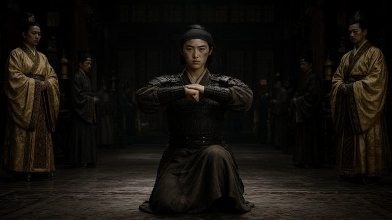
Shot card / S30
第一版生成出現現代舉手禮。修正不是加「古裝」，而是把動作寫死：single knee, cupped-hand salute, baoquan, no modern military salute。負面詞要擋的是動作，不只是服裝。
05 / Shot list
這一章把整部片攤平：每顆鏡頭的時間碼、畫面劇本、台詞、聲音、首幀提示詞、動態提示詞都在同一格。資料全部由 design/ 的設計文件解析而來，不是另外手寫一份。i2v 提示詞是 MiniMax-H3 格式，視覺描述與原生音軌（環境聲 + 音效）合為一段，一鍵複製就能貼進 H3；音樂與人聲留給後期。16:9 動態已生成：每鏡兩個 seed，片段可直接在頁面上播放、比較。
| 鏡 | 時間碼 | 場景 | 景別 | 運鏡 | 台詞 | 音效 | 影片 |
|---|---|---|---|---|---|---|---|
| 01 | 00:00.0–00:01.0 | S1 | 中特寫（俯） | 固（落甲瞬間機身微震） | — | 18kg 鐵甲砸濕泥、塵土落下 | A · seed 9237B · seed 47337 |
| 02 | 00:01.0–00:02.2 | S1 | 極特寫 | 推（極慢，5cm） | V1 | 筆尖摩擦唇肉、心跳 | A · seed 9374B · seed 47474 |
| 03 | 00:02.2–00:03.0 | S1 | 特寫 | 固 | V1 | — | A · seed 9511B · seed 47611 |
| 04 | 00:03.0–00:04.4 | S2 | 中景 | 固 | V1 | 織機卡死 | A · seed 9648B · seed 47748 |
| 05 | 00:04.4–00:05.6 | S2 | 俯拍特寫 | 固 | V2 | 軍帖拍桌、遠處馬蹄 | A · seed 9785B · seed 47885 |
| 06 | 00:05.6–00:06.8 | S2 | 中景（過肩） | 手（微晃） | V2 | — | A · seed 9922B · seed 48022 |
| 07 | 00:06.8–00:08.6 | S2 | 特寫 | 固 | V2 | — | A · seed 10059B · seed 48159 |
| 08 | 00:08.6–00:09.2 | S3 | 中景 | 手跟，向右甩 | — | 馬嘶 | A · seed 10196B · seed 48296 |
| 09 | 00:09.2–00:09.8 | S3 | 特寫 | 手 | — | 銀錠碰撞 | A · seed 10333B · seed 48433 |
| 10 | 00:09.8–00:10.4 | S3 | 大特寫 | 固 | — | 鞍扣卡榫 | A · seed 10470B · seed 48570 |
| 11 | 00:10.4–00:11.0 | S3 | 大特寫 | 固 | — | 鐵鏈拉緊 | A · seed 10607B · seed 48707 |
| 12 | 00:11.0–00:11.6 | S3 | 中景 | 固（高速感） | — | 鞭響 | A · seed 10744B · seed 48844 |
| 13 | 00:11.6–00:12.2 | S3 | 特寫 | 固 | — | 刀出鞘 | A · seed 10881B · seed 48981 |
| 14 | 00:12.2–00:12.8 | S3 | 中特寫 | 固 | — | — | A · seed 11018B · seed 49118 |
| 15 | 00:12.8–00:13.6 | S3 | 特寫 | 固（慢動作 0.4x） | — | 切髮、髮落火盆 | A · seed 11155B · seed 49255 |
| 16 | 00:13.6–00:15.0 | S3 | 中景 | 推（極慢） | — | 遠處號角 | A · seed 11292B · seed 49392 |
| 17 | 00:15.0–00:17.0 | S4 | 大遠景 | 橫（右→左，緩慢） | V3 | 黃河 | A · seed 11429B · seed 49529 |
| 18 | 00:17.0–00:19.0 | S4 | 中景 | 固（長焦壓縮） | V3 | 馬蹄踏水 | A · seed 11566B · seed 49666 |
| 19 | 00:19.0–00:21.0 | S5 | 遠景 | 固 | — | 黑山風暴 | A · seed 11703B · seed 49803 |
| 20 | 00:21.0–00:23.0 | S5 | 中景 | 手（隨馬晃動） | V4 | 馬鼻息 | A · seed 11840B · seed 49940 |
| 21 | 00:23.0–00:25.2 | S5 | 特寫 | 推（極慢） | V4 | 風聲抽空 | A · seed 11977B · seed 50077 |
| 22 | 00:25.2–00:26.7 | S6 | 大全景 | 固 | — | 兩軍碰撞 | A · seed 12114B · seed 50214 |
| 23 | 00:26.7–00:27.7 | S6 | 中景 | 手（劇烈晃動） | — | 兵器格擋 | A · seed 12251B · seed 50351 |
| 24 | 00:27.7–00:28.7 | S6 | 特寫 | 固（高速感） | — | 槍刺穿盾 | A · seed 12388B · seed 50488 |
| 25 | 00:28.7–00:29.7 | S6 | 中景 | 固（慢動作 0.25x） | — | 中箭倒地 | A · seed 12525B · seed 50625 |
| 26 | 00:29.7–00:31.2 | S6 | 中特寫 | 手（後退） | V5 | 粗重呼吸 | A · seed 12662B · seed 50762 |
| 27 | 00:31.2–00:33.7 | S6 | 大全景（俯） | 升（緩慢升高） | V5 | 雪原寂靜 | A · seed 12799B · seed 50899 |
| 28 | 00:33.7–00:34.8 | S6 | 特寫 | 固 | V5 | 斷刃插雪 | A · seed 12936B · seed 51036 |
| 29 | 00:34.8–00:37.3 | S7 | 大全景（對稱） | 推（極慢） | — | 編鐘 | A · seed 13073B · seed 51173 |
| 30 | 00:37.3–00:39.4 | S7 | 中景 | 固 | — | — | A · seed 13210B · seed 51310 |
| 31 | 00:39.4–00:41.2 | S7 | 中特寫 | 固 | V6 | 全場抽空 | A · seed 13347B · seed 51447 |
| 32 | 00:41.2–00:43.2 | S7 | 大全景 | 固 | V6 | 腳步回響 | A · seed 13484B · seed 51584 |
| 33 | 00:43.2–00:44.0 | S8 | 特寫 | 固 | — | 駝鈴 | A · seed 13621B · seed 51721 |
| 34 | 00:44.0–00:45.2 | S8 | 中景 | 跟（向前） | — | 院門 | A · seed 13758B · seed 51858 |
| 35 | 00:45.2–00:46.2 | S8 | 中景 | 手（微晃） | — | 家人呼喚 | A · seed 13895B · seed 51995 |
| 36 | 00:46.2–00:47.0 | S8 | 特寫 | 固 | — | 攥袖 | A · seed 14032B · seed 52132 |
| 37 | 00:47.0–00:47.8 | S8 | 中景 | 固 | — | 粉撲 | A · seed 14169B · seed 52269 |
| 38 | 00:47.8–00:48.8 | S8 | 特寫 | 固 | — | 磨刀 | A · seed 14306B · seed 52406 |
| 39 | 00:48.8–00:50.2 | S8 | 中景 | 跟（背後） | — | — | A · seed 14443B · seed 52543 |
| 40 | 00:50.2–00:52.0 | S8 | 中景 | 固 | — | 關門 | A · seed 14580B · seed 52680 |
| 41 | 00:52.0–00:53.4 | S9 | 特寫→中景 | 橫（左→右，緩慢） | — | 布料摩擦 | A · seed 14717B · seed 52817 |
| 42 | 00:53.4–00:57.3 | S9 | 中景→中遠景 | 固（後段極慢拉遠） | V7 | 開門、死寂、陶碗碎裂、低笑 | A · seed 14854B · seed 52954 |
| 43 | 00:57.3–00:58.5 | S10 | 微距 | 固（慢動作 0.6x） | V8 | 草葉 | A · seed 14991B · seed 53091 |
| 44 | 00:58.5–00:59.4 | S10 | 微距 | 固 | V8 | — | A · seed 15128B · seed 53228 |
| 45 | 00:59.4–01:00.0 | S10 | 特寫 | 固 | V8 | 收尾鼓 | A · seed 15265B · seed 53365 |
S1 軍營帳內
16:9 已生成 ×2
同一條提示詞換 seed 重跑一次，取表現較好的一版；原生音軌已含在片段裡，9:16 版本尚未生成。
濕泥地上，染血胸甲砸落，塵土與稻草飛起；甲片縫隙噴出灰
分鏡表聲音 重甲悶響＋塵土沙沙；低頻心跳 40Hz 入
此鏡無台詞，只有環境音與 Foley。
帳內低頻悶響、風吹帆布、稻草沉積inside a dim canvas tent, low muffled air, wind brushing the canvas, dry straw settling
時間碼為全片規劃值（允許 ±0.3 秒聲畫錯位），歸屬以本鏡為準。
00:00–00:15完全無音樂，只有心跳與 Foley起＋承 · 無拍 · pp
環境聲與音效由 H3 原生生成；音樂與人聲一律後期加（提示詞寫 no music, no dialogue, no singing）。
Low angle close shot of a blood-stained black lamellar breastplate crashing onto wet mud
inside a dim tent, dust and straw flying, single warm oil lamp from the left,
deep shadows, matte oxidized iron, 35mm, 9:16備註 切點在觸地前 2 格；不要讓模型加火花。
battered black lamellar armor crashes into wet mud, dust bursts from the seams, small rebound, locked-off camera, only the object moves, 24fps, single warm oil-lamp light, no camera motion, no slow motion. Audio: inside a dim canvas tent, low muffled air, wind brushing the canvas, dry straw settling, a heavy 18kg lamellar armor slamming into wet mud, wet soil squelch, a brief puff of dust settling, a 40Hz heartbeat fading in, no music, no dialogue, no singing.提示詞 視覺與原生音軌合為一段，直接貼進 H3 的 image-to-video 欄位（與 design/02 第二十一節逐字一致）。
同一提示詞 · 兩個 seed
選片段 同一提示詞換 seed 抽兩次：動作成立、音軌乾淨的那一版進剪輯。檔名、seed 與 prompt_id 記在 assets/video/manifest_i2v.jsonl。
S1 軍營帳內
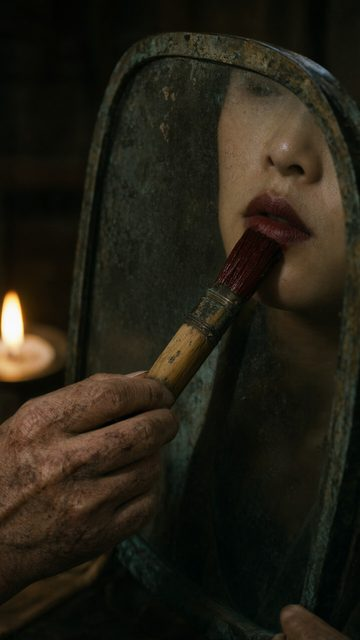
16:9 已生成 ×2
同一條提示詞換 seed 重跑一次，取表現較好的一版；原生音軌已含在片段裡，9:16 版本尚未生成。
銅鏡中只見半張臉；長繭的手拈竹筆，筆尖壓下唇肉，抹出硃砂紅；鏡面氧化斑清晰
分鏡表聲音 筆尖摩擦唇肉（Foley 放大）；心跳停止
誰說，／踩著萬具枯骨／走回來的……∥不能是個女人？
冷、慢、像在陳述一個事實；「不能」不要用力，要輕
帳內低頻悶響、風吹帆布、稻草沉積inside a dim canvas tent, low muffled air, wind brushing the canvas, dry straw settling
時間碼為全片規劃值（允許 ±0.3 秒聲畫錯位），歸屬以本鏡為準。
00:00–00:15完全無音樂，只有心跳與 Foley起＋承 · 無拍 · pp
環境聲與音效由 H3 原生生成；音樂與人聲一律後期加（提示詞寫 no music, no dialogue, no singing）。
Extreme close-up of a tarnished bronze mirror reflecting only half a woman's face,
a calloused scarred hand holding a worn bamboo brush applying dark red rouge to her lips,
warm candlelight, oxidation spots, shallow depth of field, 9:16備註 焦點在唇；眼睛要虛。
a calloused hand presses a worn bamboo brush onto a lower lip, drawing one short vermilion stroke, very slow push in, tarnished bronze mirror, 24fps, warm dim light, no extra fingers, no face distortion. Audio: inside a dim canvas tent, low muffled air, wind brushing the canvas, dry straw settling, the faint friction of a brush on skin, the slow 40Hz heartbeat stopping, canvas wind taking over, no music, no dialogue, no singing.提示詞 視覺與原生音軌合為一段，直接貼進 H3 的 image-to-video 欄位（與 design/02 第二十一節逐字一致）。
同一提示詞 · 兩個 seed
選片段 同一提示詞換 seed 抽兩次：動作成立、音軌乾淨的那一版進剪輯。檔名、seed 與 prompt_id 記在 assets/video/manifest_i2v.jsonl。
S1 軍營帳內
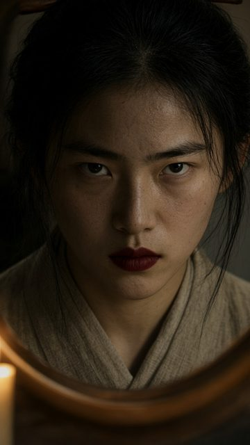
16:9 已生成 ×2
同一條提示詞換 seed 重跑一次，取表現較好的一版；原生音軌已含在片段裡，9:16 版本尚未生成。
鏡中人抬眸，直視鏡頭；眼神由下垂轉為定點
分鏡表聲音 VO（冷靜低沉女聲，00:01.0–00:04.35，跨剪輯）：「誰說，踩著萬具枯骨走回來的……不能是個女人？」
誰說，／踩著萬具枯骨／走回來的……∥不能是個女人？
冷、慢、像在陳述一個事實；「不能」不要用力，要輕
帳內低頻悶響、風吹帆布、稻草沉積inside a dim canvas tent, low muffled air, wind brushing the canvas, dry straw settling
00:00–00:15完全無音樂，只有心跳與 Foley起＋承 · 無拍 · pp
環境聲與音效由 H3 原生生成；音樂與人聲一律後期加（提示詞寫 no music, no dialogue, no singing）。
Close-up of a woman's eyes lifting toward camera, half her face in shadow,
dark red lips, cold sharp gaze, bronze mirror edge in foreground, warm rim light, 9:16備註 不要讓她「瞇眼放電」，要像確認獵物。
a woman's eyes lift slowly from downcast to locked on the lens and stop, locked-off camera, faint warm flicker across the face, 24fps, no blinking, no head movement. Audio: inside a dim canvas tent, low muffled air, wind brushing the canvas, dry straw settling, sudden near silence, only canvas wind and the last heartbeat tail, no music, no dialogue, no singing.提示詞 視覺與原生音軌合為一段，直接貼進 H3 的 image-to-video 欄位（與 design/02 第二十一節逐字一致）。
同一提示詞 · 兩個 seed
選片段 同一提示詞換 seed 抽兩次：動作成立、音軌乾淨的那一版進剪輯。檔名、seed 與 prompt_id 記在 assets/video/manifest_i2v.jsonl。
S2 木蘭家·織房
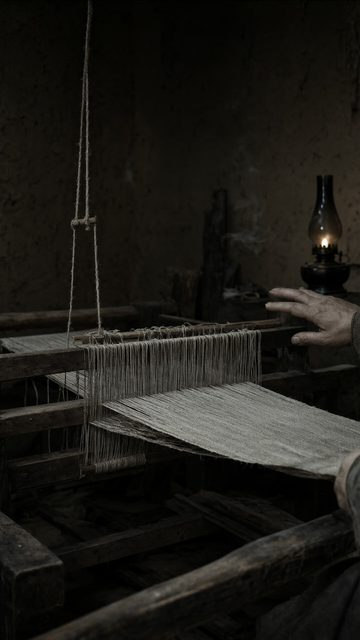
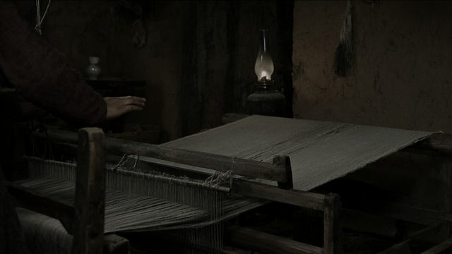
16:9 已生成 ×2
同一條提示詞換 seed 重跑一次，取表現較好的一版；原生音軌已含在片段裡，9:16 版本尚未生成。
梭子卡在經線間；半成品素布被扯歪；木蘭的手停在空中
分鏡表聲音 織機「唧唧」規律聲 → 卡死鈍音 → 死寂
誰說，／踩著萬具枯骨／走回來的……∥不能是個女人？
冷、慢、像在陳述一個事實；「不能」不要用力，要輕
室內安靜、灶火細響、屋外模糊人聲inside a small earthen room, quiet room tone, faint hearth crackle, muffled village life outside
時間碼為全片規劃值（允許 ±0.3 秒聲畫錯位），歸屬以本鏡為準。
00:00–00:15完全無音樂，只有心跳與 Foley起＋承 · 無拍 · pp
環境聲與音效由 H3 原生生成；音樂與人聲一律後期加（提示詞寫 no music, no dialogue, no singing）。
Medium shot of a wooden loom jamming, half-woven undyed cloth pulled crooked,
a woman's hand frozen mid-air, dim oil lamp, smoke-stained mud walls,
near-monochrome, 5th century China, 9:16備註 STYLE-B。
a wooden loom shuttle jams between warp threads and stops, the half-woven cloth twisting, locked-off camera, old timber and hemp, 24fps, single oil lamp, no camera motion. Audio: inside a small earthen room, quiet room tone, faint hearth crackle, muffled village life outside, a wooden loom clattering evenly, then jamming with a dull bite, a snapped thread, silence, no music, no dialogue, no singing.提示詞 視覺與原生音軌合為一段，直接貼進 H3 的 image-to-video 欄位（與 design/02 第二十一節逐字一致）。
同一提示詞 · 兩個 seed
選片段 同一提示詞換 seed 抽兩次：動作成立、音軌乾淨的那一版進剪輯。檔名、seed 與 prompt_id 記在 assets/video/manifest_i2v.jsonl。
S2 木蘭家·織房
16:9 已生成 ×2
同一條提示詞換 seed 重跑一次，取表現較好的一版；原生音軌已含在片段裡，9:16 版本尚未生成。
十二卷軍帖「啪」拍桌；三卷展開，硃印正對鏡頭；塵埃震起
分鏡表聲音 拍桌悶響＋紙張回彈；遠處馬蹄漸近
軍帖十二卷，／卷卷有爺名。∥阿爺無長子，／木蘭無長兄。
壓抑、每個字都咬清楚；「爺」字帶一點鼻音
室內安靜、灶火細響、屋外模糊人聲inside a small earthen room, quiet room tone, faint hearth crackle, muffled village life outside
時間碼為全片規劃值（允許 ±0.3 秒聲畫錯位），歸屬以本鏡為準。
00:00–00:15完全無音樂，只有心跳與 Foley起＋承 · 無拍 · pp
環境聲與音效由 H3 原生生成；音樂與人聲一律後期加（提示詞寫 no music, no dialogue, no singing）。
Overhead close-up of twelve rolled conscription scrolls slamming onto a scarred wooden table,
three unrolled showing vertical calligraphy and a bright red official seal,
dust rising, only the red seal saturated, near-monochrome, 9:16備註 12 卷、3 卷展開，數字不能錯。
twelve rolled hemp scrolls slam down onto a rough table, dust rising, the scrolls rebound slightly, overhead locked-off camera, 24fps, dim oil lamp, no hands, no text. Audio: inside a small earthen room, quiet room tone, faint hearth crackle, muffled village life outside, twelve heavy paper rolls slapped onto a wooden table, paper springing back, distant hooves approaching, no music, no dialogue, no singing.提示詞 視覺與原生音軌合為一段，直接貼進 H3 的 image-to-video 欄位（與 design/02 第二十一節逐字一致）。
同一提示詞 · 兩個 seed
選片段 同一提示詞換 seed 抽兩次：動作成立、音軌乾淨的那一版進剪輯。檔名、seed 與 prompt_id 記在 assets/video/manifest_i2v.jsonl。
S2 木蘭家·織房
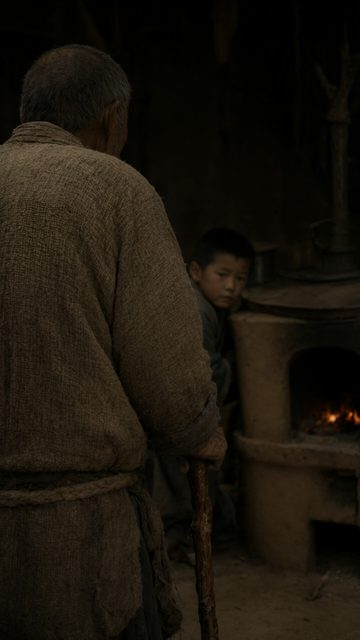
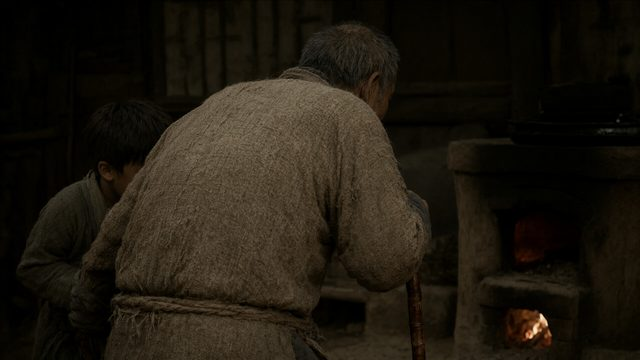
16:9 已生成 ×2
同一條提示詞換 seed 重跑一次，取表現較好的一版；原生音軌已含在片段裡，9:16 版本尚未生成。
父親佝僂背影擋住半個畫面，拐杖顫抖；幼弟縮在灶旁，只露眼睛
分鏡表聲音 父親濁重呼吸；灶火噼啪；官差喝聲（聽不清內容）
軍帖十二卷，／卷卷有爺名。∥阿爺無長子，／木蘭無長兄。
壓抑、每個字都咬清楚；「爺」字帶一點鼻音
室內安靜、灶火細響、屋外模糊人聲inside a small earthen room, quiet room tone, faint hearth crackle, muffled village life outside
00:00–00:15完全無音樂，只有心跳與 Foley起＋承 · 無拍 · pp
環境聲與音效由 H3 原生生成；音樂與人聲一律後期加（提示詞寫 no music, no dialogue, no singing）。
Over-the-shoulder medium shot of a hunched old father's back blocking half the frame,
trembling wooden cane, a young boy hiding beside a clay stove, faint firelight,
desaturated, 5th century China, 9:16備註 父親不轉身。
an old man seen from behind trembles while gripping a wooden cane, a boy's eyes glint in the dark, handheld micro-shake, 24fps, firelight, no face visible. Audio: inside a small earthen room, quiet room tone, faint hearth crackle, muffled village life outside, an old man's heavy breath, a hearth crackle, muffled shouting outside, wordless and unintelligible, no music, no dialogue, no singing.提示詞 視覺與原生音軌合為一段，直接貼進 H3 的 image-to-video 欄位（與 design/02 第二十一節逐字一致）。
同一提示詞 · 兩個 seed
選片段 同一提示詞換 seed 抽兩次：動作成立、音軌乾淨的那一版進剪輯。檔名、seed 與 prompt_id 記在 assets/video/manifest_i2v.jsonl。
S2 木蘭家·織房
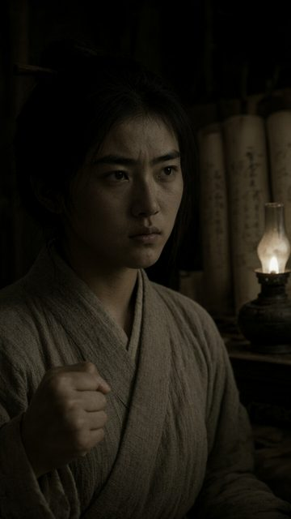
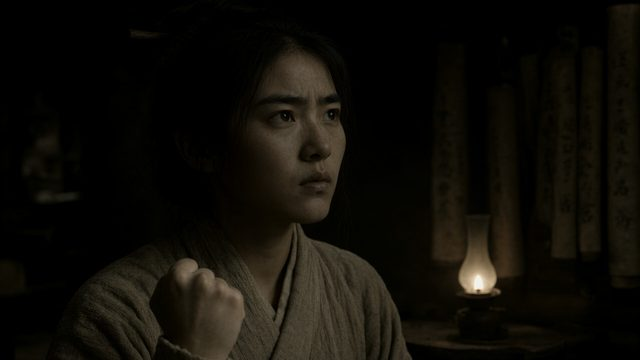
16:9 已生成 ×2
同一條提示詞換 seed 重跑一次，取表現較好的一版；原生音軌已含在片段裡，9:16 版本尚未生成。
暗影中木蘭握緊拳頭，指節發白；抬眼看向軍帖
分鏡表聲音 VO（00:04.6–00:08.6）：「軍帖十二卷，卷卷有爺名。阿爺無長子，木蘭無長兄。」
軍帖十二卷，／卷卷有爺名。∥阿爺無長子，／木蘭無長兄。
壓抑、每個字都咬清楚；「爺」字帶一點鼻音
室內安靜、灶火細響、屋外模糊人聲inside a small earthen room, quiet room tone, faint hearth crackle, muffled village life outside
00:00–00:15完全無音樂，只有心跳與 Foley起＋承 · 無拍 · pp
環境聲與音效由 H3 原生生成；音樂與人聲一律後期加（提示詞寫 no music, no dialogue, no singing）。
Close-up of a young woman in shadow, fist clenched white-knuckled,
eyes lifting toward off-screen scrolls, three-quarter side, single oil lamp,
near-monochrome, 9:16備註 不准掉淚。
a hand in deep shadow slowly clenches, knuckles whitening, then her eyes lift toward a red seal, locked-off camera, 85mm, 24fps, dim warm light, no tears, no blinking. Audio: inside a small earthen room, quiet room tone, faint hearth crackle, muffled village life outside, a wooden cane trembling against the floor, quiet room tone, a distant hoofbeat fading, no music, no dialogue, no singing.提示詞 視覺與原生音軌合為一段，直接貼進 H3 的 image-to-video 欄位（與 design/02 第二十一節逐字一致）。
同一提示詞 · 兩個 seed
選片段 同一提示詞換 seed 抽兩次：動作成立、音軌乾淨的那一版進剪輯。檔名、seed 與 prompt_id 記在 assets/video/manifest_i2v.jsonl。
S3 邊城四市
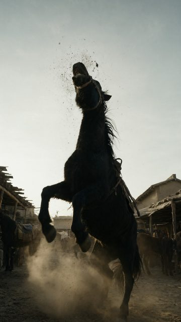
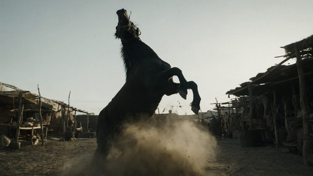
16:9 已生成 ×2
同一條提示詞換 seed 重跑一次，取表現較好的一版；原生音軌已含在片段裡，9:16 版本尚未生成。
東市：黑馬昂首長嘶，前蹄離地；塵土撲向鏡頭
分鏡表聲音 馬嘶（爆）＋蹄鐵刮地
此鏡無台詞，只有環境音與 Foley。
市集人聲、馬匹、木器與金屬、風open-air border market, crowd murmur, horses, wooden clatter, wind through awnings
時間碼為全片規劃值（允許 ±0.3 秒聲畫錯位），歸屬以本鏡為準。
00:00–00:15完全無音樂，只有心跳與 Foley起＋承 · 無拍 · pp
環境聲與音效由 H3 原生生成；音樂與人聲一律後期加（提示詞寫 no music, no dialogue, no singing）。
Low angle medium shot in a dusty border market at dawn, a black horse rearing and neighing,
dust bursting toward camera, strong backlight, 24mm, motion blur, 9:16備註 剪在馬頭最高點。
a black warhorse rears up, front hooves lifting off the ground, dust bursting toward the lens, handheld whip pan right, low angle 24mm, 24fps, morning market light. Audio: open-air border market, crowd murmur, horses, wooden clatter, wind through awnings, a horse bursting into a snort, a hoof scraping on packed dirt, harness leather creaking, no music, no dialogue, no singing.提示詞 視覺與原生音軌合為一段，直接貼進 H3 的 image-to-video 欄位（與 design/02 第二十一節逐字一致）。
同一提示詞 · 兩個 seed
選片段 同一提示詞換 seed 抽兩次：動作成立、音軌乾淨的那一版進剪輯。檔名、seed 與 prompt_id 記在 assets/video/manifest_i2v.jsonl。
S3 邊城四市
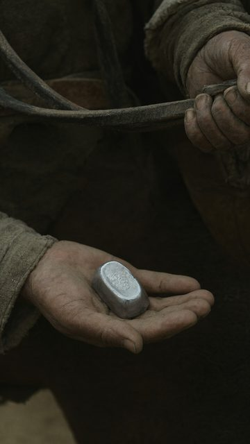
16:9 已生成 ×2
同一條提示詞換 seed 重跑一次，取表現較好的一版；原生音軌已含在片段裡，9:16 版本尚未生成。
銀錠落入馬販掌心；韁繩交到木蘭手中
分鏡表聲音 銀錠碰撞＋皮革摩擦
此鏡無台詞，只有環境音與 Foley。
市集人聲、馬匹、木器與金屬、風open-air border market, crowd murmur, horses, wooden clatter, wind through awnings
時間碼為全片規劃值（允許 ±0.3 秒聲畫錯位），歸屬以本鏡為準。
00:00–00:15完全無音樂，只有心跳與 Foley起＋承 · 無拍 · pp
環境聲與音效由 H3 原生生成；音樂與人聲一律後期加（提示詞寫 no music, no dialogue, no singing）。
Close-up of a silver ingot dropping into a horse trader's palm,
reins passing into a woman's calloused hand, dusty morning light, 9:16備註 只拍手。
a silver ingot drops into an open palm and settles, reins passing into the other hand, handheld close-up, 24fps, cold morning light, no extra fingers. Audio: open-air border market, crowd murmur, horses, wooden clatter, wind through awnings, a silver ingot clinking into an open palm, leather creaking close, no music, no dialogue, no singing.提示詞 視覺與原生音軌合為一段，直接貼進 H3 的 image-to-video 欄位（與 design/02 第二十一節逐字一致）。
同一提示詞 · 兩個 seed
選片段 同一提示詞換 seed 抽兩次：動作成立、音軌乾淨的那一版進剪輯。檔名、seed 與 prompt_id 記在 assets/video/manifest_i2v.jsonl。
S3 邊城四市
16:9 已生成 ×2
同一條提示詞換 seed 重跑一次，取表現較好的一版；原生音軌已含在片段裡，9:16 版本尚未生成。
西市：雙手壓下鞍扣，卡榫「喀」到位，金屬微顫
分鏡表聲音 卡榫金屬聲（清脆）＋皮革拉伸
此鏡無台詞，只有環境音與 Foley。
市集人聲、馬匹、木器與金屬、風open-air border market, crowd murmur, horses, wooden clatter, wind through awnings
時間碼為全片規劃值（允許 ±0.3 秒聲畫錯位），歸屬以本鏡為準。
00:00–00:15完全無音樂，只有心跳與 Foley起＋承 · 無拍 · pp
環境聲與音效由 H3 原生生成；音樂與人聲一律後期加（提示詞寫 no music, no dialogue, no singing）。
Macro close-up of hands pressing a leather saddle buckle until it clicks,
brass fittings, dust in backlight, shallow depth of field, 9:16備註 卡榫到位那一格剪。
two hands press a saddle buckle down until the pin clicks into place, the metal trembling slightly, locked-off macro, rim light, 24fps, no extra fingers. Audio: open-air border market, crowd murmur, horses, wooden clatter, wind through awnings, a saddle buckle pin clicking into place, stretched leather, no music, no dialogue, no singing.提示詞 視覺與原生音軌合為一段，直接貼進 H3 的 image-to-video 欄位（與 design/02 第二十一節逐字一致）。
同一提示詞 · 兩個 seed
選片段 同一提示詞換 seed 抽兩次：動作成立、音軌乾淨的那一版進剪輯。檔名、seed 與 prompt_id 記在 assets/video/manifest_i2v.jsonl。
S3 邊城四市
16:9 已生成 ×2
同一條提示詞換 seed 重跑一次，取表現較好的一版；原生音軌已含在片段裡，9:16 版本尚未生成。
南市：鐵鏈拉緊轡頭，鍊節逐一繃直
分鏡表聲音 鐵鏈「嘩啦」收緊
此鏡無台詞，只有環境音與 Foley。
市集人聲、馬匹、木器與金屬、風open-air border market, crowd murmur, horses, wooden clatter, wind through awnings
時間碼為全片規劃值（允許 ±0.3 秒聲畫錯位），歸屬以本鏡為準。
00:00–00:15完全無音樂，只有心跳與 Foley起＋承 · 無拍 · pp
環境聲與音效由 H3 原生生成；音樂與人聲一律後期加（提示詞寫 no music, no dialogue, no singing）。
Macro close-up of an iron chain bridle pulled taut, links straightening one by one,
side backlight, dust, 9:16備註 與 #10 同構圖邏輯。
an iron chain tightens link by link, each ring snapping taut in sequence, locked-off macro, backlit, 24fps, no morphing, no camera motion. Audio: open-air border market, crowd murmur, horses, wooden clatter, wind through awnings, an iron chain clinking taut link by link, no music, no dialogue, no singing.提示詞 視覺與原生音軌合為一段，直接貼進 H3 的 image-to-video 欄位（與 design/02 第二十一節逐字一致）。
同一提示詞 · 兩個 seed
選片段 同一提示詞換 seed 抽兩次：動作成立、音軌乾淨的那一版進剪輯。檔名、seed 與 prompt_id 記在 assets/video/manifest_i2v.jsonl。
S3 邊城四市
16:9 已生成 ×2
同一條提示詞換 seed 重跑一次，取表現較好的一版；原生音軌已含在片段裡，9:16 版本尚未生成。
北市：長鞭在空中炸開，鞭梢突破畫面右上角
分鏡表聲音 鞭響（尖、爆、短）
此鏡無台詞，只有環境音與 Foley。
市集人聲、馬匹、木器與金屬、風open-air border market, crowd murmur, horses, wooden clatter, wind through awnings
時間碼為全片規劃值（允許 ±0.3 秒聲畫錯位），歸屬以本鏡為準。
00:00–00:15完全無音樂，只有心跳與 Foley起＋承 · 無拍 · pp
環境聲與音效由 H3 原生生成；音樂與人聲一律後期加（提示詞寫 no music, no dialogue, no singing）。
Medium shot of a long whip cracking in mid-air, tip breaking the top right of frame,
dust, frozen motion, backlit, 9:16備註 高速感（提示詞 at high speed，不變速）。
a long whip cracks open in mid-air, the tip breaking past the frame edge, at high speed, dust trailing the whip, locked-off camera, 24fps, no camera motion. Audio: open-air border market, crowd murmur, horses, wooden clatter, wind through awnings, a whip cracking in the air, sharp and short with a brief report, no music, no dialogue, no singing.提示詞 視覺與原生音軌合為一段，直接貼進 H3 的 image-to-video 欄位（與 design/02 第二十一節逐字一致）。
同一提示詞 · 兩個 seed
選片段 同一提示詞換 seed 抽兩次：動作成立、音軌乾淨的那一版進剪輯。檔名、seed 與 prompt_id 記在 assets/video/manifest_i2v.jsonl。
S3 邊城四市
16:9 已生成 ×2
同一條提示詞換 seed 重跑一次，取表現較好的一版；原生音軌已含在片段裡，9:16 版本尚未生成。
短刀出鞘，刃口映出一線天光；崩口清晰
分鏡表聲音 出鞘金屬摩擦（長）
此鏡無台詞，只有環境音與 Foley。
市集人聲、馬匹、木器與金屬、風open-air border market, crowd murmur, horses, wooden clatter, wind through awnings
時間碼為全片規劃值（允許 ±0.3 秒聲畫錯位），歸屬以本鏡為準。
00:00–00:15完全無音樂，只有心跳與 Foley起＋承 · 無拍 · pp
環境聲與音效由 H3 原生生成；音樂與人聲一律後期加（提示詞寫 no music, no dialogue, no singing）。
Close-up of a ring-pommel short sword drawn from a worn leather scabbard,
blade edge catching a line of dawn light, two chips visible, 9:16備註 反光要掃過鏡頭。
a short ring-pommel sword slides out of its scabbard, the blade edge catching a line of daylight, locked-off close-up, 24fps, cold daylight, no curved blade, no ornate guard. Audio: open-air border market, crowd murmur, horses, wooden clatter, wind through awnings, a sword sliding from its scabbard, long metal scrape on leather, no music, no dialogue, no singing.提示詞 視覺與原生音軌合為一段，直接貼進 H3 的 image-to-video 欄位（與 design/02 第二十一節逐字一致）。
同一提示詞 · 兩個 seed
選片段 同一提示詞換 seed 抽兩次：動作成立、音軌乾淨的那一版進剪輯。檔名、seed 與 prompt_id 記在 assets/video/manifest_i2v.jsonl。
S3 邊城四市
16:9 已生成 ×2
同一條提示詞換 seed 重跑一次，取表現較好的一版；原生音軌已含在片段裡，9:16 版本尚未生成。
木蘭一手攥住齊腰長髮，另一手持刀；眼神看前方
分鏡表聲音 吸氣一口（清晰）
此鏡無台詞，只有環境音與 Foley。
市集人聲、馬匹、木器與金屬、風open-air border market, crowd murmur, horses, wooden clatter, wind through awnings
00:00–00:15完全無音樂，只有心跳與 Foley起＋承 · 無拍 · pp
環境聲與音效由 H3 原生生成；音樂與人聲一律後期加（提示詞寫 no music, no dialogue, no singing）。
Medium close-up of a woman gripping her waist-length black hair with one hand,
short sword in the other, eyes forward, dusty backlight, 9:16備註 不閉眼。
a woman grips her long hair at the waist with one hand, the hair taut under her fist, locked-off medium close-up, 24fps, backlight, no face distortion. Audio: open-air border market, crowd murmur, horses, wooden clatter, wind through awnings, one sharp inhale of breath, no music, no dialogue, no singing.提示詞 視覺與原生音軌合為一段，直接貼進 H3 的 image-to-video 欄位（與 design/02 第二十一節逐字一致）。
同一提示詞 · 兩個 seed
選片段 同一提示詞換 seed 抽兩次：動作成立、音軌乾淨的那一版進剪輯。檔名、seed 與 prompt_id 記在 assets/video/manifest_i2v.jsonl。
S3 邊城四市
16:9 已生成 ×2
同一條提示詞換 seed 重跑一次，取表現較好的一版；原生音軌已含在片段裡，9:16 版本尚未生成。
刀落，髮束整齊斷開；青絲散開、墜向火盆
分鏡表聲音 刀刃切髮「錚」＋髮絲摩擦
此鏡無台詞，只有環境音與 Foley。
市集人聲、馬匹、木器與金屬、風open-air border market, crowd murmur, horses, wooden clatter, wind through awnings
時間碼為全片規劃值（允許 ±0.3 秒聲畫錯位），歸屬以本鏡為準。
00:00–00:15完全無音樂，只有心跳與 Foley起＋承 · 無拍 · pp
環境聲與音效由 H3 原生生成；音樂與人聲一律後期加（提示詞寫 no music, no dialogue, no singing）。
Low angle close-up of a blade severing a bundle of black hair,
strands suspended and falling toward a glowing brazier, embers, slow motion, 9:16備註 只慢 1 秒。
a short sword cuts through a bound ponytail, the hair separates cleanly and falls apart, in slow motion, sparks rising from a brazier, locked-off camera, 24fps, no hair colour shift. Audio: open-air border market, crowd murmur, horses, wooden clatter, wind through awnings, a blade cutting hair fibres with a high ringing note, hair strands rubbing, a rope snapping, no music, no dialogue, no singing.提示詞 視覺與原生音軌合為一段，直接貼進 H3 的 image-to-video 欄位（與 design/02 第二十一節逐字一致）。
同一提示詞 · 兩個 seed
選片段 同一提示詞換 seed 抽兩次：動作成立、音軌乾淨的那一版進剪輯。檔名、seed 與 prompt_id 記在 assets/video/manifest_i2v.jsonl。
S3 邊城四市
16:9 已生成 ×2
同一條提示詞換 seed 重跑一次，取表現較好的一版；原生音軌已含在片段裡，9:16 版本尚未生成。
短髮的木蘭側臉，火光從背後照亮髮際與耳廓；她看向遠方
分鏡表聲音 火盆噼啪；遠處號角（第一次出現）
此鏡無台詞，只有環境音與 Foley。
市集人聲、馬匹、木器與金屬、風open-air border market, crowd murmur, horses, wooden clatter, wind through awnings
時間碼為全片規劃值（允許 ±0.3 秒聲畫錯位），歸屬以本鏡為準。
00:00–00:15完全無音樂，只有心跳與 Foley起＋承 · 無拍 · pp
環境聲與音效由 H3 原生生成；音樂與人聲一律後期加（提示詞寫 no music, no dialogue, no singing）。
Medium shot of a short-haired woman in profile, firelight rimming her hairline and ear,
looking into the distance, silhouette against the brazier, 9:16備註 不給全臉。
the silhouette of a short-haired warrior stands still before a fire, warm embers outlining her profile, hair edges lifting slightly, very slow push in, 24fps, strong backlight, no face detail. Audio: open-air border market, crowd murmur, horses, wooden clatter, wind through awnings, a brazier crackling, embers hissing, a distant low horn across the valley, no music, no dialogue, no singing.提示詞 視覺與原生音軌合為一段，直接貼進 H3 的 image-to-video 欄位（與 design/02 第二十一節逐字一致）。
同一提示詞 · 兩個 seed
選片段 同一提示詞換 seed 抽兩次：動作成立、音軌乾淨的那一版進剪輯。檔名、seed 與 prompt_id 記在 assets/video/manifest_i2v.jsonl。
S4 黃河峽谷
16:9 已生成 ×2
同一條提示詞換 seed 重跑一次，取表現較好的一版；原生音軌已含在片段裡，9:16 版本尚未生成。
黃河峽谷，濁黃河水；一騎沿崖邊窄道疾馳，人只有畫面 1/20
分鏡表聲音 黃河低頻水聲鋪滿音場；馬蹄遙遠
萬里赴戎機，／關山度若飛。
開闊、氣息長；像風吹過
寬闊河谷、風、水聲、遠方鷹鳴wide river valley, strong wind, river water over gravel, distant eagle cry, huge open air
時間碼為全片規劃值（允許 ±0.3 秒聲畫錯位），歸屬以本鏡為準。
00:15–00:25.2drone 單音進入，無旋律黃河·黑山 · 50 · p
00:15.0–00:18.6低頻弦樂 drone（單音 D）、極遠的鑼把 S3 的機械節奏「洗掉」，讓觀眾重新呼吸 · 不要有節奏，不要有旋律，只要「空間變大」
環境聲與音效由 H3 原生生成；音樂與人聲一律後期加（提示詞寫 no music, no dialogue, no singing）。
Epic wide aerial shot of the Yellow River canyon, muddy turbulent water, loess cliffs,
a single tiny rider on a narrow cliff path, hazy dusty morning, desaturated ochre,
figure is 1/20 of frame, 9:16備註 留白 80%。
a lone rider gallops along a narrow cliff path above a muddy yellow river, aerial tracking right to left, vast canyon, 24fps, overcast dawn, no rider detail. Audio: wide river valley, strong wind, river water over gravel, distant eagle cry, huge open air, low river water and mud churning over gravel, distant hooves on a cliff path, strong wind, no music, no dialogue, no singing.提示詞 視覺與原生音軌合為一段，直接貼進 H3 的 image-to-video 欄位（與 design/02 第二十一節逐字一致）。
同一提示詞 · 兩個 seed
選片段 同一提示詞換 seed 抽兩次：動作成立、音軌乾淨的那一版進剪輯。檔名、seed 與 prompt_id 記在 assets/video/manifest_i2v.jsonl。
S4 黃河峽谷
16:9 已生成 ×2
同一條提示詞換 seed 重跑一次，取表現較好的一版；原生音軌已含在片段裡，9:16 版本尚未生成。
馬蹄踏過水窪，泥水濺向鏡頭；背景河水被壓成平面
分鏡表聲音 水花＋馬蹄＋馬的喘息
萬里赴戎機，／關山度若飛。
開闊、氣息長；像風吹過
寬闊河谷、風、水聲、遠方鷹鳴wide river valley, strong wind, river water over gravel, distant eagle cry, huge open air
時間碼為全片規劃值（允許 ±0.3 秒聲畫錯位），歸屬以本鏡為準。
00:15–00:25.2drone 單音進入，無旋律黃河·黑山 · 50 · p
00:15.0–00:18.6低頻弦樂 drone（單音 D）、極遠的鑼把 S3 的機械節奏「洗掉」，讓觀眾重新呼吸 · 不要有節奏，不要有旋律，只要「空間變大」
00:18.6–00:25.2drone 升高半音、塤的氣聲、風聲取樣孤獨的極值 · 塤只吹一個長音，不要旋律
環境聲與音效由 H3 原生生成；音樂與人聲一律後期加（提示詞寫 no music, no dialogue, no singing）。
Medium shot at water level, horse hooves splashing through a muddy puddle toward camera,
river compressed flat by telephoto, backlit spray, 135mm, 9:16備註 與 S3 快切形成落差。
horse hooves splash through a mud puddle, water spraying toward the lens, long lens compression, locked-off camera, 24fps, grey daylight, no slow motion. Audio: wide river valley, strong wind, river water over gravel, distant eagle cry, huge open air, water splashing close to camera, a horse's breath, hooves in mud, wind, no music, no dialogue, no singing.提示詞 視覺與原生音軌合為一段，直接貼進 H3 的 image-to-video 欄位（與 design/02 第二十一節逐字一致）。
同一提示詞 · 兩個 seed
選片段 同一提示詞換 seed 抽兩次：動作成立、音軌乾淨的那一版進剪輯。檔名、seed 與 prompt_id 記在 assets/video/manifest_i2v.jsonl。
S5 黑山風暴
16:9 已生成 ×2
同一條提示詞換 seed 重跑一次，取表現較好的一版；原生音軌已含在片段裡，9:16 版本尚未生成。
黑山雪暴，一個小黑點停在懸崖邊；雪粒橫掃畫面
分鏡表聲音 風聲低頻＋高頻嘯叫
此鏡無台詞，只有環境音與 Foley。
高山鞍部、低頻＋高頻兩層風、雪粒high mountain pass in a blizzard, a low moan of wind under a high whistle, driven snow, hollow space
時間碼為全片規劃值（允許 ±0.3 秒聲畫錯位），歸屬以本鏡為準。
00:15–00:25.2drone 單音進入，無旋律黃河·黑山 · 50 · p
00:18.6–00:25.2drone 升高半音、塤的氣聲、風聲取樣孤獨的極值 · 塤只吹一個長音，不要旋律
環境聲與音效由 H3 原生生成；音樂與人聲一律後期加（提示詞寫 no music, no dialogue, no singing）。
Wide shot of a black rocky mountain in a blizzard mixed with sand,
a tiny lone rider at a cliff edge, cold blue moonlight through clouds,
snow streaks in the beam, 9:16備註 停留 2 秒。
a lone dark figure stands motionless on a cliff edge in a blizzard, snow driving sideways across the frame, locked-off wide shot, 24fps, muted cold grey, no vertical snow. Audio: high mountain pass in a blizzard, a low moan of wind under a high whistle, driven snow, hollow space, two layers of wind, a low moan and a high whistle, driven snow, no music, no dialogue, no singing.提示詞 視覺與原生音軌合為一段，直接貼進 H3 的 image-to-video 欄位（與 design/02 第二十一節逐字一致）。
同一提示詞 · 兩個 seed
選片段 同一提示詞換 seed 抽兩次：動作成立、音軌乾淨的那一版進剪輯。檔名、seed 與 prompt_id 記在 assets/video/manifest_i2v.jsonl。
S5 黑山風暴
16:9 已生成 ×2
同一條提示詞換 seed 重跑一次，取表現較好的一版；原生音軌已含在片段裡，9:16 版本尚未生成。
馬被風逼得側身；木蘭拉韁，破披風被扯直；面巾獵獵
分鏡表聲音 馬鼻息＋皮革拉扯＋風；VO（00:16.2–00:18.8）：「萬里赴戎機，關山度若飛。」
不聞爺娘喚女聲，∥唯聞胡騎鳴啾啾。
孤獨、聲音變薄；「啾啾」輕到幾乎聽不見
高山鞍部、低頻＋高頻兩層風、雪粒high mountain pass in a blizzard, a low moan of wind under a high whistle, driven snow, hollow space
時間碼為全片規劃值（允許 ±0.3 秒聲畫錯位），歸屬以本鏡為準。
00:15–00:25.2drone 單音進入，無旋律黃河·黑山 · 50 · p
00:18.6–00:25.2drone 升高半音、塤的氣聲、風聲取樣孤獨的極值 · 塤只吹一個長音，不要旋律
環境聲與音效由 H3 原生生成；音樂與人聲一律後期加（提示詞寫 no music, no dialogue, no singing）。
Medium shot from behind of a horse turning sideways in fierce wind,
rider pulling reins, tattered black cloak whipped straight, face cloth snapping, 9:16備註 風要真的把布吹直。
a horse leans sideways against the wind, the rider pulling the reins taut, a torn cloak stretched straight, handheld shaking with the horse, 24fps, blizzard, no floating fabric. Audio: high mountain pass in a blizzard, a low moan of wind under a high whistle, driven snow, hollow space, a horse's steaming breath close to the microphone, leather pulled taut, wind, then the wind cut to silence for half a second, no music, no dialogue, no singing.提示詞 視覺與原生音軌合為一段，直接貼進 H3 的 image-to-video 欄位（與 design/02 第二十一節逐字一致）。
同一提示詞 · 兩個 seed
選片段 同一提示詞換 seed 抽兩次：動作成立、音軌乾淨的那一版進剪輯。檔名、seed 與 prompt_id 記在 assets/video/manifest_i2v.jsonl。
S5 黑山風暴
16:9 已生成 ×2
同一條提示詞換 seed 重跑一次，取表現較好的一版；原生音軌已含在片段裡，9:16 版本尚未生成。
面巾上方只露雙眼；雪粒打進眼睛，她不眨；瞳孔映出遠方火光
分鏡表聲音 風聲突然抽空 0.5s；遠處胡騎哨音；VO（00:22.6–00:25.2）：「不聞爺娘喚女聲，唯聞胡騎鳴啾啾。」
不聞爺娘喚女聲，∥唯聞胡騎鳴啾啾。
孤獨、聲音變薄；「啾啾」輕到幾乎聽不見
高山鞍部、低頻＋高頻兩層風、雪粒high mountain pass in a blizzard, a low moan of wind under a high whistle, driven snow, hollow space
時間碼為全片規劃值（允許 ±0.3 秒聲畫錯位），歸屬以本鏡為準。
00:15–00:25.2drone 單音進入，無旋律黃河·黑山 · 50 · p
00:18.6–00:25.2drone 升高半音、塤的氣聲、風聲取樣孤獨的極值 · 塤只吹一個長音，不要旋律
環境聲與音效由 H3 原生生成；音樂與人聲一律後期加（提示詞寫 no music, no dialogue, no singing）。
Extreme close-up of only the eyes above a dark face cloth,
snow particles striking the eyes, unblinking, distant firelight reflected in pupils,
cold blue light, 9:16備註 不准眨眼。
extreme close-up of eyes above a cloth mask, snowflakes striking the face, she does not blink, faint firelight in the pupils, very slow push in, 24fps, no blinking, no tears. Audio: high mountain pass in a blizzard, a low moan of wind under a high whistle, driven snow, hollow space, wind returning, a torn cloak snapping, a distant horn call of mounted riders, no music, no dialogue, no singing.提示詞 視覺與原生音軌合為一段，直接貼進 H3 的 image-to-video 欄位（與 design/02 第二十一節逐字一致）。
同一提示詞 · 兩個 seed
選片段 同一提示詞換 seed 抽兩次：動作成立、音軌乾淨的那一版進剪輯。檔名、seed 與 prompt_id 記在 assets/video/manifest_i2v.jsonl。
S6 雪原戰場
16:9 已生成 ×2
同一條提示詞換 seed 重跑一次，取表現較好的一版；原生音軌已含在片段裡，9:16 版本尚未生成。
兩軍剪影在雪塵中衝撞；煙塵吞沒畫面
分鏡表聲音 集體腳步、金屬悶撞、戰鼓
此鏡無台詞，只有環境音與 Foley。
開闊雪原、風雪、金屬鈍撞open snowfield battlefield, cold wind over snow, muffled metal impacts, distant clash
時間碼為全片規劃值（允許 ±0.3 秒聲畫錯位），歸屬以本鏡為準。
00:25.2–00:31.2戰鼓與心跳同頻，金屬取樣戰場 · 100 · f
00:25.2–00:31.2大鼓（與心跳 40–60Hz 對齊）、金屬撞擊取樣、低頻人聲哼鳴不是爽，是「淹沒」 · 鼓點不要規律，要像心跳失序
環境聲與音效由 H3 原生生成；音樂與人聲一律後期加（提示詞寫 no music, no dialogue, no singing）。
Wide shot of two armies colliding in a snowstorm, silhouettes and dust,
no individual detail, flat overcast light, desaturated grey-white, 9:16備註 只做「牆」。
two armies of silhouettes collide in a snowstorm, dust and snow swallowing the frame, locked-off wide shot, 24fps, cold grey, no individual detail, no modern gear. Audio: open snowfield battlefield, cold wind over snow, muffled metal impacts, distant clash, mass footsteps, muffled metal crashes, a deep low-frequency impact, no music, no dialogue, no singing.提示詞 視覺與原生音軌合為一段，直接貼進 H3 的 image-to-video 欄位（與 design/02 第二十一節逐字一致）。
同一提示詞 · 兩個 seed
選片段 同一提示詞換 seed 抽兩次：動作成立、音軌乾淨的那一版進剪輯。檔名、seed 與 prompt_id 記在 assets/video/manifest_i2v.jsonl。
S6 雪原戰場
16:9 已生成 ×2
同一條提示詞換 seed 重跑一次，取表現較好的一版；原生音軌已含在片段裡，9:16 版本尚未生成。
敵刀迎面劈來；木蘭單手長槍格擋，火星濺向鏡頭
分鏡表聲音 金屬鈍擊「咚」＋火星爆裂
此鏡無台詞，只有環境音與 Foley。
開闊雪原、風雪、金屬鈍撞open snowfield battlefield, cold wind over snow, muffled metal impacts, distant clash
時間碼為全片規劃值（允許 ±0.3 秒聲畫錯位），歸屬以本鏡為準。
00:25.2–00:31.2戰鼓與心跳同頻，金屬取樣戰場 · 100 · f
00:25.2–00:31.2大鼓（與心跳 40–60Hz 對齊）、金屬撞擊取樣、低頻人聲哼鳴不是爽，是「淹沒」 · 鼓點不要規律，要像心跳失序
環境聲與音效由 H3 原生生成；音樂與人聲一律後期加（提示詞寫 no music, no dialogue, no singing）。
Medium handheld shot of an enemy blade swinging down, a woman blocking with a spear one-handed,
sparks bursting toward camera, chaotic motion, desaturated, 9:16備註 剪在火星最大格。
an enemy blade chops down and a spear parries the strike, sparks bursting toward the lens, handheld violent shake, 24fps, snow, no weapon deformation. Audio: open snowfield battlefield, cold wind over snow, muffled metal impacts, distant clash, iron striking iron with a dull thud, a burst of sparks, no music, no dialogue, no singing.提示詞 視覺與原生音軌合為一段，直接貼進 H3 的 image-to-video 欄位（與 design/02 第二十一節逐字一致）。
同一提示詞 · 兩個 seed
選片段 同一提示詞換 seed 抽兩次：動作成立、音軌乾淨的那一版進剪輯。檔名、seed 與 prompt_id 記在 assets/video/manifest_i2v.jsonl。
S6 雪原戰場
16:9 已生成 ×2
同一條提示詞換 seed 重跑一次，取表現較好的一版；原生音軌已含在片段裡，9:16 版本尚未生成。
槍尖刺穿盾面，木屑與鐵片飛散
分鏡表聲音 木頭爆裂＋金屬穿透
此鏡無台詞，只有環境音與 Foley。
開闊雪原、風雪、金屬鈍撞open snowfield battlefield, cold wind over snow, muffled metal impacts, distant clash
時間碼為全片規劃值（允許 ±0.3 秒聲畫錯位），歸屬以本鏡為準。
00:25.2–00:31.2戰鼓與心跳同頻，金屬取樣戰場 · 100 · f
00:25.2–00:31.2大鼓（與心跳 40–60Hz 對齊）、金屬撞擊取樣、低頻人聲哼鳴不是爽，是「淹沒」 · 鼓點不要規律，要像心跳失序
環境聲與音效由 H3 原生生成；音樂與人聲一律後期加（提示詞寫 no music, no dialogue, no singing）。
Low angle close-up of a spearhead piercing a wooden shield,
splinters and iron fragments flying, frozen motion, high speed, 9:16備註 0.5 秒慢動作。
a spear tip punches through a wooden shield, wood splinters and iron fragments flying, at high speed, locked-off low angle, 24fps, cold light, no warping. Audio: open snowfield battlefield, cold wind over snow, muffled metal impacts, distant clash, wood fibres bursting apart, iron fragments flying, a spear punching through wood, no music, no dialogue, no singing.提示詞 視覺與原生音軌合為一段，直接貼進 H3 的 image-to-video 欄位（與 design/02 第二十一節逐字一致）。
同一提示詞 · 兩個 seed
選片段 同一提示詞換 seed 抽兩次：動作成立、音軌乾淨的那一版進剪輯。檔名、seed 與 prompt_id 記在 assets/video/manifest_i2v.jsonl。
S6 雪原戰場
16:9 已生成 ×2
同一條提示詞換 seed 重跑一次，取表現較好的一版；原生音軌已含在片段裡，9:16 版本尚未生成。
同袍小石中箭，向後倒下；手中兵器脫手
分鏡表聲音 箭入肉（悶）＋兵器落地
此鏡無台詞，只有環境音與 Foley。
開闊雪原、風雪、金屬鈍撞open snowfield battlefield, cold wind over snow, muffled metal impacts, distant clash
時間碼為全片規劃值（允許 ±0.3 秒聲畫錯位），歸屬以本鏡為準。
00:25.2–00:31.2戰鼓與心跳同頻，金屬取樣戰場 · 100 · f
00:25.2–00:31.2大鼓（與心跳 40–60Hz 對齊）、金屬撞擊取樣、低頻人聲哼鳴不是爽，是「淹沒」 · 鼓點不要規律，要像心跳失序
環境聲與音效由 H3 原生生成；音樂與人聲一律後期加（提示詞寫 no music, no dialogue, no singing）。
Medium shot of a young soldier struck by an arrow, falling backward,
weapon slipping from his hand, snow, no wound detail, 0.25x slow motion, 9:16備註 不給傷口。
an arrow strikes a young soldier, he falls backward and his weapon slips from his hand, in extreme slow motion, locked-off side camera, 24fps, snow, no visible wound. Audio: open snowfield battlefield, cold wind over snow, muffled metal impacts, distant clash, an arrow striking flesh with a dull thud, a weapon dropping into snow, no music, no dialogue, no singing.提示詞 視覺與原生音軌合為一段，直接貼進 H3 的 image-to-video 欄位（與 design/02 第二十一節逐字一致）。
同一提示詞 · 兩個 seed
選片段 同一提示詞換 seed 抽兩次：動作成立、音軌乾淨的那一版進剪輯。檔名、seed 與 prompt_id 記在 assets/video/manifest_i2v.jsonl。
S6 雪原戰場
16:9 已生成 ×2
同一條提示詞換 seed 重跑一次，取表現較好的一版；原生音軌已含在片段裡，9:16 版本尚未生成。
木蘭浴血突圍，臉上血與雪混成泥；她咬住布條綁手
分鏡表聲音 粗重呼吸＋腳步＋金屬摩擦
將軍百戰死，∥壯士十年歸。
極慢、幾乎是嘆氣；中間的長停是給畫面的
開闊雪原、風雪、金屬鈍撞open snowfield battlefield, cold wind over snow, muffled metal impacts, distant clash
時間碼為全片規劃值（允許 ±0.3 秒聲畫錯位），歸屬以本鏡為準。
00:25.2–00:31.2戰鼓與心跳同頻，金屬取樣戰場 · 100 · f
00:25.2–00:31.2大鼓（與心跳 40–60Hz 對齊）、金屬撞擊取樣、低頻人聲哼鳴不是爽，是「淹沒」 · 鼓點不要規律，要像心跳失序
環境聲與音效由 H3 原生生成；音樂與人聲一律後期加（提示詞寫 no music, no dialogue, no singing）。
Medium close-up tracking a blood-and-snow covered woman fighting out of a melee,
biting a cloth strip to bind her hand, three ragged comrades in the background,
desaturated, handheld, 9:16備註 三人組要同框。
a bloodied warrior charges forward through a snowstorm, biting a cloth strip to bind her hand, handheld camera retreating in front of her, 24fps, no gore close-up. Audio: open snowfield battlefield, cold wind over snow, muffled metal impacts, distant clash, heavy breathing close to the microphone, snow squeaking under boots, metal scraping, no music, no dialogue, no singing.提示詞 視覺與原生音軌合為一段，直接貼進 H3 的 image-to-video 欄位（與 design/02 第二十一節逐字一致）。
同一提示詞 · 兩個 seed
選片段 同一提示詞換 seed 抽兩次：動作成立、音軌乾淨的那一版進剪輯。檔名、seed 與 prompt_id 記在 assets/video/manifest_i2v.jsonl。
S6 雪原戰場
16:9 已生成 ×2
同一條提示詞換 seed 重跑一次，取表現較好的一版；原生音軌已含在片段裡，9:16 版本尚未生成。
屍橫雪原；她單膝跪在斷旗旁，四周全是倒下的人；雪開始落
分鏡表聲音 戰場聲漸遠；只剩風
將軍百戰死，∥壯士十年歸。
極慢、幾乎是嘆氣；中間的長停是給畫面的
開闊雪原、風雪、金屬鈍撞open snowfield battlefield, cold wind over snow, muffled metal impacts, distant clash
時間碼為全片規劃值（允許 ±0.3 秒聲畫錯位），歸屬以本鏡為準。
00:31.2–00:34.8全部抽空，只留女聲低哼與風跪旗 · 無拍 · pp
00:31.2–00:34.8女聲低哼（無詞）、極弱的弦樂泛音全片最安靜的地方，為 S7 的鐘聲做對比 · 00:33.7 之後只剩風與呼吸，音樂可以完全消失
環境聲與音效由 H3 原生生成；音樂與人聲一律後期加（提示詞寫 no music, no dialogue, no singing）。
High aerial wide shot of a corpse-strewn snowfield, a woman kneeling by a broken black banner,
snow falling, flat grey light, tiny figure, 9:16備註 最安靜的 2.5 秒。
a single warrior kneels beside a broken black flag on a snowfield, camera cranes slowly upward, snow beginning to fall, 24fps, muted blue grey, body still, no movement. Audio: open snowfield battlefield, cold wind over snow, muffled metal impacts, distant clash, the battle noise fading far away, only the wind left, no music, no dialogue, no singing.提示詞 視覺與原生音軌合為一段，直接貼進 H3 的 image-to-video 欄位（與 design/02 第二十一節逐字一致）。
同一提示詞 · 兩個 seed
選片段 同一提示詞換 seed 抽兩次：動作成立、音軌乾淨的那一版進剪輯。檔名、seed 與 prompt_id 記在 assets/video/manifest_i2v.jsonl。
S6 雪原戰場
16:9 已生成 ×2
同一條提示詞換 seed 重跑一次，取表現較好的一版；原生音軌已含在片段裡，9:16 版本尚未生成。
斷刃插入雪地，她撐著站起；口中呼出白氣
分鏡表聲音 VO（00:30.9–00:34.7）：「將軍百戰死，壯士十年歸。」；呼吸＋刀刃刮冰
將軍百戰死，∥壯士十年歸。
極慢、幾乎是嘆氣；中間的長停是給畫面的
開闊雪原、風雪、金屬鈍撞open snowfield battlefield, cold wind over snow, muffled metal impacts, distant clash
時間碼為全片規劃值（允許 ±0.3 秒聲畫錯位），歸屬以本鏡為準。
00:31.2–00:34.8全部抽空，只留女聲低哼與風跪旗 · 無拍 · pp
00:31.2–00:34.8女聲低哼（無詞）、極弱的弦樂泛音全片最安靜的地方，為 S7 的鐘聲做對比 · 00:33.7 之後只剩風與呼吸，音樂可以完全消失
環境聲與音效由 H3 原生生成；音樂與人聲一律後期加（提示詞寫 no music, no dialogue, no singing）。
Close-up of a broken blade stabbing into snow, a woman pushing herself up,
white breath, exhausted, grey light, 9:16備註 先喘三口氣。
a short broken blade planted in snow, a warrior pushes herself up with it, exhaling clouds of breath, locked-off low camera, 24fps, no jump, no sudden rise. Audio: open snowfield battlefield, cold wind over snow, muffled metal impacts, distant clash, a broken blade scraping in ice, snow packing down, breath in the cold, no music, no dialogue, no singing.提示詞 視覺與原生音軌合為一段，直接貼進 H3 的 image-to-video 欄位（與 design/02 第二十一節逐字一致）。
同一提示詞 · 兩個 seed
選片段 同一提示詞換 seed 抽兩次：動作成立、音軌乾淨的那一版進剪輯。檔名、seed 與 prompt_id 記在 assets/video/manifest_i2v.jsonl。
S7 金鑾殿
16:9 已生成 ×2
同一條提示詞換 seed 重跑一次，取表現較好的一版；原生音軌已含在片段裡，9:16 版本尚未生成。
黑柱向深處消失；盡頭高台上天子只是陰影；木蘭在殿心，很小
分鏡表聲音 編鐘＋大殿回響＋衣料摩擦
此鏡無台詞，只有環境音與 Foley。
空曠大殿、長混響、石磚回聲vast empty palace hall, long reverb, stone floor echo, faint high ceiling air
時間碼為全片規劃值（允許 ±0.3 秒聲畫錯位），歸屬以本鏡為準。
00:34.8–00:43.2編鐘，長音，無鼓金鑾殿 · 40 · mp
00:34.8–00:43.2編鐘（單音，間隔 2–3 秒）、低頻 drone、大殿脈衝權力的尺度 · 木蘭開口前 0.3 秒，所有音樂與環境音抽空
環境聲與音效由 H3 原生生成；音樂與人聲一律後期加（提示詞寫 no music, no dialogue, no singing）。
Symmetrical ultra-wide shot from a throne hall entrance, black columns receding,
emperor as a shadow on a distant high throne, one tiny armored figure in the center,
single shaft of light, incense haze, cold gold and black, 21mm, 9:16備註 完美對稱。
a vast symmetrical imperial hall, black pillars receding into darkness, a lone figure kneeling in the centre, incense smoke rising straight, very slow push in, 21mm, cold gold light, perfect symmetry. Audio: vast empty palace hall, long reverb, stone floor echo, faint high ceiling air, a vast hall echoing, cloth rustling, the room tone of a huge empty stone chamber, no music, no dialogue, no singing.提示詞 視覺與原生音軌合為一段，直接貼進 H3 的 image-to-video 欄位（與 design/02 第二十一節逐字一致）。
同一提示詞 · 兩個 seed
選片段 同一提示詞換 seed 抽兩次：動作成立、音軌乾淨的那一版進剪輯。檔名、seed 與 prompt_id 記在 assets/video/manifest_i2v.jsonl。
S7 金鑾殿
16:9 已生成 ×2
同一條提示詞換 seed 重跑一次，取表現較好的一版；原生音軌已含在片段裡，9:16 版本尚未生成。
木蘭單膝跪地，抱拳；兩側內侍捧金銀與印綬
分鏡表聲音 內侍宣旨（經回響，聽不清字）
此鏡無台詞，只有環境音與 Foley。
空曠大殿、長混響、石磚回聲vast empty palace hall, long reverb, stone floor echo, faint high ceiling air
00:34.8–00:43.2編鐘，長音，無鼓金鑾殿 · 40 · mp
00:34.8–00:43.2編鐘（單音，間隔 2–3 秒）、低頻 drone、大殿脈衝權力的尺度 · 木蘭開口前 0.3 秒，所有音樂與環境音抽空
環境聲與音效由 H3 原生生成；音樂與人聲一律後期加（提示詞寫 no music, no dialogue, no singing）。
Medium shot of a woman kneeling with a fist salute in a vast hall,
eunuchs holding gold and silk on both sides, cold top light, symmetrical, 9:16備註 她只看高台。
a warrior kneeling with hands clasped in a fist-and-palm salute, chest breathing slowly, attendants holding trays on both sides, locked-off symmetrical camera, 35mm, 24fps, no extra fingers. Audio: vast empty palace hall, long reverb, stone floor echo, faint high ceiling air, her breath moving in her chest, attendants' trays and cloth shifting, a long hall reverb, no music, no dialogue, no singing.提示詞 視覺與原生音軌合為一段，直接貼進 H3 的 image-to-video 欄位（與 design/02 第二十一節逐字一致）。
同一提示詞 · 兩個 seed
選片段 同一提示詞換 seed 抽兩次：動作成立、音軌乾淨的那一版進剪輯。檔名、seed 與 prompt_id 記在 assets/video/manifest_i2v.jsonl。
S7 金鑾殿
16:9 已生成 ×2
同一條提示詞換 seed 重跑一次，取表現較好的一版；原生音軌已含在片段裡，9:16 版本尚未生成。
她抬頭，直視高台，緩慢而堅決地搖頭
分鏡表聲音 環境音在搖頭前抽空；台詞（00:39.4–00:43.2，尾 0.4s 為大殿殘響）：「木蘭不用尚書郎！願借明駝千里足，送兒還故鄉！」
（吸）木蘭不用尚書郎！∥願借明駝千里足，／送兒還故鄉！
粵語版 （吸）木蘭唔做尚書郎！∥願借明駝千里足，／送兒還故鄉！
喊出來、胸腔共鳴、不顫；「不用」是拒絕，不是客氣。語音到 00:42.4 收住，之後 0.4 秒是殘響尾巴，不用念
空曠大殿、長混響、石磚回聲vast empty palace hall, long reverb, stone floor echo, faint high ceiling air
時間碼為全片規劃值（允許 ±0.3 秒聲畫錯位），歸屬以本鏡為準。
00:34.8–00:43.2編鐘，長音，無鼓金鑾殿 · 40 · mp
00:34.8–00:43.2編鐘（單音，間隔 2–3 秒）、低頻 drone、大殿脈衝權力的尺度 · 木蘭開口前 0.3 秒，所有音樂與環境音抽空
環境聲與音效由 H3 原生生成；音樂與人聲一律後期加（提示詞寫 no music, no dialogue, no singing）。
Medium close-up of a woman raising her head and shaking it slowly and firmly,
jaw set, cold gold light, half her face in shadow, 9:16備註 台詞要喊。
a warrior raises her head and shakes it slowly and firmly, calm resolved expression, locked-off camera, 65mm, cold gold key light, clear mouth movement, no head bobble. Audio: vast empty palace hall, long reverb, stone floor echo, faint high ceiling air, all ambience cut to near silence, one sharp inhale, the tail of a long reverb, no music, no dialogue, no singing.提示詞 視覺與原生音軌合為一段，直接貼進 H3 的 image-to-video 欄位（與 design/02 第二十一節逐字一致）。
同一提示詞 · 兩個 seed
選片段 同一提示詞換 seed 抽兩次：動作成立、音軌乾淨的那一版進剪輯。檔名、seed 與 prompt_id 記在 assets/video/manifest_i2v.jsonl。
S7 金鑾殿
16:9 已生成 ×2
同一條提示詞換 seed 重跑一次，取表現較好的一版；原生音軌已含在片段裡，9:16 版本尚未生成。
她起身、轉身，走出光柱；金銀堆在階前像貨物
分鏡表聲音 鐘聲回來；腳步聲在殿內回響
（吸）木蘭不用尚書郎！∥願借明駝千里足，／送兒還故鄉！
粵語版 （吸）木蘭唔做尚書郎！∥願借明駝千里足，／送兒還故鄉！
喊出來、胸腔共鳴、不顫；「不用」是拒絕，不是客氣。語音到 00:42.4 收住，之後 0.4 秒是殘響尾巴，不用念
空曠大殿、長混響、石磚回聲vast empty palace hall, long reverb, stone floor echo, faint high ceiling air
時間碼為全片規劃值（允許 ±0.3 秒聲畫錯位），歸屬以本鏡為準。
00:34.8–00:43.2編鐘，長音，無鼓金鑾殿 · 40 · mp
00:34.8–00:43.2編鐘（單音，間隔 2–3 秒）、低頻 drone、大殿脈衝權力的尺度 · 木蘭開口前 0.3 秒，所有音樂與環境音抽空
環境聲與音效由 H3 原生生成；音樂與人聲一律後期加（提示詞寫 no music, no dialogue, no singing）。
Wide side shot of a woman rising and walking out of a shaft of light,
piles of gold and silk like cargo on the steps, her back small, black columns, 9:16備註 不給天子正臉。
a warrior rises from one knee, turns away and walks out of a shaft of light, treasure heaped on the steps, back view, locked-off camera, 24fps, no face visible. Audio: vast empty palace hall, long reverb, stone floor echo, faint high ceiling air, boots striking stone, the steps echoing away down the hall, no music, no dialogue, no singing.提示詞 視覺與原生音軌合為一段，直接貼進 H3 的 image-to-video 欄位（與 design/02 第二十一節逐字一致）。
同一提示詞 · 兩個 seed
選片段 同一提示詞換 seed 抽兩次：動作成立、音軌乾淨的那一版進剪輯。檔名、seed 與 prompt_id 記在 assets/video/manifest_i2v.jsonl。
S8 返鄉家院
16:9 已生成 ×2
同一條提示詞換 seed 重跑一次，取表現較好的一版；原生音軌已含在片段裡，9:16 版本尚未生成。
明駝蹄踏過土路；頸鈴晃動
分鏡表聲音 駝鈴（清脆）＋蹄聲
此鏡無台詞，只有環境音與 Foley。
傍晚小院、村人聲、雞叫、風small courtyard at dusk, distant village voices, chicken calls, wind through leaves
時間碼為全片規劃值（允許 ±0.3 秒聲畫錯位），歸屬以本鏡為準。
00:43.2–00:44.2音樂全停 1 秒，只有駝鈴返鄉 · — · —
00:43.2–00:44.2無一秒的絕對安靜，只有駝鈴 · 這一秒是全片的「換氣」
環境聲與音效由 H3 原生生成；音樂與人聲一律後期加（提示詞寫 no music, no dialogue, no singing）。
Low angle close-up of a camel's hooves on a dirt road, neck bell swinging,
warm afternoon light, dust, 9:16備註 鈴聲要乾淨。
a two-humped camel's hooves tread a dirt road, the bronze bell at its neck swinging, locked-off low camera, 24fps, warm afternoon. Audio: small courtyard at dusk, distant village voices, chicken calls, wind through leaves, a camel bell ringing dry and close, hooves on a dirt road, no music, no dialogue, no singing.提示詞 視覺與原生音軌合為一段，直接貼進 H3 的 image-to-video 欄位（與 design/02 第二十一節逐字一致）。
同一提示詞 · 兩個 seed
選片段 同一提示詞換 seed 抽兩次：動作成立、音軌乾淨的那一版進剪輯。檔名、seed 與 prompt_id 記在 assets/video/manifest_i2v.jsonl。
S8 返鄉家院
16:9 已生成 ×2
同一條提示詞換 seed 重跑一次，取表現較好的一版；原生音軌已含在片段裡，9:16 版本尚未生成。
木蘭推開院門；門軸「吱呀」；院中老樹、紅椒、陽光
分鏡表聲音 門軸＋雞叫＋遠處人聲
此鏡無台詞，只有環境音與 Foley。
傍晚小院、村人聲、雞叫、風small courtyard at dusk, distant village voices, chicken calls, wind through leaves
時間碼為全片規劃值（允許 ±0.3 秒聲畫錯位），歸屬以本鏡為準。
00:43.2–00:44.2音樂全停 1 秒，只有駝鈴返鄉 · — · —
00:44.2–00:52只有環境與生活音，無配樂家院 · 無拍 · p
00:43.2–00:44.2無一秒的絕對安靜，只有駝鈴 · 這一秒是全片的「換氣」
00:44.2–00:57.3無配樂，只有環境音與生活音讓觀眾以為故事要結束了 · 磨刀聲、雞叫、家人絮語要「真」，不要罐頭
環境聲與音效由 H3 原生生成；音樂與人聲一律後期加（提示詞寫 no music, no dialogue, no singing）。
Medium shot of a woman in armor pushing open an old wooden courtyard gate,
old tree, chili peppers on a mud wall, golden afternoon light, dust motes, 9:16備註 與 S9 開門呼應。
a woman pushes open a wooden courtyard gate, hinges creaking, sunlight flooding the yard, camera following behind through the doorway, 35mm, 24fps, warm light. Audio: small courtyard at dusk, distant village voices, chicken calls, wind through leaves, a wooden gate hinge creaking, a hen calling, distant village voices, no music, no dialogue, no singing.提示詞 視覺與原生音軌合為一段，直接貼進 H3 的 image-to-video 欄位（與 design/02 第二十一節逐字一致）。
同一提示詞 · 兩個 seed
選片段 同一提示詞換 seed 抽兩次：動作成立、音軌乾淨的那一版進剪輯。檔名、seed 與 prompt_id 記在 assets/video/manifest_i2v.jsonl。
S8 返鄉家院
16:9 已生成 ×2
同一條提示詞換 seed 重跑一次，取表現較好的一版；原生音軌已含在片段裡，9:16 版本尚未生成。
父母互相攙扶、踉蹌出迎；阿娘伸手
分鏡表聲音 呼喚（重疊、聽不清）＋腳步
此鏡無台詞，只有環境音與 Foley。
傍晚小院、村人聲、雞叫、風small courtyard at dusk, distant village voices, chicken calls, wind through leaves
時間碼為全片規劃值（允許 ±0.3 秒聲畫錯位），歸屬以本鏡為準。
00:44.2–00:52只有環境與生活音，無配樂家院 · 無拍 · p
00:44.2–00:57.3無配樂，只有環境音與生活音讓觀眾以為故事要結束了 · 磨刀聲、雞叫、家人絮語要「真」，不要罐頭
環境聲與音效由 H3 原生生成；音樂與人聲一律後期加（提示詞寫 no music, no dialogue, no singing）。
Medium handheld shot of elderly parents stumbling out to meet their daughter,
mother reaching, warm backlight, chaotic joy, 9:16備註 不要慢動作。
two elderly parents stumble forward supporting each other, a mother reaching out, handheld micro-shake, 50mm, 24fps, warm afternoon, natural uneven gait. Audio: small courtyard at dusk, distant village voices, chicken calls, wind through leaves, overlapping calls from family members, wordless and unintelligible, footsteps on dirt, no music, no dialogue, no singing.提示詞 視覺與原生音軌合為一段，直接貼進 H3 的 image-to-video 欄位（與 design/02 第二十一節逐字一致）。
同一提示詞 · 兩個 seed
選片段 同一提示詞換 seed 抽兩次：動作成立、音軌乾淨的那一版進剪輯。檔名、seed 與 prompt_id 記在 assets/video/manifest_i2v.jsonl。
S8 返鄉家院
16:9 已生成 ×2
同一條提示詞換 seed 重跑一次，取表現較好的一版；原生音軌已含在片段裡，9:16 版本尚未生成。
阿娘的手緊緊抓住木蘭的袖子；指節發白
分鏡表聲音 布料被攥緊的聲音
此鏡無台詞，只有環境音與 Foley。
傍晚小院、村人聲、雞叫、風small courtyard at dusk, distant village voices, chicken calls, wind through leaves
時間碼為全片規劃值（允許 ±0.3 秒聲畫錯位），歸屬以本鏡為準。
00:44.2–00:52只有環境與生活音，無配樂家院 · 無拍 · p
00:44.2–00:57.3無配樂，只有環境音與生活音讓觀眾以為故事要結束了 · 磨刀聲、雞叫、家人絮語要「真」，不要罐頭
環境聲與音效由 H3 原生生成；音樂與人聲一律後期加（提示詞寫 no music, no dialogue, no singing）。
Close-up of an elderly mother's hand gripping a woman's sleeve, knuckles white,
worn fabric, warm light, 9:16備註 不拍臉。
an old woman's hand grips a sleeve, knuckles whitening, the cloth bunching under her fingers, locked-off 85mm, 24fps, warm rim light, no extra fingers. Audio: small courtyard at dusk, distant village voices, chicken calls, wind through leaves, coarse cloth gripped tight, knuckles rubbing, a faint breath, no music, no dialogue, no singing.提示詞 視覺與原生音軌合為一段，直接貼進 H3 的 image-to-video 欄位（與 design/02 第二十一節逐字一致）。
同一提示詞 · 兩個 seed
選片段 同一提示詞換 seed 抽兩次：動作成立、音軌乾淨的那一版進剪輯。檔名、seed 與 prompt_id 記在 assets/video/manifest_i2v.jsonl。
S8 返鄉家院
16:9 已生成 ×2
同一條提示詞換 seed 重跑一次，取表現較好的一版；原生音軌已含在片段裡，9:16 版本尚未生成。
阿姊對菱花鏡撲粉，動作突然停在半空
分鏡表聲音 粉撲落下＋一聲笑
此鏡無台詞，只有環境音與 Foley。
傍晚小院、村人聲、雞叫、風small courtyard at dusk, distant village voices, chicken calls, wind through leaves
時間碼為全片規劃值（允許 ±0.3 秒聲畫錯位），歸屬以本鏡為準。
00:44.2–00:52只有環境與生活音，無配樂家院 · 無拍 · p
00:44.2–00:57.3無配樂，只有環境音與生活音讓觀眾以為故事要結束了 · 磨刀聲、雞叫、家人絮語要「真」，不要罐頭
環境聲與音效由 H3 原生生成；音樂與人聲一律後期加（提示詞寫 no music, no dialogue, no singing）。
Medium shot of a young woman at a bronze mirror with a powder puff frozen mid-air,
peach-pink blouse, comic expression, warm interior, 9:16備註 全片唯一喜劇節拍。
a young woman hurriedly powdering her face in a bronze mirror, the puff frozen mid-air, locked-off camera, 50mm, 24fps, soft indoor light, no powder cloud. Audio: small courtyard at dusk, distant village voices, chicken calls, wind through leaves, a powder puff falling, a light laugh, no music, no dialogue, no singing.提示詞 視覺與原生音軌合為一段，直接貼進 H3 的 image-to-video 欄位（與 design/02 第二十一節逐字一致）。
同一提示詞 · 兩個 seed
選片段 同一提示詞換 seed 抽兩次：動作成立、音軌乾淨的那一版進剪輯。檔名、seed 與 prompt_id 記在 assets/video/manifest_i2v.jsonl。
S8 返鄉家院
16:9 已生成 ×2
同一條提示詞換 seed 重跑一次，取表現較好的一版；原生音軌已含在片段裡，9:16 版本尚未生成。
幼弟挽袖磨刀，舌頭抵住嘴角；刀在石上飛快來回
分鏡表聲音 磨刀「霍霍」（節奏感強）
此鏡無台詞，只有環境音與 Foley。
傍晚小院、村人聲、雞叫、風small courtyard at dusk, distant village voices, chicken calls, wind through leaves
時間碼為全片規劃值（允許 ±0.3 秒聲畫錯位），歸屬以本鏡為準。
00:44.2–00:52只有環境與生活音，無配樂家院 · 無拍 · p
00:44.2–00:57.3無配樂，只有環境音與生活音讓觀眾以為故事要結束了 · 磨刀聲、雞叫、家人絮語要「真」，不要罐頭
環境聲與音效由 H3 原生生成；音樂與人聲一律後期加（提示詞寫 no music, no dialogue, no singing）。
Low angle close-up of a 10-year-old boy sharpening a knife on a whetstone,
tongue at the corner of his mouth, focused, warm light, 9:16備註 刀是殺豬刀。
a boy rolling up his sleeves and sharpening a kitchen knife on a whetstone, tongue at the corner of his mouth, repetitive fast motion, locked-off low camera, 24fps, farmhouse knife not a weapon. Audio: small courtyard at dusk, distant village voices, chicken calls, wind through leaves, a blade rasping back and forth on a whetstone, a strong rhythmic rasp, no music, no dialogue, no singing.提示詞 視覺與原生音軌合為一段，直接貼進 H3 的 image-to-video 欄位（與 design/02 第二十一節逐字一致）。
同一提示詞 · 兩個 seed
選片段 同一提示詞換 seed 抽兩次：動作成立、音軌乾淨的那一版進剪輯。檔名、seed 與 prompt_id 記在 assets/video/manifest_i2v.jsonl。
S8 返鄉家院
16:9 已生成 ×2
同一條提示詞換 seed 重跑一次，取表現較好的一版；原生音軌已含在片段裡，9:16 版本尚未生成。
木蘭穿過堂屋，家人跟在後面；她沒有回頭
分鏡表聲音 腳步＋家人絮語＋灶火
此鏡無台詞，只有環境音與 Foley。
傍晚小院、村人聲、雞叫、風small courtyard at dusk, distant village voices, chicken calls, wind through leaves
00:44.2–00:52只有環境與生活音，無配樂家院 · 無拍 · p
00:44.2–00:57.3無配樂，只有環境音與生活音讓觀眾以為故事要結束了 · 磨刀聲、雞叫、家人絮語要「真」，不要罐頭
環境聲與音效由 H3 原生生成；音樂與人聲一律後期加（提示詞寫 no music, no dialogue, no singing）。
Medium tracking shot from behind of a woman crossing a warm interior hall,
family following, she does not look back, dust in sunbeams, 9:16備註 肩仍然繃緊。
following a woman through the main hall of a rural home, her family following behind, she never looks back, tracking shot from behind, 35mm, 24fps, warm interior, back view only. Audio: small courtyard at dusk, distant village voices, chicken calls, wind through leaves, footsteps on a wooden floor, family murmur behind, a hearth crackle, no music, no dialogue, no singing.提示詞 視覺與原生音軌合為一段，直接貼進 H3 的 image-to-video 欄位（與 design/02 第二十一節逐字一致）。
同一提示詞 · 兩個 seed
選片段 同一提示詞換 seed 抽兩次：動作成立、音軌乾淨的那一版進剪輯。檔名、seed 與 prompt_id 記在 assets/video/manifest_i2v.jsonl。
S8 返鄉家院
16:9 已生成 ×2
同一條提示詞換 seed 重跑一次，取表現較好的一版；原生音軌已含在片段裡，9:16 版本尚未生成。
她推開閨房門，走進去，反手把門關上
分鏡表聲音 門軸「吱呀」→ 關門沉響 → 世界瞬間安靜
此鏡無台詞，只有環境音與 Foley。
傍晚小院、村人聲、雞叫、風small courtyard at dusk, distant village voices, chicken calls, wind through leaves
時間碼為全片規劃值（允許 ±0.3 秒聲畫錯位），歸屬以本鏡為準。
00:44.2–00:52只有環境與生活音，無配樂家院 · 無拍 · p
00:44.2–00:57.3無配樂，只有環境音與生活音讓觀眾以為故事要結束了 · 磨刀聲、雞叫、家人絮語要「真」，不要罐頭
環境聲與音效由 H3 原生生成；音樂與人聲一律後期加（提示詞寫 no music, no dialogue, no singing）。
Medium shot from outside of a woman opening a wooden room door, stepping in,
closing it behind her, warm light, dust, 9:16備註 關門後留 0.3 秒。
a woman pushes open a bedroom door, steps inside and pulls the door shut behind her, locked-off camera outside the room, 50mm, 24fps, warm interior light, hand on the handle. Audio: small courtyard at dusk, distant village voices, chicken calls, wind through leaves, a wooden door creaking on its hinge, the door panel slamming, a latch dropping, then sudden silence, no music, no dialogue, no singing.提示詞 視覺與原生音軌合為一段，直接貼進 H3 的 image-to-video 欄位（與 design/02 第二十一節逐字一致）。
同一提示詞 · 兩個 seed
選片段 同一提示詞換 seed 抽兩次：動作成立、音軌乾淨的那一版進剪輯。檔名、seed 與 prompt_id 記在 assets/video/manifest_i2v.jsonl。
S9 閨房與門框
16:9 已生成 ×2
同一條提示詞換 seed 重跑一次，取表現較好的一版；原生音軌已含在片段裡，9:16 版本尚未生成。
地上：空甲立著，像一個沒有人的她；妝奩上短刀與胭脂盒並排；一隻手入畫，拿起胭脂盒；甲內側「木」字一閃
分鏡表聲音 布料摩擦；極輕的呼吸；家人聲音隔著門
此鏡無台詞，只有環境音與 Foley。
室內與院中極靜、空氣停住very still room and courtyard, air holding its breath, almost no ambience
時間碼為全片規劃值（允許 ±0.3 秒聲畫錯位），歸屬以本鏡為準。
00:52–00:57.3只有門軸、呼吸、碗碎開門 · 無拍 · —
00:44.2–00:57.3無配樂，只有環境音與生活音讓觀眾以為故事要結束了 · 磨刀聲、雞叫、家人絮語要「真」，不要罐頭
環境聲與音效由 H3 原生生成；音樂與人聲一律後期加（提示詞寫 no music, no dialogue, no singing）。
Interior close-up tracking shot of empty black armor standing on the floor,
a short sword and a small rouge box side by side on a wooden dressing case,
a woman's hand entering frame to pick up the rouge box, dim paper-window light, 9:16備註 一硬一軟；甲內側「木」字一閃。
a hand enters frame and lifts a cracked porcelain rouge box from a dressing table, a short sword and an empty suit of armour beside it, slow lateral camera move left to right, 65mm, 24fps, warm interior, no extra fingers. Audio: very still room and courtyard, air holding its breath, almost no ambience, silk and hemp fabric rubbing, a very faint breath, muffled voices behind the door, no music, no dialogue, no singing.提示詞 視覺與原生音軌合為一段，直接貼進 H3 的 image-to-video 欄位（與 design/02 第二十一節逐字一致）。
同一提示詞 · 兩個 seed
選片段 同一提示詞換 seed 抽兩次：動作成立、音軌乾淨的那一版進剪輯。檔名、seed 與 prompt_id 記在 assets/video/manifest_i2v.jsonl。
S9 閨房與門框
16:9 已生成 ×2
同一條提示詞換 seed 重跑一次，取表現較好的一版；原生音軌已含在片段裡，9:16 版本尚未生成。
門開一條縫 → 光溢出 → 門全開；她倚門框，鵝黃裙、高髻、花鈿；鏡頭拉遠，三個戰友背影進前景；rack focus 由背影轉到她的臉
分鏡表聲音 門軸「吱呀」→ 死寂 → 陶碗落地碎裂 → 倒抽涼氣 → 一聲低笑；台詞（00:54.3–00:57.3）：「同……同行十二年，你、你竟是個女郎？！」
同……／同行十二年，∥你、／你竟是個女郎？！
粵語版 同……／同行十二年，∥你、／你竟然係個女仔？！
結巴、破音、不可置信；最後三個字音調往上飄
室內與院中極靜、空氣停住very still room and courtyard, air holding its breath, almost no ambience
時間碼為全片規劃值（允許 ±0.3 秒聲畫錯位），歸屬以本鏡為準。
00:52–00:57.3只有門軸、呼吸、碗碎開門 · 無拍 · —
00:44.2–00:57.3無配樂，只有環境音與生活音讓觀眾以為故事要結束了 · 磨刀聲、雞叫、家人絮語要「真」，不要罐頭
環境聲與音效由 H3 原生生成；音樂與人聲一律後期加（提示詞寫 no music, no dialogue, no singing）。
Medium shot from a courtyard of an old wooden door opening,
a woman in a faded pale yellow ruqun standing in the doorway,
backlit by warm afternoon sun, high bun, gold forehead ornament, red lips,
three soldiers' backs out of focus in the foreground, dark interior, armor on the floor, 9:16備註 一鏡到底，不剪；光是全片最亮。
a door slowly opens, afternoon light flooding the frame, a woman leaning on the doorframe in a pale yellow dress with a high bun, camera pulling back very slowly, 50mm, 24fps, rack focus to her face, no camera shake. Audio: very still room and courtyard, air holding its breath, almost no ambience, a door creaking open, half a second of dead silence, a clay bowl shattering on the floor, a sharp intake of breath, no music, no dialogue, no singing.提示詞 視覺與原生音軌合為一段，直接貼進 H3 的 image-to-video 欄位（與 design/02 第二十一節逐字一致）。
同一提示詞 · 兩個 seed
選片段 同一提示詞換 seed 抽兩次：動作成立、音軌乾淨的那一版進剪輯。檔名、seed 與 prompt_id 記在 assets/video/manifest_i2v.jsonl。
S10 晨霧草原
16:9 已生成 ×2
同一條提示詞換 seed 重跑一次，取表現較好的一版；原生音軌已含在片段裡，9:16 版本尚未生成。
兩隻野兔並肩跑過帶露水的草；四隻腳幾乎同步落地
分鏡表聲音 草葉摩擦＋遠方一聲鳥鳴
雙兔傍地走，∥安能辨我是雄雌？
帶一點笑、一點挑釁；結尾不要收，讓它懸著
黎明草原、露水與草、遠方水聲與鳥open grassland at dawn, soft wind over grass, dew, distant water and birdsong
時間碼為全片規劃值（允許 ±0.3 秒聲畫錯位），歸屬以本鏡為準。
00:57.3–01:00簫或鋼琴單音，一個音雙兔 · 無拍 · p
00:57.3–01:00.0簫（單音）或鋼琴（單音），最後一記大鼓點題、收束 · 鼓點落在 00:59.2，之後留 0.5 秒黑場餘韻
環境聲與音效由 H3 原生生成；音樂與人聲一律後期加（提示詞寫 no music, no dialogue, no singing）。
Macro low-angle shot of two wild hares running side by side through dewy grass,
four paws nearly synchronized, backlit sunrise, mist, slow motion, 9:16備註 必須真的並肩。
two wild rabbits running shoulder to shoulder through dew covered grass, their legs nearly synchronized, in slow motion, locked-off low macro, 24fps, dawn light, both rabbits together. Audio: open grassland at dawn, soft wind over grass, dew, distant water and birdsong, grass and dew, a short breathy laugh, one distant bird call, no music, no dialogue, no singing.提示詞 視覺與原生音軌合為一段，直接貼進 H3 的 image-to-video 欄位（與 design/02 第二十一節逐字一致）。
同一提示詞 · 兩個 seed
選片段 同一提示詞換 seed 抽兩次：動作成立、音軌乾淨的那一版進剪輯。檔名、seed 與 prompt_id 記在 assets/video/manifest_i2v.jsonl。
S10 晨霧草原
16:9 已生成 ×2
同一條提示詞換 seed 重跑一次，取表現較好的一版；原生音軌已含在片段裡，9:16 版本尚未生成。
兔眼特寫，瞳孔映出晨光
分鏡表聲音 心跳回來（極輕）
雙兔傍地走，∥安能辨我是雄雌？
帶一點笑、一點挑釁；結尾不要收，讓它懸著
黎明草原、露水與草、遠方水聲與鳥open grassland at dawn, soft wind over grass, dew, distant water and birdsong
00:57.3–01:00簫或鋼琴單音，一個音雙兔 · 無拍 · p
00:57.3–01:00.0簫（單音）或鋼琴（單音），最後一記大鼓點題、收束 · 鼓點落在 00:59.2，之後留 0.5 秒黑場餘韻
環境聲與音效由 H3 原生生成；音樂與人聲一律後期加（提示詞寫 no music, no dialogue, no singing）。
Macro close-up of a hare's eye reflecting morning light, dew on fur,
shallow depth of field, 9:16備註 與 #45 同機位。
extreme macro of a rabbit's eye, the pupil contracting slightly in the dawn light, dew on the fur, locked-off camera, 24fps, no human features. Audio: open grassland at dawn, soft wind over grass, dew, distant water and birdsong, a very faint heartbeat returning, soft wind over grass, no music, no dialogue, no singing.提示詞 視覺與原生音軌合為一段，直接貼進 H3 的 image-to-video 欄位（與 design/02 第二十一節逐字一致）。
同一提示詞 · 兩個 seed
選片段 同一提示詞換 seed 抽兩次：動作成立、音軌乾淨的那一版進剪輯。檔名、seed 與 prompt_id 記在 assets/video/manifest_i2v.jsonl。
S10 晨霧草原
16:9 已生成 ×2
同一條提示詞換 seed 重跑一次，取表現較好的一版；原生音軌已含在片段裡，9:16 版本尚未生成。
疊化：兔眼 → 木蘭的眼；眼神清澈帶笑，深處仍有冷靜鋒芒；定格 0.3 秒
分鏡表聲音 VO（00:57.4–00:59.9）：「雙兔傍地走，安能辨我是雄雌？」；低笑＋重低音鼓；切黑（黑場 0.5 秒）
雙兔傍地走，∥安能辨我是雄雌？
帶一點笑、一點挑釁；結尾不要收，讓它懸著
黎明草原、露水與草、遠方水聲與鳥open grassland at dawn, soft wind over grass, dew, distant water and birdsong
時間碼為全片規劃值（允許 ±0.3 秒聲畫錯位），歸屬以本鏡為準。
00:57.3–01:00簫或鋼琴單音，一個音雙兔 · 無拍 · p
00:57.3–01:00.0簫（單音）或鋼琴（單音），最後一記大鼓點題、收束 · 鼓點落在 00:59.2，之後留 0.5 秒黑場餘韻
環境聲與音效由 H3 原生生成；音樂與人聲一律後期加（提示詞寫 no music, no dialogue, no singing）。
Close-up of a woman's eyes, clear and smiling with a cold edge,
warm morning light, film grain, direct gaze, 9:16備註 與 #44 同角度疊化。
extreme close-up of a woman's eyes, clear and faintly smiling with a cold edge deep inside, a slight lift of the chin and then still, locked-off camera, 100mm, dawn light, no blinking. Audio: open grassland at dawn, soft wind over grass, dew, distant water and birdsong, a low breathy laugh, the sound fading into silence, a hard cut to black, no music, no dialogue, no singing.提示詞 視覺與原生音軌合為一段，直接貼進 H3 的 image-to-video 欄位（與 design/02 第二十一節逐字一致）。
同一提示詞 · 兩個 seed
選片段 同一提示詞換 seed 抽兩次：動作成立、音軌乾淨的那一版進剪輯。檔名、seed 與 prompt_id 記在 assets/video/manifest_i2v.jsonl。
06 / Motion
45 張首幀只是起點。動態分鏡決定它們怎麼活：重量、速度、剪點。這份規格必須在買 i2v 之前完成，否則你會在生成完 45 段素材後，才發現動態是亂的。
動態分三層：L-A 主體動作（角色或物件自己動）、L-B 攝影機運動（虛擬攝影機動）、L-C 環境動態（風、煙、水、布料等世界元素動）。一鏡只讓一層主動，其餘兩層降到八成以下。
抬手、落甲、握拳、開門、起立。全片只有 18 顆鏡頭由這層主導——因為 AI 生成最不可靠的，就是「人做複雜動作」。
推、拉、橫、升、手持晃、固定。速度全部量化：推 5–15 cm/s、拉 10–25 cm/s、手持呼吸晃 0.5–1.5°。i2v 最穩的一層。
風、雪、塵、火光、煙、水、布料。雪要橫掃、火光 8–12Hz 擺動、煙塵 0.5 m/s 擴散——物理不對，觀眾不用說就會覺得假。
營帳 · 材質動態
織房 · 機械動態
四市 · 全片最快
黃河 · 尺度
黑山 · 風雪
雪原 · 爆點
金鑾殿 · 秩序
返鄉 · 生活
開門 · 由快到慢
雙兔 · 收
曲線：2 → 2 → 4 → 3 → 2 → 5 → 1 → 3 → 3 → 2。S7 的 1 是刻意的斷崖——觀眾剛看過戰場混亂，突然進入絕對秩序。紅線長度＝動態強度（0–5）。
同一提示詞 · 兩個 seed
Motion card / 鏡 15
0.4x 慢動作，全片三處之一。斷口必須整齊、不閃爍、不變色；散開的髮絲要有 0.15 秒慣性落後，不能瞬間攤開。
a short sword cuts through a bound ponytail, the hair separates cleanly and falls apart, in slow motion, sparks rising from a brazier, locked-off camera, 24fps, no hair colour shift. Audio: open-air border market, crowd murmur, horses, wooden clatter, wind through awnings, a blade cutting hair fibres with a high ringing note, hair strands rubbing, a rope snapping, no music, no dialogue, no singing.
同一提示詞 · 兩個 seed
Motion card / 鏡 23
全片最難的一顆。手持晃 4°，撞擊瞬間是峰值；槍與刀的角度要對上，否則觀眾會讀不出「擋」。三次不成就拆成兩鏡。
an enemy blade chops down and a spear parries the strike, sparks bursting toward the lens, handheld violent shake, 24fps, snow, no weapon deformation. Audio: open snowfield battlefield, cold wind over snow, muffled metal impacts, distant clash, iron striking iron with a dull thud, a burst of sparks, no music, no dialogue, no singing.
同一提示詞 · 兩個 seed
Motion card / 鏡 27
2.5 秒全片最安靜。身體只有肩膀起伏，動的是升降臂（20cm/s）與雪。AI 常把人畫成會動，所以提示詞要明寫 body still。
a single warrior kneels beside a broken black flag on a snowfield, camera cranes slowly upward, snow beginning to fall, 24fps, muted blue grey, body still, no movement. Audio: open snowfield battlefield, cold wind over snow, muffled metal impacts, distant clash, the battle noise fading far away, only the wind left, no music, no dialogue, no singing.
同一提示詞 · 兩個 seed
Motion card / 鏡 42
全片唯一一個不剪的鏡頭。開門用 ease-out，後段拉遠要慢到幾乎不動（15cm/s）；rack focus 與碗碎同一格。開門光過曝 1 格。
a door slowly opens, afternoon light flooding the frame, a woman leaning on the doorframe in a pale yellow dress with a high bun, camera pulling back very slowly, 50mm, 24fps, rack focus to her face, no camera shake. Audio: very still room and courtyard, air holding its breath, almost no ambience, a door creaking open, half a second of dead silence, a clay bowl shattering on the floor, a sharp intake of breath, no music, no dialogue, no singing.
鏡 31 是全片唯一需要精準口型的地方（V6「木蘭不用尚書郎」）。普通話 5.0 字／秒 → 每字約 4.8 幀；粵語 5.9 字／秒 → 每字約 4.1 幀，粵語版要另外生成一次。其餘人聲都是旁白或畫外，嘴只要有呼吸與眼神。順序是：先錄音 → 依時間碼對嘴 → 剪輯 → 混音，不要先生成動態再去遷就錄音。
45 鏡各跑兩次：提示詞一字不改，只換 seed。片段 A 與 B 都是 MiniMax-H3 原生輸出（1280×736、24fps、AAC 立體聲），差異全部來自抽卡結果——這就是為什麼 i2v 一定要預留重生次數。
片段檔案在 assets/video/shots_169/（shot_NN_16x9.mp4 與 shot_NN_16x9_v2.mp4），生成紀錄（seed、prompt_id、時長、尺寸）寫在 assets/video/manifest_i2v.jsonl。
完整規格：design/02-分鏡表-靜態與動態.md（45 鏡動態表、12 處動作接動作、45 組英文 i2v 提示詞、物理與材質規則、QA 清單）。對應的生成提示詞在 提示詞庫 #02。
06B / Rough cut
動態素材齊了就剪。這一版把 45 段 i2v 片段依 design/02 時間碼逐鏡裁切（24fps 整幀、合計 1474 幀），混入粵語 DX 對白與各鏡 H3 原生環境聲，並內嵌軟字幕。對白不變速：某句比窗格長時以 L cut 跨到下一畫面，必要時延長片尾讓最後一句講完。粗剪用來驗節奏與對點，不是定剪。本章收錄：上方手剪版（粵語／普通話雙語版本，以及 MV 版本），下方腳本粗剪（可重跑、可對點）。
腳本粗剪 —— 45 鏡依 design/02 時間碼自動組接的 60 秒版本，用來驗對點與重跑：
python3 scripts/assemble_cut.py
python3 scripts/assemble_cut.py --round v2
python3 scripts/assemble_cut.py --ambience-gain 0.5
python3 scripts/assemble_cut.py --no-subs
# 逐鏡指定（例：{"24": "v2"}）
python3 scripts/assemble_cut.py --overrides \
assets/video/cuts/seed_overrides.json定剪前還沒做的：逐鏡挑 v1／v2（用 --overrides）、鏡 15／25／43 後期變速、鏡 31 粵語對嘴素材、音樂鋪底、真人錄音取代 MiniMax DX、環境聲跨鏡交叉淡化。見 assets/video/cuts/README.md。
相對路徑引用 ../assets/video/cuts/，發布網站時要把 cuts/ 一起放上去，或改用絕對路徑。重組腳本：scripts/assemble_cut.py。
07 / Aspect ratio
直式與橫式是兩種觀看距離。9:16 讓觀眾貼近臉；16:9 讓觀眾看見人物與空間的關係。構圖要重新寫，不是把同一張圖切一刀。
做法：複製 jobs，將 vertical 9:16 composition 改為 horizontal 16:9 composition，寬高改為 1280×720，重新採樣。角色設定圖與道具不重生成，因為它們是參考資產，不是鏡頭。字幕安全框、人物視線與前景遮擋都要獨立檢查。動態也照同一套：16:9 已有 45 鏡 × 2 個 seed = 90 支片段，見 06 動態。
08 / Voice & language
9:16 普通話版與 16:9 粵語版不是同一條聲軌換語言。粵語的節奏、語氣、甚至 V7 的語意都不一樣；對嘴與剪輯必須分開做。
Version A / 9:16
貼近臉的直式版本。VO 用低聲、近距離、幾乎貼著麥克風的語氣；戰場段落不喊，反而更冷。
Version B / 16:9
看見空間的橫式版本。V1–V5、V8 用粵讀文言保留原句；V6、V7 用粵語口語，讓金鑾殿與開門的衝突更像人說話。
| Line | 9:16 普通話 | 16:9 粵語 |
|---|---|---|
| V1 | 唧唧復唧唧，木蘭當戶織。 | 唧唧復唧唧，木蘭當戶織。 |
| V6 | 木蘭不用尚書郎，願借明駝千里足，送兒還故鄉。 | 木蘭唔做尚書郎！願借明駝千里足，送兒還故鄉！ |
| V7 | 同行十二年，不知木蘭是女郎。 | 同……同行十二年，你、你竟然係個女仔？！ |
| V8 | 雄兔腳撲朔，雌兔眼迷離；雙兔傍地走，安能辨我是雄雌？ | 雄兔腳撲朔，雌兔眼迷離；雙兔傍地走，安能辨我是雄雌？ |
V6 粵語比普通話多約 0.2 秒，用 00:42.4–00:43.0 的 0.6 秒緩衝吸收，不改剪。
Timing note / 03-臺詞與雙語版本VO 5–10cm，近距離、低音量；台詞 30cm，保留胸腔；畫外音 3–10m，加空間殘響。同一個語言內，木蘭與 VO 由同一人聲扮演，避免「旁白是另一個人」的斷裂。
先試 V6（辭官）與 V7（被認出），因為這兩段同時考驗台詞、情緒與粵語語感。V1 與 V8 最後試，用來確認同一個聲音能否從頭到尾成立。
09 / Post-production
16:9 粵語粗剪已完成（見 06B）：45 鏡按時間碼組接、對白與環境聲已混。這一版用來驗節奏與對點；定剪前還要挑 seed、變速、對嘴、配樂與真人錄音。
i2v 最容易壞的是手、臉與武器邊緣。先測 S1 開場、S9 開門、V6 金鑾殿、V7 老雷。
粵語 V6/V7 與普通話嘴型不同，不能共用對嘴資料。兩版要各自做。
木蘭 A/B/C 三張臉仍有年齡差。剪輯時用景別、光線與遮擋控制，不要硬切特寫。
16:9 的人物位置與字幕安全框要獨立檢查；直接沿用 9:16 的構圖會出現空洞前景。
| 交付 | 規格 | 備註 |
|---|---|---|
| Master 9:16 | 1080×1920 / 24fps / H.264 | 普通話；字幕燒錄版與乾淨版各一。 |
| Master 16:9 | 1920×1080 / 24fps / H.264 | 粵語；字幕燒錄版與乾淨版各一。 |
| Subtitles | SRT / ASS | 標準中文；16:9 另附 yue-Hant 選用軌。 |
| Audio stems | 48kHz / 24-bit WAV | VO、音樂、Foley、環境、混音母帶。 |
| Stills | JPG q90 | 133 張正式資產、contact sheets、圖庫。 |
| Clips 16:9 | MP4 / H.264 + AAC | 90 支 i2v 片段（45 鏡 × 2 個 seed），1280×736 / 24fps / 原生立體聲。 |
| Rough cut 16:9 | MP4 / H.264 + AAC + mov_text | 粵語粗剪 60.000s / 1440 幀 / 1280×720；見 06B。 |
| Manual cut 16:9 | MP4 / H.264 + AAC | 手剪版雙語言：粵語＋普通話，各 115.417s / 2770 幀 / 1920×1080；見 06B。 |
| MV cut 16:9 | MP4 / H.264 + AAC | MV 版本：135.189s / 1920×1080 / 24fps；見 06B。 |
| Docs | Markdown | 設計文件、試鏡表、雙語版本、這份教學。 |
10 / Archive
角色參考、設定圖、道具、場景與鏡頭首幀。點圖放大；Esc 關閉，方向鍵切換。所有圖片由同一組 jobs 與 manifest 產出。
11 / Reproduce
你不需要同樣的 GPU，但需要同樣的順序：先寫文件，再編譯任務，再生成，再檢查。以下指令以本專案根目錄為工作目錄。
design/ 00–12 設計文件
scripts/ build_jobs.py
comfy_batch.py
h3_i2v.py
assemble_cut.py
to_jpg.py
jobs.json / jobs_16x9.json
overrides.json
assets/generated/ characters/ props/
scenes/ scenes_16x9/
shots/ shots_16x9/
manifest*.jsonl
assets/video/ shots_169/ (90 clips)
cuts/ (rough cut)
site/ index.html
styles.css app.js
python3 scripts/build_site.py
python3 -m http.server 8000
open http://localhost:8000/site/